| プリンセスリバーシ！！ 交錯する美姫と魔姫 (あとみっく文庫) | |
| 舞麗辞 | |
| (2014) | |
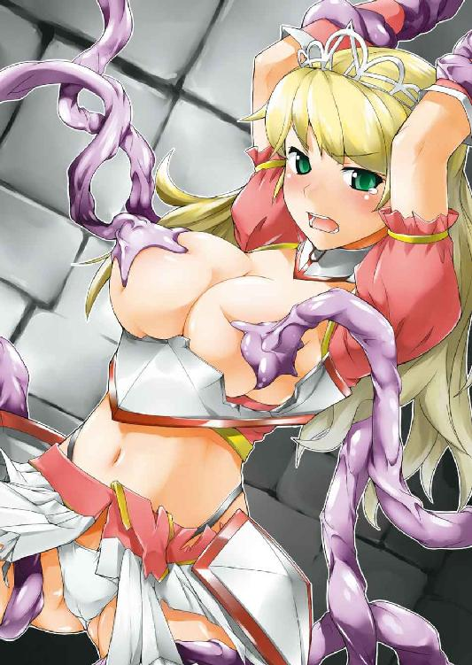
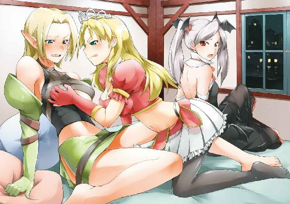
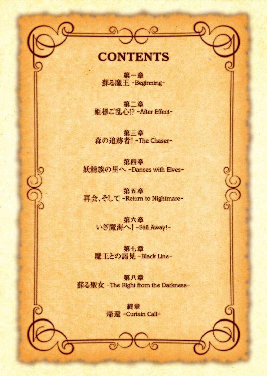
プリンセスリバーシ！！
交錯する美姫と魔姫
小説：舞麗辞
挿絵：昼沖太
あとみっく文庫
※本作品の全部あるいは一部を無断で複製・転載・配信・送信したり、ホームページ上に転載することを禁止します。本作品の内容を無断で改変、改ざん等行うことも禁止します。また、有償・無償にかかわらず本作品を第三者に譲渡することはできません。
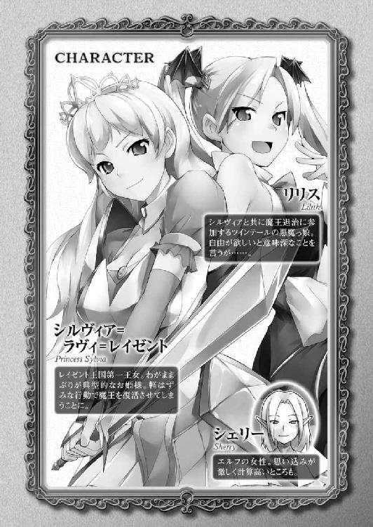
目次
第一章 蘇る魔王 -Beginning-
黄砂渦巻く荒れ果てた大地に、二つの人影が対峙していた。
「ようやくここまで追い詰めましたよ......魔王!!」
よく通る凛とした声で叫ぶのはまだ年若い女だ。透けるようなブロンドの髪をしたその娘は純白の衣を身に纏い、しろがねの剣でもって眼前に佇む男を指す。
「この俺をここまで追い詰めるとはな......さすが神に神器を授けられた聖女だけはある」
対峙するのは女よりずっと背丈のある男だった。漆黒のマントに身を包んだ男はその言葉とは裏腹に、いやらしい笑みを浮かべた。
「しかし......よもや忘れているわけではあるまい。切り札は我にあり、だ」
言って黒衣の男はスッと胸元から何かを取り出す。
それを認めた瞬間、凛としていた女の表情に動揺が染みのように広がった。
「ああ......私の、赤ちゃん!!」
「そうとも、お前の子だ。さあて。この俺を赤子もろとも斬る覚悟はあるのかな？」
からかうようなその言葉に、女は一転して言葉を失う。顔面は完全に蒼白だ。
「さあ、選ぶがいい。この世界か、それとも愛する我が子か──」
闇を纏った男が、剣を手にした娘に迫る。男の手は赤子の首にかけられたままだ。聖女は手にした剣を震わせ、攻めることも引くこともできない。
絵にかいたような、絶体絶命の危機──そこへ。
「えいっ！」
ぽこんっ、と間抜けな音を立て、ティーカップが魔王の頭を小突いた。
「な、何をするっ!?」
頭を打たれた闇の王は、マントを翻してすかさず振り向き、声を荒げるが。
「この悪者！ それ以上はわたくしが許さないんだからこのこのぉっ!!」
憤りの言葉と共に、今度は菓子皿が、続いて銀のスプーンが続けざまに宙を舞った。
「ちょっ、ストップストップ!! これシルヴィア、観劇の最中に物を投げつけるでない！」
慌てて声をあげたのは、初老の紳士だ。いかにも高級そうな衣服を身につけ、品のある顔立ちだけでも一目で位の高さがわかる。そしてそれは事実その通りであり、彼こそは、この王国を治めるレイゼント王その人であった。
「だってお父様、こいつがいけないんだわ!! お母さんの大事な赤ちゃんをさらったりするんだもの!!」
そう叫んで国王に盾つくのは、こちらも上等な絹のドレスを身につけた一人の少女だ。
名前はシルヴィア＝ラヴィ＝レイゼント。ここレイゼント王国の第一王女である。
白磁より滑らかな肌、実った林檎より艶やかな紅色の頬。髪は純金よりも麗しいブロンドをしており、その上に冠したプラチナのティアラさえごく自然に思える。溢れるようなその高貴さから、世間では大陸随一の美姫との二つ名で呼ばれているほどだ。
鼻立ちはすっきりとしており、澄みきった碧い瞳はさながら翡翠のよう。ぷるんとした唇は、もぎたてのさくらんぼのように瑞々しい。その整った顔立ちは、どんな名工の手によるビスクドールも遠く及びはしないだろう。
その美姫は手元にもう投げるものがなくなったらしく、つい今し方まで腰掛けていた椅子を持ち上げようと躍起の様子だ。しかし姫君の細腕で豪奢な椅子を抱えられるはずもなく、少女はうんうんと息みながらなおも壇上にいる魔王役の初老の男を睨みつけていた。
「だからこれはお芝居だと言っておる......まったくシルヴィアには困ったものだなあ」
国王はそう言うものの可愛い娘のやったこと、声色からはまるで怒気など感じられない。
それは周囲の召使をはじめ、モノをぶつけられた役者も同じだ。子供っぽい行動もその愛らしさゆえ、人々には幼子の悪戯みたいに映るようだった。
「ははは、姫様は相変わらず正義感がお強いですなぁ」
一気に和んだ空気の中から柔らかな声が届いた。そして観劇していた人々の中から、一人の老人がスッと前に出て二人の王族の間に割って入る。
「おおこれは賢者殿、もうお着きになられておりましたか。いやしかし、これはお恥ずかしいところをお見せしてしまいましたな」
老人の姿を認めたレイゼント王は、ばつが悪そうに顎髭をひと撫でしつつ苦笑する。毎年行われる建国記念の祭りのたび城にやってくるこの賢者は、大陸の三賢人と呼ばれる人物の一人であった。齢は既に七十を過ぎており、国王である父でさえその権威は及ばない。
とはいえ姫君にとっては、面白いお話をしてくれるおじいさんぐらいの認識しかない。
「デボラ様、いらしてたのね!? わぁいっ、また異国のお話を聞かせてちょうだいっ!!」
王宮の書庫にある本は堅苦しいか子供っぽいかの二者択一。彼が見聞きしてきた現実の外の世界の話は王宮から脚を踏み出したことのない王女にとってはまさに幻想譚だった。姫君の方は老人を見るやそれまでのご機嫌斜めも吹き飛ばし、ニコニコ顔でその手を握るやすぐさま自室に引っ張り込もうとする。
「はは、用事が済みましたらな。国王殿、僭越ながら少々お時間をいただけますかな」
好々爺然とした笑顔で少女に言った後、一転して神妙な面持ちで賢者は国王に懇願する。
請われるままに王は観劇を抜け出し、賢者と共に応接の間へと連れ立つ。すぐにでも彼を借り出しお話を聞きたいシルヴィアもまた、その後を着いていった。
「今──諸国を騒がしております騒動につきましてはご存知ですな」
侍女が部屋を出るのを待ってから、デボラはゆっくりと話を切り出した。
「ふむ──聞けばラゼアニア王国周辺にて黒鬼が姿を見せたとか。つい先日は北のグラウディア山脈の辺りでも、同様の目撃例があったと聞いておるが」
ゆったりとソファに腰掛けたレイゼント王は、記憶を探るようにしてそう呟く。
「その通り。黒鬼はかつて、この地が魔王と呼ばれた悪しき存在に蹂躙されし頃、かの者の手足となり世界を混沌に陥れた魔物。いわば魔王の使い魔です」
「魔王──かつて聖女がこの地に封じし大いなる邪悪か」
賢者と国王は一様に難しい顔をして黙り込む。
シルヴィアはそんな二人の間でちょこんとソファに座っていたが、彼らが何を話しているのやらちんぷんかんぷん。当然話に加われない彼女は面白くない。
「お父様、聖女って？ それに魔王が封印されているですって──？」
なんとか話に混ぜてもらおうと無理やり首を突っ込むも、
「子供は黙っていなさい」
父王に一喝され二の句も継がせてもらえない。普段は自他共に認めるレイゼント一の親馬鹿であるものの、この時ばかりは厳格な国王の顔を崩さなかった。
つれない対応にシルヴィアはすっかりへそを曲げ、口を尖らせぷうっと頬を膨らます。
「まあよいではないですか。姫様に限らず、若い方々は今となってはご存知ない方も多い。この機会に一つ、このデボラが昔語りをさせていただくとしましょう」
そう言って賢者は姫に柔和な笑みを投げかける。自分も仲間に入れてもらえると知った姫が斜めに傾いたご機嫌を直したのを見計らい、老人はゆっくりと語り始めた。
「今から三百年も前の話です。この地は今のように人間が支配していたのではなく、その大部分を魔族と呼ばれる闇の種族により牛耳られておりました。魔族どもは手当たり次第蹂躙し、この大地は荒廃の限りを極めました」
「まあひどい。でも昔の人はそんな奴らにやられっぱなしだったの？ わたくしだったら黙ってないわね」
言ってシルヴィアが可愛らしい拳を握る。観劇で善人が悪者に虐げられていると、我慢できずに手元のティーカップを投げて役者を困らせる、彼女らしい意見だった。
「ははは、姫様は勇敢でいらっしゃいますな──無論人々もただただ手をこまねいていたわけではございませんぞ。ありとあらゆる武器や魔術を駆使し、これに対抗しました。しかしそんな人間の努力をもってしても、魔族の脅威を克服することは遂にできませんでした。それと言いますのも、奴らの背後には大魔王と呼ばれる強大な力を持った、闇の盟主がおったからです。大魔王の庇護の下、魔族どもめはますますその勢いを増し、生きとし生けるものはその終末をすぐ目の前に迎えておりました」
「まあっ、この世には神も仏もいないのね」
納得いかないように、シルヴィアがアヒルみたいに唇を尖らせる。彼女はピーマンと暗い話がなによりも大嫌いなのだ。
「そんなことはございませんぞ。それまで地上のいかなる諍いにも関することのなかった我らが主も、この段になって遂に重い腰を上げられたのですからな。主は大魔王を討つため、一人の聖女に神器を託し地上へと遣わしたのです。聖女と魔王は激しい戦いを繰り広げました。海は干上がり大地は割れ、多大な犠牲が払われたといいます」
「で、聖女は勝ったの!?」
両手を胸に抱き身を乗り出して、少女は三百年前のことの行く末を案じる。
「そうでなければ我々は今この場におりますまいて。聖女は深く傷付きながらも主から賜った神器を用い、遂に魔王を封印することに成功しました。本当でしたら討ち取りたいところでしたが、魔王の力は主に匹敵するほど強大なもの。聖女には地中深くへと封じ込めるのが精一杯だったのです」
「よかった！ うふ、やっぱり正義は勝つのね!!」
お話が彼女の好きな勧善懲悪で終わったことに満足したのか、シルヴィアは我がことのようにほっと胸を撫で下ろす。
そんな微笑ましい少女の姿に頷きながら、賢者は更に話を続けた。
「聖女は荒廃した地上を再生するため、そしていつか再び魔王が目覚めた時のため、自分の血をこの地に遺すこととしました。魔王との争いの際に共に戦った男と結ばれた聖女はこの地に国を築き、魔王を監視し続けたのです──」
ようやく物語を終えた老人は、ふうっと深いため息をつく。
「ふーん......あれ、今の話だとこのお城に魔王が封印されてるってことになるような？」
素朴な疑問を口にした少女に、
「......まあ、そうなるであろうな」
父王は苦々しい表情で応対する。
「.........いるの、魔王？」
「...............いる」
しばし沈黙した後に、王は囁くような小声で、しかしきっぱり肯定した。
「今賢者殿が語られたのは言わば我が王国の建国史。その事実を物語へと変え、やがては風化するよう仕向けたのは実は我が一族による故意じゃ。不用意に、封印に近づく者が現れぬようにな」
重苦しい口調で語る父の言葉に、姫君は硬い表情でしばし碧眼を潤ませていたが。
「すごーい、それじゃわたくし聖女の血を引いているってことじゃない!! そんなのってステキ！ しかもこのお城には恐怖の大魔王が眠っているですって!? 怖い──けどやっぱりステキ!!」
王国の秘密を聞かされた姫君は、花が咲くように一転してその表情を輝かせる。
「なにが素敵なものか！」
それを見て、国王が今までの悠然とした態度をかなぐり捨て怒号を発した。
「ひぇっ!?」
シルヴィアにしてみれば初めて見る父の姿だ。あまりの剣幕にじゃじゃ馬姫も借りてきた子猫みたいに丸く小さくなってしまう。そして涙を滲ませた碧眼で上目遣いに父を見た。
「すまん──声が大きすぎたな、許しておくれ。しかしシルヴィアよ。お前は三百年前の建国以来、初めて生まれた直系の女子。我らの祖先たる聖女様は女性であった。つまりお前は聖女の生まれ変わり──神器に感応することのできる聖女なのだぞ」
「その通り──ようやく本題に入れますな。ここまで長々と昔語りをしてしまいましたから、単刀直入に申し上げましょう。聖剣による魔王の封印は綻び始めております。魔王の下僕たる黒鬼どもが姿を現したのがなによりの証拠。シルヴィア姫に今一度、封印の儀式を執り行っていただき、魔王の封印を完全なものへとしたいのです」
言いながら、老人は美姫の掌を握る。
「聖女......わたくしが、この世界の救世主......!?」
唐突に明かされた使命に、しかし退屈極まる王宮での日常に飽き飽きしていた姫君はすっかり気分を高揚させられる。
「わっ、わたくしにできることでしたらなんだって──」
「断る」
シルヴィアの二つ返事を遮って、父王が即座に拒絶した。
「賢者殿の仰ることを疑うわけではないが──リスクが大きすぎる。それに黒鬼の目撃はまだ二例に過ぎぬ。魔王の封印に触れるほどの大事とは──」
「大事が起きてからでは遅すぎるのです!!」
老人が珍しく声を荒げた。そのあまりの剣幕に、それまで賢者寄りだったシルヴィアはソファの上をススス...と父の傍へと移動する。
「よいですか、国王。考えたくはないですがシルヴィア姫の身にもしも何かが起きたなら、聖剣に呼応できる者は誰もいなくなってしまいます。時期尚早などというものはないのです、できる時にやれることをやる。それが備えではありませぬかな」
「賢者殿の言い分も理解している。しかし最後に判断するのは、国王たるこのワシだ」
結局。二人は最後まで相容れぬまま、会談は終わりを迎えた。
しかし。
（お城の下に魔王が眠っているですって？ なによそれ、すんごく見たいじゃないの!!）
その後のパーティーの最中も、シルヴィアは始終心ここにあらず。少女の気持ちはこの城のどこかに封印されているという魔王にすっかり奪われていた。
とはいえぼんやりとしているその様子も、彼女にかかれば物憂げな深淵の美姫といった風情で恐ろしく絵になる。
淡いブルーのドレス姿はすらりとしたボディラインながらも、胸元や腰つきは極めて女性的。特にその胸は驚くほど豊かで、大きくスリットが入れられている胸元からは、そのはちきれそうな胸の谷間が半分近く露になっている。
そんな眼の毒をゴム毬みたいにゆさゆさと弾ませながら、シルヴィアは小一時間も晩餐会の会場を行ったり来たり。先ほどの話で頭の中がいっぱいの姫君は、各国から彼女目当てで集まった王子たちも眼中に入れず、声をかけられても素通りだ。
（気になりすぎて今夜はきっと寝られないわ。あとでこっそり見に行っちゃおうかしら？ でも夜中は真っ暗で怖いし、だいたいわたくし場所がわからないのよねぇ......）
オレンジジュースを飲みながら、姫君がよからぬことをたくらんでいた矢先。
「あの、シルヴィア姫様ですよね？」
横から一人の娘が声をかけてきた。二十歳そこそこか、身なりは平民のようだが、背丈の高い綺麗な娘だ。その顔には見覚えがある。確か高齢である賢者の身の回りの世話をしている付き人だ。取り込み中のシルヴィアは他の男ども同様、華麗にスルーを決めようとするが、
「封印のことで、お話が」
娘がそう口にした途端、美姫の表情が一変した。
「なっ、なになに、あなた何か知っているの？」
踵を返して娘の肩を抱き、姫君はどうにかして情報を聞き出そうとする。
「アタシ、タバルサっていいます。賢者様の付き人です。姫様にお願いがあって......」
そこまで言うと娘は床に膝を着き、あろうことかシルヴィアに向かい土下座した。
「お願いですッ！ 儀式を執り行ってください!! じゃないとアタシの...お母さんが」
娘はわんわんと大声で泣き、にわかに周囲の注目がこちらへと集まる。
「ちょっ、いきなりなんなのよ......と、とにかくこっちにいらっしゃい！」
傍目は、まるで粗相をした侍女をいぢめる性悪お姫様である。夢うつつの状態を脱した姫君は慌てて娘の腕を引き、ひとまず無人のテラスへ彼女を連れ出すこととした。
「はぁっ、ここなら大丈夫ね...で、先ほどあなた、お母さんって言っていたけど......？」
「はい......母は二月近く前、ラゼアニアで黒鬼に襲われたんです。幸い一命は取り留めたんですけど、血中に魔族の毒素が......お医者様の話では、もってあと半月ほどだと」
言ってタバルサは涙を拭いつつスンスンと鼻を啜る。
「そ、そうなの...それはお気の毒だったわ......わたくしに、できることがあれば......」
シルヴィアの母である王妃も、十年前に病気で他界している。一番母の恋しい時分に味わった辛い別れ。その辛さを知っているゆえに、たとえ赤の他人でも姫君は深く同情した。
しかし彼女の言葉を耳にした途端、タバルサはにわかに表情を明るくさせた。
「あるんです、それも姫様にしかできないことが!! 母を蝕む毒は魔族の生気である瘴気そのもの。その元凶である魔王の封印を姫様が再び施してくだされば、母の毒も自ずと消えるんだとか......まあこれは賢者様の受け売りですけど」
そこまで言ってから、娘は一転して表情を暗くする。
「......ごめんなさい。国王様がお決めになられたことを、今更一平民のアタシなんかがどうこう言える問題じゃないですものね......。でも...でもこのままじゃ.........」
そこから先は言葉にならない。
泣きじゃくる娘をしばし見つめていたシルヴィアだったが、やがて意を決したように、その細い肩をギュッと抱いた。
「もう泣かなくっていいわ、あとはわたくしに任せて！ わたくしがお父様に進言して、必ず儀式を執り行えるよう計らってみせるわ!!」
なんせ生まれて初めて、他人に頼られたのである。自尊心を大いに擽られるこのシチュエーションが、嬉しくないわけがない。
（わたくしにしかできない、わたくしにだからできること......嗚呼、これが使命というものなのね!!）
娘の背中を優しくさする姫君は、既にすっかり救世主気取りだ。
父はああ言ってはいたが、シルヴィアには勝算があった。
（お父様がわたくしのお願いを聞いてくれないわけないわ）
可愛い一人娘ゆえか、はたまた幼くして母を失ったその不憫さからか......恐らくはその両方が理由なのだろう。王は娘のお願いを──それがかなりのわがままであったとしても──今まで一度として断ったことはなかった。
だから──。
「シルヴィア、いくらお前の頼みでもそれだけは無理だ」
だから苦虫を噛み潰したような顔で父にそう呟かれても、シルヴィアは最初その意味をよく理解できなかった。
宴にも参加せず自室に籠っていた王は、そんな娘を前にして真剣な面持ちで言葉を連ねた。
「よいかシルヴィア。お前は簡単に考えているかもしれないが、封印に触れるということは魔王の禁忌に手を触れること。一つ間違えれば三百年前の悲劇を再び引き起こすことともなりかねん。もしそうなったら......その娘には気の毒だろうが、百万の国民を守る王として、到底許容できぬ申し出だ」
「でも......」
なおも食い下がろうとするシルヴィアであったが。
「外のパーティーもそろそろお開きだ、子供はもう寝る時間だぞ。よいか、シルヴィア──もしも今度この話を蒸し返したら、たとえ愛するお前でも......許さんぞ」
生まれて初めて辛く当たられ、当てが外れたじゃじゃ馬姫はしょんぼりしながらすごすごと寝室へ戻るしかなかった。
※
とはいえ。それはあくまで父王の見ている前での話である。
宴も終わり、皆が寝静まった頃。
「しかし、いいんでしょうか...国王様に断りもなく......」
「しっ、声が大きい！」
心配げな囁きを叱咤する、明らかにそれ以上の大声。大声の主は言うまでもない、大陸随一の美姫にしてレイゼント城一のトラブルメーカー・シルヴィア姫その人であった。
その後に続くのは賢者デボラ、そしてタバルサをはじめとした数人の付き人たち。
「夜のうちに儀式とやらを終わらせて、そのまま元に戻しとけばどうせばれないわ!!」
父王に断られたからといって、そのまま引っ込むような彼女ではなかった。自分がなんとかしてあげる、彼女はタバルサにそう宣言したのだ。
（だいたい「わたくしにまかせて」と大見得切ったのに「やっぱり駄目でした、てへ♥」なんて言えるわけないわ!!）
そんな王女のプライドも、この暴挙に一役買っていた。
見張りをやり過ごし、裏庭の祠へと辿り着いた一行は、しばし辺りを調べていたが。
「ふむ...ここですな」
やがて賢者は祠の角のある一点で二〜三度脚を踏み鳴らし、そう囁く。
続いて老人は手にした杖を石と石の間に差し入れた。そして梃子の要領でぐっと力を込めると、祠はガコンと低い音を立て、そのまま奥へとスライドする。
現れたのは......。
「これって......地下道!?」
シルヴィアが思わず声をあげる。退けられた祠の石の下からは、深淵まで続いていそうな階段が姿を現したのだ。
「すごい...お城の中にこんな楽しそうなものがあったなんて......知らなかったわ！」
謎の地下道登場にテンションの上がったらしいシルヴィアは、率先して階段を降りてゆく。そして階段を降りきると、そこには思いのほか広々とした石室が待っていた。
「う、中はなんだかちょっと気味悪いのね......」
周囲を見渡した姫君が肩を窄める。壁一面には見慣れぬ古代文字がなにやらぎっしりと刻み込まれており、見るからに禁忌の匂いがした。
部屋の真ん中は一段高くなっており、そこに祭壇がある。そしてその中央には──。
「おお...これぞまさしく破魔の聖剣」
祭壇に、地を穿つようにして刺されたそれを前にして、賢者が感嘆の呻きを漏らす。タバルサが祈るようにして小さく手を合わせた。
「これが......聖剣？」
畏怖する賢者らを尻目に、ただ一人拍子抜けしていたのはシルヴィアだった。
彼女が聖剣と聞いてイメージしていたのは金色に輝きランプの光を刀身に当てれば七色の光を反射する──そんなステキアイテムだったのに。
目の前のそれは刀身など金属とは思えぬほどくすんでおり、聖なる神器とはとても思えないほど汚い。
先日見物した王立騎士団の歩兵が振るっていた安物の剣の方が、よっぽど小綺麗だ。
剣の突き立てられた祭壇のすぐ脇には、その他の文字より明らかに時代の若い一文が刻まれている。古代文字はさっぱりだが、こちらは姫君にも読めた。
「なになに......何人もこの剣に触れるべからず。背けば必ずや大いなる災いが汝を飲み込むであろう......って......」
それを音読したシルヴィアは、それっきり黙りこくってしまう。そればかりか膝を屈めて顔を伏せ、可愛らしい肩を小さく震わせていた。
警告を恐れているのか──賢者が落ち着いた足取りで震える姫の傍に寄る。
「姫様......何も恐れることはございませんぞ。姫様の身の安全は、このデボラが責任をもって──」
「面白そうッ!!」
しかしそう言って顔を上げたシルヴィアの表情は今日一番といっていいほどキラッキラしていた。
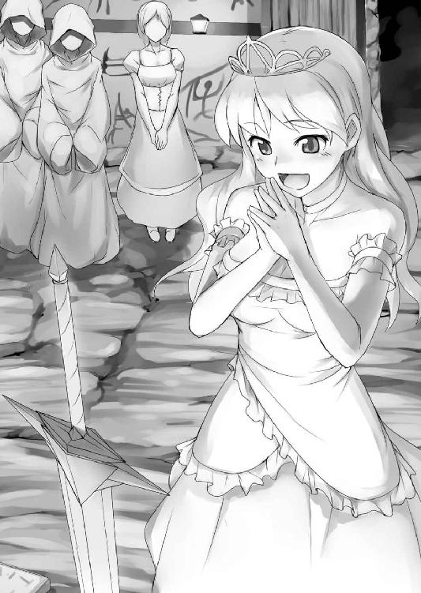
『──は？』
予想外のお言葉に、デボラとタバルサの間抜けな声が重なった。
「だってそうでしょ!? ここまで頑なに剣には触れるな近づくなって書いてあるのよ!? 絶対やるなと言われたら、意地でもやってみたくなるのが人の道じゃあないかしら!?」
「それは...一部のヒト限定の、随分蛇行した道だと思うんですけど......」
付き人の娘が恐れ多そうにそう言うものの、
「もう抜いていいの？ 抜いちゃっていいの!? 駄目って言っても抜くけどね!!」
はしゃぎまわるシルヴィアには、タバルサの呟きも聞こえていない。どうやら震えているように見えたのは、単にうずうずしていただけらしい。
「ええ...先ほどお教えしました祝詞と共に引き抜いてくだされば、聖女の血を引かれる姫様なら苦もなく抜けるはずですぞ」
「わかったわ──ええと......この地に眠りし夜の盟主、常闇なりし冥府の王。我が呼びかけにその戸を開き、日の光穿ちて月と踊らむ──ねえ、さっきから聞こうと思ったんだけど、この呪文ってなんか物騒──」
シルヴィアは剣の柄に手を添えて祝詞を紡ぎ始めたものの、改めて口にしてみた言葉の響きに拭い去りがたい違和感を覚える。そこで儀式を中断し後ろを振り向くも、
「とっ、途中でおやめになったらいけません、早くお続けください!!」
すかさず賢者に怖い顔で叱責されてしまう。怒られるのが苦手な少女は慌てて前を向き直し、中断していた言葉を続けた。
「え、ええ......我今宵光の縛め解き放ち永久の自由を与えん。目覚めよ──!!」
ずいっ！
言葉を終えたシルヴィアは、力いっぱい剣を引き抜く。それは三百年の長きにわたってそこにあったとは思えないほど、非力な姫君でもあっさりと抜き取れた。
「あわっわぁぁ」
あまりにあっさり抜けたので美姫は思わずひっくり返り、尻餅をついてしまう。
「凄い──綺麗」
だが少女はお尻を打った痛みにさえ気づかぬほど、手にした剣に見とれていた。抜かれた刀身は外気に触れていた部分とは打って変わって、白金の輝きを孕んでいた。表面など、まるでたった今造られたかのように艶やかだ。
まさに聖剣、破魔の名を戴くに相応しい美しさがそこにはあった。
「よーし、そんじゃお望みどーり！ 今からわたくしがこの聖剣でもって見事世に蔓延した悪しき者どもを──」
びゅしゅっ!!
少女の高らかな宣言は、しかし不穏な音によって遮断される。
音はたった今、シルヴィアが剣を引き抜いたその空洞から溢れ出していた。
いや、音だけではない、音は予兆に過ぎない。その空洞の奥底から、何かが湧き上がってきているのだ。
ゴゴゴゴゴ......剣を抜いた隙間から地響きがして、石室が激しく揺さぶりをかけられる。
そして。
バババババババババババババババババッッッ!!
目の前で蔵いっぱいの花火が暴発したみたいに凄まじい光と音が轟いた。同時に地の底から硫黄のような腐臭を孕んだ熱風が吹き荒れ、祭壇を天井まで吹き飛ばす。
そうして開いた空洞から、うじゃうじゃと黒い何かが一斉に解き放たれた。それは瞬く間に石室を満たし、蝋燭の灯りを飲み込んでこの地下室を闇色に染め替えてしまう。
「ひゃっ、なに...コウモリ!? そっそれとも......虫じゃないでしょうねェッ!?」
怒号のような轟音と肌を焼く熱気に囚われながら、光を奪われたシルヴィアはおぞましさに甲高い悲鳴を放ちつつ、手にした剣を振り回す。それが功を奏したのかどうかはわからないが、謎の黒い大群はものの数十秒で霧のように霧散した。
時を同じくして地底から吹き上がる熱風も収まり、辺りは一転して静寂に包まれた。それでも灯がないために視界は闇に閉ざされたままだ。
「大丈夫ですか姫様......今、ランプを付け直しますわね」
背後で発せられるタバルサの声。シュッ......マッチを擦る音と共に、室内にオレンジの灯りが蘇る。
「うむ...思った以上の衝撃でしたな」
賢者デボラの声も聞こえる。
「よかった、二人は無事だったのね。でも今のはいったい──うわぁっ!?」
ようやく戻った視界を確認して、シルヴィアは思わず悲鳴をあげた。祭壇には投石器の攻撃を受けたみたいに大きく穴が空いていた。古代文字の彫られていた壁は、そのどこもかしこもが獣に引っ掻かれたみたいに一面傷だらけになっている。
「な...なんか......タイヘンなことになっていないかしら......」
もしかしてさっき自分が儀式を一度中断したせいでは......そう懸念した姫君が、軽く頬を引きつらせ賢者に問いかける。
「何も大変なことなどございませんぞ」
「ええ...むしろ大成功ですわ」
シルヴィアの心配を打ち消すようにかけられた賢者とタバルサの声。だがおかしい。それまでの厳かな雰囲気はどこへやら、二人はまるで笑いながら言葉を発しているようだ。
「で、でもこの地震...絶対おかしいじゃない......？ それにさっきまでいた方々は......」
わたわたしながらなおも落ち着かぬ様子の姫君に、
「なぁに。大魔王様が目覚められたのですから、この程度の揺れは仕方ありますまい」
さも当然のように賢者はそう言い放つ。
「へ......だいまおーが......目覚めた？」
まさにきょとん、といった感じの表情で戸惑いを見せるシルヴィアに対し、
「そりゃそうでしょ、大魔王様を封印していた聖剣を、姫様抜いちゃったんだもの。付き人役の使い魔どもは、今の衝撃で消し飛んじゃったみたいね」
タバルサもまた、いともたやすく賢者に同調する。
「な、なんかさっきからハナシが噛み合わな......なななぁっ!?」
振り返った美姫は、思わず素っ頓狂な声をあげる。
無理もない。そこにいたのは先ほどまでとは似ても似つかぬ二人の姿だった。
終始うつむき加減であった賢者はすっくとした立ち姿でこちらを見つめている──その三つの瞳で。にやりと笑った口元からは、狼のようなギザギザの牙が覗いた。
隣のタバルサはこめかみの辺りから、なんと山羊のような渦巻状の角を生やしていた。その眼は蛇みたいに縦長の瞳孔で、白目の部分も鈍い金色に取って代わられている。
「い、いやねぇ二人とも、こんな時に......あ、わかったわよ、これ最初っからぜぇんぶどっきりなんでしょ!? お父様もどこかでご覧になってるのねっ、もーいぢわる!!」
想像の範疇の遥か斜め上をゆく展開についていけなくなった姫君は、すべてを性質の悪い冗談と笑い飛ばし、付き人娘の頭の角をガシッと握る。
「まったくこんなものまで用意してぇ...ってあれ...これ、なんかホントに生えてるみたいなんだけど......最近の仮装衣装はよくできてるのね、デボラ様のなんてまるで本物......」
無理やり自分を納得させつつ、続いて賢者の額に開いた眼に触れようとするが、
ビリィッ!!
「ひゃえぇっ!?」
伸ばした指先を第三の眼がギョロリと睨んだ瞬間、シルヴィアは紫の電撃に弾かれる。
「い、痛いじゃないのぉ......」
小さな声で抗議しつつも、変わり果てた二人の威圧感にジリジリと後ずさる。そして後ずさりながら、その頭をフル回転させて考えていた。
１．自分は邪気を払う儀式のためと頼まれて聖剣を引き抜いた。
２．剣は大魔王を封印しており、封印の中からはなんかとってもヤバそうなものがわらわら出てきてどっかに消えちゃった。
３．自分に剣を抜くよう促した二人は気がついたら豹変、しかもどう見ても悪魔。
４．そしてそいつらから「あなた大魔王目覚めさせちゃったよ☆」とのサプライズ発言。
とりあえず今日の出来事を箇条書きにした姫君は、ようやく一つの仮説に行き当たる。
「えーっと......あれ.........もしかしてわたくし..................騙された？」
それでもまさかと半信半疑で、恐る恐る尋ねてみるも。
「騙されたのよ（あっさり）」
「騙されたんじゃ（きっぱり）」
二人の魔族は声を揃えて即答する。
「うわ、そんなあっさり......お、お前たちはいったい何者なのよぉっ!?」
いきなり掌を返された姫君は、半べそ状態で問い詰める。
「賢者というのは人間界での隠れ蓑、ワシは大魔王様最古参の家臣......お察しの通りの魔族じゃよ。そしてこちらのタバルサは、ワシが目をかけておる淫魔じゃ」
答えたデボラが三つの瞳を同時に細めて微笑する。
「待っておったぞこの時を......姫様がお生まれになった時からのう。これで人間なんぞの賢者とかいう下らぬ猿芝居も終わりじゃて......もっとも、この程度の猿芝居であっさりカタがつくとは少々拍子抜けじゃがな」
「ほぉんと、三百年ぶりの聖女様がこんなおばかで大助かりでしたわね、デボラ様♥」
老魔族が低い声で笑い、女淫魔が高笑いでそれに追従する。
「ううっ、なによその言い草ッ！ ヒトの良心に付け込んだ挙句、口々に勝手なことを......悪魔どもめ、もぉ許さないわよ!!」
騙されたうえにこの言われよう、さすがのシルヴィアも沸点を超えた。普段は桃色の頬を真紅に紅潮させ、大陸随一の美姫は声を荒げて怒気を吐く。
しかし二体の魔族は怯まない......ばかりか、底冷えするような微笑を怒れる美姫に返す。
「それはこちらの台詞じゃ。封印を解いてもらった以上、おぬしはもう用済み」
三つ目の老魔族が手にした杓を一振りするや、その先端が刃へと変わる。
「......どころか、聖女なんてアタシたち魔族からしてみれば百害あって一利なし」
気づけば女魔族の指先は、まるで針を束ねたような鋭い爪に彩られていた。
「ひぇぇっ!? 二人してなにいきなり痛そーなの出してるのよぉ......」
狂気と凶器を前にして、美姫はあっさりとその勢いをそがれる。
一度は威勢のいい言葉を放ったものの、徹底的に甘やかされて育ったシルヴィアに武術の心得はない。いやたとえそれなりの腕をもっていたとして、目の前に迫っているのは魔族。はなから勝ち目などあろうはずもなかった。
「ふむ......姫様、悪いが死んでもらおうかの」
「大魔王様を復活させてくれたお礼に、あんまし痛くなくしたげるわね♪」
二つの黒い影が包み込むようにして美姫に迫る。
「ちょっ...やだ......だれかっだれかあああああっっ!?」
大声で叫ぶものの、この辺りを通る者など滅多にいない。見張りも次に来るのは早くて一刻後だ。唯一の逃げ道である階段も、悪いことに魔族たちの向こう側にあった。
「ま、待ちなさいよあなたたち......はっ話せばわかる、わかり合えると思うのよ」
姫君の決死の説得にも悪魔たちは無言のまま爪と刃をギラつかせるばかり。やがて背中をひんやりとした感触が押し戻した。とうとう石室の隅まで追い詰められてしまったのだ。
「ひっ...!?」
（わたくし、ここで死ぬの？ 冗談じゃないわよ......わたくしまだ、このお城から外に出たことさえないっていうのに──!!）
降って湧いた理不尽に、しかし抗う術もなく飲み込まれようとした最中。
《あーもうっ、まぁーったくなにやってんのよ》
声が──心底呆れ返ったような声が、いきなり耳元で響いた。
それはまるで頭の中に直接話しかけられているような不思議な感覚だった。
「だ、誰......？」
思わずきょろきょろ辺りを見回すが魔族以外の人影はない。しかし声は続いた。
《あたしが誰かなんて今はどうでもいいじゃない。それより──アンタ何びびってんのよ？ まさか自分がその手に持ってる物のこと、忘れてるんじゃないでしょうね？》
「わたくしが...持っている物......？」
その指摘で、思い出したように自らの手元を確認する。そこには。
「あ...剣......破魔の、聖剣!!」
《そのとおり。そしてアンタはどうやら聖女の末裔なんでしょ？ 聖剣を使った封印を破ることができたんだもの。だったら逆に、その力で魔を払うことだって──》
「そ、そっか......!!」
ブンッ!!
与えられた糸口に縋り付くように、姫君はぶらさげていただけの剣を両手で握り直し、切っ先を上方へと向け身構える。蝋燭の緋色が刃に映り、剣が燃えるような紅を孕んだ。
「ふふ、なによいきなりカッコつけちゃって。お前みたいな素人の太刀筋なんて──」
交戦に転じた少女を笑おうとする女魔族。しかし。
「退くぞ、タバルサ」
その横に佇む三つ目の怪老は小さな声でそれを制した──しかも膝が笑っている。
「ええっ!? いきなり何ガクブルしちゃってるんですか!?」
「あんまりうまく行き過ぎたもんで、大事な段取りを一つ飛ばしてしまったわい......本当はこの後、聖女と聖剣を離れ離れにして、一つずつ片付けるつもりだったんじゃ」
「そんな大事な段取り忘れないでくださいよ......でもそんなに凄いんですか、あの聖剣」
「うむ...正直ワシ、勝てる気がせん」
「デボラ様が勝てないなら、アタシなんてかないっこないじゃないですか!!」
青ざめる女魔族、しかし老魔族の言葉に反応したのは彼女だけではない。
「へー、いいこと聞いちゃったみたいね♪」
ニッ、と笑ったシルヴィアが、物は試しとばかりに大きく剣を振り上げた。
「ま、まずいぞ......よしタバルサよ、あとは任せたッ」
言うが早いか、三つ目の魔族は印を切り呪を紡ぐ。そして次の瞬間には跡形もなく消失していた。
「ちょっ...ずるいですよデボラ様ァァッ!?」
虚空に向かって涙目で吠える女魔族だが、おいてきぼりにされたのを悟ると、
「くそぉっ────フン、まぁいいわ。考え方を変えれば、ここでお前を殺したら大金星ってことじゃない。そしたら、大魔王様の正室にしてもらうのも夢じゃないわァッ」
窮鼠猫を噛むといったところか。爪を立て、再び好戦的な態度を見せる。グワッと口端がこめかみまで開き、そこからだらりと伸ばした長舌をうねうねと蠢かせた。
「なんかあいつ、またやる気出しちゃってるけど......ほんとに大丈夫なんでしょうね」
金色に輝く聖剣を身構えながらも、生まれて初めての実戦──しかも相手はヒトならぬ魔族──に早くもへっぴり腰のシルヴィア姫。
《情けないわねー......心配ないわ、落ち着いて剣を振るえばいいのよ》
他の手がない以上、言葉に従う他にない。
「ええいっ、もぉどうにでもなれだわぁっ!!」
姫君は意を決し、振り上げた剣に渾身の力を込めて一気に振り下ろした。
ビュンッ!!
長剣が唸りをあげ淀んだ大気を切り裂く。いや、切り裂いたのは大気だけではなかった。
「ぎゃあっ!!」
剣の起こした風に触れた途端、驚嘆の悲鳴と共にタバルサがその顔を押さえ蹲る。
「ふ、触れてもいないのに......斬れた!?」
しかし一番驚いていたのは、奇跡を起こした当のシルヴィアだ。
《大魔王をも封印した聖剣よ？ あの程度の三流魔族、風圧の起こす神風だけでイチコロに決まってるじゃない》
淫魔と少女の驚愕も、謎の声にしてみれば当然のことらしい。
と、いうことは。
（あれ......もしかしてわたくし今、すっごく有利──？）
「──フッ、今まで散々やってくれたわね！ 我が聖王国の平和を乱すモノノケめ、この聖女シルヴィアが破魔の聖剣で地獄の底へと葬ってあげますわ!!」
それまでのへっぴり腰はどこへやら、ふぁさっと髪をかきあげたシルヴィア姫はすっくと背を伸ばし腰に手を当てて。手にした剣の切っ先でビシィッ！ と女魔族を指し示す。
「こっこのコムスメがァッ!! よくもアタシの顔を傷モノにしておくれだねェッ!?」
しばし頬を押さえていたタバルサが怒りを爆発させたように咆哮する。なるほどその顔は聖剣の攻撃のため片側の頬が深く切り裂かれ血液を──黒い血液を垂れ流していた。
「ひっ、わざとじゃないんだからそんなに怒らなくったっていいじゃない......」
化け物の本性を見せるタバルサを前に、またも弱気のシルヴィア姫。しかし女魔族の方も少女が手にする聖剣が恐ろしいのだろう、これ以上襲い掛かってこようとはしない。
「くっ、ここは一旦退くけどねぇ......いい、アンタのこれからの運命はこのタバルサの名の下に──淫と邪に満ちたものとなるのよ」
ギンッ！
不意にタバルサの瞳が金色に光った。ただでさえ蛇のようだった瞳孔が更に狭まり、瞳の金色に飲み込まれる。シルヴィアの視線もまた、そこに吸い込まれてゆく。
（うあ...なに、眩暈が......）
視界がぐんにょりと溶け出し、頭の中がぼやけだす。水に浮かべられたように身体がふわりと軽くなり、下腹部がぽかぽかと柔らかな熱を帯びだした。
今まで味わったことのない感覚。下腹部の熱は次第に肥大して......。
「フン──じゃあね聖女様。命が惜しけりゃその聖剣を手放さないことね」
憎々しげな言葉を残し女淫魔がデボラ同様霧散した途端、夢から醒めるようにして熱は一気に冷めきった。残されたのは少女一人。先ほどまで助け舟を出してくれた〝声〟もいつの間にか聞こえなくなっている。
「わたくし......勝ったの......？」
二匹の魔族が姿を消してからも、しばしシルヴィアは石室に腰を落としたまま呆然としていた。地に足が着いていない感じ。まるで悪夢の中を彷徨っているみたいな、酷く現実離れした感覚が身体中を支配していた。
それでも時間と共に自分を取り戻した姫君は、
「こうしてはいられないわ──早く、お父様にご報告しなくっちゃ」
ハッと顔を上げ、手にした聖剣を支えにして重い腰を上げる。パンパンとスカートのお尻を払い、さきほど降りた階段を足早に駆け上った。また魔族が襲ってきたら怖いから、とりあえず聖剣は持っていくことにした。
ようやっとのことで地下から這い出したシルヴィアは、一目散に城内を目指す。そして裏門を開き転がるようにその中へ飛び込むや否や。
「ああっ、なんということでしょうッ!! わたくし悪い魔族に拉致されて、いやいや大魔王復活の儀式に参加させられてしまったのだわぁぁ─────......って、あれ？」
両手を眼いっぱい広げてのオーバーアクションでもって、悲劇のヒロインを演じ始めたシルヴィアであったが再び戻った日常であるはずの城内は、その景色を一変させていた。
蝋燭の灯りはことごとく消え、城内は完全な闇に閉ざされている。
「どうしたの、誰も──いないじゃない」
城内には少なく見積もっても三百人は使いの者がいるはずだ。それなのに辺りはシンとしており、人影一つ見当たらない。
そして城の中にはもう一つ、大きな異変が起こっていた。
「ちょっ、誰よ......こんなところに木を植えたのは」
城内には見慣れぬ木々が生い茂っていた。それも一本や二本ではない。まるでジャングルにでも迷い込んだかのように。辺り一面が樹木に覆いつくされていたのである。
「もしかして──これも魔王復活と関係あるのかしら」
人々の消失、突如現れた怪木の群れ。さしものじゃじゃ馬姫も心細さを覚える。
「──お父様はご無事かしら」
嫌な胸騒ぎがして、シルヴィアは急かされるように城内を駆けだした。縦横無尽に生い茂る木の根をよじ登り、息を切らせて向かったのは父王の寝室だ。
ドアの前には、常駐しているはずの見張りがいない。兵の立ち位置には例によって、樹木が植えつけられていた。
「お父様──入るわね」
恐る恐るドアを開ける──誰もいない。
天蓋のあるベッドの上、父がいるべきその場所にはやはり一本の木が生えていた。
「お父様、どこに行かれたのかしら......ま、まさかさっきの魔族どもに......」
ベッドに腰掛け途方に暮れる姫君の頭に、恐ろしい想像が芽生え始めた頃。
《シルヴィア......聞こえるか、ワシだ》
寂しい少女を慰めるように、愛する父王の声が直接心に響いてきた。
「えっ、お父様!? どこどこ、どこにいらっしゃるの？」
大好きな父親の声に満面の笑みを浮かべて、姫君は主を探す子犬みたいにきょろきょろ辺りを見回す。だがやはり部屋に人影は見当たらない。しかし声はなおも響いた。
《お前のすぐ後ろだ......お前が今、もたれ掛かっておる木だよ》
「へ......？」
言われて背後の樹木をまじまじと見つめる。
「おとう...さま......コレがぁっ!?」
素っ頓狂な悲鳴が口を突く。うそだ、と言おうとした姫君だったが、その脳裏にここへ来るまでの無人状態と乱立する木々が思い起こされ少女は言葉を飲み込んだ。
《ああ......目が覚めたらこんな姿になっておった。ワシにも皆目見当がつかん......シルヴィアや、お前は何か知ってはおらぬか？》
問いただされた姫君は、今までの出来事をかいつまんで説明した。もちろん、自分は魔族に脅されて無理やり〜という文脈で話をしたのは言うまでもない。
娘の話を聞き終わった父王は、心の声でため息をつく。
《そうか......それではお前以外の者は皆、樹木に変えられてしまったか。三百年前の言い伝えと同じだ......復活した魔王が、その強大な魔力によって人々を木に変えたのだ》
「ああ、お父様......どうしよう、わたくしとんでもないことしちゃったのね......」
自らの軽率な行動に、姫君は落胆させされる。深く沈み込む娘を前に王はしばし沈黙していたが、やがて重い口を開いた。
《シルヴィア。こうなった以上、お前が魔王を討つしかない》
「わ、わ、わたくしがぁっ!? ま、魔王を......倒すのォッ!?」
落ち込みから一転しあからさまに怖気づくシルヴィアだったが、父王は譲らない。
《他の人間は皆、ワシ同様に呪いをかけられておるだろう......呪いを受け付けなかった、お前にしかできぬことだ。幸いお前には聖女の血とその聖剣がある。それが必ずやお前を守り、進むべき道をも示してくれるはず......決して...手放さぬ...よう......に.........》
娘に使命を託す王の声が、次第に途切れがちになる。
「お、お父様、どうしたの......!?」
《うう...力が...入らぬ......シルヴィア、はやく...ゆけ......さきをいそ...............》
呻くような言葉を最後に、王はそれきり沈黙した。
「え...お父様？ おとうさまってばぁっ!? そ、そんなぁ......ひとりぼっちでなんて、そんなの無理よぉぉっ!!」
樹木を揺らし、悲嘆に暮れてそう叫ぶも、父はもう応えてはくれない。
「うーっ......どうしてわたくしだけがこんな目にぃっ.........」
自業自得という言葉を知らぬ麗しの美姫は言いながら、しばしスンスンと泣いていた。しかし小一時間ほど泣いて、結局誰も助けてくれないと自覚すると、涙を拭い鼻を啜って部屋を後にした。密林と化した城内の木々をかいくぐり、姫はひとまず自室へと戻る。
「とりあえず今日はもう寝ちゃおうかな、外は真っ暗で怖いし......そ、それに気がついたら全部夢かもしれないしっ!! そーよそーよ、それがいいわよおやすみなさいっ!!」
ピンクのパジャマに袖を通し、ナイトキャップを深々と被って。現実から逃避するようにベッドへ潜り込もうとする姫君。
「ってこらこら、いきなり寝ちゃってどうするのよ!?」
そのとき窓の外から呆れ返った声が飛び込んだ。
「誰ッ!?」
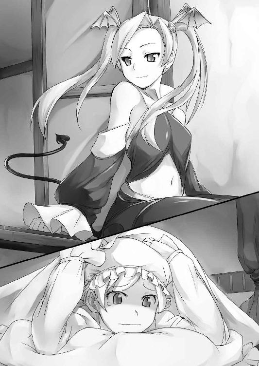
羽毛布団から顔を出し、ギュッと聖剣を握り締めながら美姫が問う。
そこには一人の少女が、いつの間にか開かれていた窓の桟に腰掛けていた。
自分より背丈の低い、とっても小柄な少女。髪はプラチナブロンドのツインテール、瞳は紅い猫目で、その童顔も相まってなんとも勝気そうな顔立ちをしていた。
「初めましてシルヴィア、こうして顔を合わせるのは初めてだったわね。あたしは──」
「えいっ!!」
ざっくり。
口を開いた黒衣の少女に対し、シルヴィアは躊躇いなく聖剣で斬りつける。
「ひぎゃーっ!? ちょっ、アンタいきなりなにすんのよっ!!」
すんでのところでそれをかわしたものの、今いた桟を両断されてツインテールを逆立て激昂する少女。
「魔族め、まだ仲間がいたのね──お父様たちを元に戻しなさいよこのこのーっ!!」
対するシルヴィアは両手で聖剣を構え、完全に戦闘モードである。
「ちょっと待ちなさい、あたしはあなたの味方──」
美姫を制し、敵意のないことをアピールしようとする銀髪魔少女だが、シルヴィアはそんな彼女をジト目で見ながら指を指し、
「そのコウモリの羽みたいな髪留め」
「う...」
「露出度過多な上、ところどころコウモリのマークをあしらったそのお洋服」
「うぐっ......」
「よくよく見ればちょっと宙浮いてるし！」
「うぎゅぎゅぅぅ.........」
「極めつけはそのお尻から伸びてる、矢印みたいなながーい尻尾!! 誰が見たって悪魔の手先じゃない!!」
次々と魔少女の特徴を指摘し、最後には鬼の首を獲ったように高らかに言い放つ。確かにまったくその通りなため、魔少女も返す言葉がない。
「ふふ、この聖剣を怖がっているのがなによりの証拠よ。揃いも揃って次々と！ わたくしをバカにするのもいい加減にしなさいよ!!」
先ほどデボラとタバルサにこっぴどい裏切りを受けたせいか、それまで疑うということを知らなかった少女は少々人間不信に陥っているらしかった。
「違うのよっ！ いや、そりゃ確かにあたしは魔族だけど──」
「このぉとうとう白状したわね、くたばれ悪魔めぇぇっ!!」
ブンッ！ ブゥンッ!!
シルヴィアは銀髪少女の制止も聞かず、続けざまに二撃、三撃と斬りかかる。しかし所詮は素人の、それも剣なんて握ったことのない女の子の太刀筋だ。刀身の重さで軸がぶれ、足元はふらふらとおぼつかない。
対照的に黒衣の少女は相当場馴れしているのか。流れるような動作でそれをことごとく避けきってみせる。
「こらこら、少しはヒトの話聞きなさいよ──さっき石室で助けてあげたじゃない!!」
「またワケのわかんないことを、わたくしアナタなんて知らな──あ、その声って」
なおもぶんぶかと聖剣をぶん回していた美姫が、ようやくその動きを止める。
次々と襲ってくる未知の衝撃に気が動転し忘れていたが、確かに目の前の少女の声には聴き覚えがあった。
「あなた──さっきの〝声〟の主ね!?」
間違いない。銀髪少女が発する声は紛れもなく、さきほど魔族撃退のアドバイスをくれたあの〝声〟と同一のものだ。
「そのとおり。どう？ これであたしはあなたの敵じゃない──って、信じてくれる？」
「そりゃあ命の恩人だもの......ごめんなさい、疑っちゃって」
言ってあっさり剣を退け、安堵の表情と共に謝罪の言葉を紡ぐ姫。
「わかってくれればいいのよ......ところで。今城下町を飛んで回ってきたんだけれど、みーんな木に変えられてたわよ？ 残った人間はシルヴィア、アンタ一人だけみたい。いったいこれからどうするつもり？」
シッポを生やした銀髪の少女はふわりと姫の前に降り立ち、ベッドの上へと腰掛けた。
「そりゃもちろん......みんなを元に戻すため、魔王を倒しにいくのよ......うん」
聖剣を抱きながら、むしろ自分に言い聞かせるように呟くシルヴィア。しかしそんな姫君の寂しげな表情からは、不安いっぱいの胸のうちがありありと見て取れた。
「ふぅん.........ねえ、手伝ってあげようか、それ」
見るからに心細げな少女の相貌をしばし眺めていた魔少女が、唐突にそう切り出した。
「えっ、ほんとぉっ!? ......でもあなた魔族なんでしょ？ さっきも助けてくれたけど、いったいどうして......？」
泣きたいくらい寂しかった心細かったシルヴィアは、その提案にパッと顔を明るくするも、相手の真意を測りかね不思議そうに問いただす。
「魔族だからって、全員が魔王の手下ってわけじゃないのよ。人間だって全員が、王様のために命を投げ出すわけじゃないでしょ？」
黒衣の少女はわかりやすく例えたつもりなのだろうが、民は王家に尽くすものと信じて疑わないシルヴィアにはいまいちそれがピンと来ない。
「そういうものなのかしら......それじゃわたくしが魔王を倒したその後は？」
「フッ知れたこと、下克上の暁には新たな女帝として魔界に君臨し、世界を闇一色に──ってうそうそ冗談！ 別にそんな大それたこと考えてないってば!!」
ジト目のまま聖剣の切っ先を向けるシルヴィアに気づき、慌てて手を振る銀髪魔少女。
「──あたしは自由を取り戻したいだけよ。この世に生まれ落ちて数百年......アイツのおかげであたしには、自由ってものがなかったから」
そう呟いた紅い瞳が、不意に暗い陰を見せた。酷く悲しげなその表情に、姫君は自分がなにか悪いことを聞いてしまったのかと一瞬どきりとしてしまう。
しかし一番驚いたのは、絶対目下だと思っていた黒衣の少女の年齢だ。
「すうひゃくねんって......随分お姉さんなのね......。ま、まあいいわ。あなたは自由が欲しい。わたくしはお父様たちを助けたい。魔王を倒せばどちらも叶う──決まりね」
沈んだ空気を払いのけるように、シルヴィアは彼女に向けてスッ、と右手を差し出す。
「そういえばまだ名前を言ってなかったわ──あたしはリリス、よろしくね」
ツインテールの魔少女・リリスも再び顔に笑顔を浮かべ、それを優しく握り返した。
月光の下で果たされた、聖女の末裔と魔族の娘との邂逅。この出会いが幾多の困難と──そしてやがては悲しい別れを招くことなど、この時の彼女たちは知る由もなかった。
第二章 姫様ご乱心!? -After Effect-
時刻は既に正午を回っていた。しかし空に太陽はない。
日が昇っていない、わけではない。ねずみ色をした雷雲が、日の光を遮っているのだ。
いや、よくよく眼を凝らしてみれば雲などではない。空には黒い何かがひしめいていた。
砂糖に群がる蟻にも似た蠢き。その正体は、数えきれないほどの魔物の群れだ。
それが、あたかも黒いヴェールのように天空を闇一色に塗り潰している。
まるで世界の終わりを予感させるような地獄絵図──だが。
シュパァッ!!
まるで黒い布にハサミでも入れたように、魔物の群れが一直線に引き裂かれ快晴の空が顔を覗かせる。しばらくして、
バサバサバサァッ!!
今の今まで空を支配していた千体を優に超える黒鬼どもが、競うようにして地上へと墜落し地面へと叩きつけられる。轟音が地面を揺るがし、黒い血の雨が大地を汚した。
そうして長い時間をかけてすべての魔物が堕ちた後、その亡骸の山に舞い降りたのは魔族の少女・リリスであった。
プラチナブロンドのツインテールを羽のように羽ばたかせ死の頂きに降り立つ様は、さながら漆黒の天使を思わせる。
「こんな使い魔をよこすなんて──随分と甘く見られたものね」
ルビーのような紅い瞳を細め、魔少女はクスリと笑った。その指先では人間とは思えないほど長く鋭く伸びた爪が、猛獣の牙のように鈍く輝く。細く美しい指先から手首にかけては、墨汁のような魔物の黒血が滴り落ちていた。
「フッ、いくら数を増やしたところで、わたくしたちの敵ではなかったということね!!」
リリスの言葉に追従したのは、ブロンド髪の少女剣士だ。
剣士と言ってもそれはあくまで格好だけ。その腕はレイピアだって持ち上げられそうにないほど華奢で、色白の肌は絶対に日に焼いたことなどないと断言できるくらいきめ細かく艶やかだ。おまけに頭には、レイゼント王家の紋章が施されたプラチナのティアラを載せている。
他でもない。城を出る際ドレスを脱ぎ、ライトアーマーに袖を通したシルヴィア姫その人であった。
魔族の姦計により魔王を復活させてしまったシルヴィア姫と、魔王の支配を嫌う魔族の反逆者・リリスの二人が王城を後にして早三日。
魔王に対抗する力を持つ聖女シルヴィアの下には、当然のごとく使い魔による激しい襲来があった。言うまでもなくそのたびに熾烈な戦いが繰り広げられていたのだが。
「〝わたくしたち〟って、シルヴィアはなんにもしてないでしょ!? 今日に限らずアンタときたら、毎日魔物に襲われてるっていうのに一度も戦闘に参加してないじゃない！」
リリスは魔の頂きを飛び降りるや、ツインテールを振り回しながらすかさず美姫を批判する。しかしブロンド髪のなんちゃって姫騎士は悪びれる素振りさえ見せない。
「だってわたくし戦うとかそういう野蛮な真似、まるで経験がないんですもの」
さも当然のように胸を張り、胸当てにも収まりきらないその豊胸をぷるんっと震わせながら言いきる始末だ。
「経験なくたって、アンタには聖剣があるじゃないの！ それさえ闇雲にでもぶん回してれば、あの程度の使い魔あっという間に片付くし、あたしの負担も減るってのに──」
手についた黒鬼の穢れを必死にハンカチで拭いつつ愚痴る黒衣の少女だったが、
「でもこれ重いし......ほら、わたくしって基本的にナイフとフォークより重たいものは持たない主義じゃない？ なんだったら貸してあげましょうか、コレ」
背負っているのもしんどいらしいシルヴィアは、屈託なく聖剣を差し出そうとする。
「あーもーだったらっ！ 剣より重たそうなその胸ぶん回して、迫り来る敵を一網打尽に打ちのめせばいいんだわっ、〝必殺圧殺ホルスタインバスターッ!!〟とか叫びながら！」
むにぃっ！
言いながら、リリスは人差し指でもってシルヴィアの規格外な胸を突く。
「ひゃっ、ちょっとぉっ......だいたいなぁに、ホルスタインって？」
「ウシよウシ。トロくって胸ばっかデカイ、アンタによく似た乳牛のことよッ!!」
「な、言ったわね......あなたこそ何百年も生きてきたくせになぁによこの幼児体型は!!」
びしぃっ!! シルヴィアが反撃とばかりに指差したのは彼女のものとは好対照、真正面からではその立体構造さえ識別しがたい魔少女の双丘だ。
「あ、あたしはいいのよ人間とは成長サイクルが違うんだし......そ、それにこれはこれで、一部の違いがわかる諸兄方からは根強い人気をいただいているのよっ!!」
そう言いながらも、胸に手をやりその〝慎ましやかさ〟を隠蔽しようとするリリス。
「ふぅん...............このロリババァ（こっそり）」
「聞こえてるわよ......そんなこと言って、もう一緒にお風呂入ってあげないわよ？」
「それはダメよ！ わたくしにいつも汗臭いままでいろというの!?」
「いいかげん自分でシャンプーくらいできるようになりなさいよね......」
──城下町を抜けてからというもの、二人の旅は昼夜を問わずこんな調子であった。
リリスが戦い、シルヴィアがサボり、しかる後に口げんか。
いや、それだけではない。シルヴィアときたらパンは焼けず風呂は焚けずで家事全般からっきし、外に出たら出たでものの一時間もしないうちに豆ができたと座り込み、昼も待たずにその日の宿を探し始めたりと......まさに役立たずのお手本みたいなお姫様なのだ。
普段ならそれでもお付きの人が全部やってくれるのだろうが、魔王の呪いが世界を覆っている今、シルヴィアがやらねば必然的にそのしわ寄せはリリスが被ることとなった。
初日こそ魔族であるリリスと距離を置いていた姫君であったが、それもせいぜい城を出てから一日二日。今や空を飛べてご飯も炊ける、便利な侍女としか思われていない。
そんなすれ違いの果てに、結局折れるのはいつもリリスの方であった。魔王を討てるのは聖剣を持った聖女たるシルヴィアだけ、どのみち言いなりになるほかなかった。
「ねえリリスみてみてー♪ ここの川、すっごい大きなお魚がいるわー！」
魔少女の憤りなど微塵も感じないらしい美姫は、つり橋から身を乗り出して水面を指差し大はしゃぎ。城を出て以来、見るもの聞くものすべて初めての姫様はさっきまでケンカをしていたこともコロッと忘れてすっかりご機嫌だ。
「へー、そー、よかったわねー......」
さっさと橋を渡りきったリリスは近場の木陰で休息中。シルヴィアの方に視線をやりもせず心底疲れたといった風に適当に相槌を打つ。魔の血を流す彼女にとって、初夏の日差しは身体に堪えた。
「うわ！ すごぉいこの魚、歯がギザギザしてる......口も大きくて.........あ、飛んだ」
「はいはい、すごいすごい......ん、飛んだ？ ──ちょっ、アンタそれ魚じゃないわよバカァッ!!」
叫び駆けだすリリスの視線のその先には。全長十メートルを越すエイのような魔物に腰の辺りまで飲み込まれたシルヴィアが、かろうじて丸呑みを免れたその脚をじたばた暴れさせていた。
※
「くしゅんっ！ う゛う......なんか頭がボーッとする......」
何度目かのくしゃみと共に、おでこに手を当てるシルヴィア。形よい鼻からは透明な鼻水がツツゥッと垂れていたが、そんなはしたない様子さえ彼女が見せると愛らしい。
それに大体、鼻水くらい今更どうということもない──何しろ彼女は今、正真正銘の全裸であったのだから。
「くしゃみはともかく、前々から頭はボーッとしてたからその辺りは問題ないわ」
隣のベッドに腰掛けるリリスは冷淡にそう言い放つ。こちらもまた全裸、その肢体を毛布で包んでいた。
魚型魔族はどうにか撃退できたものの、川に引きずり込まれたシルヴィアと彼女を助けるため飛び込んだリリスは二人揃って仲良く水浸し。
そこで二人は呪いで人間が木に変えられているのをいいことに近くの宿屋へ潜り込み、休憩がてら濡れた衣服を乾かすことにしたのだが。
「アンタ...どうでもいいけど聖剣物干し竿代わりに使うのやめたほーがよくない......？」
半眼でリリスが見つめるその先には、哀れシャツや下着をぶら下げられた聖剣の姿。一薙ぎで幾千の魔をも祓うと言い伝えられる人類のエクスキャリバーは今、二つの椅子の背もたれに引っ掛けられて即席の物干し竿と化していた。
「いいじゃない。リリスみたいにそこいらの小枝拾ってくるなんてばっちくてヤだし......あ、貸してあげないわよ」
「いらないわよそんなのッ!! ──ああ、あたしを三百年も封印してた憎っくき聖剣が、今や小娘のパンツ専用物干し竿とは......なんなのかしらこのやるせない気持ちは」
わなわなと震えるリリスであったが、シルヴィアはまるで気にしない。しかし魔少女が発した封印のことには、少なからず興味を示してきた。
「だけどリリス、あなたも災難だったわよねー、魔王の傍にいたからって理由で一緒に封印されちゃうなんて」
あんまり痛みを分かち合ってくれてはいなそうな、軽い口調で美姫が言う。昨日なかなか寝付けないとうるさい姫君に、リリスは仕方なしに自分が封印された三百年前のことを少しだけ話してやったのだ。姫君はどうやら、その話の続きを所望しているらしかった。
「にしても三百年も閉じ込められてるなんてどんな感じなのかしら？ わたくしも昔お父様の大事にしていた壷を割っちゃって、おしおきにクローゼットに閉じ込められたことがあるけど......」
「ンなもん引き合いに出さないでよね......。封印の中はだだっ広いくせになんもないところよ、聖剣の作り出した異空間だもの。ただ、あそこのことは......あんま思い出したくないな」
そう呟いたツインテールの少女は、嫌なことでも思い起こしたように首を振った。
一方姫君は自分で聞いたくせに、何もないとの返答にすっかり興味をなくしたらしい。
「ふ〜ん、そうなんだ......さて、と。ご飯も食べて風邪薬も飲んだことだし......んじゃ、わたくししばらくお昼寝するからリリスは見張りをお願いね♪」
そう言うが早いか、そそくさとベッドに潜り込み布団に包まってしまう。
「......え？ ちょっと、疲れてんのはどう考えてもあたしの方──」
我に返った魔少女の抗議の声もどこ吹く風。しばしの間、金色髪の美姫はもぞもぞしつつ、やれベッドが硬いだの布団が重いだのと散々文句を垂れていたものの、五分と経たずにすこやかな寝息に取って代わった。
「もしかして、魔王倒すよりこいつ抹殺した方が、世界のためじゃないのかしら......？」
思わず黒い殺意に駆られるリリスだったが、布団から覗いたシルヴィアのあまりに無邪気な寝顔を見ているうちに、すべてがバカバカしくなる。
「まあいっか......甘やかされ放題のお姫様が、いきなりひとりで世界を救わなくっちゃいけないんだもの。この子はこの子なりに、気負ってるのかもしれないわね」
フッと小さく笑いつつ、自身も隣のベッドで横になる。
「......それでも。この子にはなにがなんでも魔王のヤツを討ち取ってもらわなくっちゃ。アイツさえ、そうアイツさえいなくなれば......ん？」
考え事をしていたリリスの視界の端で、何かが動いた。顔を上げるとそこには今寝たはずのシルヴィアが、枕を抱いて立っている。
「あら、どうしたの......まさか魔族が襲ってきた!?」
慌てて飛び起きようとするものの、
「一緒に寝るのよ」
シルヴィアは一言そう言うと、返事も待たずにリリスのベッドへと潜り込んでくる。お互い全裸のため、柔らかな肌の感触としっとりとした温もりが直に伝わってきた。
間近で見るその碧眼は、まだ夢の中を彷徨っているかのようにトロンとしている。
「なによ、アンタもしかして寝ぼけてんの......？」
シルヴィアはやはり返事をよこさない。ただ魔少女の細身をぎゅっと抱きしめその胸に顔を埋めてくるだけだ。少女の寝息が敏感な胸元を擽り、リリスはほんの少し身じろいだ。
「まあ、別にいーけど......フン、口ではなんと言っててもやっぱりおこちゃまじゃない」
ぽんぽんとブロンドの頭を軽く叩きながら苦笑する──だが。
ちく...突然、胸先にヘンな感触が生まれた。生温かく、ちょっぴりむず痒いような──。
「え...ちょっ、シルヴィア......!?」
慌てて布団を引き剥がす。するとそこにはリリスの慎ましやかな乳房を吸う姫君の姿。
「こらこら......いくらなんでもガキ過ぎるわよ、まったく......そんなにおっぱいが恋しけりゃ、馬鹿デカイ自分のでも吸ってなさいよね......」
濡れた唇がわずかに蠢く感触に、身じろぎしながら悪態をつく。
しかしそんなリリスの余裕もそこまでだった。
「......さてはアンタ、ほんとは起きてんでしょ？ 何のつもりか知らないけど──」
カリッ。
「ひんっ!?」
小さな火花が弾けたみたいな刺激に声のトーンが一段高くなる。それまで咥えるだけだったシルヴィアの口元が、いつの間にか乳首を噛み始めていた。
「不覚だわ...あたしがこの程度で声をあげるだなんて......こらアンタ、いい加減に──」
さすさす......。
「ひゃわあっ!?」
実力行使に出ようとした矢先、いつの間に背後へと回っていたのかシルヴィアの手が尻尾の付け根を撫で擦り、駆け抜ける刺激にリリスの肢体がピクンッと跳ねた。そこは身体の中でも特に敏感な部分、思わず先ほど以上にはしたない喘ぎが漏れてしまう。
「んんぅっ......リリスゥ......♥」
胸元に吸い付くシルヴィアが乳先をついばんだまま顔を上げる。その眼は相変わらずとろんとしている。だが今は寝ぼけている、という感じではない。
濡れた瞳、荒い息に赤い頬。微熱に浮かされている──というよりはむしろ、軽い興奮状態に陥っていると見るべきか。
「ひゃっ...な、何のつもりか知らないけれど、悪ふざけはいいかげんにしなさいよ!?」
その言葉とは裏腹に、胸元では耐えがたいくらいの疼痛がジンジンと熱く切なく疼いていた。このままじゃまずいと慌ててブロンドヘアを掴みあげ、力いっぱい引っ張るも。
かぷっ。
「ひっ、いたぁぁっ...ちっ乳首噛まないでよこのバカァッ!!」
シルヴィアは魔少女の乳先を前歯で食んでそれを許さない。
「んふふ...リリスは黙ってわたくしにおっぱい吸われてればいいのよ...ちゃあんと気持ちよくしてあげるんだから」
「どうしたってのよシルヴィア、気持ちよくって......ひゃっ!? んっ...くぅぅっ......!!」
ちゅむっちゅむっちゅうぅぅぅ......。
ワケがわからず動転する黒衣の少女に構わず、シルヴィアの吸引は加速度的に激しさを増してゆく。なだらかな乳丘を果実みたいに頬張った姫君は、吸い上げて勃起した乳豆をぬらつく舌腹で捏ねくり返し、時折かにゅかにゅと甘噛みしてくる。
「かわいー声。感じてるのね、嬉しい......もっと、気持ちよくしてあげるんだから」
そう言って笑うシルヴィアの相貌は大陸随一の美姫と呼ばれた彼女本来の美しさとはまるで異なる、淫婦のようなふしだらな妖艶さに満ちていた。
姫君の淫らな指が狙うのは、胸先だけに留まらない。尾てい骨の辺りを愛撫していた指先は尻溝に沿って下降し、背後から内股の辺りをツツツ...となぞる。
「はわわぁっ......!!」
性感帯を刺激されて、魔少女は思わずゾクゾクッと身を震わせてしまう。
「ここが感じるの？ じゃあこっちはもっと感じちゃう？」
くちゅりっ。内股を撫でていた人差し指が踊り、ほんの一瞬股間を掠めた。指はクレヴァスをえぐり、内側の粘膜を鋭く摩擦してそこに滲む蜜を掬う。
（なっなによこの子......どこでこんなコト覚えてきたのよぉっ!?）
シルヴィアはまるで女の子がどこをどうしたら一番感じるのかを知り尽くしているかのように、リリスの一番感じるところを的確に責めてくる。嫁入り前の少女が、それも一国の姫君が。こんな娼妓を習得しているなんてどう考えてもおかしい。
（言葉遣いといい、どう見ても正気じゃないわ......まさか誰かに操られてる!? でもずっとあたしが一緒だったから魔族との接触は......っそうか、タバルサのヤツがいたわ！）
そこでようやく思い出した。まだシルヴィアと旅に出る前、城の祠の石室でシルヴィアが女淫魔を撃退した時。彼女が去り際に呪詛の言葉を投げかけていたことを。
（あのときの捨てゼリフ、アレか......！ で、でも、なんだって今になって急に!?）
城を出てから今の今まで、シルヴィアに異変はなかった。じわじわと蝕まれていたにしては、この豹変ぶりはあまりにも唐突すぎる。
彼女がおかしくなったのが淫魔の暗示によるものならば、間違いなく何かきっかけがあったはずだ。どうにかそれを探さなくては......。
「なに難しい顔してるのよぉ......ほぉら、わたくしが楽しくしてあげる」
くりくりっ。必死に打開策を探るリリスをせせら笑うように、聖女の指先が恥丘に息づく肉突起を揉んだ。
「あひゃぁっ......そ、そこは触んないで......」
あまりにも峻烈な刺激に思わずそう口にしてから、リリスはしまったと口を紡ぐ。
しかしもう遅い。
「へええ...ここが弱いんだ。それじゃ......いぃぃっっぱい苛めてあげるわね♥」
弱みを握ったシルヴィアは底冷えするほどいやらしい微笑を浮かべる。そしてすぐさま美姫の指は陰核一点に集中し、上下左右からくにくにと強弱をつけた豆揉みを開始した。
「あひゃあわわはわぁぁぁ──......!!」
腰骨が蕩けるほどの快感に、魔少女の口元からは惚けたような牝鳴き声が溢れ出す。
（だ、だめぇ...これ、気持ちよすぎ......なっ、なにも...考えられなくなる......!!）
淫魔の手先と化したシルヴィアの責めは留まるところを知らない。恥ずかしく身悶える魔少女を抱きすくめ、その首筋にねっとりと舌を這わせてゆく。
小ぶりなヒップを擦る指先はいつしか桃割れにまで忍び込み、クリトリスを摘まれるたびキュッキュッと可愛く収縮するピンクの窄まりさえも愛撫した。
「だっめ、そこきたなっひ...んひっ、前もだめ、もうぐりぐりってするのいやぁ......！」
声を抑えたいのに、漏れる喘ぎを止められない。排泄孔を擽られながらの豆揉みに、腰がひとりでにカクカク前後に動いてしまう。
「くぅぅっ、いい加減目を覚ましなさいよォッ......なんだって急に.........って......あ!!」
薄目を開いた魔少女がハッと息を呑む。目の前にあるシルヴィアの裸体を見て、いつもと違うことに気づいたのだ。
彼女の裸は水浴びで見慣れている。しかしいつもの彼女ならジャマ臭いにもかかわらず「魔族が襲ってきたら怖いでしょ」とずっと肌身離さず背負っていたもの、それがない。
（そうか、あれ──聖剣だわっ！）
思えばシルヴィアは就寝中でさえ聖剣を抱いて片時も手放しはしなかった。
その彼女が、今に限って聖剣を手にしていない。
そしてそんな折、シルヴィアは突如豹変した──。
すべてのパズルの断片が、頭の中で一つの答えを形作る。
（聖剣の神通力で、暗示を抑えていたんだわ──なら、もう一度剣に触れさせれば！）
しかしそれは簡単なことではなかった。
まず魔族であるリリスは聖剣に触れられない。となれば残る手段はシルヴィアに聖剣へと触れさせるよう仕向けるか、力ずくで聖剣のある部屋の端へと突き飛ばすかだが──。
（この色ボケに何言っても馬の耳に念仏だろうし──それになんなのこのバカ力は!?）
魔族のリリスが敵わないほど、シルヴィアは異常な腕力を見せていた。普段の彼女は剣を振るうだけでよたよたするほど非力なはず。恐らくは暗示の力で、筋力まで増大されているに違いない。
最後の手段として魔力を用いての実力行使もあるにはあったが、そんなことをしたらシルヴィアを殺しかねない。
どうにかして彼女自身の意志で、再び聖剣に触れさせなくては──。
「うふ、おまめ膨らんできちゃった......剥いちゃお♥」
悩む魔少女の気も知らず、淫乱聖女が包皮を剥いた。
「ひぇっ、まちなさ...あひいいっっっ!?」
快楽中枢を外気に晒され、魔少女の思考が一気に吹っ飛んだ。子宮まで届きそうな肉芽への刺激にツインテールを振り乱して絶叫する。剥かれた肉豆は空気に触れただけで弾けそうなくらい鋭い快感を孕み、なおもどくどくと脈打って勃起し続ける。
（ううっ、このままじゃホントに......シルヴィアに、レイプされちゃう！）
クリトリスを摩擦されひくつく姫割れ。肉体は与えられる刺激に順応し、快楽に飲み込まれつつあった。焦燥感ばかりが募り、聖女を正気に戻す手立てが思い浮かばない。
いや、正確に言えば先ほどから一つだけ、アイデアは浮かんでいた。
ただそれはあまりにも博打に近い上、あまり......気乗りしない。
だが肉欲の虜と化した姫君はそんなリリスの胸のうちなどお構いなし。
「ほらまた難しい顔っ、お豆ぐりぐりで忘れちゃえっ♥」
さすさす、くりくり......!!
「はひんっ♥ だっ、そんな強く押しちゃやっ、あっはぁあぁぁっっ!!」
腰骨が砕けそうなほどの凄まじい快感。もう躊躇している余裕はない、これ以上責め続けられたら......。
（くぅっ、この手は使いたくなかったけど......もう、なりふり構ってらんないわ!!）
ちゅううぅぅっっ!!
それまで受身一辺倒だったリリスが反撃に打って出た。にわかに上半身を起こした魔少女はシルヴィアの唇に唇を重ね、激しく吸い付いたのである。
「!? ──んふふ、やっと素直になったの？ いいわ、一緒に気持ちよくなりましょ」
発情姫は面食らったように碧眼を見開いたが、すぐに受け入れてお返しに舌まで差し入れてくる。ねっとりとした熱い感触と甘い少女の唾液の味とが、口いっぱいに広がった。
「んっ、んっ......ちゅっ、はむぅっ」
リリスも負けじと舌を絡ませてゆく。同時に右手でシルヴィアの乳房をギュッギュと搾り、左手ではむっちりとしたヒップラインをむにむにと揉みしだき撫で回した。
「んふぅっ、上手......リリスってば、ホントはインランだったのね」
シルヴィアが嬉しそうに笑い、チュッチュと幾度も唇を重ねてくる。
（だぁれが淫乱よ......ヒトの気も知らないで。暗示にかかってまでお気楽なんだから）
心の中で悪態をつく。別にリリスとて好きこのんでこんなレズプレイに興じているわけではない。そもそも魔少女にとって、他人と肌を合わせることは嫌悪以外の何者でもなかった。それでも身を挺するからには、彼女には彼女なりの計算があった。そしてその思惑を実現するには、今はひとまずシルヴィアをめいっぱい悦ばせなくてはならない。
「こうなりゃヤケだわ......やるからには、とことん楽しませてあげるわよ」
ぐんにゅうぅっ!! 言ってリリスは、聖女の人並みはずれた爆乳を両手でギュッと寄せ合わせる。そしてそれを改めて見つめた紅眼が、好奇の色を滲ませた。
「へええ......アンタ、オッパイの先陥没してるんだ......んふふ、恥ずかしぃーわね」
手繰り寄せた乳肉の先を見て、魔少女が嘲笑する。これまで特に気にも留めなかったが、シルヴィアの乳頭はその豊満すぎる乳肉に埋もれるように飲み込まれ、本来それがあるべき場所には切れ込みのような窪みがあるだけだった。
「やぁぁっ、言わないでぇぇっ......」
あざ笑われて、シルヴィアがいやいやをするように首を振る。暗示にかけられてなお恥じらう様子を見ると、きっと本人にとっては相当のコンプレックスなのだろう。
「だぁめ。この恥ずかしがり屋の陥没乳首、あたしがほじくり出してあげるわ」
リリスは舌なめずりせんばかりにそう言い放つと、一方の乳房を両手で包み込み、裾野からギュッと力強く搾り上げる。
むにいぃぃっ。ただでさえ規格外の乳房はパンパンに張り詰めて、まるで巨大なマシュマロのよう。引き伸ばされた乳輪も、桜の花弁みたいに綺麗だ。
そのまま両手の親指を乳輪の両端にあてがい、グッと力を込める。乳先の窪みがクッとわずかに口を開いた。
「さあ、覚悟しなさいよ──」
にゅるっ......すかさずリリスはそこへ舌を差し入れると、ぐにぐにと器用に舌を蠢かしてゆっくり奥へと潜り込ませてゆく。
「ヒャウゥンッ!? ひゃっおっぱいっ、おっぱい犯されちゃってるぅぅぅ......♥」
胸の中にまで侵入される感覚に、肉付きのよい姫君の裸体はぷるんぷるんと美味しそうに震えた。紅潮した肌からは汗が滲み、立ち上る芳香が魔少女の鼻を掠める。同性のリリスが嗅いでさえ、思わずドキドキしてしまうほど甘酸っぱい牝の匂いがした。
「ひゃんっ...あっ、舌ぁっ...あひっあひいぃぃっ......すごいっ絡みついてぇぇ♥」
暗示をかけられ発情していても、箱入り娘は箱入り娘。一旦受けに回った少女はあっけないほど脆弱だった。陥没乳首を奥までじっくり舐られて、ひっきりなしに喘ぎを漏らす。
「ひゃうんぅぅ...いやぁ、おっぱいヘンなのぉっ...ズキズキしてぇ、苦しいのぉぉ!!」
高鳴る甘い牝声。頃合いと見た紅眼少女は乳輪に沿うようにして薄い唇で乳房を咥えると、あらん限りの力でもって強烈な吸引を施した。
ちゅううううっっっ!!
「んひやぁぁぁっっっ!?」
裏声で絶叫しながら、発情聖女が激しくもんどりを打つ。もしかしたら今ので一度、果ててしまったのかもしれない。しかし今のリリスにとって、そんなことはどうでもいい。
「まずは一個目」
ちゅぽんっ！ 魔少女がようやく爆乳から唇を離した。吸引から解放された乳球が、突かれたプリンみたいにブルッと大きくバウンドする。責めから逃れた乳先では唾液にまみれた薄紅色の乳頭が、それまでとは打って変わって攻撃的なほど尖って自己主張していた。
「次はこっちね......」
美姫が快楽に翻弄されている様子を眺めつつも、リリスの舌は休む間もなくもう一方の乳先へと伸ばされる。ピンクの舌先がまたも乳峰の先端を穿ち、埋没する乳頭を巧みに探りだす。
逆側への刺激で既に充血を始めていた乳豆はみるみるうちにムクムクと膨れ上がり、リリスが吸い上げる間もなく、プクッ!! とはしたない先端を覗かせた。
「ぷはっ......やっと両方顔を出したわね。でも、ここからが本番よォ？」
すっかり淫蕩な表情を見せる銀髪魔少女は自らの指を舌で舐め、指先にたっぷりと唾液を絡ませる。二〜三度指を擦り合わせると、唾液が泡立って白い粘液に生まれ変わった。
ぬるっ、ぬるぬるぅぅぅぅぅ......。根元から先端へ、先端から根元へ。人差し指と親指で、シコシコと激しく乳首を扱きあげる。
「あんっ...きひゃっ...あはぁっ...ひゃうっ、くっぅ、ああっ...んああぁぁ.........!!」
普段隠れている分、他人よりずっと敏感なのだろう。ぬらつく指にネチネチと摩擦されて、シルヴィアの口から唾液と共に、子犬みたいな喘ぎ声が次々と零れた。

「胸だけでこんなにやらしく感じちゃうなんて......こっちに触れたらどうなっちゃうの」
乳首を摘んでいた指を蛇のような狡猾さで下半身へと回し、豊臀から股間を強襲する。
「あんっ、あっ、あはっ...なにそれっ、そこいいっ気持ちっいいっ♥ もっと奥っ、奥までぬるぬるしてぇぇっ♥」
乳首以上にダイレクトな陰唇への刺激に、シルヴィアは犬みたいに舌を垂らしハッハッと荒い息を吐きながら甘えてくる。しかしツインテールの魔少女は挿入をねだる彼女の懇願を無視し、秘唇ばかりをねちねちなぞり続けた。
「いやぁぁんっ♥ リリスのいじわるっ、いじわるぅぅっっ♥」
もどかしい淫火に焦がされて。発情聖女は鳴きながら、むっちりした桃尻をぐりんぐりんと蠢かす。駄々っ子のような哀願にも、リリスは彼女の待ち望む挿入を許さない。
「ほぉら、シルヴィアだってココ、ぷっくり膨れてきちゃったじゃない......やーらし♥」
今度は陰唇を摩擦する指を伸ばし、末端で疼く陰核を爪の先でカリカリと引っ掻く。
「ひゃんっひっあはっ...そこいいっ♥ 感じるのっ凄く感じちゃうからぁぁっっ♥」
敏感地点への集中砲火に、美姫の腰は雷撃にでも打たれたように一際激しく跳ねた。
（かわいい......こ、このままこの子のこと、めちゃくちゃに犯して......）
湧き上がる黒い欲望、しかしそのときシルヴィアの潤んだ瞳に映り込む自分自身と眼が合った。その姿たるやまるで汚れを知らぬ美姫を陵辱しようとする淫魔。
（や、やだあたし......淫魔の暗示を解くためだってのに、いつの間にこんな......）
「どうしたのリリスぅっ？ お股くちゅくちゅするのっ、もっとしてよぉっ♥」
途中で愛撫をやめられた淫乱聖女はおねだりするようにくいっくいっと腰を動かす。
（と、とにかく......ちょうどいい頃合いだわね）
己の使命を思い出したツインテールの紅眼魔少女は、ここでいよいよ勝負に打って出た。
「ごめんごめん......でもシルヴィア、くちゅくちゅするだけでいいの？ お股の中まで指、挿入れて欲しいと思わない？ あたしの指でお股の奥までずぶずぶってしたら、もっともぉっと気持ちよくしてあげられるんだけどなぁ〜？」
「ほんとぉっ!? んじゃ欲しいっ♥ リリスの指ぃっ、お股の奥まで突っ込んでぇっ!!」
紅眼少女の上に覆いかぶさったシルヴィアは、まるで犬がマウンティングをするように腰をふりふり。はしたなく濡らした金色の恥丘を、魔少女の太股目掛けて擦りつけてくる。
「うふふ、そう...だったら──先にシルヴィアがあたしにやってよ。アンタが先にあたしのこと満足させてくれたら、たぁっぷりお股をほじくり返してあげる」
甘ったるい声で囁いて、産毛さえ生えていない股間を自ら開く。更に両手で陰唇を割り開き、普段はぴったりと閉じ合わされた姫百合をぬちゃりと無理やり咲き綻ばせた。
曝け出された薄ピンクの膣口は、餌を欲しがる雛みたいにひくんひくんと収縮している。末端では皮を剥かれた陰核も、ピンッと硬く尖って自己主張していた。
その様子は暗示にかかったシルヴィア顔負けの淫靡さであった。だが、そんな魔少女の内心はといえば──。
（ううっ、わかっていたこととはいえ......やっぱ恥ずかしぃぃぃぃ───っっっ!!）
まったく心臓が止まらないのが不思議なくらい、恥辱で胸が押し潰される思いだ。しかしその甲斐あってか、彼女の身を挺した行動は確実に実を結び始めていた。
「まかせてっ、わたくしの指で足腰立たなくなるまできもちよくしてあげるんだからっ」
紅眼少女の卑猥な誘惑に、色狂いと化した姫君は悦び勇んで襲い掛かろうとする。
（よっし、チャンス到来ッ!!）
心の中でガッツポーズをとりながら、しかしリリスはシルヴィアの手が股間に迫るのを見計らい、大きく開いていた股を再び堅く閉ざしてしまう。
「イヤよ、アンタの細っこい指なんかじゃ。その程度じゃあたし、とても満足できそうにないわ。なにかもっと逞しくって長いヤツで、奥までガンガン突いてくれなくちゃ──」
高飛車に鼻を鳴らして、魔少女が言う。おあずけを食らったシルヴィアは不満気だ。
「なぁに、わたくしの指じゃ物足りないって言うの？ うー、それなら......」
発情犬のように声を震わせながらも、姫君はリリスを置いて立ち上がる。そして何かを探すように、きょろきょろと辺りを見渡し始めた。
（そうよ、部屋中よぉく探しなさい。あるでしょ、挿入れるのにうってつけな物が──）
「んふふ──あれ、ちょうどいいわ」
そう呟いた碧眼の先には、果たして物干し状態の聖剣があった。
（やった狙い通りッ!!）
ついついレズプレイに心奪われ遠回りをしたものの、ようやく計画が軌道に乗った。肉欲に溺れたように振る舞い、自分を犯させる。その際指では物足りないと言えば、何か道具を使うだろうと読んだのだ。
幸いこの寝室には他に手頃なものはない。とすればシルヴィアは自然と聖剣へ──そんな予測が見事的中し、内心ほくそ笑むリリス。
しかし次の瞬間、世の中そんなに甘くはないと魔少女は思い知らされることとなる。
「よしっ。コレでリリスのエッチなトコロ、おもいっきりかき回してあげるね♥」
そう言って美姫が手に取ったのは聖剣ではなく、その支えとしていた椅子の方であった。不幸なことに剣は触れられることもなく、支えを失いその場に転がり落ちてしまう。
「え...えええ〜ッ!?」
あと一歩のところで予定が狂い、顎が外れるほどの大口を開けて愕然とするリリス。
（冗談じゃないわよ、あんなの突っ込まれたら──あたし、壊されちゃうじゃない!!）
慌てて逃げようとするも、この段になって自分が腰を抜かしていることに気づかされる。宙に浮かんで逃げようにも、ついついやりすぎたレズプレイのせいで意識が集中できず魔力が発動しない。
「ステキ......コレだけ長ければ、お腹の底まで一気に届くわね」
魔少女がじたばたしている間にも、聖女は四角柱の脚を撫でながらうっとりした声で囁き、焦らすように一歩一歩こちらへと近づいてくる。もう逃げ場はどこにもなかった。
「うーっ、こうなったらイチかバチかよッ!!」
がばぁっ!! 力の入らない下半身の代わりに、リリスは両手で力いっぱいベッドを打った。その反動で目の前に立つシルヴィアへと覆いかぶさり、そのまま一気に押し倒す。
「ひわっ」
先ほどまでの馬鹿力からビクともしないのではと恐れていたのだが、シルヴィアは拍子抜けするほどあっさりと転倒した。
幸か不幸か。時間をかけた百合責めのおかげで、彼女の腰もまた砕けていたようだ。
そして後ろ向きで押し倒される彼女の背中が、床に転がる剣の柄へと触れた瞬間。
「きゃんっ!? うう...いったぁぁい...............あら...わたくし、いったい──？」
スイッチが切り替わるようにして、いつもの能天気な声が復活した。熱に浮かされたような表情は曇り空が晴れるがごとく一気に消え失せ、正気を取り戻したシルヴィアはその大きな瞳をぱちくりとさせる。
「はぁっ、はぁっ......あ、危ないところだったわ.........」
一方魔少女は全身から冷や汗を噴き出させていた。彼女が手を着いたわずか数ミリ横に、聖剣がある。一歩間違えれば、片腕が消し飛んでいたところだ。
なにはともあれ結果オーライ。ホッと息をつき安堵したのも束の間。
「──ちょっとリリス、あなたなんで......わたくしの上に乗ってる、の......？」
「え.........あああああっ!?」
シルヴィアが発した震える声に、ようやく現状を思い出す。自分は今、彼女を床に押し倒しているのだ──しかも、全裸で。
おまけに二人とも胸先は唾液まみれで充血しきり、挙句に股間はぐしょ濡れときてる。
「もしかして...あなたわたくしにエッチなことを......!?」
陵辱されたと思い込んだらしい美姫はみるみる碧い瞳を潤ませて、やがてピンクの頬の上を涙の粒がぽろりと零れた。
「いや、ちが......誤解よぉっ!!」
バッ!! 泣き出してしまった姫君の姿に慌てふためき飛びのいて、必死に弁明しようとする魔少女。しかし暗示を退けるためとはいえ、アンナコトやコンナコトをしたのは純然たる事実、それ以上うまい言い訳が思いつかない。
だが続けて発せられた姫君の言葉は、リリスの予想の遥か斜め上をゆくものだった。
「......わたくしが悪いのね。こんな美貌を持ってしまったばっかりに、リリスの心まで狂わせてしまったのね......ああ神よ、わたくしはなんという罪作りな女なのでしょう!!」
シルヴィアは涙ながらにそう叫び、両手を広げて天を仰ぐ。
「え？ あの......もしも〜し？」
戸惑う魔少女をガン無視して、姫君の一人芝居は更に続いた。
「嗚呼ごめんなさいリリス、あなたの気持ちは嬉しいけれど、わたくしたちは人間と魔族、そしてなにより女の子同士。二人は永遠に愛し合うことなどできない、悲しい運命なの」
大仰な身振りを加えながら歌うようにそう言うと、シルヴィアはよよよ......とベッドの上に泣き崩れる。きっと前に悲恋のオペラでも観たのだろう、その動作はいちいち芝居がかっており、発する言葉もなにやら変な抑揚がある。
そうやって一通り悲劇のヒロインを演じた聖女様は、すっかり満足したらしく、
「──というわけで。今日のことはわたくし、きれいさっぱり忘れてあげるから。これからもいいお友達でいましょ」
一転して屈託ゼロの笑顔をリリスへと向けてくる。しかし同時にその碧眼には、見当違いな憐憫の色が見て取れた。
（忘れてあげるも何も、最初から何も覚えていないじゃないの──）
「へー...そりゃどーも、ご親切に......」
もーどーでもいーや......すべての自己弁護を諦めた魔少女は、深いため息をつきながら自分のベッドへすごすごと帰ってゆくのだった。
第三章 森の追跡者！ -The Chaser-
「どうしてよ──ねえ、どうして今まで黙っていたの......？」
ただでさえ色白な顔を更に蒼白にして、プラチナブロンドの魔少女は乾いた声でそう呟く。紅い瞳は明らかに、対面するシルヴィアを責め立てていた。
「だってそんなこと──言うまでもないと、そう思っていたのだもの」
一方、テーブルの向かいに座るブロンドの美姫は紅い視線を避けるように碧眼を伏せた。
──旅も軌道に乗った十日目の朝、その恐るべき事実は露見した。
事の発端は朝食の席、何気ないシルヴィアの一言から始まった。彼女にしてみればたわいのないおしゃべりのつもりだった。
しかし会話がとある話題に触れた瞬間、リリスはいっぺんに表情を凍りつかせた。
そして魔少女が返した言葉に、今度は美姫が手にしたスプーンを落とした。しばしの沈黙が二人を包み込み、やっとそれを打ち破ったのが、冒頭のリリスの言葉であった。
「そんな可能性──考えてもみなかったわ」
「わたくしだって、想像だにしていなかったわよ──」
『アンタが魔王の居場所を知らないなんてェッ!!』
互いを指差す二人の叫びが、これ以上ないほど綺麗なハーモニーとなって響き渡った。
──そう。旅の十日目にして二人が気づいた恐るべき事実。あろうことか二人とも、目指すべき魔王の住処を知らなかったのである。
「もうお城を出て十日も経つのよ──それを今更、魔王の居場所を知らないってリリス......これまでアナタ、いったい何を目印に進んでたのよッ!?」
信じられないわっ、とばかりに聖女は両手を広げ、激しくかぶりを振る。
しかし言われた魔少女も黙ってはいない。
「先頭切って歩いてたのはシルヴィア、アンタの方でしょーがッ、そのバカ乳をブルンブルン揺らして自信たっぷりにっ!! 誰だってあー、このひと魔王の居場所知ってるんだなー、あとを着いていけば安心だなーとか思うわよ、あんな威風堂々していたらっ!!」
眉をキリキリ逆立てるリリスの反論に、美姫はうっ、と呻いてたじろぐ。
「そ、それは......魔王の居場所と言ったら北の最果てと相場が決まっているじゃない？ だからとりあえず北を目指せばいいのかなー、と......そ、それに後ろをのこのこ着いてくるリリスが何も言わないんだもの、順調に魔王に近づいてるんだと思ってたのよっ!! そっちこそ魔族同士なんだからはっ!? あっちの方角に強大な力を感じるわ......とかなんとかで、魔王の居場所ぐらい察知しなさいよ使えないわねッ!!」
「んな無茶な......だったらアンタこそ、神通力で察知なさいよ聖女のくせにッ!!」
ぐいっとテーブルに身を乗り出したシルヴィアに、リリスも負けじと立ち上がり、二人の美少女はおでこを擦り合わせ視線の火花を散らす。
「なにをー、そっちはレズのくせにっ!!」
「だからそれは誤解だって教えたでしょ鳥頭のチチウシ姫ッ!!」
「言ったわねこの怪奇ひんにゅーコーモリ女ッ!!」
「ひんに......フッ、とうとう言ってはいけない言葉を口にしたわね......」
その爪を凶器に変えて、紅瞳をギラつかせるリリス。
「フフン、魔族の血は何色なのかしら。わたくし今から楽しみだわ......」
背負った聖剣に手をかけて、対する聖女が不敵に笑う。
不毛な言い争いは今まさに不毛な闘争へと姿を変え、時間と体力だけが無駄に浪費されようとしていた。
しかし仲裁役は、意外なところからやってきた。
ぐううぅぅっっっ。
ぐりゅるるる......。
示し合わせたがごとく、二人のお腹がはしたない不協和音を奏でたのである。揃ってポッと頬を染めつつ窓の外を見れば太陽は既に空の真上にまで届いていた。
「......と、とりあえず、これ以上やりあってても仕方ないわよね......」
「それもそうね......とりあえず、お腹すいた......お昼にしない？」
『さんせー♪』
仲がいいのか悪いのか。少女二人はそれまで言い争っていたのも忘れて手と手を取り合い、村の酒場へと連れ立ち食料庫からパンや果物を失敬する。
例によって人々は木々に変えられているため、やりたい放題である。
「──けれどもわたくしたち、これからどうしたものかしら」
二人して食料庫に壊滅的被害を与え終わった直後。食後の紅茶をいただきながら、シルヴィアが小さくため息をつく。
「襲ってくる魔物たちからも情報は得られそうにないし、こうなったらシルヴィアの言う通り、北を目指すのもいいかもね。少なくとも南の島とかにはいないでしょ、魔王」
「南の国の魔王......」
リリスの言葉に陽光の下、藁の腰巻を履いて椰子の実片手に乾杯する魔王（色黒マッチョ）を想像してしまい、すぐにブンブン首を振って自分の妄想を振り払う。
「でもそんな悠長なことしてて......お父様たち枯れないでいてくれるかしら」
倉庫の窓からは森が見える。生い茂る木々を見て今更ながら呪いのことを思い出したにわか仕立ての姫騎士は、ホームシックも相まって不安に駆られて碧眼を潤ませる──と。
「あ...ら」
窓をぼんやり見ていたシルヴィアが不意に小さな声を漏らす。
「どしたの？」
「いや、今あの木陰の向こう側に一瞬──人の姿が見えた気がして」
「ヒトって──もしや魔族!?」
ガタン、と椅子代わりにしていたワイン樽を蹴飛ばしリリスが跳ね起きる。
人間は皆、呪いで木にされている。見間違いでなければ、それは人外に他ならない。
「わからないけど、女の人みたいだった──それと頭の辺りに、何かヘンな突起が見えたような──あ!! もしかしたら、あのときの女魔族かも！」
以前取り逃がしたタバルサは、必ずシルヴィアに復讐すると宣言している。密かに尾行し、不意打ちを狙っているとしてもおかしくない。
「いずれにしても──追いかけるわよ」
二人は競うようにして倉庫を飛び出す。魔少女はシルヴィアを護るように先に立ち、聖女も剣に手をかける。
「人影があったのは!?」
「あっちの方──ほら、草がいっぱい生えてるその向こう側に消えたわ!!」
怯えるようにシルヴィアが指を指したのは、うっそうと生い茂る雑木林の向こう側だ。
「──アンタはここで待ってなさいよね」
そう言い残し、リリスは先陣をきって林の中へと飛び込んでいった。
取り残されたシルヴィアは聖剣を手に構えたまま、木々のざわめきや鳥のさえずりが聞こえるたびにビクビクしながら震えていたが。
「ひぎゃー」
突如として情けない悲鳴が、木々の向こう側で響き渡った。
「ひぇっ、リリス!?」
それを耳にしたシルヴィアは、恐怖のあまり踵を返して逃げかける。
しかしよくよく考えてみたら、ここでひとりぼっちになってしまう方がよっぽど怖い。思い直した聖女は恐怖しながらも剣を振るい、草を掻き分けリリスの後を追った。
「リ、リリスぅっ......どこぉっ!?」
魔少女は見つけたいものの、魔王の手先には見つかりたくない。そんな思いを反映するように、美姫の呼びかける声は捜索にしてはちょっぴり小さい。
それを補うようにして必死に辺りを見回すものの、見慣れたリリスの姿はない。悲鳴はそんなに遠くからではなかった。
もう何者か──恐らくは先ほどの人影──に、連れ去られてしまったのだろうか？ 美姫の眉が八の字に歪む。不安が胸を圧迫し、息が詰まりそうだった。
「リリス！ お願い、返事をしてッ!!」
もうなりふり構っていられない。どうにかしてＳＯＳのシグナルを読み取ろうと、ようやく聖女は大声で呼びかけてみた。
すると。
「そんな大声出さなくても、聞こえてるわよ......さっきからずっと」
声は意外なくらい近くから──頭のすぐ上から降ってきた。
「リリス！」
見上げれば、そこに黒衣の少女はいた──ただし問題はその形状だ。彼女は今、四肢を束ねるように縛り上げられ、大地に水平に伸びる枝へと括られていたのである。
「えっとそれ......いったいなにをしているの──？」
「見てのとおり......罠にかかっているんじゃない」
いかにもばつが悪そうに、ぶっきらぼうに答えるリリス。
すぐに返事をしなかったのも、この無様な姿を見せたくなかったからに違いない。
鈍感なシルヴィアもそのことに気づいたらしい。おもむろにリリスから視線を外し、
「こほん......あれー、リリスー？ どこにいったのかしらぁ？」
言いながらそそくさと、向こうの木陰に消え去ろうとする。
「今更見なかったフリとかいいからッ！ さっさと助けなさいよォッ!!」
あからさまな小芝居に、紅眼の少女は怒号をあげてギシギシ樹木を揺さぶった。
「そんな怒鳴らないでよ......親切心でやったのに」
ぶちぶちと愚痴を零しながら、それでもシルヴィアは踵を返し、リリスが吊るされている木の下へと舞い戻る。
「しかしこうやって見ると──なんていうか、まるで......うぷぷ」
四肢を束ねられ吊るされるリリスを見上げ、聖女は懸命に笑いを噛み殺す。
「まるで、なによ......？」
何を言いたいのか大体察しはついていたものの、リリスは言葉の続きを問いただす。
「豚の丸焼き」
「だぁれがブタよ、自分はホルスタインのくせにっ！」
即答したシルヴィアの暴言に、すかさずそう言い返すものの、
「フッ、ポークよりビーフの方がお肉も柔らかくて美味しいのよ！」
よくわからない理屈で勝ち誇り、またもその双球をぷるんっと揺らして胸張る聖女。
「だいたいリリス、あなたならこんなロープぐらい、自分でどうにかできるでしょ？」
不思議そうに言いながらも美姫はロープを解こうとするが、なにやら結び目が複雑でちっとも解けそうにない。
「いや、それが......」
困惑したように言いながら、リリスは自らの掌を見つめる。
「それは無理よ。そのロープは対魔族用の魔法道具。魔族の手ではほどけないわ」
聖女の疑問に答えたのは、しかし当のリリスではなかった。続いて魔少女を吊るした大木の陰から、一人の女性が姿を見せる。
「あ──あなた、もしかしてエルフ!?」
思わず甲高い声をあげるシルヴィア。そこにいたのは葉のように大きな耳を持ち艶やかな金髪をした長身の妖精族であった。
その体躯から見ても間違いない、先ほど見かけた人影だ。どうやら先刻ツノのように見えた突起の正体は、この長い耳だったらしい。
人間にしてみればその見た目は二十代前半といったところか。物語にある通りその相貌はシルヴィアにさえ負けず劣らず美しく、白く長い四肢はそれだけで芸術品のようだ。
「いかにも。私はシェリー、この森を守る妖精族の──」
「すごい本物のエルフだわ！ 絵本の中だけのヒトだと思ってたのに......わー、ほんと長い耳!! ねえ触っていい？ 触ったっていいわよね減るものじゃなし、って言うかもう既に触っちゃってるんだけど♪」
自己紹介を始めようとしたエルフだが、それをまるっきり無視してシルヴィアはその象徴的な耳をくにくに弄り回す。
「あ、あのね......まあいいわ。それより聖女シルヴィア、危ないところだったわね」
何か言いかけながらもそれを諦め耳を弄らせたまま、エルフは美姫の肩を抱く。
「なんでわたくしのことご存知なの？ それに危ないって、いったい何が──？」
きょとんとしながらも、エルフ耳を弄る指は決して止めようとしない。軟骨の感触がくにくにしていてとっても気持ちいいのだ。
「何って──あの悪魔に決まってるじゃない！ あんな凶悪なヤツと一緒にいて今までよく無事だったわ、まさに奇跡ね......っいたた」
そう言ってシェリーは宙吊りの魔少女を顎で指そうとしたが、耳を引っ張られているためうまくいかなかった。
「ああ、リリスは確かに魔族だけどわたくしの仲間だから問題な──」
「大ありよっ!!」
エルフはシルヴィアの言葉を遮ってそう断言する。その剣幕に、聖女はようやく長耳から手を退けた。
「よくよく見てみなさいよ!! 眼ぇ紅いわよ、コウモリの髪飾りしてるわよ、見るからに痛そーな尻尾生やしてるわよ？ ぜぇぇったい悪者よ、あーんな長い爪しちゃって。それを仲間ですって？ 貴女どこをどう間違ってそんな戯言信用してるワケ!?」
先ほどまでの優雅さはどこへやら。エルフは口角泡を飛ばす勢いで、リリスを親の敵でもあるがごとく力の限りに糾弾しだす。
「いや、でも一緒になって魔王退治を手伝ってくれるって──」
仮にもたった一人の仲間、悪者と言いきられていい気はしない。なんとか反論しようとする姫君だったが、
「あたし仲間なんですー友達なんですーって、そんなの詐欺師の常套句じゃない！ 大体何が悲しくて、魔族がその主たる魔王を退治したがるってのよ？」
妖精族の美女は頑として譲らず、大声と共にシルヴィアへずいっと詰め寄った。元より長身のエルフに迫られると、その迫力はかなりのものがある。
「それは魔王から解放されて自由になりたいから──」
気圧されて、声を小さくしながらもなおも弁護に回る聖女であったが。
「ハッ、自由になりたい!? なぁにそれ、思春期ですか？ 遅れてきた反抗期ですか？ あんた歌を忘れたカナリアですかってのよ魔族の分際でッ!! 見え透いた嘘もここまでくれば大したものね。さしずめ、自らを滅ぼす力を持った聖女を恐れた魔王の差し金ね!! うん、そうに違いない、それで決定、議論の余地なしッ!!」
シルヴィアがなんと言って反論しても、エルフの語気は増すばかり。なにがなんでもリリスを悪者にしたいらしい。
「ううっ、でもでもぉぉっ......」
それでもシェリーに反論しようとするものの、よく考えたらこれ以上弁護できる材料もなく両手をぱたぱたさせながらあうあう呻くだけのシルヴィア。
頑なに魔少女の肩を持つ美姫の姿に、妖精族の女はふぅっ、と小さくため息をつく。
「きっとあの魔族の瘴気で、正常な判断ができなくなっているのね──かわいそうに」
エルフは言いながら、ポケットから首飾りを取り出し素早くシルヴィアの細首にかけた。
「ふぇっ、なにこれ？」
突如与えられた不思議アイテムに、聖女は碧眼をぱちくりさせる。彼女が普段身につけていた宝飾品からすれば随分貧相な飾りだったが、小さな宝石一つ嵌め込んだシンプルなデザインは悪くない。
「妖精族に伝わる魔除けよ──どう、瘴気が払われて気分がすっきりしてきたでしょ？」
問われた美姫は胸に手を当てしばし自身の体調変化に気を向けてみるも、さしたる変化は感じられない。
「うーん......いや、別にわたくしこれといって......」
「いやしてきたのよ、してきたはずなのよ、してこなくっちゃおかしいわよ！ 試しに一度、大きく深呼吸してみなさいよ？」
正直に言おうとした聖女の言葉を抑え込むように、シェリーは例の口調で畳み掛ける。言われるままに、すうっ、と深く息を吸い込み、そしてゆっくり吐き出してみると。
「あ......確かに。なにかとてもすがすがしい気持ちになってきたわ！」
それ単に森林浴的な効果なんじゃ......そう突っ込もうとしたリリスより早く。
「それこそ瘴気が抜けた証拠っ、ほぉら身体もだんだんと軽くなってきたでしょ？」
すかさずシェリーはそう言って、グッとシルヴィアの肩を抱く。
「な、なってきたかもっ!? すごいわっ、なんかいつもより高くジャンプできてるっ！」
エルフの言葉にぴょこぴょこ跳ねつつ、驚きの声をあげる美姫。
（単にあのバカ乳が胸当てのおかげで弾まないから、身軽に感じるだけでわ......？）
そんな魔少女の心の声をよそに、二人のブロンド娘らは大盛り上がり。
「さあ貴女はもう自由なのよ、空を羽ばたく鳥のようにっ！ そうユーキャンフライ!!」
「おおっ、あいきゃんふらーいっ♪」
エルフはどこぞの新興宗教の教祖がごとくシルヴィアを煽り、すっかり乗せられた聖女もまた両手をばたばたさせて、ぴょんぴょこ辺りを飛び回っている。
「あ、あたし頭痛くなってきた......」
眼下で繰り広げられているあまりにアホな光景に、深くうなだれリリスが呻く。
しかしそんな呟きさえも、妖精族の女にとっては格好の揚げ足取りの材料でしかない。
「ハッハー！ 馬脚を現したわねこの悪魔めが!! 聖女に送り込んだ瘴気を跳ね返されて、苦痛を感じ始めたのでしょう!? まさに人を呪わば穴二つ掘れと言ったところかしら!?」
シェリーは高笑いと共に魔少女を指差し、いよいよ大仰に勝ち誇る。
「あーもー、あー言えばこー言う......シェリーって言ったっけ、アンタ。さっきからヒトを散々悪者扱いしてくれちゃってるけど、実はそっちの方こそ怪しいんじゃない？ シルヴィアの素性を知ってたり、こんなとこに罠張って待ってたり。どうしてそんなことができるの？ ホントはアンタこそ、魔王の手先の魔族......とか？」
「そう言われれば......」
それまでもの珍しさと好奇心とでべったりだったシェリーから、シルヴィアがススッと距離をとる。何しろ彼女は十日前、魔族に誑かされたばかり。案外疑心暗鬼なのだ。
「あら私を疑ってるの？ 酷いわね......いい、私はね。里の長様から魔王復活のご神託を聞いて、これに唯一対抗できる聖女を導くため人間界へと遣わされてきたの。それからここで待つこと丸三日。長様の予言通り聖女は来たけれど、なんか一緒にわるそーなのまで連れてるじゃない？ こりゃ憑かれているに違いない、って鋭い勘を働かせた私は一計を案じ、見事聖女を助け出した英雄として妖精族の歴史に後世まで名を残すのよ!!」
「途中から単なる妄想になってるわよ、ややこしいわね......まあアンタの勘が見当違いなことを除けば、一応辻褄は合うわね──もっとも、ハナシの上でならということだけど」
「まだ疑うの？ しょうがないわね──」
やれやれ、と呟きながらシェリーはスッと一歩脚を踏み出す。たったそれだけでシルヴィアが一生懸命とっていた距離をあっさり縮めると、彼女が背負う剣の柄へと触れた。
「これ──破魔の聖剣でしょ？ もしも私が魔族なら、指先くらいとっくに吹き飛んでるはずよね」
美しき妖精族の女は再びフッと笑い、宙吊りのリリスへと同意を求める。
「そーなの？」
所有者ながら知識ゼロのシルヴィアもそれに倣い、黒衣の少女に視線を送った。
「確かに...聖剣に触れられるんなら、少なくとも魔族ではないみたいね......」
苦虫を噛み潰したような表情をしながらも、リリスは仕方なくエルフの言葉を肯定する。
「ほーら見なさい！ それに引きかえあの魔族はどうよ？ もしかして、他にも危険な目に遭わされた覚えがあるんじゃないの？」
「危険な目？ んーっと、そうねぇ......あーっ!! そういえばわたくしこの前、寝込みを襲われたわ──それもエッチ目的で!!」
「まあっ、姦淫よ姦淫の魔物なんだわ汚らわしいッ！ 貴女を淫欲の虜にして、悪魔の手先に染め替えようとしていたのよッ!! やっぱり危ないところだったんだわ!!」
思い出したように先日の件を告発したシルヴィアに、エルフがすかさずまくし立てる。ちゃんと誤解を解いておかなかったことが、今更ながら悔やまれた。
「シルヴィア、アンタねぇ......そんな素性不明のエルフと十日とはいえ寝食を共にしたあたし、いったいどちらを信じるつもりッ!?」
たまりかねて怒鳴りつけるものの。
「──うるさい悪魔め！ 今の今まで、よくもわたくしをたばかったわね!!」
聖女はエルフと肩を組み、眉を逆立てそう吠える。
「あっさりと洗脳されてんじゃないわよバカァッ!!」
心底呆れながら力の限り叫ぶものの、新たな仲間を得た姫君はすっかり強気のご様子だ。
「フン、悪魔の言葉になんて聞く耳持たず、だわ！ 危うく二度も騙されるところだったけど......幸いヒトには、学習能力というものがあるのよッ!!」
勝ち誇るようにそう言って、ピースサインを突き出す聖女。
「だったらっ!! 今まさに同じ轍を踏もうとしてんのに、アンタどうしてそれに気がつかないのよォッ!?」
魔少女が地団駄踏めないその代わりに宙吊りの身体をゆさゆさ揺らせ、やるせない怒りを表現する。しかし聖女はそれさえ無視し、
「シェリー、この悪魔はどうするの？ 火あぶり？ 水攻め？ 一思いに聖剣で──ううんだめよ、このわたくしを騙しておきながら、そう簡単に楽にしてあげるだなんて生ぬるいわ!!」
嬉々としてぶっそうなことを言い始める始末だ。
「こらこら、アンタ一応聖女でしょ......」
あの娘ならやりかねない......そう思い、宙吊りの魔少女は額から頬へ冷や汗を垂らす。
「まあ待ちなさい。魔王の手先なら、色々と情報を握っているはずだわ。とりあえずそれを聞き出すのよ」
はやる気持ちのシルヴィアを諭しつつ、エルフは中空のリリスへと不敵な微笑を送った。
※
「さあ、始めるわよ尋問を──拷問を兼ねた、ね」
言ってニヤリッ、と笑うシェリー。
「その言動、どっから見ても悪者よ──」
悪い顔になっている妖精族の女を見下ろし、黒衣の少女が悪態を吐く。
リリスは現在、一段低い木に吊るし直されていた。その際手首だけを縛める格好にされ、あの屈辱的なポーズから解放されたおかげで若干心に余裕ができていた。
「んで。あたしに何を問いただそうっていうの？」
舐められてたまるもんですか──そんな思いで、捕らわれの魔少女は紅い瞳で眼下の詰問者を見下した。
「そうね、まずはアナタの素性よ──ただでさえ肌を刺すような妖気を漂わせておいて、よもやただの魔族だなんて言わないでしょうね？」
「さぁてなんのことだか。あたしはどこにでもいる、名もなき市井の悪魔っ娘よ」
言ってリリスはない胸を張る。
「どこにもはいないと思うけど、悪魔っ娘......。いずれにせよシラを切る気なら、さっそく──拷問に移るわよ」
妖精族の詰問者はその切れ長の瞳を更に細めて囁く。
「どうぞ、ご勝手に」
リリスも負けじと気丈に振る舞う。拷問とやらがどれほどのものか知らないが、これでも魔族、見かけよりずっと身体は頑丈にできている。
「その言葉、必ず後悔することになるわよ」
スッ──エルフが何かを取り出す。それは不思議な形状のモノクル──いわゆる片眼鏡であった。シェリーは優雅な動作でそれを右目にあてがうと、
「慈悲深い私が、もう一度だけチャンスをあげる。今すぐお前の素性を明かしなさい」
再び同じ質問を繰り返した。しかしそれなら返事もまた決まっている。
「だぁからさすらいの悪魔っ娘、リリスちゃんだって言ってるじゃない♪」
そう言いながら、黒衣の少女は小ばかにするようにあっかんべーと舌を出す。
そんなリリスの様子をグラス越しに見つめていたエルフがフッと笑った。
「鑑定結果──レッド。虚偽ね、シルヴィア始めて」
「うふふ、わかったわ！」
促されたシルヴィアが魔少女の下へと近づく。エルフという後ろ盾を得た姫君はすっかり強気の表情だ。その様子たるや実に楽しげで、足取りなどほとんどスキップ状態である。
「さあ悪魔め、覚悟なさい──」
そう言って彼女が翳したのは──一枚の羽であった。掌の中にすっぽりと納まりそうな白い羽。恐らくシェリーにより手渡されたものだろうが──それを眼にした瞬間、魔少女が鼻で笑った。
「ハッ！ てっきり生皮剥いだり眼球えぐる、拷問器具とか持ち出すかと思えば!!」
「えっ、なにそれこわい」
リリスの漏らした言葉に引いて、エルフの陰に隠れるシルヴィア。
対するエルフは表情一つ変えない。
「あいにく私たち妖精族は、野蛮な真似はしないのよ。主は私たち妖精族をお造りになられた際、地上で最も優れた英知をお与えになった代わりに命の糧を得る時を除いていっさいの殺生を禁じられたのですからね」
「へー初耳、どうりでいつもアンタらはまどろっこしい策謀ばっか張り巡らせるわけね」
「よりよく生きるための知恵、と言って欲しいわね。シルヴィアに預けた羽もその一つよ──妖精族を敵に回すといかに恐ろしいか、その身をもって味わうといいわ」
シェリーに背を押され、恐る恐る美姫が舞い戻ってくる。見下ろす紅眼を警戒するようにして吊るされる魔少女の下へてとてとと駆け寄ると、せっせと靴を脱がしてきた。
抵抗するのさえ馬鹿馬鹿しい......そう思って好きにさせてやる。
「ふふ、無抵抗とは殊勝な心がけね」
反撃なしと見て強気を取り戻した姫君は、手始めとばかりに脱がしたばかりの足裏を羽の先でツツツ...となぞった。するとその途端。
「キャアッ!?」
ビクンッ!!
いかにも女の子らしい悲鳴をあげて、黒衣の少女がその細身をバネみたいに跳ね上げた。
「あ、あんま大きな声出さないでよ......びっくりするじゃない」
その反応に驚いて、思わず尻餅をついてしまったシルヴィアが眉を逆立て抗議する。
だがそんな批判も届かないくらい、リリスの胸はショックで揺らいでいた。
（ななななな......なによこの感触ッ!?）
くすぐったい、どころのハナシではない。羽で触れられるとまるでそこの薄皮を剥がされハッカを塗られたかのように、神経を逆撫でされるのだ。
「どう？ 神経に直接触れることのできる、キメラの羽根のお味は？ 扱い手が手練れなら、一撫ででショック死させることだってできるんだから」
妖精族の女は得意そうに言った。恐らくこれは脅迫だ。彼女の言う手練れとは、まず間違いなくシェリー本人のことなのだろうから。
「フ、フンッ...こっこの程度...痛くも痒くもないわよォッ!?」
（だって猛烈にくすぐったいんだから......）
しかしそうした必死の反抗は、却ってエルフのやる気に火をつけてしまったようだ。
「ふぅん......もうちょっと自分の立場をわからせた方がいいみたいね──シルヴィア、やっておしまい！」
「あいあいさー♪」
エルフが命じ聖女が応える。その様たるや、まるで悪党一味である。
「ちょっ、こら......やめなさいよ...ひゃはっ!? あははは......だからひゃめれぇっっ!?」
さわさわさわ......。シルヴィアが再び責めを再開する。考えたもので彼女はリリスの真下にしゃがみ込み、腕を伸ばしギリギリのところで足裏を責め立てた。これでは蹴飛ばしてやめさせることもできない。安全圏を見つけた美姫はここぞとばかりに魔少女の小さな脚をいぢめにかかる。
「きゃはぅっんひあっひゃはっ、このっ...バカ姫ぇっ...あひっごめんうそうそぉっ、そこだめっそこはひゃああぁぁんっっ!!」
怒っているのか笑っているのか。相反する二つの感情をいっぺんに表出しながら魔少女はじたばた脚を振り回す。羽は保湿に優れているのか随分としっとりしており、ねっとりと撫でられると何か得体の知れない化け物の舌に舐られているような錯覚を覚えた。
「だ...からっ......ひゃはっ、はは...も、だめ休まして......息、苦し...ひゃはははは!!」
ぜひぜひと喘息じみた息をつきながら懇願するも、聖女は手を緩めない。それどころか碧眼で魔少女の表情を見ながら、逐一羽の動きを調節していた。絶対面白がっている。
「ひあっははは...くるっ......ひぃぃ...あひっ......ほん...と、ひんじゃっ、うふぅっ!!」
こみ上げる笑いを噛み殺し必死に言葉を紡ぐその表情は、もはやホラーの領域である。年頃の娘が絶対に開けてはいけないところまで口を開いて笑い転げ、涙はもちろん涎からしまいには鼻水までも垂れ流して、普段は生意気げな相貌をドロドロに汚していた。
「そろそろ観念したらァ？ 笑い死にだなんて恥ずかしすぎるわよー？」
ホラーを超え、もはやシュールと呼んでいいレベルの表情になってまで我慢を続ける魔少女に、シェリーが呆れたように降参を促す。その言葉は比喩でもなんでもない。このままいったら本当に、くすぐったさで狂い死にしてしまう。
少なくともこれ以上意地を張ったところで、何の得もありはしない──ここにきてようやく、リリスはエルフの言葉に耳を傾けることにした。
「こっ...答えるわよ何でもッ!! ひゃはっ...だから早くコイツを止めなさいよォッ!!」
「よし、シルヴィア一旦ストップよ」
「えー、これからがいいところなのに......」
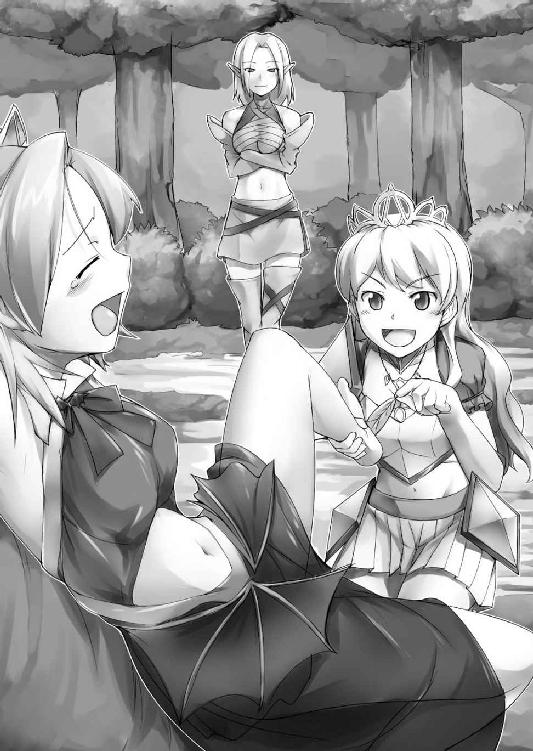
不満を漏らしながらも素直にエルフに従うシルヴィア。退く美姫と入れ替わるように、シェリーが一歩近づいてきた。
「それでは改めて。お前の素性を明かしなさい」
微笑みながら問いかけるエルフの目はしかし笑っていない。
「そ、それは......」
口にしかけて言いよどむ。先ほどは追い詰められてつい降参してしまったものの、魔族の天敵であるエルフに対し素性を明かすのはやはり躊躇われた。
「シルヴィア、足の裏よりもっと効果的な場所を教えてあげましょうか？」
口ごもる魔少女を見据えながら、シェリーがシルヴィアを手招く。
「くっ...言うわよ、言えばいいんでしょ!! ......あたしは──ヴァランディアの娘よ」
吐き捨てるように、黒衣の少女は自らの出自を明かす。それを耳にした妖精族の細い眉が一瞬跳ねた。
「鑑定結果──ブルー。名前でまさかとは思ったけど、ようやく真実を口にしたわね」
リリスとシェリー、対峙する紅と蒼の視線が火花を散らす。
しかしそこにただ一人、取り残された者がいた。
「ねえねえ、゛うぁらんでぃあって誰？ 下々の間では結構な有名人なのかしら？」
リリスの発した言葉の意味が理解できないシルヴィアはシェリーの袖をくいくい引っ張り、その長耳に耳打ちする。
エルフはその視線を魔少女に向けたまま、
「ヴァランディア......貴女が目指している、大魔王の名よ」
厳かな声でそう言い放った。
「魔王のっ!? って、じゃあじゃあそれって......リリスが、魔王の娘ってこと!?」
思わず手にした羽を落として、シルヴィアが驚嘆の声をあげた。
「そうよ......ごめんねシルヴィア、今まで黙っていて」
少し困ったような瞳で魔少女が詫びる。聖女は未だ事態を飲み込めぬ様子で、リリスとエルフをきょどきょど交互に見やりつつ二人のやりとりの続きを待った。
「三百年前レイゼント城の祠に魔王と共に封じられたというその嫡子、リリス姫。妖精族の言い伝えとも符合するわ......封印が解かれ、お前もまた地上へと戻ったというわけね」
エルフの言葉を魔少女は、無言によって肯定した。
「それでは次の質問。どうしてお前はシルヴィアに憑いていたの？」
モノクルを掛けなおしながら、シェリーは矢継ぎ早に二つ目の質問を投げかける。
「憑いてなんかいないわよ!! シルヴィアにはあたし、感謝してるんだから。理由はどうあれ、あの子が封印を解いてくれたおかげであたしはここにこうしていられるんだもの」
城を出て以来魔少女が初めて明かした胸のうちに、シルヴィアはちょっと驚いたように碧眼を丸くし、ポッと頬を朱に染めた。
「へえ、こりゃ意外......またブルーだわ。じゃあ質問の仕方を変えましょう。お前が聖女と旅をする目的を答えなさい」
エルフはじっくりと核心を探り出すように、質問を続ける。
「あたしがシルヴィアと旅をしている理由？ そんなの決まっているじゃない──この子の持つ聖剣の力を借りて、アイツを──ヴァランディアを殺したいからよ!!」
そう吠えた紅い瞳に殺気が宿る。美姫も初めて眼にする、魔王の娘に相応しい顔だ。あまりの迫力に気圧されて、傍にいたシルヴィアは思わず一歩たじろいでしまう。
「今度もブルー、か──いい感じね。でもどうして魔王を、仮にも父親を殺したいだなんて願うのかしら？ お前が新たな女帝として、魔界に君臨するため？」
「そんな馬鹿げたこと──言ったでしょ、あたしは自由になりたいの。ただそれだけよ」
吐き捨てるように言った魔少女の言葉に、シェリーがグラス越しの瞳を細めた。
「紫、か。嘘ではないけど真実そのものとも言いきれない。自由になりたい──ってちょっと抽象的よね？ 言いなさい、お前がヴァランディアを殺したいと願う真の目的を」
「それは─────アンタには関係ないことよ」
それまで観念したように口を割り続けていたリリスが、一転して再び黙秘した。
「あ〜らまただんまり？ よっぽどこの羽の味が恋しいみたいね」
ここまで核心に近づいて、そう易々と諦めるエルフではない。シェリーはバッとモノクルを外し、魔少女へ向けて足早に近づいてくる。
そうして途中でシルヴィアが落とした羽を拾い上げると、今度は一転してそれをチラチラと見せつけながらゆっくりと歩を進めてきた。
（まずい...アイツにやられたら、我慢できない......我慢できても──死んじゃうって！）
どうにかしてこの尋問を、拷問を切り抜けなくてはいけない。どうにかして──。
「ひゃっ!?」
死刑執行の時が迫る中、妙に能天気な悲鳴があがった。
「どうしたのシルヴィア？」
振り返ったシェリーが背後に目をやると、そこにはショルダーアーマーをパタパタ払う美姫の姿。なんだか随分焦っている。
「ううん...ちょっとお洋服に虫がついただけ......もうっ、森って虫が多くて嫌いっ」
「そう、ならいいけど。さあリリス──ってあら、なによその反抗的な顔は？」
再び顔を上げたエルフは魔少女を一瞥するや、怪訝な表情を浮かべた。
そこに今さっきまであったはずの苦悶の色はない。リリスは再び、あの勝気そうな笑顔でもってシェリーを迎え撃ったのだ。
そしてすぐさま大声で叫んだ。
「あら、シルヴィア──アンタ、背中にものすごく大きな毛虫がついてるわよ！」
魔少女の思惑通り、その一言はどんな呪文よりも威力があった。
「ひぇっ!? いやだ、どこどこぉっ!?」
美姫は瞬時にパニックに陥りなんとか自分の背中を確認しようとするも、動転した彼女は自分の尻尾を追い掛け回す子犬みたいにくるくると回転しながら、遠ざかる己の背中を延々と追い続ける。
「あら見えないの？ 黄色と黒のマダラ模様のが──ほぉら今剣の鞘に這い乗った！」
「いやああああっっ!!」
絶叫と共に、聖女は思わず背負った剣を放り投げてしまう。
「もう、毛虫くらいでいちいち騒がないの。見た目は悪いけど、彼らも森には大切な仲間なんだから──さあ、尋問を再開するわよををぉっ!?」
むにぃぃぃっ。冷淡なエルフの声が不意に三オクターブほど上がる。その背後には、今の今までパニックに陥っていたシルヴィアがひしっと抱きつき、脇下から通された掌がシェリーの胸をむんずと鷲掴みにしていた。
「ど、どうしたのシルヴィア......？」
碧眼を潤ませ頬を上気させる聖女の姿に面食らい、シェリーがそれまでの凛としていた格好を崩す。それでもどうにか平静を装い問いただすも、
「どうもしてないわぁ......わたくしはただ、アナタとイイコトしたいだけよぉ♥」
背後の聖女は甘ったるい口調でそう囁き、長耳目掛けてふぅっと熱い吐息を吹きかける。
「うひ゛あ゛あ゛あぁぁぁっ!?」
ぞくぞくぞくぅぅぅっ!!
突然の攻撃に、エルフの全身が電気に打たれたように震えた。
「やっぱりお耳が感じちゃうのね......それなら。たぁぁっぷり可愛がってア・ゲ・ル♥」
はむぅっ...ちゅぱっ、ちゅぱっ、ちゅううぅぅ〜っっ!!
相手の弱みを握った姫君は、先端から耳たぶにかけてじっくりと舐め、しゃぶり、噛み付く。レロレロとグミのような舌を伸ばし、耳の穴にまで熱い唾液を流し込む。
「ひんぅっ!? ひゃめっ、しょんなのぉぉ......耳弱いのっ、耳だけはらめぇぇ......!!」
発達した分敏感なのだろう、性感帯を執拗に責められたシェリーはそれまでの勇ましさもどこへやら、舌ったらずな牝鳴き声をあげつつ成熟した肢体をぷるぷると震わせる。
それでもどうにかして逃れようとするシェリーだが、いくらその身を震わせても、自分よりずっと小柄な少女を振りほどくことができない様子だ。
「無駄よ、このあたしだって敵わないバカ力なんだから」
吊るし上げられたリリスが、勝ち誇ったようにそう助言した。
「魔族、お前の仕業ね...んぅっ......なにしたのよいったいっ......あひっ、や、やめさっ早くやめさせてよこれぇっ!!」
左右の乳房をふにふにと揉まれ、時折はしたない声を漏らしながら地上のエルフが喚きたててくる。
──そう、すべては計算通りの出来事だった。もちろん毛虫なんか最初からいない。シルヴィアに剣を捨てさせるため、淫魔の暗示を再び呼び起こすための作戦であった。
一度は自ら窮地に立たされたシルヴィアの発情体質、今回はそれを逆に利用し窮地を脱出してみせたのだ──もっとも、発情したシルヴィアが自分ではなく、あのエルフを襲ってくれるかどうかはまったくの賭けだったのだが。
「一応言っとくけど、シルヴィアがそうなっちゃったのはあたしの仕業じゃないわよ。だけど、やめさせる方法なら知ってるわ。どう、教えてあげましょうか？」
「もったいぶらずに早く教えなさ...あふぅっ、ち、乳首抓っちゃ駄目ェッ!!」
聖女の指技に身悶えながら、シェリーはすがるような瞳でこちらを見つめ続ける。
「条件があるわ。一つはあたしを解放すること。もう一つはアンタの長様とやらに、魔王の居場所を占ってもらうことよ」
今や立場は完全に逆転していた。宙吊りにされながらも黒衣の少女は地上の痴態を悠々と見下ろし提案を持ちかける。
「だっ、誰が魔族みたいな汚らわしいモノと取引なんて──」
「いやならいいけど。そのまま禁断の世界に脚を踏み入れるのも一興かもしれないし」
「え......ひゃめ、下はだめぇぇっ...パ、パンツの中指入れちゃ...きゃひいぃぃぃんっ!?」
シルヴィアに覆いかぶさられる形で蹲るエルフ。その股の間からは早くも、くちゃくちゃという水音までもが響き始めていた。誰の耳にも明らかな発情の印を暴かれて、さしもの強気の妖精族も顔を真っ赤にしてうつむいた。
「やだぁ、もう中の方までぐちょぐちょ......ここのお豆もビンビンに勃起させちゃってぇ......せっかくだから、おっぱいとどっちがコリコリしてるか比べちゃおうかしらっ♥」
そう囁くシルヴィアの顔は淫婦そのもののふしだらさ。碧眼は潤みきり頬は薔薇色に上気して、鼻息荒く繰り返される呼吸さえ悩ましげな吐息としか聞こえない。
発情聖女はクリトリスをぐりぐりと抓りあげながら、同時に紙縒りを作るみたいにくにくにと勃起乳首を扱く。その間長いエルフ耳はハーモニカみたいに咥えられ、はむはむと甘噛みを繰り返されていた。
「ひあっ...たっ耐えてみせ...たえったえひぇっ...んひっ、ひうぅぅぅ.........!!」
どうにか耐え忍ぼうとするシェリーだが、声の蕩け具合からも陥落は時間の問題だと思われた。そしてキュムッ、と美姫の細指が包皮から生身のクリトリスを剥きあげた時。
「あひぃぃッ!? やっぱだめぇっ、降参しますぅっ!! デウス・エクス・マキナ!!」
妖精族の娘はガクガクと腰をわななかせながら、ようやく意見を翻す。甲高い悲鳴と共にシェリーが呪文を詠唱すると、それまでリリスを苛んでいた脱力感が失せた。
「フフン、正しい判断だわ──」
ザンッ！
魔少女はすぐさま両手の爪を伸ばし、手首のロープを寸断する。
「は、早くっ、この子を元に戻す方法を教えてぇっ!!」
中空に浮くリリスを見上げるエルフはもう涙目だ。頬は上気し肌は汗ばみ、背後から取り付くシルヴィアに耳を舐めしゃぶられるたび、ひくひくとその肢体を震わせている。
「鍵は──聖剣よ。聖剣に触らせれば元に戻るわ」
すがるような視線を送るエルフに、ようやくリリスは種を明かす。
「じゃ、じゃあ早く持ってきて──」
シェリーの位置から聖剣まではほんの十数歩。それでもシルヴィアに抱きすくめられ腰砕けにされた状態では、とても取りに行けそうにない。
だが、そんなエルフの懇願は、魔少女により一笑に付された。
「それは無理よ。あたしがアレに触れないのはご存知のはずでしょ？ それに。やめさせる方法を教えるとは言ったけど、アンタを助けるとはあたし一言も言ってないわよ？」
「そ、そんなぁぁ......」
なおも追いすがろうとするシェリーだが、その下半身に取り付いたシルヴィアがそれを許さない。エルフのスカートを捲り上げた聖女は手早く下穿きを引っ剥がし、
「うふふ、エルフってお尻の孔まで綺麗なんだぁ♥ 指、何本はいるのかしらぁ？」
むにぃっ、と尻房を割り開いたシルヴィアは、現れた桃孔を前に生唾を飲み込む。
「ひっ!? 待って、二千年生きてきて私、そこだけはまだ誰にも許したことない──」
「それじゃ、あたし近くの木陰で一休みしてるから終わったら呼んで──そうそうシェリー、そっちの孔って一度やるとヤミツキになるっていうからせいぜいお気をつけて♪」
ニヤァァッ。去り際、リリスが魔族に相応しい邪悪極まる笑顔を見せた。
「この、ひとでなしぃぃぃっ!!」
「当たり前でしょ魔族だもの」
「思ったより硬いわねぇ...そだっ、この羽でこしょこしょしたらどうかしらッ♥」
「ひゃめぇっ!? それだけはだめな......あひぇええええぇぇぇ───っっっ♥」
エルフのえげつない喘ぎを背中に聞きながら、ツインテールの魔少女は森へと消える。
──結局。やっとのことで聖剣の下に辿り着きシルヴィアを正気に戻すまでの間に、哀れシェリーは身体中の穴という穴を開発されつくすこととなるのであった。
第四章 妖精族の里へ -Dances with Elves-
「美味しいじゃない!!」
スープを一さじ口に運んだシルヴィアは、上機嫌でそうのたまった。
「でしょでしょ？ こう見えても私、料理は大得意なんですからね」
得意げにエヘンと胸を張るのは、半日前リリスを捕え拷問にかけるも、発情したシルヴィアに身体中の穴という穴を開発されてしまった暴走エルフのシェリーであった。
シルヴィアにリリス、そしてシェリーを加えた三人娘は妖精族の隠れ里へと向かう道の途中だ。言うまでもなく、妖精族の長に魔王の居場所を占ってもらうためである。
あの状況での約束、リリスはてっきり反故にされるかと思っていたのだが。魔王復活は妖精族にとっても一大事らしく、シェリーは「聖女のため」と断りを入れながらもそれを了承したのである。
もっとも反故にされたら反故にされたで、またシルヴィアをけしかけるつもりだったが。
「あなたいい腕してるわ！ 魔王を討伐した暁には、ウチで雇い上げてもよくってよ？」
ご機嫌なシルヴィアの横で、反対にリリスは浮かない顔で佇んでいる。
「どうしたのリリス、あなたさっきから全然口をつけていないじゃない」
「いや...あたしはその......食欲が、ね......」
そう言いながらぱたぱたと手を振る魔少女であったが、タイミング悪くきゅるるっ......と腹の虫が鳴いた。
「あら、遠慮してるの？ それとも警戒してるのかしら。大丈夫よ、アナタだけならともかくシルヴィアも口にするものに、毒なんて入れないから」
その言動から察するに、シェリーはまだリリスを完全に信用しているわけではないらしい。しかしそれはリリスも同じであった。
もっとも、お互いあれだけの目に遭わされてすぐに打ち解けろという方が無理な話ではあるのだが。
「いや、そーゆーのじゃなく......あたしはただ、あの鍋から覗く水掻き付きの可愛いあんよが少しだけ気になってるだけで.........そのスープ、具材はなんなのかなーって......」
魔少女が指差す先には、緑色をした四本指の脚が、未だピクピクと痙攣している。
「ん...ああ、鳥よ鳥。この辺りで穫れる珍しいヤツ──まったく何の問題もないわ」
そう言いながら、しかしシェリーが即座に鍋をかき混ぜ謎の脚をスープ深くに沈めるのをリリスは見逃さなかった。
嘘だ、ぜったい嘘だ。
「やっぱいらない──」
ツインテールを地面に垂らし、げっそりした顔でうなだれる。
「食べたくないなら別にいいけど......後で泣きごと言っても知らないわよ？」
あんな得体の知れないモノ食べるくらいなら、木の根っこでも齧ってた方がマシだ。そして木の根っこを齧るくらいなら、一食抜いた方がなおマシだった。
「しかしまだなの、アンタたちエルフの隠れ里っていうのは？ まさかとは思うけど、あたしたちを騙してヘンなとこに誘い込もうとしてやいないでしょうね？」
未だにエルフを警戒する魔少女が怪訝そうに問いかける。
「あら心外ね、ちゃんと向かってるわよ。もう小一時間もすれば聖女様プラス使い魔一匹を、我らが妖精族の国にご招待〜♪ ってね」
「使い魔ってねぇ......でも大丈夫なの？ 妖精族って用心深くて有名じゃない。新顔のあたしたちがひょっこり顔を出して、またあらぬ疑いをかけられるのはごめんよ？」
「そんなの杞憂よ。私たち妖精族は、地上で一番聡明な種族なんですから」
おたま片手に再び胸を張るシェリー。
「その聡明な一族の方に、あたし拷問にかけられましたけど？」
すかさず物言いをつけるリリスであったが、
「さあお腹もいっぱいになったことだし目的地はすぐそこよっ、そぉれレッツゴー！」
妖精族の女はその言葉を完全に無視し、焚き火を消して立ち上がる。
「れっごー♪」
能天気なシルヴィアも拳を掲げ、あっさりその後を追従する。
「ホントに信用して大丈夫かしら──」
キャッキャウフフと楽しげな二人の後を追いながら、未だ疑念を払拭できずにいる黒衣の少女であった。
──だがそんなリリスの懸念を覆し、里に辿り着いた二人を待っていたのは。
「聖女様だ！」
「聖女様がいらっしゃったわ!!」
「あなた聖女様のお付きの方？ 羨ましいわぁっ！」
歓迎に次ぐ歓迎、謝肉祭と聖誕祭がいっぺんに訪れたかのようなお祭り騒ぎ、まさに祝福の嵐であった。
こちらに気づいたエルフらはこぞって小走りに近づいてきてシルヴィアに傅き、あろうことかリリスにまで握手を求めてくる。
これにはリリスも面食らった。聖女とはいえ人間であるシルヴィアに自ら傅くなんて想定外、一目で天敵の魔族とわかる自分に好意を見せるだなんて、もう理解不能である。
「ねえシェリー、これっていったい......ってあれ？ シェリー、いなくない？」
不測の事態に仲間のエルフに理由を問おうとしたものの、いつの間にやらシェリーの姿は影も形もなくなっていた。
「そういえばわたくしも、さっきから見てない気がするわ。あなたたち、知らない？」
二人は周囲を見渡すが、やはりあの暴走エルフの姿は見当たらない。そもそもエルフはみんな似たような顔立ちのため、彼女らに囲まれた今、そこから見つけ出すのは難しい。
「お二人をお迎えに行った子？ でしたらきっと長様にでもご報告に行ったんですわ、無事に聖女様ご一行をお連れしたと」
全然無事じゃないんですけど......リリスはよっぽどそう口を挟もうと思ったが、
「そうだわ、長様にも早く聖女様にお会いしていただかなくちゃ」
「歓迎パーティーにはもちろんご出席くださるのよね!? ああ今日は忙しくなるわよ」
エルフたちはシルヴィアを中心にして口々にはしゃぎまわり、言葉を発する余地もない。
「んふふ......お城を出てから苦節十日、ようやくマトモな待遇を受けられそうだわ」
聖女様聖女様ともてはやされて、シルヴィアはすっかり気をよくしていた。元々大陸随一の美姫として、蝶よ花よと育てられた彼女にしてみれば、ようやく当然の扱いに戻ったというところなのだろうが。
しかし隣の魔少女は、未だに浮かない表情だ。
「ちょっとシルヴィア......これって絶対ヘンよ。あの人間嫌いの妖精族がアンタを歓待する？ ましてやあたしは魔族、アイツらとは千年以上争いを続けている宿敵同士よ？」
他のエルフに聞こえぬよう、紅眼少女がそっと耳打ちするが、
「魔王が復活したんですもの、みんな一丸となって闘う時なのよ。いがみ合っていた異種族同士が大いなる悪を前に手を取りあう──うん、燃えるシチュエーションだわ!!」
聖女はグッと拳を握り、あらぬ方向を見上げながら瞳の中にお星様を瞬かせる。
「どこ見てんのよアンタ......ともかく。シルヴィアは妖精族ってヤツを知らないから、そんな甘っちょろいこと言えるのよ。アイツらときたらどこまでも高慢で自分勝手な......」
なおも食い下がろうとする魔少女であったが、姫君は聞く耳を持たない。
「みんないいひとたちじゃない、なにをそんなに......ははぁん、さては。リリスってば、わたくしのお付き扱いを受けたからってそんなに拗ねちゃダメよ？」
勝手に決めつけ、チッチッチッと指振るシルヴィア。
「拗ねるって、アンタじゃあるまいし......いい？ あたしが言いたいのはねぇ──」
「どうなさいました聖女様がた？ よろしければこれから、長様の下までご案内差し上げたいと存じますけれども──？」
なおも懸念を表明しようとするリリスであったが、事情を知らないエルフに割って入られ中断を余儀なくされる。
「わたくしたちもちょうど、それをお願いしようとしていたところだったのよ！」
シルヴィアは我が意を得たりとばかりにひょいひょいと、後を着いて行ってしまう。
「まっ待ちなさいよぉっ.........おかしいわよ、絶対」
またも独り取り残された魔少女は、そう呟きながらも仕方なしに美姫を囲む一団の後を追うのであった。
※
「──私がこの里の長、リヴィラディアです。お二人とも、よくいらっしゃいましたね」
大木をくり抜かれて造られたエルフの宮殿、その最奥にある謁見の間へと通されたシルヴィアたちをエルフの盟主が出迎えた。
もっとも上座と下座の間には薄いヴェールがかけられており、長の姿はシルエットしか見えない。とはいえその言葉や声色からは、疑いようもない歓待の意が見て取れた。
「お二人とも長旅でさぞお疲れでしょうから、今日はゆっくりと休んでいってください」
「残念だけど長居する気はないのよね。あたしたちの目的は一つ、ずばり──あなたの精霊力で大魔王の居場所を占ってもらうこと。それが済んだらおいとまするわ」
リヴィラディアの歓待を、しかし魔少女はぶっきらぼうに突っぱねる。
すぐさまそのわき腹を、隣のシルヴィアが肘でつついた。
「ちょっとぉっ、そんな言い方失礼よぉ。ああ言ってくれているのだし、一晩ぐらい泊めてもらいましょうよぉ？ みんな親切だし、せっかくエルフの国に来たんだし──」
ここでのチヤホヤがよほどお気に召したらしい聖女様が、口を尖らせそう耳打つも、
「なぁに観光気分に浸ってるのよ。時間ないのはアンタの方でしょ？ いいのかな〜、のんびりしてるその間に、大好きなお父様が枯れちゃっても」
そう切り返されて、ムスッとしながらも大人しくなる。
「そちらの方が仰るのもごもっとも、魔王は生きとし生けるものすべての天敵ですからね。ですけど──ごめんなさい。私の占術には少々準備と時間がかかるのです」
「時間ねえ.........はっ、まさか」
エルフの言葉を反芻しかけた魔少女の顔がサッと青ざめた。妖精族はその長寿ゆえ、時間感覚のおかしいことがままあるのを思い出したのだ。
「そ、それってまさか......一年とか、十年とか言うんじゃないでしょうねぇ......？」
恐る恐る魔少女が聞き返す。それを受けて、ヴェールの向こうの長が小さく笑った。
「うふふ、そんなにいただきませんよ。そうね──今から始めれば、明日の陽が昇る頃には。いずれにせよ、今日はこちらに滞在されて英気を養われるのがよろしいでしょう」
「すてき、ぜひそうさせていただくわ！ リリスも異論はないわよね？」
シルヴィアは二つ返事でＯＫし、隣の悪魔っ娘に同意を促す。
「まあ、そういうことなら......でも占いが終わったら、すぐ出て行きますからね」
未だ釈然としないながらも、魔少女は仕方なしにそう答えた。
※
歓迎パーティーは随分と華やかなものだった。広々としたテーブルに並べられた料理の数々も、城の晩餐会で出されるものに引けをとらない。
会場に集まったエルフは延べ百名弱、その全員が女性のエルフだ。
「あらリリス、ここでも食べないつもり？」
相変わらず料理にいっさい手をつけない魔少女を目にして、不思議そうに美姫が問う。
「心を許していない相手から施しは受けない主義なの。武士は食わねど高楊枝、ってね」
そう言ってない胸を張る魔少女であったが、武士ならぬ彼女のお腹はきゅううっと抗議の声をあげる。それでもリリスはテーブルの上にあるものは水の一滴さえ口にしなかった。
彼女の強情は、無論エルフ嫌いばかりが理由ではなかった。もっと現実的な理由もある。
（この料理に、毒が盛られていないとも限らないしね）
親切すぎるのが逆に怪しい。未だ行方不明のシェリー同様、自分を聖女に憑いている悪魔と思われていないとは言いきれないのだ。
もっとも自分はともかくシルヴィアの方は、魔王への切り札として妖精族にとっても重要な存在。即死系の毒を仕込みはしないだろうが──とりあえず用心に越したことはない。
「ふ〜ん......食べないならそれもわたくしがいただくわね♪」
ひょいっ。目の前に置かれていた鶏のモモ肉が、美姫によって鮮やかに奪い去られる。
「べ、別にいいわよ、どうせ食べないんだもの......」
そう言いつつも、芳しいお肉の匂いにごくりと生唾を飲み込むリリス。
「無理しないでいただけばいいのに──あれも、それも。どれもすんごく美味しいわよ」
声を弾ませ言いながら、シルヴィアは辺りの大皿からひょいぱくひょいぱくと次々に料理を摘んでいる。細身のくせに意外と大食いだ。この大食が爆乳の秘密なのだろーか。
（うう、確かにお腹はすいてるけれど、さすがにここはガマンよね──ああ、でもさっきからあれだけがっついてるシルヴィアがなんともないんだし......）
追加で運ばれてきた、焼きたてのパンから立ち上る香ばしい匂いに心が揺れる。
きゅるるるるぅぅ......今日何度目かわからないお腹の虫が、主を攻め立てるように激しく鳴いた──もう、限界だ。
「まあ.........パーティーに出席しといてまったく料理に手をつけないというのも、淑女マナーに反するわよね、うん」
わざとらしく大声でそう断りを入れてから、はやる気持ちを抑え、焼きたてのクロワッサンへと手を伸ばす。
──そして一時間後。そこにはテーブルに突っ伏してピクピクと痙攣を繰り返すリリスの姿があった。
※
「無様ね」
背中に冷水を浴びせられたような、冷たい声が背後からかけられる。しかし振り向くことはできない。頭のてっぺんから足の爪先まで、神経が細切れにされたみたいにまるで言うことを聞いてくれないのだ。
「うう......図ったわね!!」
叫んでから、反響する自分の大声にリリス自身がびっくりしてしまう。口は利けるのだ。
「いったい全体、どういうつもりよ......てゆーかアンタ誰!?」
背後にいる声の主に対し、敵意剥き出しの声で問い詰める。
「こういうつもりよ、リリス姫」
ぐいっ。ツインテールを握られ、後ろへ向けて引っ張られる。無理やり顔を上げさせられた魔少女の紅い瞳が捉えたものは。
「おまえっ...タバルサッ!!」
彼女の髪を掴んでいたのは、山羊の角に蛇の瞳を持つあの女淫魔であった。城でシルヴィアを誑かしたあのときのまま......唯一違っていたのは、その顔にくっきりとシルヴィアによる聖剣の太刀傷が刻まれていたことだ。
「ここは妖精族の国、どうやって入り込んだってのよ......アンタたちなにやってんの、コイツ魔族よ!? さっさととっ捕まえなさいよぉっ!?」
どうにか動かせる瞳でもって周囲を見渡し吠え立てる。しかしシルヴィアは自分同様毒にやられたらしく、テーブルに突っ伏したまま。テーブルについている百人近いエルフたちはといえば、宿敵である魔族が侵入しているというのに平然としている。
「ンフッ、何か勘違いしてませんこと？ アタシはリリス姫がいらっしゃるずぅーっと前からココにいたんですのよォ──妖精族の長、リヴィラディアとしてね」
その言葉に息を呑み、リリスは改めてエルフたちに視線を向ける。特徴的な切れ長の瞳は、そのどれもがどこか焦点が合っていない。
そして思い出す、この女淫魔の十八番は──。
「暗示にかけたわね、ここにいるエルフたちを」
「ここにいるだけじゃありませんわ。里のエルフたちは今や全員アタシの下僕。唯一暗示の利かなかった本物のリヴィラディアも──ンフフッ、殺しちゃいましたし」
蛇の瞳を細めてタバルサがうっすらと笑う。相手の本気を感じ、魔少女は喉を鳴らした。
「......しっかしよくもまあ、こんな大掛かりな罠を仕掛けたもんだわ。アイツ、よっぽど聖女が怖いと見えるわね」
魔王を笑うツインテールの少女が発した言葉に、タバルサはゆっくりかぶりを振る。
「ところが意外、大魔王様は未だこの現世に肉体と精神とを馴染ませてらっしゃる最中で何のご命令もいただいていないの。だからこの計画はアタシ一人で立てたもの。まあ、主人の不安をあらかじめ取り除いておくのも、できた妻の務めですものね」
「できた......妻ァ？」
わけのわからないことを抜かす女淫魔に、リリスは思わず声を裏返らせる。その様子に女淫魔は底冷えしそうなを笑顔を浮かべた。しかしその眼は笑っていない。そしてみるみる瞳孔が、蛇のような縦長にギュッと収縮してゆく。
「ンふふ......彼岸と此岸の狭間に浮かんだこの場所は、大魔王様の眼も届かない異界。ですから思いきって本音を申し上げますけどリリス姫──お前、邪魔だわ」
ゴスンッ!!
鈍い音が砕けた。淫魔が手にした魔少女の額を、テーブルに思いきり叩きつけたのだ。
「......っく」
紅い瞳を見上げ睨みつけたタバルサは、口端がこめかみに届きそうなほどの魔笑でもってこちらを見下している。対照的にその蛇眼は、深い殺意に満ち満ちていた。
「アタシが尽力し、名誉の負傷まで負ってようやくお目覚めになられたというのに。大魔王様ってばお傍に付いているアタシに眼もくれず、口を開けば決まってリリス、リリスって......いくら一人娘だからといって、これじゃアタシの立場がないじゃない？」
「アハハッ、その顔の傷じゃもう永久に見向きもされな...がぁっ!?」
ゴンッ！ ゴンッ!! ガスゥッ!!
魔少女の軽口を遮るように、淫魔は何度も何度もその顔面を打ち続けた。しばし鈍い音とリリスの小さな呻きだけがＢＧＭのように広間中に反響した。
「.........それで？ 相手にされない腹いせに、娘のあたしに八つ当たりってワケ？」
醒めきった眼で問いかけるリリス。その顔面は、度重なる強打の前にも血の一滴さえ流していない。問われた淫魔は、またも首を横に振った。
「アタシ、大魔王様の心を手に入れる術を思いついたの......聖女と、聖剣よ。あの二つを持ち帰れば、今度こそ大魔王様の寵愛を受けることができるはず。だってお寂しいはずだもの......可愛い一人娘のリリス姫を、亡くされたばかりなのですからねェ」
芝居がかった淫魔の独白を、魔少女は醒めきった半眼で聞いていた。
「アンタ......そんなアホな理由で、あたしの首まで狙ってるわけ？」
「首を狙う？ あっははは、ご冗談！ 仮にも大魔王様の血を継ぐリリス姫様を殺す力なんて、しがない淫魔のアタシにはないわ。殺しはしない、アナタは終わりのない淫獄を彷徨い続けるの......アタシのやりかた、見せてあげるわ」
低く笑いながら、タバルサが片手を挙げる。途端にそれまでテーブルで微動だにしなかったエルフたちが一斉に起立した。
「そういえば聖女にかけた呪いはどうだった？ 一度ぐらいは楽しいことになったでしょ......このエルフたちにも同じような暗示をかけてあるから、存分に楽しむといいわよ」
そう耳打ちした女淫魔は、獲物の行く末をあざ笑うようにしばしニヤニヤしていたが、顔を上げるや一転しての大声で、周囲のエルフを呼び込みにかかる。
「ほぉらみんな、本日のメインディッシュよ！ 整った顔立ち、挑むような瞳に艶やかなこの肌。肉付きは......あんまよくないけど......お味は絶品よ。さあ──召し上がれ♥」
その言葉が合図となって、エルフたちはこぞってリリスを取り囲む。銀に近いブロンドとサファイア色の瞳、そして絹のように白い肌。彼女らはみな美しい娘たちだった。
しかし淫魔に操られた今、その瞳は虚ろで、まるで精巧な蝋人形が襲ってくるような不気味さがある。普段は美点であるはずの細長い体躯も、威圧感となって恐怖を煽った。
「んふっ、お嬢ちゃんかわいーわねぇっ♥ ねぇねぇ、お姉さんとチューしましょっ」
すぐさま唇が塞がれる。そしてさも当たり前であるがごとく、舌を捻じ込まれた。
「ふぁむぅっ!? ひゃめろっ、あたしはこんな趣味な...んぶぅっ!?」
痺れ毒にやられているため首を振って振りほどくことさえできない。口内を甘い女舌に舐られているうちにも四方から腕が伸び、四肢と胴体へ素早く取り付いた。
「まずはテーブルに上げましょ。なんたって本日のメインディッシュなんですもの」
そう言ったエルフがテーブル上の皿を乱暴に払い落とす。
ああ、お料理がもったいない......などと思うまもなく、今まで大皿のあったところにリリスはその小ぶりなお尻を乗っけられ、仰向けに横たえさせられた。
「さあて、まずはパンツを脱ぎ脱ぎしましょーねぇ♥」
無抵抗な下半身を持ち上げられ、下穿きが膝までずり下げられる。リリスの容姿が幼げだからか、エルフたちはこぞってお姉さん口調だ。
「ば、ばかにしてぇっ、これでもあたし三百年以上......ひうぅっ!?」
怒りの言葉も黒衣越しに乳首を摘まれ悲鳴と化した。身体は全然言うことを聞かないくせに、与えられる刺激だけはしっかりと伝えてくる。
「はぁい、お股おっきく広げちゃいますよぉ......あらやだこの子、生えてないのォ？」
「あっははは、ほぉんとだ♥ でもこんな赤ちゃんま○このくせして、いっちょまえに濡らしてるみたいじゃない」
暗示により理性のたがを外されたエルフたちはリリスの秘所を覗き見るや口々にはやし立てる。言うまでもなく、これほど多くの相手に無毛の恥部を観賞されるのは初めてのことだ。恥辱で頭に血が上り、色白な頬も真っ赤に染まる。
「うう...うるさいっ、うるさいうるさいうるさぁぁいっっ!!」
逃げることも抗うことも、耳を塞ぐことさえできない。大声で喚き散らしても自らの恥辱を肯定するばかり、屈辱にまみれる魔少女に、更なるエルフの魔手が迫る。
「おっぱいのほうだってほぉら、こんなに硬くしちゃって」
エルフの細い指がくりくりと乳首をくじる。
「くぅっ、勝手に触るなぁっ！」
払いのけたくても当然腕は動かない。すぐ目の前にあるのに、まるで他人のもののようにピクリともしなかった。
なのに指腹で圧迫されると刺激に乳首はビクビク疼き、恥ずかしいくらいあからさまに勃起を始めてしまうのだった。
「そうだ、アレ、持ってきましょうよぉ」
「えー、アレェ？ あなたってば、あいかわらず鬼畜ねー♥」
「んふっ、でも面白そう......わたし持ってくるわ！」
エルフの一人の提案に、妖精族の娘がこぞって怪しい笑みを浮かべ、そのうちの一人が踊るようにして持ち場を離れた。
「な、なによ...アレって......ねえ、もったいぶらずに教えなさいよ......？」
周囲の反応に戦々恐々としながら聞きまわるリリスだが、皆ニヤつくだけで答えない。そうしている間にも消えたエルフは舞い戻ってきた......その腕に、西瓜ぐらいの大きさの古めかしい壷を抱えて。
「ふふふ、覚悟なさい......コレ、ホントに凄いんだから」
言いながら、エルフは壷の中に手を差し入れた。そして中からドロリとした水飴みたいなものを掬い出す。蘭を煮詰めたような、甘い匂いが鼻腔を掠めた。
とろおぉぉぉ......。
琥珀色の液体を絡ませた妖精族の娘は、もったいをつけるようにゆっくりと、それをリリスの胸元へと垂らす。
「ひゃっつめた...えっ、熱ぅっ!?」
触れた瞬間ひやりとしたのに、すぐさま皮膚がチリチリ焦げる。未知の感覚に戸惑う紅眼を覗き込み、彼女を囲む娘の一人が口を開いた。
「凄く感じちゃうでしょ？ 私たち妖精族に伝わる香油よ......性感用のね」
「コレを塗られたら最後、全身おま○この超ビンカン娘に大変身なんだから♥」
クスクスと笑いながら娘たちはこぞって壷へと手を差し入れ、粘液を掬い取っては魔少女の四肢へとそれを塗りつけてゆく。
ぬりゅっにゅりゅりゅりゅぅぅぅ......。
「フンッ、誰がこんなもんに感じてなんか......ひゃはぁぁぁ!? こらっ、やめなさいよ、こんなことしたってねぇっ......ひぅんっ、そ、そこっ......う...わ、あ.........くぅっ」
気丈に振る舞おうとしたものの、一斉に身体中を這いずり始めた白い指に、一気に声は艶めいた。恥ずかしい声を抑えるように、濡れた唇を閉ざしギュッと奥歯を噛み締める。
（ほっ、ほんとにこれぇっ...身体中が...凄く敏感になるっ......こんなのってぇぇっ!?）
エルフの指に擦られるたび、意志とは無関係に頬が弛緩し淫らな微笑を浮かべてしまう。
シェリーの用いたキメラの羽さえ今となっては生ぬるい。薄皮を剥がれるとか、神経を研ぎ澄まされるとか。もはやそんな次元ではないのだ。
まさにエルフの一人が囁いた通りだ。香油の塗られた皮膚が、そのまま性器に造り替えられてゆく。触れられたそばから、皮膚の感覚が粘膜質のそれへと書き換えられてゆく。
「ふくぅっ......んっ...ふぁあっ、あっあっはぁぁ......」
硬く噛み締めていた奥歯から力が抜け、再び唇から甘い吐息が漏れだした。内股をなぞられるだけで膣口がぐちゃりと音を立てて綻び、指先を舐められれば淫核をしゃぶられたような喜悦が突き抜けて子宮を痺れさせてゆく。
（きっ...きもちいいぃぃっ...きもち、よすぎ......ずるいわよっこんなのぉぉぉっ!!）
こんなことされて感じたくなんてないのに。妖精族の執拗な肉按摩を施されると、四肢の指先から火に炙られた飴みたいに甘く柔らかく蕩かされてしまう。
「アハハッ、何百年も生きている割には、ほんと子供みたいなおっぱいねぇ。ほぉら、アタシがマッサージしたげるから、頑張って大きく育ちなさいよねぇっ」
むにゅるっ、にゅむっ、ぬりゅむにぃぃっ。
「はぅっ...お、大きなお世話だっての......勝手に...触んないで...はぅ...んっくぅぅ......」
黒衣の胸元を曝け出され、幼乳を力いっぱい圧搾される。オイルのおかげで握り潰される前ににゅるんと掌から滑り抜けるものの、そのたび勃起乳首を激しく弾かれ、心臓が止まりそうなほどの快感が迸った。
乳悦に打ち震える魔少女の艶姿に、他のエルフたちも責め手を強める。
「可愛い声出しちゃって......ココなんかはどうかしら」
ぬるるるるるるぅぅぅぅっ。
「うひやあああぁぁっっっ!? だめっシッポはホントだめ......あっ、うそ！ シッポ別にだめじゃないっ、全然だめじゃにゃひいっぃぃぃぃぃんっっっ♥」
シルヴィアに襲われた時と同じ轍を踏みかけ、どうにか取り繕おうとするリリスであったが既に後の祭り。弱点を握られた魔少女は、またも尻尾を重点的に責め立てられる。
「ひゃめ...あひっひんんぅっ、んあぁっ...ふひゃあぁぁぁ......!!」
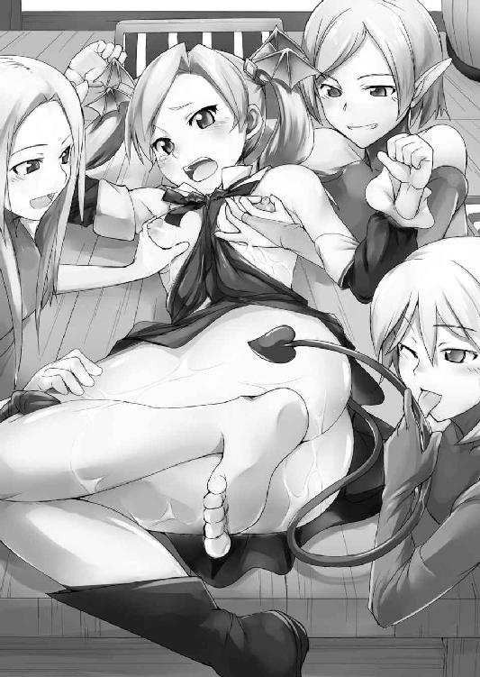
にゅるりにゅるりと根元を扱かれつつ裏筋をツツツッと舌先で舐め上げられると紅い瞳が一段と潤みだす。やじり形の先端部分をあ〜んっ、と一口で咥えられ、はむはむと甘噛みされながらちゅうちゅうと吸い付かれれば紅潮した頬がぴくぴくと痙攣を繰り返し、濡れた唇はひっきりなしに牝の甲高い悲鳴を奏で続けた。
（おっお腹に響くぅぅっ......いやぁっ、お尻までっ......疼き始めてるぅぅ......!!）
尻尾を苛められるたび、尾てい骨に鈍い疼きが広がって小ぶりなヒップがぷるぷるっと震える。雪色だった桃肌はいちご水を染み込ませたように淡いピンクに色づいて、甘酸っぱい果汁のような汗の玉を艶やかな肌にいくつもいくつも転がせた。
「うふふっ......シッポをシコシコするたび、オシリの孔キュッキュッて窄ませちゃってかーわいいっ♥」
つぷっ。
リリスの股間を覗き込んでいた妖精族の娘が、躊躇うことなく排泄孔へと指を捻じ込む。
「かはっ!? はひぃいいぃっ...ひやぁっはいっ入るなっお尻はいってくるなぁぁっ!!」
途端に桃色の閃光が直腸から喉元までを一閃し、リリスは一瞬呼吸が止まる。
ぬぷぬぷぬぷっ......魔少女の反応にもかかわらず、香油を纏った指先は驚くほどあっさりとその根元までが黒衣の少女の直腸へと飲み込まれていった。
「あらぁっ!? この娘、後ろ初めてじゃないみたいよ!?」
指を捻じ込んだエルフが意外そうに、しかし同じくらい嬉しそうに声をあげた。
「ほんとぉっ!? こーんなにかわゆいアナルのくせして、経験済みってワケ!?」
「じゃあ当然前も開通済みかぁ......ちぇっ、せっかくアタシがこの子の初めて、いただいちゃおうと思ってたのにぃっ」
くちゅっ。エルフの一人が舌打ちをしつつ、魔少女の股座を覆うように掌をあてがった。
「まあいいわ、そんなオマセさんなら......いきなりこれも大丈夫よねッ♪」
ぐちゅぬぶぷうぅぅっっ!!
「きゃひいぃぃんっっ!?」
人差し指と中指、それに薬指を加えた三指が一気に膣道を貫いた。エルフの指は人間と比べて細いので圧迫感はそれほどでもないが、代わりに常人離れした長さでもって爪先が子宮手前まで潜り込み、リリスは堪らず馬のようにいなないた。
「あらぁっ、膣内はもうトロトロじゃない......フフッ、イヤイヤ言っておきながら、ホントはとっても感じちゃってたのね？」
「ちがっ、感じてなんかないっあたひぃぃぃっ、ひゃめっ、ゆっゆびはやすぎぃぃ!!」
にゅぷっぬぶっじゅぽっじゅぽっ!!
魔少女の反論を説き伏せるように、エルフは突き込んだ指を激しく出し入れし始める。膣粘膜を擦りたてられると甘い快感が下腹部で溜まり、指先が子宮口を打つたび腰骨がじんわりと痺れを帯びた。刺激を受けた肉壷内部ではじくじくと蜜が滲み出し、エルフの指に掻き出されトロトロ零れて会陰を伝う。
「それじゃコッチも本気で苛めちゃおうかしら」
ぐにっ、ぬぽっ、ぬぐぷぅぅ......!!
桃孔をほじっていた指も抜き差しを再開させた。人差し指と中指でもって螺旋を描くようにして直腸を掘り返されると、途端に腹中をジンジンと鈍い疼きの波紋が広がる。
「ふっ...くぅぅんっ......おっしりぃぃっ...うあ...や...めなさい......よぉぉ......っっ!!」
前後の穴をいいように弄ばれて。黒衣の魔少女はひくつきながら抗うも、その頬は朱に染まり鋭かった紅眼も潤みきって欲情の色を隠しきれない。
「あらあら、まぁだそんな強がり言っちゃうワケ？」
「ほぉんと。これはテッテーテキに、身の程を思い知らせてあげなくちゃだわねっ♪」
それでも抵抗の姿勢を崩そうとしない魔少女の挑むような紅眼に、淫堕の妖精族どもは加虐心を擽られたようだ。
「ねえ、このシッポすんごく感じちゃうんでしょ？ ンフフ、だったらさぁ......」
レロレロとリリスの尻尾を舐っていたエルフがリリスの陰部を嬲る仲間へと何事か耳打ちする。それを受けたエルフは、それまで膣道を埋めていた指をぬるりっ、と引き抜いた。
「はぁぁぅっ......」
抜き取られる瞬間思わずはしたない声を漏らしてしまう。やっと解放されたというのに、昂るだけ昂らされての途中放棄に肉壷は切ない疼きを抑えきれない。
「んふふ、物足りないって顔ね......心配しなくたって、まだまだこれからよ」
エルフは指先に絡んだリリスの愛液を舐め取ると、再び魔少女の陰部へと手を伸ばす。
そして次の瞬間。
くぱあぁっ♥
「ひゃっ...開かないでよっそんなとこ......やだっ、覗くなっなか見るなぁぁっっ!!」
陰唇の両脇に添えた指に力を込められ、秘裂を割り開かれた。ぱっくりと口を開いた肉洞内部は白く泡立った蜜液が糸を引き、桃色の膣壁はひゅくひゅくと卑猥に蠢いている。
「あらやだ、すけべなおま○こねぇ......餌を欲しがる雛鳥みたいにお口をぱくぱくさせちゃって♥ そんなにおねだりしなくたって、ちゃあんとゴハンあげますからねぇっ」
お母さん口調でそう言ったのは、リリスの尻尾を握ったエルフだ。
「ひっ、まさか......や、やめてよ...それやだ...それされるとあたし、おかしくなっちゃ...きゃひいいぃぃんっっっっ♥」
ずぷずぶずぶぅぅぅ─────っっ!!
リリスの制止も聞く耳持たず、エルフは魔少女の尻尾の先でもって一思いに陰裂を刺し貫いた。蕩けた胎内の熱とねっとりとした感触に刺激され、尻尾がビクビクと淫らに痙攣する。反対に膣内ではゴムのような感触のやじりに肉壁を引っ掻かれ、鋭い喜悦が瞬いた。
舐られただけで感じてしまう尻尾を、軽くほぐされただけで蕩けてしまう肉穴へと嵌められて。あまりの快感に腰がひとりでにガクガクと震えてしまう。
「あ〜ら、もうイっちゃいそうなのォ？ それじゃ、こっちも激しくしちゃお♥」
ぬぽっ、ぐぬぽっ、ぐにゅぷっ、ずにゅうぅぅっっ!!
「んはぁぁ...おっ...ひっりぃぃ......やめっ、今そんな激しくしちゃっ......ひゃああっ!? 乳首ひっぱんないでぇぇっ...だめぇぇ...そんなされたらぁ...もぉっ、もぉぉ......!!」
直腸を激しくほじくり返されながら両乳首をギュウッと力いっぱい摘まれて。リリスが感極まったように声のトーンを上げる。
（同じだ......あのときと、おんなじだぁ......）
エルフに陵辱されながら、リリスは思う。彼女はかつて同じ経験をしたことがあった。心は拒絶しているのに、身体は勝手に反応してしまう。そんな浅ましい自分の肉体に絶望し、しまいには心まで壊されてしまう。それが、レイプされるということなのだ。
（なんで感じちゃうのよ...くやしい、悔しいよぉっ......あたしまた、こんな......!!）
何をされても悔しいくらい気持ちよかった。四肢から送り込まれる快感の波紋は子宮を揺さぶり、腰骨を蕩かせ、堪えがたい絶頂の予感が押し寄せる洪水のようにすぐ背後まで迫り来る。
「ひゃめぇっ、ホントっ...だっ...めぇぇ......あたっひぃっ、もぉいっ...イク──---!!」
「もったいつけずにさっさとイッちゃえ♥」
ズクンッッ!!
「ひゃぁぁあんイクぅっ、イクッイクゥゥゥ─────ッッッ!!」
やじり型の尻尾の先で子宮口を貫かれて、リリスは紅眼を見開き絶叫をあげた。股座から脳天までを桃色の閃光が一直線に刺し貫き、視界が一瞬ホワイトアウトする。泡になったように弛緩する身体中を快感の連弾で撃ち抜かれながら、リリスはとうとう絶頂した。
「はぁっ、はぁっ...あっ...............ひぎぃっ!? いやぁっいまちくびらめぇぇ......!!」
だというのに、エルフたちの責めはまるで留まる気配がない。絶頂直後で敏感すぎる勃起乳首をクリクリと捏ねられて、蕩けた淫声でまた鳴いてしまう。
「なぁに言ってるのよ一回イッたくらいで。まだお楽しみは始まったばかりじゃない」
「まだまだいっぱい苛めてあげるんだから......私たちが飽きるまでね。十年？ それとも二十年くらいかしら？ その間ずううっっっとイキッぱなしにしてあげましょうか？」
エルフたちは口々に言いながら、再び魔少女の発情肢体を嬲り始める。
「あ...ひゃあぁっ、やめっ...ひぇっ、ひっいぃんっっ......い、ひゃああ.........!!」
どうにか陵辱の輪廻を断ち切ろうとするが、絶頂にすっかりほぐれた魔少女の身体は与えられる刺激に浅ましく反応し、一瞬持ち直した理性もまた桃色の霞に覆われてゆく。
（だめ...あたしここで終わる...このまま、気持ちいいので...壊されるぅぅ......!!）
「あっははは、いいザマねぇリリス姫!!」
陵辱の様子を遠目で観賞していた女淫魔は、魔少女の屈辱絶頂を前に満足げに嘲笑う。
「......さあて。このまま聖女と聖剣を大魔王様の下へ送り届ければアタシの計画はオシマイなわけだけど......」
そう言う蛇目はテーブルに倒れ込むシルヴィアへと移っていた。正確に言えば、その豊満極まる胸元を、スカートから覗くむっちりとした太股を視姦していた。
「初めて見た時から思ってたけど、つくづく美味しそうな娘よねぇ......あのときはデボラ様も一緒だったし遠慮したけど......ちょぉっと味見、させてもらっちゃおうかしら」
ねろおぉぉぉ......女淫魔がその口元から化け物じみた長舌を垂らす。
「んふふ...ちょぉぉぉっと精気を吸わせてもらうだけだからねぇぇ......」
言いながら、タバルサは指をわきわき蠢かしつつ、ゆっくりと聖女の背後へと近づく。
「にっ逃げてシルヴィアっはやくっはやひぃぃっ、お尻もぅ入ってくんなぁぁぁっっ!!」
なんとか危機を知らせようとするも、すかさず肛門をえぐられ警告は悲鳴へと変わる。
何もできないリリスはもう、ただただ神に祈るのみ。
（魔族のあたしの祈りでも、神様って聞いてくれるのかな......）
こんな時に限ってくだらない疑問ばかりが頭をよぎった。
しかしそうしている間にも、タバルサは既にシルヴィアの肩に手を乗せている。
（あーもー神様でも悪魔でもいいわよっ、どうにかしてよこの状況ッ!!）
リリスが心の底から絶叫する。そんな魔少女の心の叫びに、まるで呼応するようにして。
がばあっ!!
唐突に、あまりにも唐突に。毒に痺れていたシルヴィアが突っ伏していた顔を上げた。
「ふぎゃあっ!?」
ざくぅっ。
その反動で、美姫のティアラが女淫魔の喉元に突き刺さる。想定外の反撃に、すっかり気を抜いていたタバルサは踏み潰されたヒキガエルみたいな悲鳴と共にひっくり返る。
「むにゃ......あれ、あなた......タバルサ？」
大きな音に振り向いて、ぱちくり瞳を瞬かせる姫君、しかし次第に目の前にいる相手があの恐ろしい魔族の一味であると気づき──。
「きゃああああっ!? やだやだっ、なんでいんのぉっこっちこないでぇぇ──っ!!」
ビュンッ!!
すぐさま聖女は剣を抜き放ち、鞘から引き抜く反動のまま横薙ぎに斬りつける。
「ぎゃふっ!?」
神が与えたもうた破魔の刃は邪淫の獣の首を掻き、淫らな笑みのそのままに淫魔の頭部は宙を舞って床に転がった。
二つに分かたれた魔族の肉体はすぐさま青い炎に包まれ、それがあたかも幻であったかのように塵一つ残さず消滅する。
それと同時に。
ばたばたばたばたばたばたばたばたっ!!
リリスを囲んでいた発情エルフたちが、こぞって糸を切られたマリオネットのように辺り一面に倒れ込んだ。
淫らな暗示の呪いを解かれ、気を失ったのだろう。タバルサは完全に死んだのだ。
「やったっ!!」
それらを眼にした魔少女が、思わず歓喜の声をあげる。そして再びシルヴィアへ、紅い視線を向け直してみれば。
「わーんなんでいきなりアイツが後ろにいるのよぉっ、怖かったじゃないの怖かったじゃないのぉぉっ!!」
事が終わったその瞬間、聖女はその場にへたり込み、駄々っ子みたいにワンワン泣いて騒ぎ立てる。淫魔を葬った感慨も、危機を脱した安堵も見受けられない。
というか、絶対事情を飲み込めていない。
「シルヴィア！」
叫んだリリスはしかし、未だ毒が抜けきれず起き上がることもできない。その声に聖女はこちらへ気づいたものの、途端に怪訝な表情を見せる。まあ全裸なのだから当然だが。
「ふぇぐっ......え、リリスなにその格好は？ まさかまたわたくしを誘惑し」
「ええい黙れこのスポンジ頭。そんなことよりアンタ、なんともないの!?」
なおもヒトをレズっ娘扱いしようとする聖女を一喝しつつ、無事を確認する。
「なんともって......ぐすんっ、わたくしはその......見てのとおりだけど？」
シルヴィアは鼻を啜りながらも不思議そうにそう答え、両手を広げ身体をきょろきょろ見回した。
「だってアンタ、今の今までテーブルに突っ伏していたじゃない！」
「いやそれはお腹いっぱいで眠くって」
言いながら、思い出したようにふわわ......とあくびをするシルヴィア。
「子供かアンタは。でもおかしいわね、同じ料理を食べたはずなのに──」
「それはシルヴィアだけ、先に解毒剤を口にしていたからよ──私特製のね」
二人の会話に第三の声が割って入る。
「誰っ!?」
鋭い声で詰問しつつ、声の方へと向き直れば。
「あ、あなた......シェリー!!」
そう。そこにはいつの間にか行方知れずとなっていた、あの暴走エルフが立っていた。
「──どういうことか、説明してもらいましょうか」
全身を痺れさせたまま、リリスはエルフを紅眼でキッと睨みつける。そして自分が全裸で股間全開の破廉恥ポーズのままであることに気づき、バツが悪そうにこう付け加えた。
「その前に、何か着るもの。それとあたしの脚......早く閉じさせなさいよね」
※
「きゃーっ、なんであたし裸なのォッ!?」
「ちょっとぉどうして私、香油まみれに......これって、エッチする時のヤツぅッ!?」
「やだやだ、誰か服持ってきてよぉっ...腰、抜けちゃってるんだからぁっ!!」
淫魔が死んだことで暗示を解かれたエルフの娘たちは言うまでもなく最初、随分パニックに陥っていた。
それでもさすがというかなんというか、悠久の時を生きる種族だけあって割とすんなり自分を取り戻した彼女たちは、
「へえ、アレが聖女？ ......なーんか頭のネジが抜けたみたいな顔つきじゃない？」
「前の聖女もだったけど、馬鹿っぽいのよねぇ......九九なら六の段が限界ね、あの顔は」
「それよりなぁにあのコーモリ女......え、聖女の使い魔ぁ？ バイキンかと思ったわよ」
つい先ほどまでの友好ムードはどこへやら。シルヴィアとリリスを冷たく見下し言いたいことを言ってくる。
「うー、わたくしやっぱりエルフ嫌い......七の段までは言えるもん」
「そ、それでも七の段までなの.........ま、ともあれみんな正気に戻ったらしいわね」
あっさり掌を返された姫君はすっかりむくれていたものの、リリスはむしろマトモになったと確信できて、ほっと胸を撫で下ろす。
娘たち全員の無事を確認し終わると、シェリーはパーティー会場からシルヴィアとリリスを連れ出した。行き着いたところは先ほども通されたエルフの長の謁見の間だ。
「まずは我が一族を救ってくださったこと、心からお礼を言わせていただきます......妖精族の長、シェリラザード＝リヴィラディアとして」
先ほどは淫魔が居座っていたはずの玉座の前で踵を返し、シェリー......エルフの長・シェリラザードは丁寧な言葉と共に深く頭を下げた。
「長──シェリーが!?」
エルフの言葉にシルヴィアが碧眼を丸くする。
「フフ、黙っていてごめんなさいね。......あらリリス、あなたは驚かないのですね？」
シルヴィアの反応に微笑みつつ、対照的に動じない魔姫にエルフは視線を向ける。
「ここまで来ればだいたい予想はつくわ。アンタ、あたしたちを──利用したわね」
優雅に笑うエルフの長を、ケレンミたっぷりの紅眼が睨む。
「えっ、どーゆーこと？」
そんな二人を交互に見つつ、一人おいてきぼりの姫君は首をかしげるばかりだ。
「つまりよ。このエルフは何らかの事情であの淫魔に里を乗っ取られた。そして里を取り戻すために、あたしたちを送り込んだ......でしょ？」
挑むような口調でそう問われたシェリーは、しばし神妙な顔つきをしていたものの、
「だぁってアイツ、いきなり乗り込んできて私以外全員洗脳しちゃうんだもの。とりあえず死んだ振りして身を隠したら、聖女をおびき出すための罠を張るとか話してて。それで私は先回りして、洗脳されてた使いを捕らえ、その子に成り代わってあなたたちと接触したってワケ。今まで黙っててごめんね、テヘッ♪」
一転していつもの軽い口調に戻り一気にすべてを暴露した挙句ぺチッと己の頭を叩き舌まで出しておどけてみせる。
「そんなんでごまかされるかぁっ!! アンタにはまだ聞きたいことがあるわ。初対面の時、淫魔討伐が目的だったらなんだってあたしにあんなひどい仕打ちをしたのよ？」
納得いかない魔少女が、眉をひそめて詰問するも。
「そりゃもし二人がへっぽこすぎたら、里を取り戻してもらうどころか世界の命運をも握る聖剣までが魔族の手へと渡ってしまうもの、ちょっとしたテストよテスト。魔王を裏切ったっていうあなたの真意も知りたかったし。まあ確かにやりすぎたし......私としても失ったものは大きかったわよねー......ぢつはまだ、この辺りがヒリヒリするのよ？」
発情シルヴィアに貞操を奪われたお尻を擦りつつ、悪びれもせずに言うシェリー。
「あ、アンタねぇ......」
「そんなに怒らないでよぉ。パーティー会場の一件だって、あなたが素直に私の解毒剤入り鍋を口にしていれば、もっと簡単に事は運んだのよ？」
エルフはしれっとそう言うが、実際怪しいものだ。グロい中身をわざと見せつけ食べさせず、はなから自分を囮に使い、シルヴィアに淫魔を討たせるつもりだったに違いない。
「この性悪エルフめぇ〜......でもまあ一応みんな無事だったし、今回だけは許してやるか。だけどここまでヒトの手を煩わせた以上、それなりの報酬はいただくわよ？」
手順こそ違えたが、目の前にいるのは紛れもなくエルフの長。結果だけ見れば予定通りだともいえる。
「魔王の所在、でしょ？ わかっているわ......それをあなた方に伝えるのも、主に造られし妖精族の長としての使命ですもの」
「へえ、さすが本物。それも既に占ってあるというわけ？」
黒衣の少女が漏らした賛辞に、シェリーは微笑みながらしかしゆっくり首を振る。
「占うまでもなく、奴の居場所はわかっているのよ。封印を解き放たれた魔王が還るべき場所はただひとつ。それは魔族生誕の地、大陸の南端から更に南東へ四十里先に浮かぶ常闇の孤島──グラウンドゼロ＝オブ＝ナイトメアよ」
エルフの長は厳かな声でもって、口にするのも忌々しいといった風にその地名を告げる。
だが......。
「みなみ......だってさ」
「.........ねぇ？」
魔王の所在を告げられた白黒二人の姫君は、思わず顔を見合わせ苦笑いした。
第五章 再会、そして -Return to Nightmare-
「すごぉい、あれが海なのね!!」
「へええ......なんかホント、でっかい水たまりって感じよね─」
シルヴィアが驚嘆したように声をあげ、リリスもその眼を丸くする。
二人は現在、大陸南端に広がる海を臨む山中にいた。眼下には港町が、そのすぐ先には遥か彼方の水平線まで続く大海原が広がっている。
南海、のイメージから照りつける太陽と青い海をイメージしていた二人だが、あいにく空は曇天、海もまたそれを反映してグレーに塗り潰されていた。
それでも生まれて初めて目にする海の雄大さに、二人の姫君はしばし圧倒される。
「しかし大したものね、大陸の真ん中辺りからここまで一気にひとっ飛びだなんて!!」
弾む声で賞賛しつつ、シルヴィアは後ろを振り返る。二人の背後には妖精族の長・シェリーが立っていた。驚く二人の姿を前に、シェリーはすっかり得意げだ。
「妖精の抜け道。二つの龍眼石を媒介して空間を跳躍する、妖精族の秘術よ。位相の異なる出発地Ａ点と目的地Ｂ点も時間軸的には同一なわけだから、石の魔力を触媒に──」
「しかしあの海、リリスは空を飛べるけど、わたくしはどうしたらいいのかしら」
「うーん......港だから船はあると思うけど、アンタじゃ操縦できないわよねー」
饒舌に語り始めたシェリーを無視し、思案に暮れる美姫と魔姫。
「──と、まあことほど左様に我々妖精族の英知は地上の宝、主の創り出した奇跡と呼ぶべき存在なのよ......ってアナタたち、ヒトのハナシ聞いてるの？」
最後はやっぱりお決まりの自画自賛でもって語り終えた妖精族の長が、口を尖らせ二人の会話に割り込んでくる。
「あ、終わったの？ はいはいすごいすごい（棒読み）......でも相変わらずアンタは詰めが甘いのよねー。どうせなら魔王の前にでも送り届けてくれれば手っ取り早かったのに」
言ってツインテールの魔少女が鼻で笑う。シェリーの思惑にまんまと乗せられ、百合責めまでされた身としては、皮肉の一つも言ってやりたかったのだが。
しかしシェリーは意外にも、リリスの言葉に反論せずに頷いた。
「確かにアナタの言うとおりよ。でも二つの理由で、それはできないわ。一つはこの術を用いるには目的地に触媒である龍眼石がなくてはいけないのだけど、魔島にはそれがない。あの地に踏み入れた妖精族は未だかつていないのですから。そしてもう一つ。今の二人では無事に魔王の下へ辿り着いたとしても──まず間違いなく、瞬殺される」
エルフにそう断言されて、黒衣の少女は眉をひそめた。
「瞬殺ぅ？ 冗談きついわ、こっちには聖女も聖剣も魔王を討つために必要なモノは全部揃っているのよ？ それにこう見えてあたしだってねぇ──」
戦える。自分の力を軽視されていると感じた紅眼の魔姫はすかさず反論しようとしたが。
「リリス、アナタの力は知ってるわ。正面切って競ったならば、アナタは私なんかよりずっと強いでしょうね。でも、三百年前の戦争では聖女に人間、我々妖精族までが力を貸しながら、結局ヤツを殺すことはできなかったのよ」
珍しく凛とした声で釘を刺すシェリー。そう言われてはリリスも黙り込むしかない。あの自尊心が服着て歩いてるみたいな妖精族が、自らを貶めてまでそう言いきっているのだ。
「でも、だったらどうすれば......」
それまで二人のやりとりを聞いていたシルヴィアが不安げに口を挟んだ。あとは魔王を倒すだけ、そう思っていた彼女にしてみればすぐそこにあったゴールが一気に遠のいた思いだ。
「手はあるわ......たった一つだけ。三百年前に用いた手が」
妖精族の発した言葉にリリスの眉がぴくんと撥ねた。
「聖剣を用いての封印──ね」
そして魔少女は忌々しげに、シェリーの言葉の後を継ぐ。
「リリスはその恐ろしさを充分知っているわよね？ あの時も聖女の求めに応じて、我々妖精族が儀式を執り行った。ふふ、懐かしいわね──」
言いながら、フッと遠い目をするシェリー。
「あーもーオバサンの昔語りはいーから。それだったらアンタたちも一緒に来て、その儀式ってヤツをちゃっちゃと済ませりゃいいじゃない」
また長話をされちゃかなわんと、すかさず魔少女が口を挟んだ。
「オバ......ま、まあいいわ。私も今すぐ儀式を始めたいのは山々だけど、封印儀式にはかなりの手間と道具が必要なのよ。今から大陸の方々へ行ってそれを集めてこなくては」
「ならわたくしたちも一緒に......」
いてもたってもいられず、といった風にシルヴィアがそう提案したが、妖精族の長は首を横に振った。
「それは駄目よ。妖精の抜け道は我々エルフに合わせて編纂された秘術。一旦肉体と精神を分離して目的地でそれを再構成する、いわば禁じ手なの。妖精族は精神体としての側面が強いから耐えられるけど......人間みたいに精神力の弱い種族が何度もこれを用いたら、身体と心にズレが生じて最悪の場合廃人になるし」
この期に及んで平然と、恐ろしいことを打ち明けるエルフの盟主。
「そーゆーことは早く言えッ!! よ、よかったあたしなんともなくて......だけどそれじゃああたしたち、ここで待つしか手がないわけ？ いったいどれくらいの間？」
紅眼の魔姫の問いかけに、エルフはすっと指を三本立てる。
「三日。この耳に懸けてもそれ以上は待たせないわ。二人はその間に、港町であの海を越えるに足る船を用意しておいてちょうだい。シルヴィア、すぐ戻ってくるから大人しく待っていてね」
言ってシェリーはティアラの乗った頭を撫でると、踵を返し足早に木陰へと消えた。
「あら、もう行っちゃったみたいね......さて、こんな山ん中にいたってらち明かないし。とりあえず港町まで降りてみる？」
やれやれ、といった風に黒衣の少女は相棒へと同意を求めたものの、返事はなかった。
「どうしたの？ まっさかアンタ、立ったまま居眠りしてるわけじゃ......」
冗談めかして言いながら、リリスが顔を覗き込む。美姫は林檎色の頬を青ざめさせ、リリスにさえ気づいていないかのように無表情で立っていた。
その碧眼が見つめているのは森の木々だ。
まだ夏の盛りだというのに早くも木の葉は茶色に色づき、辺りには落ち葉も散見される。
「ああ魔王のお膝元だし、その影響からくる異常気象かしらね......空もなんだかどんよりしてるし、海も随分荒れてるし......って、あ...この枯れ始めてるのって、まさか......」
そこまで言ってリリスも気づく。山中の樹木で枯れているのは、あくまで一部の木々なのだ。そしてその木々には共通点があった。他のモノより小ぶりなこの木は確か──。
「呪いで木に変えられた人たち──」
乾いた声でシルヴィアが呟く。ようやく魔姫にも彼女が立ちすくんでいた理由がわかった。呪いをかけられ樹木へと変えられた人々が、明らかに弱ってきているのだ。
「ほんの少し前は、もっと元気そうだったのに......」
そう言う聖女の声は震えている。
「この辺りは魔王に近い分、呪いの力が強いのよ。お城の方は大丈夫よ、きっと......」
そう言って慰めようとするものの、美姫は枯れ木の前に突っ立ったまま動かない。
時間がないのは明らかだ。なのに、どうしようもない。
しばし気まずい時間が流れ、潮風のそよぐ音だけが場を支配した。
ただそこで立ち尽くすばかりのシルヴィアの姿をしばし見ていたリリスであったが、やがてはぁぁっ、と深いため息をつき、沈黙を破った。
「......あたし、先に行ってちょっと様子を探ってみるわ。一人なら海も飛んでいけるし」
黒衣の少女はそう言うや、魔力でふわりと宙に浮く。
「えっ、いきなりどうして......？ そんなの危険よ、シェリーだってそう言って......」
突然のリリスの行動に驚き、引きとめようとする聖女。
「あのねぇ......あたしは魔族、しかもアイツの娘なのよ？ そう簡単にやられますかっての。何もしないで待ってるなんて、あたしの性に合わないの。ヤバそうだったらすぐ帰ってくるし......ま、余裕があったら呪いを解くヒントくらいは探りだしてみようかな」
そう言ってウインクする紅眼に、ようやく魔少女が自分のために偵察へ出る気なのだと気づき、
「あ、ありがと──わたくしも、すぐに追いついてみせるから」
潤んだ碧眼でそれを見上げ、涙声でシルヴィアが呟く。
「あはっ、アンタからそんなセリフを聞けるとは、こりゃあ海は大荒れかしらね」
フッ、と苦笑してから、魔少女は跳んだ。
ビュンッ!!
それはまるで地上から放たれる黒い流星のように、一気に空を駆け抜けて港町を軽々飛び越え、瞬き一つの間に水平線の彼方へと消え去った。
※
「しっかし、なんであたしあんなこと言ったかなぁ？」
荒れ狂う海を一路南へと進みながら、リリスは一人呟く。
聖女はあくまで魔王を討つための手駒だったはずだ。なのに気づけば自分は今、そんな手駒のため勝てる見込みもない魔王の下へと飛んでいる。それも他ならぬ自分の意志で。
「らしくないわよねぇ......泣く子も黙る悪魔っ娘・リリスちゃんともあろうものが、さ。大体シルヴィアなんて役立たずでバカで自分勝手なお子様なんかのために......」
それまでの旅を思い起こしながら愚痴る魔少女。シルヴィアの悪口を淀みなく言い連ねながらも、罵詈雑言を募らせれば募らせるほどその口元は綻んでゆく。
「でも、あの子といると......退屈しないのよね」
たった二週間そこそこの付き合いなのに、いつの間にかそばにいるのが当たり前のように感じられる。手はかかるし間違いなく馬鹿なのだけれど、それはまるで出来の悪い妹の世話をしているみたいで、本当の意味で嫌気が差したりしないのだ。
そう、たったの二週間。しかし外界でシルヴィアと過ごしたその日々は、封印に閉ざされていた三百年以上の輝きを放っていた。
ふと、封印の中にいた時のことが頭をよぎる。
あの頃の自分は笑うことはおろか怒ることも泣くこともなかった。
あったのは...そう、あったのはただ──。
彼女の追憶はそこで中断した。
「──見えた。あれが、グラウンドゼロ＝オブ＝ナイトメアね」
水平線の彼方に捉えた黒い点。魔少女は一気に魔力を解放し、海上を駆けた。そうしてみるみるうちに全体が見えるほどに迫った魔島は、魔族の総本山というには思ったより大きくない。島とはいうものの、その広さはせいぜいが大きな街の一ブロック程度か。
しかし近づいてゆくにつれ、その魔島の異常さが次第に全貌を現してきた。
「なに、これ......」
紅眼が捉えた魔島、それは島と呼ぶのが果たして正しいのか疑問を抱く代物だった。
なによりまず陸と呼ぶべきものがない。その地面はすべてが海面から伸びた大小さまざまな木の根が複雑に絡み合うことで形成されていた。
無数の木の根はそのどれもが中心部へと収束しており、漆黒の壁を持つ一軒の城がまるで樹木の栄養を吸い上げるようにしてそこにそびえたっている。
「フン、ゴテゴテと悪趣味な城ね......まあ悪趣味なアイツにはお似合いだわ」
島の中央で静止した黒衣の少女は、魔城を見下ろしながら悪態をつく。ゴシック調の建造は闇を統べる者の居城として相応しい重厚さを漂わせていたが、坊主憎けりゃ袈裟まで憎い、というやつだ。
「ここまできたら、嫌でもわかるわね......あそこに、アイツがいる」
魔城の最上階、くすんだ七色のステンドグラスに彩られた天窓を睨みリリスが呟く。邪悪そのものみたいな滞留が、ステンドグラスの向こう側からはっきりと感じられた。
にわかに身体中の血がざわめく。怒りと恐怖がせめぎあい、息苦しいほど胸が詰まった。
「......行くわよ、リリス」
すべてを振り切り自身を奮い立たせるようにそう呟いた後、魔少女は獲物を狙う鷹のごとく一気に急降下した。
ビュウンッッ!!
黒い流星と化した少女は、みるみる魔城の屋根へと近づき、最上階の天窓目掛けダイブする。
バリイイィィィィィィッッッ!!
リリスの纏う衝撃波にステンドグラスが砕け散り、それらは凍てつく雹のように部屋中狭しと降り注ぐ。
開かれた視界には、巨大なドーム状の空間が広がっていた。紅眼が瞬時に室内を探る。手前に出入り口の巨大な扉、そこからひたすら奥へと伸びる血の色をした絨毯、間違いなく城主のあるべき玉座の間だ。
......そして、いた。
視線の先には金と宝石と人骨で造られた玉座が置かれ、そこに確かにヤツはいた。
（あたしが勝つなら......奇襲しかないっ!!）
ヴゥゥンッッッ!!
窓を突き破ってからこの間わずか瞬き一つ。全魔力を解放し、その身に闇の光を纏って。漆黒の弾丸が玉座へと突き刺さった。
魔王は頭をかち割られ、灰色の脳漿をぶちまけながら玉座もろとも寸断される。肉が血を撒き散らせながら四散し、一面をどす黒い赤で染めた。
「くっ......やったっ...!?」
鼻を突く死臭もなんのその、リリスは歓喜の叫びと共にその手で潰した亡骸を覗く。
（な......!?）
しかしそこにあったのは旅の途中、幾度となく薙ぎ払った黒鬼であった。
凍てつく雹のように降り注ぐガラスの中、すかさず顔を上げようとした時。
「残念、それは単なるデコイだよ」
ゾクリッ......淀みない氷柱のような声が耳に突き刺さり、魔少女はその肩を跳ねさせた。
三度深く息をして、それから振り返る......そう思ったリリスはしかし、四度目の息を吸い込んでも、どうしても後ろを見ることができなかった。
背中から感じる、圧倒的な瘴気が。身体中の神経を残らずピンセットで摘まれるような緊張感がそれを許さない。
「いつまで、そうしているんだい......可愛い顔を、見せてごらんよ」
二度目にかけられたその言葉に、一転して許しを得たように肉体の緊張が緩和される。金縛りのような緊張を解かれ、ようやく魔少女はゆっくりと後ろを振り向いた。
自分の降り立つ絨毯の先に、ヤツはいた。
腰まで届くプラチナブロンドの長い髪。瞳は紅く、鋭い。
顔立ちは人間でいえば二十代中盤といった感じか。高い鼻梁に薄い唇、蒼白い肌と相まって、その相貌は男性とも女性ともつかない浮世離れした美しさを纏っていた。
しかしそんなことは関係ない。ヤツは、ヤツこそは......。
「ヴァランディア......」
絞り出すような声で、やっと魔少女は目の前の青年の名を口にする。
「おかえり──ボクの可愛いリリス」
それを見て、青年──魔王ヴァランディアはフッと眼を細め微笑した。もしも赤の他人で初対面なら、リリスさえ一目で恋に落ちてしまいそうな柔らかな笑顔だ。しかしその本性を知っている以上、腹の底とのギャップにリリスは薄ら寒ささえ感じさせられる。
対峙するだけで肌がビリビリと痛くなるほどの威圧感。魔王の瞳に捉われただけで、重力が二倍にも三倍にも感じられた。この大広間にあっても、まるで手狭に感じさせるほどの圧倒的な存在感は、そのまま彼の実力の程を無言のうちに物語っていた。
「寂しかったよぉ。封印が破られた時、一緒に来てくれないんだものなぁ」
まことに残念、といった風に闇を統べる青年はオーバーアクションで首を振る。
「......あたしがお前のこと、どう思っているかぐらいわかってるでしょ？」
そう言う紅眼に再び殺意の炎が宿る。指先がざわつき、爪がひとりでに伸びてゆく。
第一撃を仕損じた時は、すぐさま退却するつもりだった。
だけど、駄目だ。
魔王を前にして、湧き上がる黒い衝動を抑えきれない。
「ん〜......大好きなパパ、ってとこかな？ おかえりのチューでもしてあげようか？」
対する魔王は余裕そのもの。おどけながら両腕を広げるその姿に、魔少女の心は逆撫でされた。
「相変わらずね......でも、そんな減らず口を叩いていられるのももう少しよ。今日はお前にステキなニュースを持ってきてあげたの──とびっきりの、凶報をね」
リリスは服についたガラスの破片を払い落としつつ、赤絨毯の上を一歩前へと躍り出る。
「聖女が──ここに向かってるわ。もちろんおなじみの破魔の聖剣を携えてね。お前はまたあの暗くてじめじめした土の下へと逆戻りってワケ。しかも今度は一人ぼっちでね」
魔王は答えない。ただ、その片眉がぴくんと撥ねた。リリスは更に勢いを増す。
「聖女様は大層おかんむりよォ？ まあお前が今すぐ呪いを解いて、泣いて命乞いをするってのなら。あたしが口を利いてやらなくもないけれど？」
冷たい笑顔の魔少女は腕を組み顎をあげて、見下すように魔王へと迫った。
──それは実際、まったくの嘘であった。リリスは何があっても目の前の魔王を封印してやる腹積もりでいる。もしも殺せるものならば、何があっても殺す気でいた。
加えて魔王を確実に封印するなら、今聖剣と聖女の所在を明かすのは得策ではないのだろう。
真意でもなければ得のある嘘でもない。それでもあえて手の内を見せ取引を持ちかけたのは、他ならぬシルヴィアのためだった。
（情が移ったかな......？）
そう思って内心苦笑してしまう。人間なんかのために、わざわざ嘘を吐くなんて。
──本当、らしくない。
だがそんなリリスの胸のうちをよそに、玉座の父は笑った。正確に言えば爆笑した。
「あはっははは......!! 可愛いよリリス、さすがはボクの一人娘だ！ まさかこのボクを脅しにかけようだなんてね。しかもそれがとんだ見当違いなんだから笑いを誘うよね!!」
アハハアハハとなおも笑いつつ、魔王は言った。
「何が見当違いだってのよ!?」
父の態度に激昂し、ツインテールを跳ねさせ怒鳴り声をあげる。その様を見て、魔王は更に深く笑みを刻み、そしてこう答えた。
「だってお前、聖女が間もなくやってくるだなんてそんな情報、ボクが掴んでいないわけないじゃないか」
笑いを噛み殺しながら、長髪を揺らし言葉を紡ぐヴァランディア。
「また、負け惜しみを」
自分たちはつい先ほどまでエルフの隠れ里にいたのだ。タバルサが漏らした通り、魔王がそれを知るはずはない。すかさず鼻で笑おうとするリリスだが。
「ところが全部知っているのさ、妖精族の国の一件だって......お前の瞳を通してね」
娘が言葉を続ける前に、言って魔王は自らの瞳を指差し微笑んだ。
「そっ、そんな...そんな、わけ......」
魔王の言葉を口では否定しながらも、頬はこわばって色を失い紅眼は大きく見開かれる。
「そういうのをハトが豆鉄砲喰らったみたいな顔、っていうのかな？ もっとも、ボク自身そんなもの見たことないから比べようもないけど」
そう言って父はなおもカラカラ笑った。
「まだわからないのかな──お前、ボクの娘にしては血の巡りが悪いんじゃないか？ リリス、お前はボクがあの新しい聖女につけた鈴なんだよ。忌々しい聖剣の所在を、常にボクへと知らせてくれる......ね」
「なん...ですって......？」
遂に明かされた魔王の真意に、黒衣の少女は鈍器で打たれたような衝撃を受ける。驚愕の呻きを漏らす口の中がみるみる渇いてゆく。反対に掌の内側は汗でびっしょりだ。
そんな娘の姿を見つめつつ、ヴァランディアは続けた。
「封印が解かれた時、お前をあそこに置いてきたのだって本当はボクの意志に他ならない。そうすればお前はきっとあの聖女をそそのかして、聖剣と共にボクの下まで運んでくれると読んでたんだけど......さすがは我が子、以心伝心と言うかなんと言うか」
魔王はひどく楽しげに語り、対照的に魔少女からはみるみる表情が失われてゆく。
「わかったかい？ お前はここまで自由に振る舞ってきたつもりなんだろうけど、結局このボクの掌の上で転がされていたってわけさ......あっははは、なぁ笑えるだろう？」
娘への嘲りで言葉を結ぶと、ヴァランディアは再び大声で笑った。
「お前──!!」
ブワッ!!
体温が急上昇するのが自分でもわかる。紅い瞳は鋭さを増し、全身総毛立つ。魔少女が立ち上らせる凄まじい妖気に、大気がビリビリと震えた。
「おや、手駒にされて怒ってるのかい？ 可愛いねぇ......でもお前にはもうどうすることもできないよ。お前の言う通り、間もなくここに聖女は来るだろう。そしてこのボクのモノになる──リリス、お前と同じようにね」
そう言うと魔王はニヤァッ、と意味深にほくそ笑む。
シルヴィアを自分と同じように──その意味を理解して、リリスは切れた。
「ふざけるなあああっっっ!!」
魔少女が跳んだ。身体は瞬時にして光の弾丸と化し、その爪は刃となって魔王を襲う。
だが、その切っ先が闇の化身を切り裂くより早く。
「止まるんだ、リリス」
ヴァランディアの発したその一言に、漆黒の魔姫はびくんとその身を弾かれた。そしてそれきり中空で磔にでもされたように硬直してしまう。
「う......く!?」
宙で四肢を震わせもがくリリスだが、それ以上前にも後にも動けない。生きたままピンで留められた蝶のような娘の様子を細目で捉えつつ、魔王はゆっくりと足を組み替えた。
「よしよし、いい子だ。さあ、こっちにおいで......」
魔王が手招く。するとそれまでいくら魔少女が身を震わせてもどうしようもなかったその肢体が、重力にでも導かれるようにして王の下へと牽かれ始めた。
「い...いやぁぁ......動けっ、うごけぇぇっ!!」
途端にリリスの表情が、余裕を消し去り恐怖に歪んだ。叫びと共に必死に四肢を震わせるも、神経を寸断されたように身体は言うことを聞かない。
「そんなに怯えなくてもいいだろう、なにも取って食おうってワケじゃあないんだ。お前が傍にいないと、どうもボクは具合が悪いみたいでね......わかるだろう？」
そう言う魔王の瞳と眼が合った瞬間、そこにあるのが情欲の炎であることに気づいた。
「ひぃっ......」
（うあ......また...される......封印の中にいた時みたいにまた、また......!!）
それを見た途端、思い出したくもないおぞましい記憶が嫌味なほどの鮮明さで蘇る。
それは三百年にも及んだ地獄。
永遠に消えない身体の傷、心の傷。
（──犯される!!）
「そんなのっいやあああああっっっ!!」
どうにか魔力で攻撃しようとするが、それさえ既に封じ込められていた。何もできぬまま、ツインテールの魔少女は玉座まで吸い寄せられてしまう。
「相変わらず、可愛い顔をしている」
ヴァランディアの指先が、リリスの形よい顎を撫でる。たったそれだけで、全身を電気が走り紅眼が潤んだ。
「ひっ...く......やめろ、この下種っ」
感じてしまった自分を取り繕うように、魔少女が声を荒げる。
「ふぅん...下種、ねえ......」
ギュウッ!!
「んぎゃあっ!?」
魔王が冷たい声色で呟き、同時にリリスの尻尾を掴み彼女を片手で持ち上げる。尾てい骨に響く鋭い痛みに、魔少女が痛ましい悲鳴をあげた。
魔王は宙吊りにした娘の身体を自分の膝の上へ、ちょうど腹ばいになるように乗せた。起き上がろうとするものの、すぐさま腰を尻尾ごと押さえ込まれて身動きがとれない。
「ちょっ、痛ったいわね......きゃあっ!?」
抗議の声をあげる間もなくスカートを捲り上げられる。膝の上に乗せられたことで自然と突き出す形となった、白い下穿きに包まれた、小ぶりなヒップが露となった。
パァンッ！
「ひゃんっ！」
小気味良い破裂音が耳に響き、同時に焼けるような熱さが臀部を襲う。背後を振り向き掲げられた魔王の掌を見て、ようやく自分が尻を打たれたのだと理解する。
「な、なにすんのよッ!!」
紅眼でギリギリ睨みつけるも、ヴァランディアは動じることなく悠然とした笑顔を返してくる。まるで大人と子供の貫禄の差を、見せつけるかのように。
「なにって、おしおきに決まってるだろう？ さっきから聞いていれば、ちょっと目を放していた間に、随分とまあ反抗的になったじゃないか。困った娘だ......それとも新しい聖女の影響か？ いずれにせよ、これからゆっくり躾け直してやらなくちゃあな」
リリスの抗議を鼻で笑い、ヴァランディアは更に手を上げた。
パァンッ！
「あうっ......躾け、ですって......ふざけないでよこの変態ッ!!」
パァァンッ!!
「くぁっ...こんなことしたってねぇ、あたしは......」
パァァンッッ!!
「うくっ......このぉぉ.........」
パァンッ！
パシィンッ!!
パシィィンッッ!!
「ひゃっ、めぇっ......!!」
パシィィィンッッ!!
「んぅぅっ...くっ......いひぃぃっ......」
何度も、何度も。魔王は笑いながら手を上げて、白桃みたいなリリスの尻へ力いっぱい振り下ろす。そのたび桃肉がぷるんっと弾け、艶やかな雪色の肌はみるみる朱色に染め替えられた。焼け付くような痛みは桃房全体を覆い、ジンジンと疼くように熱を持つ。
とても痛い......はずだ。いや、痛くなくてはおかしい。
なのに、魔少女の腫れあがった桃房は差し込むような痛み以上のものを少女にもたらす。
（うそ...あっあたし......お尻叩かれて...なんで...き、気持ちよくなっちゃってんの......!?）
信じられないことだが、尻を打たれるたび曝け出した下穿き越しの陰唇がキュンッと切なく疼きを孕んだ。圧倒的な暴力を浴びるたび、恍惚感が胸を満たしてゆく。
バシィッ!!
バシィィンッ!!
バシイィィィィンッッッ!!
「ひゃぎぃっ...いやぁ......も...もう......ゆるしてぇぇ......」
痛みに、というよりはこれ以上されたら自分がどうにかなってしまいそうな恐怖感から、魔少女は涙声でそう懇願した。
「ふふ、少しは素直になれたかな」
震える我が子の姿を前に、魔王はようやく尻打ちをやめた。
しかし彼女を嬲るのをやめたわけでは決してない。魔王はその掌で紅色に色づいた魔少女の桃肌を、その丸みを確かめるようにじっくりと撫で回す。
「ふぅぅっ...んぅぅ......」
とっても癪なことではあるが、冷たい掌の感触は火照った臀部に心地よかった。そんなリリスの胸のうちを見透かすように、魔王の指がぷっくり膨れた股布を撫で上げてくる。
ぷにぃっ。
「ひゃんぅっ......」
不意打ちに、思わず甘い声が漏れた。その失態を取り繕うべく尻尾で手を払いのけようと試みるも、易々と捕らえられてしまう。
「悪い子だな。それとも犬の真似をして、尻尾を振って悦んでみせたのかな？」
さわさわ......下着越しの股間を捏ねる指はそのままに、尻尾の裏筋も愛撫される。
「やぁっ...ひっ、んんぃぃぃ......」
ピリピリとした快感が静電気みたいに弾けて、小さな喘ぎが断続的に零れ出る。強張っていた四肢から力が抜けて、喜悦を浴びた幼桃がふるふると震えた。
「おや、嫌がっていた割には......ほぉら、もうこんなにグチョグチョだ。お尻をいっぱい叩かれて、感じちゃったのかい？ やれやれ、これじゃおしおきにならなかったかな」
「そんなわけ......ああうっ...ひゃはあぁっ!!」
じゅぷっ。
魔王の指が股布もろとも膣内に突き込まれ、品のない水音が玉座の間に反響した。子宮まで届くような甘い痺れに、声が一気に艶を帯びる。
「ふふ、そんなにお尻を突き上げて。言ってることとやってることが正反対じゃないか」
ギュウッ!!
「きゃうぅんっ♥」
陰核を力いっぱい抓られて、突き抜ける強烈な快感に子犬のように鳴いてしまう。魔王の指はそのままグリグリと乱暴に肉豆を捏ね回し、更なる充血を促してくる。
「ほぉら、すぐ硬くなった......ホントにこらえ性のない子だな」
くにくにと肉芽を刺激されると腰が勝手にヒクヒク蠢き、魔王の膝のその上で卑猥なダンスを踊ってしまう。
「いっ...いや......あぅあっ...ひゃぁっ、もぅ...そこ、ひっぱんないでぇぇ......」
魔王は卑劣にも包皮をギュッと摘み上げて陰核を捉えていた。そのせいで肉真珠は内側でドクドクと脈打ち、包皮を引き千切らんばかりに膨れ上がって、リリスは激しい圧迫感に苛まれる羽目となった。
「これだけ濡れていれば充分だな......さあここからが、本当のおしおきの時間だ」
言って魔王はようやく肉芽を開放し、少女の肢体を足元にゴロリと転げ落とした。
「ふぁぅっ......」
ようやく解放されたものの、無理やりの快感で腰砕けにされた魔少女は立ち上がることさえままならず仰向けに寝転がり、はあはあと艶っぽい呼吸を繰り返す。
そんな娘を見下ろしながら、魔王が玉座から立ち上がった。そしてズボンの股間を開けて、既に硬く屹立した男根を取り出す。
それはヒトのモノとは明らかに形状が異なっていた。表皮は老樹木のようにボコボコとしており、太さは娘の手首ほど。象牙のように反り返り、先端は槍のように鋭い。
竿を覆う血管はビクビクとミミズのように蠢いて、醜悪さを際立たせていた。
「うあ......い、いやぁ.........!!」
それを目にした瞬間、リリスは恐慌に陥った。ツインテールを振り乱し、地面に尻を着いたまま、両手で絨毯を掻き毟り、どうにか逃れようとあがく。
「何を怖がっているんだい？ 今まで何千何万と相手をしてきたボクのモノじゃないか」
魔王が心底不思議そうに笑う。確かにそれは彼女にとって見慣れたモノではあったが、同時に紛れもなき恐怖の象徴であった。
「こないで...来るな、この変態ッ、ケダモノォッ!! おっ、お前なんかの玩具にされるくらいならね、あたしこの場で死んでやるんだから!!」
一心不乱に逃げ惑い、玉座の階段を転げ落ちながら。それでもリリスは一歩でも魔王の魔手から遠ざかろうとする。その様たるや暴漢に襲われる町娘のよう、彼女本来の勝気さも目の前の悪魔に対する反抗心も見られない。あるのは無限の恐怖だけだ。
「リリス、どうしてそこまでボクを拒む？ お前をこんなに愛しているのに」
恐れおののく魔少女に、魔王は一転して不気味なほど優しい声でそう問いかける。
「フン...な、何が愛よ！ お前みたいな下種なんてこっ、こっちはゴメンなのよっ!!」
恐怖で声を詰まらせながら、それでもリリスは力いっぱいそう叫ぶ。
全身全霊の拒絶を受けて、しかし魔王はこれ以上ないほど深い悪魔的な笑顔を作った。
「お前は本当に、母親によく似ているね。今でも思い出すよ、ボクを殺すだなんてつまらない冗談言うから、おしおきに犬の格好で犯してやったんだ。最初は嫌がっていたくせにすぐに下品な声で喘いでいたっけ......そうしてできたのが、お前ってわけさ」
悪意たっぷりにそう言うと、魔王は名案を思いついたと言わんばかりに手を打った。
「そうだ、お前も母親と同じ格好で可愛がってやろう。そこに四つんばいになりなよ」
そう命令された途端、身体がぴしりと音を立てた。そして魔姫の肉体は、おずおずとながら四肢を着いて反転し、突き出した小尻を魔王へと向ける。
「え、なによこれっ、かってにヒトの身体...いやぁっやめっ、ひゃあだあああっっ!?」
ヒステリーを起こしたみたいにリリスは散々喚き散らすが、操られた肉体は持ち主の命令を受け付けない。そればかりか自ずからスカートを捲り上げ、白い下穿きに覆われた小ぶりなヒップを曝け出す。
「可愛いお尻だ......小さいけどプリンとしてて、頬擦りしてあげたいくらいだよ」
いつの間に降りてきたのか、魔王が突き上げた牝尻に触れた。そしてそのまま下穿きを膝の辺りまでずり下げられる。
くちゃぁっ......散々焦らされた結果か、脱がされる瞬間陰唇と股布の間に白濁した糸がいくつも引いた。
「挿入れるぞ」
冷たい声が降り注ぎ、指先が離れた。それを恋しがるように、リリスの身体はまたも勝手に尻を背後へ突き出してしまう。
ずちゅぅっ。
「いやっ、やだ、やだ......かはあっ♥ ふぁっ...はうぅぅんっっ......!!」
そんな牝尻をせき止めるように灼熱が膣口を穿ち、切ない鼻声が口を突いて出た。姫割れに溢れていた愛蜜が一気に溢れ返り、ツツツ......と赤絨毯まで糸を引く。
嫌なのに、嫌なのに、本当に嫌なのに。挿入れられた瞬間股座から脳髄までを快感電流が一閃し、四肢は一気に弛緩して頭の中は焼き切れた。思いとは裏腹に頬が一気に緩み、甘い微笑が魔少女の表情を塗り潰した。
膣壁は咥え込んだそばからペニスにねっとりまとわりつき、ひゅくひゅく蠢き奥へ奥へと誘い込んだ。
「口ではなんと言ってても、膣内はもうこんなに蕩けてるじゃないか......そのくせギュウギュウ締め付けてくる。あはは、やっぱりリリスのおま○こはボク専用だよ」
小さな尻を撫で回しつつ、魔王は娘の耳元にそう囁きかける。
「ひあ...ち、ちが......あたしそんなんじゃな...あひいぃんっっ♥」
ズクンッ!! 薄皮のような理性でその言葉を否定しようとしたものの、肉槍で膣道まで一気に刺し貫かれ桃色の悲鳴が喉から零れた。
それを契機に魔王は娘の細腰を抱え、牡犬のような激しさで実の娘と交わりだす。
ズブッ、ズブッ、ズブン、ズブン、ズブンッ!!
「ひゃはぁっ、はっあひぃぃっ...ひんっ、ふひぃぃぃ......あっはぁぁぁ......!!」
一突きされるたびに目の前が真っ白になり、カリに膣襞を掻き毟られるごとに絶頂しそうなほどの快感が胎内で暴発する。
快感に流されまいとリリスは赤絨毯を鷲掴み、そこに額を擦りつける。ぎゅっと食いしばった口元からは唾液までも垂れ流す。身体中の神経が蠢いているみたいにざわつき、媚毒を盛られた時みたいに甘く切なく疼き狂う。
（か、身体が熱くっ......!? み、認めないんだからっ、あたし絶対感じてなんか......!!）
「あれ、もしかしてリリス、我慢してるのかな？ ククッ、か〜わいいなぁ......だけど無駄だよ。お前の気持ちいいところはボクがぜぇんぶ知っているんだからね」
ぐいぃっ。魔王が腰の角度をわずかに変え、前傾姿勢をとった。そしてそのまままたあの激しい腰の打ち付けを再開させる。
「ふぇっ......あひぇぇっ♥ だっそれだめっその角度やぁっ...んっひぃぃぃっ♥」
尿道の裏側にある女の一番敏感な場所、そこを集中的に摩擦責めされ、黒衣の少女は獣じみた淫声で喘ぎだす。
押し寄せる快感の津波に絨毯を毟り逃げ惑うも、魔王はがっしりと小桃を捕らえ、冷酷なまでのストロークでもって実の娘を犯し続けた。
「逃げようったって駄目さ。ほぉら、気を抜いたらあっという間にイッちゃうぞぉぉ？」
背後から覆いかぶさられ、脇の下から伸びた手が乳峰を包み込む。ささやかな幼乳をじっくりと揉みあげながら小刻みに腰を使われると、快感のあまり腰を掲げていられなくなりそのままくにゃりとうつぶせに倒れ込んでしまう。それでも魔王は構わず腰を繰り出し幼膣をえぐり続けた。肉壷がひっきりなしに収縮し、子宮が喜悦に打ち震える。
（いっいく...イかされる......嫌なのにっ、いやなのにイかされちゃううっぅぅっっ!!）
今まで幾度となく味わわされた屈辱の瞬間が、もう目の前へと迫っていた。
「はんっ、あっ...はひぃっ...んひっ、んひぃぃぃっ......ひゃめっ...もぉ......もぉぉ!!」
快感が弾け飛びそうになり、リリスが一際大きくわななく。もう堪えきれない......限界の予感にギュッと紅眼を閉ざし、来るべき絶頂に備える魔少女。だったが。
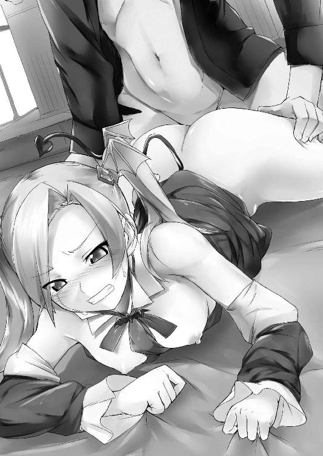
ぴたり......どういうわけか、魔王は唐突にその腰を止めた。
続いて、ぬぽぉぉっ...と卑猥な音を奏でて肉棒が引き抜かれる。吸い付く膣襞が追いすがるように絡みつき、桃色粘膜が捲れ上がって少しでも剛直の逞しさを味わおうとした。
「はうっ、ぅぅん......？」
喉の奥から愛惜の呻きが漏れる。どうして、やめちゃうの......そう口にしそうになって、リリスは慌てて口をつぐんだ。しかし狡猾な魔王はすべてを見透かし薄く笑った。
「このまま抱くのは簡単だけど、ボクは身体だけじゃなく、お前の心も欲しいもんでね」
「んぁぅっ...くっ、ば、バッカじゃないのッ...お前みたいなっ...へっ、ヘンタイにぃっ......あたしのっ、あたしの心を奪えるもんかぁっ!!」
邪悪な王の甘言に、甘い吐息を吐きながら、それでもリリスはナイフのような鋭い声を投げつける。この期に及んでの徹底的な拒絶を前に、しかし魔王は紅眼を三日月のように妖しく細めた。
「ふぅん......なら聞くが、お前は誰になら心を捧げられるんだい？ そもそもいったい誰がお前を愛してくれるっていうんだ、母親にさえ捨てられた、いらない子供のお前を」
瞳から淫欲の色を消し去り、魔王はひどく冷淡な声で娘にそう語りかける。
「違う!! ママはあたしを捨てたんじゃない!!」
魔王の発した嘲りに、すかさずリリスはそう反論する。怒りが喜悦を中和したのか、その声は彼女本来の鋭さを取り戻していた。
しかし魔王は動じない。
「違わないさ。三百年前、ボクもろともお前をあの暗い闇の中へと葬ったのは他ならぬあの女......お前の母、聖女イヴじゃあないか」
その名を魔王が口にした途端、リリスの表情が一気に強張った。しかしそれでも魔少女は、父の言葉に抗い続けた。
「それは......お前があたしを盾に使ったからだ!! あのときお前を封印しなかったら、この地上は滅んでいた。だからママは仕方なく......」
反論をぶつけるリリスだが、その紅い視線がぶれ始めたのを魔王は見逃さなかった。
「どうかな？ 本当はあの女、これ幸いと喜んだんじゃないのかな......なんせお前はボクに犯され、望まず孕んだ魔族の仔だからね。確かにボクがお前を盾にしたのは認めるけど、まさか聖女が気にせずに実の我が子を見殺しとはね。愛していたら無理だね、絶対」
「うるさいっ黙れ！ 黙れ!! だまれええええぇぇぇっっっ!!」
耐えきれず咆哮するが、悪魔はなおも呪いを紡ぐ。
「感情的にならず、冷静に考えてみなよ。もしお前の言う通りだとしたら、あの新しい聖女はなんだ？ あんな子孫がいるってことはだ。お前をボクもろともあの暗くて狭い土の底へと閉じ込めた後、お前のママはどこぞの馬の骨と子供を作ったってことだろう？」
その言葉を受けた瞬間、喚き散らすのさえ忘れ、紅い瞳が凍りつく。
「そ、それは......」
悪魔の呪詛に抗おうと口を開くも、言葉が続かない。
（そんな風に考えたこと、なかった......）
確かにシルヴィアは母の血を引く聖女。だということは、自分が生き埋めみたいな封印の中で泣き喚き喘いでいた頃、母親は自分の知らない男と──。
無意識のうちに震える魔少女を見据えたまま、ヴァランディアは魔笑を深め更に続ける。
「お前のことなんかすっかり忘れていたんだろうね。いや、どうでもよかったのかな？ そうしてお前を捨てたイヴは可愛い子供を授かり、幸せに余生を過ごし......時は流れ再び聖女は生まれた。新しい聖女......シルヴィアとかいうあの娘は随分多くの人間に愛され、祝福されているようじゃないか。では同じ聖女の血を引いたはずのお前は？」
悪意ある質問に、リリスは半ば強制的に記憶を反芻させられる。
三百年前、この地に産まれ落ちた直後の記憶。魔族の血を引く彼女はそれをありありと思い起こせた。
自分を取り上げた産婆はなんと言った？
自分を一目見た人々はなんと言ってたっけ？
──ひぃっ、この赤ン坊、尻尾が生えてるよぉぅっ!?
──やはり悪魔の仔ですよ、すぐに殺してしまいましょう。
──大丈夫か、下手に殺して返り血でも浴びたら祟られそうだぞ？
──生かしておいたら何をしでかすかわからんぞ!? 今のうちに殺してしまえ！
──そうだ、殺そう！
──殺せ。
──殺せ！
──殺せ!!
「うああ...違うっあたし違うのぉっ......」
反響する憎悪と呪詛に追い詰められるようにして、魔少女は独りふらつきながら頭を抱え込み、膝からゆっくり崩れ落ちた。すべてを振り払うように瞳を閉ざしてツインテールを振り乱す。それでも頭の中で響く声は、脳髄にこびりつき、決して離れようとはしない。
──殺せ殺せ殺せ殺せ殺せ殺せ殺せ殺せ殺せころせころせころせコロセコロセ.........!!
「うあああああああああああああっっっ!!」
瞳孔の開ききった紅眼を見開き、堪らず魔少女は絶叫をあげた。
思い出した......いや、忘れていたわけではない。
思い出さないように努めていたのだ。記憶の底に必死に押し込んでいたのだ。
自分は魔族、人間にとっては不幸そのもの。
そんな当たり前のこと、わかっていたつもりだったのに。
いや、わかってなどいなかったのだ。ただただ眼を逸らしてきただけだ。
悪魔っ娘だとか茶化していたのも、所詮は自分をごまかし逃げていたに過ぎない。
「これは邪推かもだけど、もしもお前が肩を持っている新しい聖女がボクを討ち取ったとして。呪いを解かれ樹木からヒトに戻った彼らは、お前を歓迎してくれるだろうかね？」
すかさず魔王にそう言い放たれて、リリスは返す言葉を失う。
彼を殺して自由に、などと言ったところで、自分もまた魔王の娘。人間にとって忌むべき存在であることに変わりはない。行き着く先は三百年前の続き、悪魔の仔として追われ続ける運命が待っているだけだ。
（バッカみたい...あたし、何になれると思ってたんだろ......!!）
結局自分は目の前の男の掌の上でしか生きられない、生まれながらにして呪われた子供なのに。それを否定してしまったら、世界のどこにも居場所なんてないのに。
「あたし......あたしは.........あ、ああ.........あたしって、なんなの......？」
魔王を討てばすべてうまくいく、そんな幻想が胸の奥で砕け散る。自分が何を考え、どう行動しても、結局そこにいるのは汚らわしい血をその身に流す、一匹の魔族。
忌み嫌われ恐怖されそして追われる、それが本当の自分──。
「お前はボクの可愛い一人娘さ。そして妻となるべき女だ」
天井を仰ぎ涙を溜めて嗚咽を漏らす魔少女に、魔王は一転して優しい声で囁く。
「妻......あたし、お前の......」
「お前を嫌う人間どもが嫌ならば、ここでずっとボクと暮らそうじゃないか。そして子供を造ろう......同じ魔族であるボクだけが、お前を本当に愛してやれるんだからねえ」
頬を伝う涙を舐め取られ、同時に柔らかな掌が臍の下をそっと撫でた。
「ひ...はぁぁ...............あか...ちゃん.........？」
錯乱状態の魔少女は、うわごとのように男の言葉を繰り返す。
「そうさ、二人の愛の証にね......でもお前がそこまで拒むなら、それも仕方ないな。新しい聖女のところに帰るがいい......お前を憎む、人間どもの救世主の下へ、ね」
言って魔王は立ち上がり、リリスを置いてその場を去ろうとする。
（いやよ......こいつとの子供なんて、絶対に、死んでもイヤ......）
反射的に拒絶しながら、でも......とリリスは思いとどまり、そして考える。
目の前の男は少なくとも、自分を必要としている。
果たして人間たちが、彼と同じように自分を必要としてくれるだろうか？
（でもこいつの、赤ちゃんを産んだら......あたし、本当に魔族の手先になる......）
──いや、どのみち自分は魔族なのだ。自分がどう考えているとかは関係なく、人々は自分を一目見るなり闇の住人と決めつけ圧倒的な偏見を向けてくるじゃないか。
あのシルヴィアでさえ、初対面の際は有無を言わせず斬りつけてきたのだから。
（やっぱりどうしたってあたし、みんなに後ろ指を差される運命なのかな......そうよね、もし魔王を倒したとしても、きっとその後はシルヴィアだってあたしのこと......）
それに比べたら......少なくとも目の前の悪魔は自分を必要としてくれる。
そして──気持ちいいことをしてくれる。
（気持ちよくなりたいよ...楽に、楽になりたい......誰でもいいから、愛してほしい──!!）
──心の氷に覆われた本音が溢れ出した時、リリスの中にあった最後のタガがパキンと壊れた。
「お...おねがい...............して」
それでも恥ずかしさから、発した声は蚊の鳴くようなか細さだ。
「よく聞こえないよリリス、もう一度大きな声で言ってごらん」
魔王に意地悪く促され、黒衣の少女は紅眼を潤ませながらも震える唇を開いた。
「.........お願い......もう一度、おちんちん...挿入れて......!!」
少女は途切れ途切れに哀願しながら四肢を着き、今度は自らの意思で犬の姿勢をとった。魔王は堕ちた娘を前に、満足げに頷くと、
「なら、自分から挿入れに来るといいよ」
未だ硬さを失わないペニスを晒したまま、腰を落として娘を手招く。誘われるままに獣のような四足歩行でゆっくり背後へにじり寄る。そして熱い感触を粘膜に感じた瞬間。
ずぷぅっ...じゅぷんっ!!
肉の打ち合う音を爆ぜさせ、一気に根元まで飲み込んだ。それまで受身一方だった魔少女は、一転して魔王の腰目掛けてキュンと引き締まった小尻を突き上げ、パン、パンと一心不乱に打ちつけ始める。
心を壊された少女はもう、快感に逃げるより他になかった。腰を一振りするたびに、身体を突き抜ける喜悦が辛い記憶を焼き払う。リリスは肉悦に縋り付くように無我夢中で尻を振り立て男根を貪った。
「へえ、自分からお尻を振り始めたね......ふふ嬉しいよリリス。ようやく本当に、ボクのモノになってくれたんだね」
魔王が娘の肩を抱き上げ獣の姿勢のまま口付ける。魔王は軽く触れただけなのに、リリスはすぐさま喰らい付くようにしゃぶりつき、舌を絡ませ唾液を飲み下した。
「気持ちいいんだねリリス......ははっ、こうしてみるとお尻の穴まで丸見えだぞ」
「やぁぁっん、い、いわないれぇぇ......恥ずかしいのぉっ」
桃谷間で息づく肛門を覗かれて、ツインテールを振り乱し恥じらうも、視線を感じた桃孔は途端に熱を帯びヒクヒクと踊る。
「いいよリリス、おま○こもキツキツに締め付けてくる......さあて。久しぶりにお前の膣内にたっぷり射精してあげようかな」
パンパンパンパンパンパンパンッ!!
「んひぃぃぃっ、あはっぁっん...おっ、んごぉぉっ......ひぃっ、ひぎいぃぃっっ!!」
それまでは抑えていた欲望を解放したのか、魔王の抽迭は破城槌のごとき力強さとゼンマイ仕掛けのような圧倒的速度でもって幼膣をえぐり、牝尻を打った。一気呵成に腰を打ちつけられ、少女の喘ぎが見る間に獣じみてゆく。
そして一際鋭く腰を繰り出し、亀頭の先端が子宮口を串刺した瞬間。
びゅるっびゅくっびゅくっどくっどくっどくんっ.........!!
「あひっあひぇぇ...いぅっくぅぅ......イクッイクうぅぅぅ───────ッッッ!!」
子宮に灼熱を浴び、顎を突き出し喉を仰け反らせ背中を弓なりに反り返らせて。ツインテールの牝獣は声の限りに吠え立てながら、肉悦の極みへと打ち上げられた。
満足げに疼く子宮の胎動は三百年で初めて味わう感覚だ。
（うわ、あ......きっと今のであたし孕んだ......本当に、妊娠させられちゃった.........）
悔しい、とは感じなかった。肉体を覆う快楽の確かな手触りと、胸に食い込んだ自分は必要とされているという実感。その二つが今の彼女のすべてだった。
裸の尻を抱えられ、実の父に種付けされながら。ツインテールの魔少女は、ここにしかない自分の居場所を再認識し恍惚のまま眠りに落ちていった。
第六章 いざ魔海へ！ -Sail Away!-
「悪いけどこの波じゃねえ......とてもじゃないが船は出せないね」
今日何件目かも忘れたその言葉を受けて、シルヴィアはがっくりとうなだれた。
リリスと別れたその直後、聖女はエルフの言葉の通り、海を渡航する船を捜すべく港町まで降りてきた。
そこでいきなり驚かされた。なんと町には人がいたのだ。
それも一人や二人ではない、少なく見ても百人はいる。話を聞けば彼らはみな、漁師や船乗りたちばかり。口を揃えて言うことには、彼らが航海から帰ってくると、町に人の姿はなく、代わりに見慣れぬ樹木が町を覆いつくしていたという。
どうやら魔王がかけた呪いは、海の上までは届かなかったらしい。
だから今この町にいるのは海のプロばかり。そういう意味ではシルヴィアにとって、願ったり叶ったりな状況であるはずなのだが。
「こんな時分に海に出たいだなんてあんた、そりゃ自殺行為だよ」
船乗りたちは異口同音にそう言って、誰一人船を出してはくれなかった。
「もう...どうしてみんな船を出そうとしないのかしら。船乗りが海に出ないだなんて、ご飯を作らないコックさんみたいなものじゃないのぉっ」
海の怖さを知らないシルヴィアは言って小石を蹴飛ばすが、実際海は大時化であった。波の高さは優に彼女の背丈を凌駕し、海岸を削るように波打ち際へと打ちつけている。
「どうしても、ってんならいっこだけ手はなくもないが......」
もう日も暮れかけた頃。シルヴィアの依頼を断った上で、老船乗りがぽつりと呟いた。
「なに!? もったいぶらずに教えてちょうだい！」
藁をもすがる思いのシルヴィアは、彼の手を握りそう叫ぶ。
「うむ......この町の西外れにある酒場、あそこには海賊の一団がたむろしていてな。あの命知らずどもなら、あるいは──いや、しかしお嬢ちゃんみたいな娘さんが行ったら──」
老人がそう言う頃には、シルヴィアは既に踵を返して一路西へと駆け出していた。
「......で、俺たちに船を出せ......と？」
紅いバンダナの男が低い声で問いただす。辿り着いた酒場の中には四十人ほどの男がいたが、その全員が明らかにガラの悪い一目で海賊とわかる身なりの男たちであった。
「そうよ、あなたたちなら簡単なんでしょ？ 時間がないの、早くしてくださる？」
凄みのある海賊を前にしてもシルヴィアは怯むことなくいつもと同じ上から目線で命令する。
「おいおい......それがヒトにモノを頼む態度かよ。この天候じゃいくら俺たちだってそうおいそれとは船を出せねえぜ？ 大体あんた、それだけの無茶を言うからにはそれなりの報酬は用意してるんだろうな？」
この場に限っては常識的な発言をしたならず者であったが、
「報酬？ このわたくしの助けとなるんだもの、名誉なことじゃない」
両手を腰に当てた小娘にそう言いきられて、泣く子も黙る海賊も一瞬言葉を失った。
しかしすぐさま気を取り直し、
「てめえみたいなガキんちょ助けて、それが何の名誉だよ？」
「あんま舐めたこと言わねえこったな......こちとらそれでなくてもこの時化で、海に出られず気が立ってんだ」
「その上大陸中がなんか大変なことになっちまってるみてえだしよ......ガキのお遊びに付き合ってる暇はねえんだよ、さっさと失せな」
海賊たちは口々に姫君を笑い飛ばす。どうあっても船を出す気はないらしい。
（仕方ないわね──）
ふうっとシルヴィアは息をつき、それから懐に手を伸ばす。
取り出したのは小さなペンダント。少女はバッとそれを翳し、今日何度目かの名乗りをあげる。
「あなたたち、この紋章が目に入らないのっ!? 流浪の女剣士とは世を忍ぶ仮の姿っ!! わたくしこそはレイゼント王国第一王女──」
「シルヴィア＝ラヴィ＝レイゼント姫様だろ？」
「そうそのとーり......ってあれぇっ!?」
あっさり言い当てられて、思いっきりうろたえるシルヴィア。例えるなら宿敵との最終決戦で伝家の宝刀を抜いたらペーパーナイフでした、ぐらいのびっくり度合いである。
「ななな、なんでそのことを......」
動揺しまくり問いただすも、
「いやだってあんた、頭に王家の紋章入ったティアラ乗っけてるし。そんでそれだけの器量なら......顔に書いてあるも同然だろ」
平然とそう言い返されては、ぐうの音も出ない。それでもなんとか気を取り直し、
「それならどうしてあなたたちさっさとひれ伏さないのよ、王女様の御前なのに頭が高いじゃないの!! えーい皆の者ひかえっ、ひかえおろーっ!!」
両手をぶんぶか振り回しぷんすか怒って叫ぶものの、やっぱり海賊連中は畏怖する素振りも見せはしない。
「そりゃ、俺たちならず者の海賊だしなぁ......？」
「ああ...お上のご威光が恐くて海賊が勤まるかってハナシだよなあ？」
「ましてや世界がこんな大変な時に、姫様だとかそういうの関係ねーよな、実際」
次々に浴びせられる海賊たちの言葉に美姫は愕然としてしまう。
大陸の人間なら老若男女誰もが自分の名を出した途端にひれ伏すものとばかり思っていたのに。信じられない......茫然自失な姫君に、海賊たちは更に続けた。
「しかしお姫様ならよ、バカでかい宝石とか持ってんじゃねえの？ 地獄の沙汰も金次第ってよ」
こんな状況になっても海賊たちは貴金属への執着を忘れていないらしい。普段であればその小指に嵌めた指輪一つで彼らなど、半永久的に子飼いにできる彼女であったが、
「そんなこと言われても...指輪もブレスレットも、全部お城に置いてきてしまったもの」
困り果てたように答えるシルヴィア。お金についてはつい数日前まで、その存在さえ知らなかったし、もし知っていたにしても呪いを逃れた人々がいるなんて予想していなかったのだからそんなもの持ってきているはずがない。
他に金目のものといえば王家の紋章を刻んだペンダントと頭上のティアラだけだが、それらは母である今は亡き女王の形見。シルヴィアにとって命より大事なものだった。
「無一文じゃハナシにならねぇな......どうして単身姫様がこんなとこまで出張ってきたかは知らねえけども、ガキはさっさとおうちに帰って──」
「いや、手はなくもないぜ」
バンダナの男がシルヴィアを追い払おうとした刹那、他の海賊が言葉を遮る。
「おいおいアニキ...こんな上玉、しかもお姫様がのこのこやって来たんだぜ？ カモネギじゃねえか、美味しくいただかなくてどうすんだよ」
「そりゃオレだってあのデカ乳見せつけられりゃあよぉ......でもよ。堅気の女騙してヤったなんてもしもボスに知れてみろ。俺たち明日の今頃は、魚の餌になってるぜ？ なんせボスは犯さず殺さずが信条の、昔気質のお方だからな」
バンダナの男は自分の口にした想像だけで、ブルリと身を震わせた。
「なあに、ボスが隣町から帰ってくるのは早くても明後日。ばれやしねえって」
及び腰の兄貴分に、シルヴィアを呼び止めた下っ端船員が耳打ちする。
「なにをヒソヒソやってるの？ 方法があるなら早く教えてくださる？」
その様子を不思議そうに眺めながら、自分の状況をまったく把握していない姫様は明るい声で聞き返す。
「ああ......つまりあれだ。金がないなら身体で払えばいいじゃねえか。な、シンプルなハナシだろ？」
「からだ......いやわたくしナイフとフォークより重たいものはちょっと」
言って二の腕を捲り上げ、華奢な細腕をアピールする。彼女の意図とは裏腹に、ほどよく肉付きのある色白極まる柔肌は、彼女を囲む男性陣の欲望を大いに掻き立てた。
「誰が肉体労働しろって言ったよ......オレはさ、姫様のその馬鹿デカい乳で俺たちを楽しませてくれって言ってんだよ」
「え...わたくしの、ムネで.........？」
そう言われて改めて海賊たちの顔を見渡す。すべての瞳が獣みたいに爛々として、彼女の今にも胸当てからはちきれんばかりの豊乳にその視線を注いでいた。
思わず視線を嫌がるように胸元に手をやりながら、
「えっと、えっと......もしかしてそれって...............エッチなこと？」
まさかと思ってそう問いただすも、
「へへ、案外物分かりいいじゃねえか」
疑う余地なく肯定されて、思わず二、三歩後ずさる。
「そんな......駄目よ!! お父様から殿方には、結婚するまで身体を許すなと言われているんですから！ 特に庶民はノーサンキューなのよ!!」
壁際にまで後ずさり、両手を前に突き出して。首をブンブン横に振り、美姫は猛アピールで拒絶する。
「庶民て......いやならいいんだぜ、他をあたれば」
「まあこの時化で船を出すヤツなんざこの港にはいねぇけどな」
男たちは突き放すようにそう言って笑った。彼女が切迫した状況にあるのは既に伝わっているのだ。
「でも......こんぜんこうしょうは駄目だって...お父様が.........」
うつむいてそう呟く、あまりに頑ななその態度に。
「ならこうしようぜ、俺たちが触っていいのは姫様の胸だけ。それなら構わねえだろ？」
海賊の一人がそう提案する。すぐに他の男が彼をシルヴィアの傍から引き剥がし、
「おい、なにいきなり譲歩してんだよ。あのデカパイ揉みしだけんのはいいけどよ、どうせヤるならとことん......」
歯がゆそうに言う仲間に男はニヤリと笑い、シルヴィアに聞こえぬよう耳打ちで返す。
「バッカ、それなら無理やり犯すのと変わんねえだろ。考えてみろ、相手は一国の姫様、それもあの大陸一の美姫、シルヴィア＝ラヴィ＝レイゼント姫様だぜ？ そんな高嶺の花に自分から身体を差し出させる、またとない機会なんだ。心配すんな、相手は小娘。一旦身体を許させりゃ、向こうから最後までしたがるようにもっていくさ」
くくく、と低い笑いを漏らし譲歩の真意を打ち明けられて、男たちは揃って淫猥な薄笑みを浮かべる。
しかし何も知らないシルヴィアはただただ相手が折れたと信じ、
「......おっ、おっぱいだけ...触るだけよ......それだけだったら.........しても、いいわ」
それで船を出してくれるならと、渋々ながら受け入れる。
「へへっ、わかったわかった......さあ、早くその馬鹿デカいおっぱいを拝ましてくれよ」
急かすような男たちの言葉に観念して、シルヴィアは胸当てを外す。留め金を外した瞬間、今まで窮屈そうにしていた乳果実がぶるんっ!! と勢いよく飛び出した。
鎧の内側で蒸れていたため、シャツは汗にしっとり濡れて乳肌に張り付いており、形よい双球が隠しようもなく晒される。甘酸っぱい少女の色香がふわりと周囲に漂い、男たちが喉を鳴らした。
「マジででかいな、片方だけでも両手に余りそうだぜ......そんじゃ、さっそく......」
言いだしっぺの下っ端がシルヴィアの腕を引っ張った。たたらを踏んだ少女はそのまま男の膝に座らされ背後から抱きすくめられる。
男はすかさず脇の下へと手を潜らせると、背後から美姫の右乳房をすくいあげた。
むにぃぃぃっ。指が面白いほど柔乳へとめり込み、形よい乳球がぐんにょりと歪む。シャツ越しとはいえ生地が汗で濡れているせいで、ざらりとした掌の感触が素肌へダイレクトに伝わってきた。
「うっ、痛いじゃない......触るなら、もっと優しく触りなさいよぉ......」
ごつごつとした無骨な指の感触に、美貌を歪め抗議の声をあげる。
「へへ、お姫様ならおっぱい揉まれるのなんて初めてなんだろ？ なあに、最初は痛くてもすぐによくなる......しかしこりゃすげぇ触り心地だな。ずっしりと重てぇくせに、やたらとふよふよしてやがる......髪の毛も、い〜い匂いだぜ」
ぐにぃっぐにぃぃぃ......男は姫君のバストの感触を楽しむようにゆっくりと乳肉を揉みしだいた。
「ちょっ、とぉ......そんな、何度もモミモミしたらぁっ...あっ、それ...だめ.........」
嫌がる美姫の声色は、その言葉とは裏腹に艶を増し始める。彼女自身、自分が感じているその得体の知れぬ感覚をどう捉えていいのか理解しかねている様子だった。
「へへ、声が可愛くなってきてるじゃねえかよ...今度は直に、可愛がってやるよ」
言うが早いか、男がシルヴィアのシャツに手をかける。そして酷く手馴れた様子でぷちぷちと、ボタンを外して引っ剥がした。
ぷりゅんっ、と踊り出た巨乳が二度三度と柔らかくたわみ、男たちの視線を集める。
「きゃあっ!? やだっなんで服脱がすのぉっ、触るだけって約束じゃないっ!!」
「服の上からなんて言ってねえじゃねえか......お、でっかい割に先っちょはへっこんでやがるのか」
「おっホントだ、陥没乳首なんざ初めてお眼にかかったぜオレ」
姫の恥部を見つけ出した男たちは好奇の視線で姫君の切れ込みみたいな乳先を射貫く。
「ひゃあっ!? やだやだっ、見ちゃ駄目ぇっ!!」
あげつらわれて、姫君は今更ながらヒトとは違う自分の恥部を思い出し、陥没気味の乳先を隠そうとする。しかし両腕は簡単に捕らえられて、即座に背後で束ねられてしまう。それでもなお乳球をぷりゅんぷりゅんと揺さぶり踊り、いやいやをする聖女であったが、
「おいおい、そんなわがまま言ってっと、船を出してやらねえぞ？」
男の一人に意地悪く言われ、う〜っ、と唇を尖らせ唸りつつもようやく大人しくなった。
「へへっ、いい子だ......ご褒美にうんと気持ちよくしてやるからな」
拗ねる少女に言いながら、男の指が薄紅色の乳輪を撫でる。淡い外周をなぞるようにさわさわと擽られると、甘い疼きが否応なしに胸の奥へチクリと刺し入る。するとそれを契機に、胸への刺激が痛み以上の気持ちよさへとじわりじわりとシフトした。
「んふぁっ...いっ、やだ......ゆび...そんな......何度もされたらぁ.........あぁっ」
ぐにゅりぐにゅりとパン生地でも捏ねるように、男は執拗に乳房を掬い圧搾してくる。乳腺を刺激するような揉み込みに、嫌がりつつも甘い吐息が口を突いた。
「おやおや、顔を真っ赤にしちゃって......感じ始めちゃったのかなぁ？」
「それじゃそろそろ、俺たちも気持ちよくさせてもらおうか」
見ているだけでは飽き足らなくなった海賊たちが口々に言いながら、もどかしげに自らのベルトへと手をかける。
そうして取り出されたペニスが、四方から美姫の眼前へと突き出された。
「ひゃっやだ......な、なにをいきなり見せてるのよっこの無礼者ぉっ!?」
いきなり何本もの牡性器を向けられて、シルヴィアの美貌が引きつった。さすがの少女もペニスが単なる排泄器官でないことくらいは知っている。
しかし実際見たことがあるのは父王のモノくらい、それもシルヴィアがずっと幼い頃の話だ。そして今自分を取り囲んでいる牡器官は、そんな父のものとは大違いであった。
周囲の男性器はみな天井を高々と仰いでおり、全体的に赤黒い。
大きさは十人十色で小さいものは彼女の指二本分くらいだが、大きいものとなると下手をすれば彼女の手首ほども太く、長さも二の腕くらいはあった。
「ほら、咥えてくれよ」
ぐいっと腰を突き出し言ったのは、一番の巨根を誇る男であった。張り出した亀頭が鼻先にまで突きつけられて、ツンッとした酢酸臭が鼻を突く。
「んぷ......く、臭いぃっ、こ、こんなの咥えるなんて......馬鹿も休み休み言いなさいよ!!」
男の無理な要求に、顔を背け拒絶するシルヴィア。しかし周りの男たちが、それを許すはずもない。
「お口じゃしてくれねえってか......じゃあ仕方ねえ。代わりにこのデカ乳、いただくぜ」
言って男は腰を下げ、自らのモノに手をあてがうと、その先端をシルヴィアの豊満な乳釣鐘へと向けた。
赤い亀頭の先端が乳先へと触れる。触れた牡槍は乳粘膜が火傷しそうなほど熱い。刺激に身を退こうとするが、背後から抱きすくめられていてそれもできない。
「な、なによ...なにをする気......？」
新たなる恥辱の予感とチクチクとした胸への刺激に打ち震えながら美姫が問う。
男は言葉ではなく、行動でもってその疑問に答えた。
ずぶぅっ......!!
「きゃあああっっ!? なっおっぱいになにしてんのよばかあっ!?」
自分の胸へと仕向けられた信じがたい仕打ちに、シルヴィアは素っ頓狂な悲鳴をあげる。 あろうことか男はそのまま腰を突き出し、巨根を巨乳深くへ埋めたのである。
乳肉深くまで届いた肉根のゴリゴリとした感触とそれが孕んだ凄まじい熱気に、呼吸は止まりかけ息が詰まりそうになった。
「セックスは嫌、おしゃぶりも駄目ってんならおっぱいで楽しませてもらうしかねえからな......へへへ、もちもちしててあったかくってこりゃ下手な女抱くよりよっぽどいいぜ」
乳姦の男は呆け顔で言いながら、ぐいぐいと小刻みに腰を振り始める。押し込まれたことでわずかに開いた乳頭の切れ込みに、亀頭の先が食い込んで勃起乳首を責め苛んだ。
「ひんっ!? やっ、おっぱいそんな...あっ、あんっ......」
ヒトよりずっと敏感な乳突起を陥没したまま責め立てられて、胸の奥でのズキズキが加速度的に鋭さを増した。
乳先だけではない。乳房全体が敏感さを増し、牡の硬い陰毛が乳肌を刺すのさえ次第に異様なくすぐったさを伴い始める。
「それじゃオレッちはこっちのおっぱいをいただくとするぜ」
むにぃっ。空いた左胸にも同様にペニスが突き入れられる。こちらは右に比べてかなり小ぶりな肉竿だ。しかしそのおかげで肉槍の先が陥没乳首を鋭く捕らえ、鈴口が乳先をぐりぐりと捏ねくり回してくる。
「ひゃめぇっ、そっれ...あぅんっ、うっ...んんぁ......あ...ぁぅっ......」
鋭い悲鳴と甘い吐息が交互に口を突く。ペニスを突き入れられた乳房は杵に搗かれる餅のように、たっぷんたっぷんと弾力豊かに跳ね踊り甘酸っぱい汗の匂いを振り撒いた。
（やだ、わたくし......おちんちんでおっぱい恥ずかしいことされてるのに......ヘンな気分になってきちゃった......）
妖しい行為で感じ始めた自分を恥じ入るも、男に腰を使われると左右の乳房で快感がかんしゃく玉みたいに破裂する。
「うっ...もう出ちまう......」
右胸を犯していた男が呻くように言い放ち、突然腰振りが激しさを増す。打ちつけられる爆乳がたぷたぷと大きく波打ち、全身へと広がる乳悦の波紋に美姫の頬が緩みだす。
そして。
びゅくっびゅっびゅっびゅるぅぅぅっ!!
突き入れられたペニスが暴発し、白濁が一気に弾けた。
「ひゃ、あつぅっ!? んっひぃぃ......ひんっ、んあ...ああぁぁぁ.........」
力強い射精に敏感乳首を狙い撃ちされて、蕩けたような喘ぎ声が聖女の喉を迸る。
（なっ、なにこれ...なにこれぇぇ......!?）
ペニスとはまた違う、マグマのような熱くてドロリとした感触が乳肌へと染み入ってくる。ねっとりと粘り気に満ちたそれは乳突起にまで絡みつき、かつてないほどの恍惚を美姫にもたらした。
「ふぅー、射精た射精た......こりゃ胸だけでも相当楽しめるぜ」
ぬぷぅっ......放精を終えた男が巨根を引き抜く。ねっとりとした白濁汁が乳房とペニスの間に糸を引き、ムッとするような青臭い牡の臭いが聖女の鼻腔を掠めた。
「よっしゃ、じゃあ次は俺だな」
ぐにゅりゅぃぃ......。
射精を浴びてヒリヒリとする乳房目掛けて、新たな男がペニスで貫く。
「あんぅっ......やだっ、まだおっぱい...するの......？」
乳射精を受けた美姫はすっかり弱々しくなっていた。乳首をくじられ巨乳を捏ねられながら、怯えるような上目遣いで男たちを見回しつつ眉を八の字に寄せそう問いかける。
「まだまだ始まったばかりじゃねえかよ......みんなでたっぷり姫様のおっぱい可愛がってやるぜ」
しおらしくなってきた姫君に、しかし男は残酷に言い放った。
「そ、そんなぁぁ......こんなの続けられたら、わたくしぃぃ.........」
胸は未だかつて感じたことのないほど敏感にされている。立ち上る胸を焼くような精液の臭いに肺を満たされ、心臓の鼓動がどんどん速くなってゆく。
早く終わらせたい。そうしないと、自分が自分でなくなる気がして無性に怖かった。
「それじゃおっぱいだけじゃなく、口も使って射精させるんだな。そうすりゃ胸で相手する数がぐーんと減るぜ？」
背後から乳揉みを続ける男が耳元にそう囁く。くすぐったさに肩を竦めながら、シルヴィアはしばし眉をひそめて思案していたが。
「うぅっ.........する...お口でも、するぅ......」
か細い声でそう呟き、控える男を促すようにその股間へと眼をやった。
「ラッキー♪ それじゃ姫様、たっぷり味わってくださいよっ、と」
男は剥き身のペニスを揺らせてそれを少女の鼻先へと近づける。さほど大きくないもののその形状はまるで芋虫を連想させる酷くグロテスクなものだった。臭いも酷い。尿と汗とを布に染み込ませ、生魚を包んで半月ぐらい放置したらこんな臭いになるだろうか。
（やだ、こればっちい......だけどお口だったら...ヘンな気分にならないですむもの）
これ以上胸を弄られ続けたら、ホントにおかしくなってしまう。そう思い、断腸の思いでシルヴィアは目の前に差し出された男のモノへと顔を近づける。強烈な臭いがツンと鼻を突き、口の中に酸っぱい唾液が湧き上がる。
（お父様のためだもの......わたくしが、ぜったいみんなを助けるんだもの......!!）
そう何度も自分に言い聞かせ、目の前で悪臭を放つ肉芋虫への嫌悪感を打ち払う。
んあっ、と大きく口を開け、反対に瞳は硬く閉ざして美姫は男の股間へと顔を近づけた。
「あ...むぅっ......んおぁっ.........ふくっ......うぐぅ」
下唇に触れる熱気、それを追いかけるようにして、シルヴィアは意を決し肉筒を咥えた。そして途端に顔を顰める。イヤな甘さと塩辛さが同時に舌の上へと広がる。鼻先を掠める陰毛から立ち上るムッとするような汗の臭いに、今にもえずいてしまいそうだ。
「よし、そのまま口を窄めて、首を前後させてチンポを扱くんだ。歯が当たんねえように気をつけながらな」
命令を受けたシルヴィア姫は苦々しい表情を浮かべたものの、
「......ふぁっ、ふぁかり...まふぃひゃぁ.........」
隷属の言葉と共に言われた通り唇を閉ざし、咥えた肉根をゆるゆると扱き始める。途端に肉棒がビクンッと跳ねて、口の中いっぱいにえぐい苦味が広がった。
「へへ、お上手じゃねえか......しかしすげえな。オレ今、あのシルヴィア姫様にフェラさせてんだぜ......」
大陸随一の美姫と謳われた美貌が己の股間に吸い付くのを見下ろし、男が上ずった声で笑った。対する少女はただただ必死に咥えたペニスをしゃぶり続ける。男性器にこびりついた汚物の溶けた唾液など絶対飲みたくないので、口端からだらだら唾液を垂れ流しながら一心不乱に首を動かす。
「くっ、こんな可愛い姫様にチンポしゃぶられてたら...も、もう射精る......!!」
口腔奉仕を強いる男がブルッとその身を震わせて、シルヴィアの頭を抱え込み、一思いに喉元まで刺し貫く。そしてそのまま喉奥目掛け、一気に精を放った。
どくんっどくんっどくんっ......!!
「んぐ......んごきゅっ、ごきゅぅ...............んごぉっ!?」
逃げようにも大の男の力で後頭部をがっしりと押さえ込まれては、どうすることもできない。食道まで届いたペニスは巨大なミミズみたいにのたくりながらビュクビュクと精を吐き出し、気管から胃袋までを白濁液で塗り潰す。
「んごっ、んぐぉぁ.........ごほぉっ!! きゃふっ、げほっけほっ.........ごほんっ!!」
強引に精液を飲み干させられ、男が一段落ついたところでようやく解放された。それでもしばらくの間、気管に入った子種汁のせいでまともに呼吸もできずひたすら咳き込み続けるシルヴィア。その口元からはザーメンと胃液の混合液が、まるで牛の唾液みたいにだらりと糸を引いた。
「けほぉっ...はぁっ、はぁっ......な、なにするのよぉ、全部飲んじゃったじゃないの!!」
それでもようやっと息を整えて、口元の白濁を拭いつつ半べそをかいて抗議するも、
「なんだ、俺たちのは飲みたくないってのか......へへ、それじゃこれから射精されたザーメンは、一滴残さず飲み干せよ。全員のザーメン残さず飲まなきゃ船は出してやらねえ」
「なによそれぇっ!! 全然ハナシが違うじゃないのぉっ!!」
男の理不尽な要求に、可愛らしい碧眼を吊り上げ声を荒げるシルヴィア。しかしそんな怒り顔も、紅潮した頬と緩んだ唇から垂れる精液のせいで形無しだった。
「いやならここでやめてもいいぜ、姫様はヤラれ損だけどな」
対する男たちは悠然と言い放つ。そう言い返されては少女には、抗いようもなかった。他に海を渡る術はないし、既に泥沼に片足突っ込んでいるのだ。
「うう...こんなの、ずるいわよぉぉ......」
スンスン鼻を鳴らしながら、それでもシルヴィアは待ち構えていた勃起へと自ら進んで顔を近づける。泣いていたって、お城の中みたいに助けてくれる人はいないのだ。
今はとにかくさっさと男たちを満足させて、船を出してもらわなくてはならない。シルヴィアは無我夢中でペニスをしゃぶり、乳房を揺さぶり男相手の奉仕を繰り返す。
「んっ...あぁっんっ......ふぁむっ、あむぅっ.........」
乳房への刺激と激しい前後運動に、次第に身体が熱を帯びる。そうしているうちに吐き気を催したあの臭いもだんだん気にならなくなってきた。それどころか呼吸をするたび頭の芯がジンッと痺れるような感じがして、酩酊にも似た心地よさを覚え始める。
（このおちんちんから出てきた白いやつ...臭い嗅ぐと、胸がドキドキしてきちゃう......どうしちゃったの、わたくし......？）
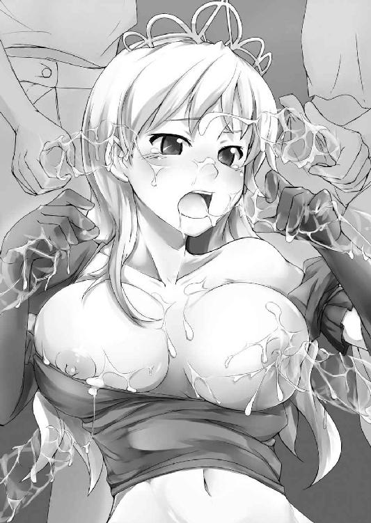
それまでおぞましさしか感じなかった精液の臭いにさえ、不快感が消えていた。シルヴィアは無意識に肉筒へと舌を絡ませ、ストローでシロップを飲むようにチュウチュウと男根を啜り始める。
淫らな姫の姿に、それまで順番待ちをしていた男たちもこぞってシルヴィアの肢体へとその手を這わせ始めた。
脇の下に顔を突っ込まれ、汗の匂いを嗅ぎまわられる。無毛の脇をねっとりと舐められながらわき腹を愛撫され、ぷにぷにした二の腕をむにむにと揉みしだかれた。
たっぷりとした桃尻や肉付きのいい太股にも大量の掌がクモのように群がり、特に敏感な内股へはねちっこい往復運動での愛撫が施された。
身体中を愛撫されながら、股間だけには誰一人触ってこようとはしない。シルヴィアはそれを約束を守ってくれているからだと理解していたが、無論そんな甘い理由ではない。
そしてそのことを、姫君もすぐさま思い知らされることとなった。
（やだぁ......お股が、じんじんっていって...とまんない......なに、これぇぇ......）
身体中への愛撫にそこはじくじくと蜜を滲ませているのに。一向に刺激を与えられない陰唇は駄々をこねるように痺れ、膣道は見たこともないその形状がわかるくらい淫らに蠕動している。
（もしかしてこれが、エッチな気分になるってことなの......？ ううん、うそ。好きな人でもないのに、そんな風になるわけない......だけど、やっぱりお股、熱いぃぃっ......）
男と女の営みは知識としては知っているものの、愛してもいない相手に嬲られて性的な快感を得るはずがないと堅く信じているシルヴィアは、自分の身体が示す浅ましい反応に気が動転していた。
しかし彼女の思いとは裏腹に子宮は火の玉でも孕んだみたいにとにかく熱く燃え盛り、心臓の鼓動に合わせてズキズキと疼き鳴いた。
「ふぅっ、そろそろ射精すぞ......ううっ!!」
ビュクッビュクンビュクンビュビュビュゥゥゥゥッッッ!!
左乳を犯していた肉竿が果て、またもおびただしい量の白濁液が弾けた。
「ひゃはぁっ、あああんんぅっっ!!」
射精に乳突起を撃ち抜かれ、息が止まるほどの鋭い乳悦が突き抜ける。
「ほれ、約束だぜ......オレッちのザーメン残さず舐め取ってくれよな」
乳山から竿を引き抜いた男に急かされて、シルヴィアは自分の乳房を持ち上げる。そしてそこにぶちまけられた黄ばみがかった精液を、舌でぺろぺろ舐め取り始めた。
（やだ、おっぱいにおとこのひとのがたくさん......。生臭いけど、これ...あんまりイヤじゃなくなってきた......それどころかなんか、なんかこれ......おいしい、かも.........）
精液への嫌悪感が薄らいだことで、少女の舌掃除は積極的なものへと変わった。陥没乳首に注ぎ込まれた精液を味わうべく、乳輪を含み、チュウッと啜る。舌を捻じ込み乳勃起を捕らえ、吸い上げながら絡みつく子種を舐め取った。反対側の乳首も同様に舐めしゃぶり、溜め込んでいた精液をじゅるじゅると啜り飲む。
「はあっ、はあぁっ...じゅるぅ......んっふぅっ♥」
両の乳峰を掃除し終えた頃には、身体は牡と子種への飢餓感で恐ろしく熱を帯びていた。精液の臭いと味に牝の本能を刺激されたのか下腹部はますますうずうずとはしたなく疼き狂い、シルヴィアは始終空腰を使っていなくては耐えられないほど発情しきっていた。
（やだぁっ身体あついぃっ......このままでなんて、いられないわよぉぉっ!!）
「うう......もうだめぇ...これ以上はもうやだっやなのぉぉ......助けて、助けてよォォ」
姫君の懇願に、男たちが邪悪に笑う。
「じゃあさ...ヤらせてくれよ。姫様だってここ、ずうっと疼きっぱなしなんだろ？」
くちゅくちゅ......濡れた股間をようやく摩擦され、瞬く喜悦に巨桃がびくんと跳ねる。
「ひゃああぁぁ......♥ で、でもぉっ、お父様がぁ......」
むっちりとした尻を前後左右にふりふりさせて、牡の悪戯から逃げ惑う。しかしそんな少女の抵抗をあざ笑うように下穿き越しに陰核を捕らえた男の指がすかさずくりくり摩擦し、子宮の疼きは薪をくべられた釜のように淫欲の炎を燃え盛らせる。
（ああ...だめ......もう我慢できないぃっ...こんな辛いの、わたくし耐えられない......!!）
あらゆる抵抗を試みながらシルヴィアは、自分の身体を苛める疼きを治めるにはもう男と交わるしかないことを思い知らされることとなった。
それにもう、ペニスを咥えるのも胸で扱くのもできそうにない。挿入れさせてやるしか、男たちを相手にする手段もまたなかった。
（お父様は駄目って言ったけど...お父様を助けるためだもの......）
「い.........いい、わよ.........あの、その......え、エッチなこと...しても.........」
蚊の鳴くような声ながら、シルヴィアはとうとうその汚れなき身体を許してしまう。
自分を偽るために最愛の父親までダシにしてしまったことにさえ気づかない。それほどまでに少女の発情は切迫していた。
「へへ、そうかいそうかい......それじゃ自分で股座おっ広げて挿入れてくださいっておねだりしてみな」
男が卑猥な命令を下す。いつもなら問答無用で撥ね除けるところだが、焦らされ続けた今のシルヴィアにはその言葉に逆らうだけの余裕はない。
「...............」
ぽおっとした表情で男の命令を受けたシルヴィアはこくりと首を縦に振り、ごろりと仰向けに寝転がると、腰を掲げて下穿きを脱ぎ取る。ぬちゃぁっ、股布と陰部の間に、果実のように甘酸っぱい匂いの蜜が糸を引いた。
「んあぁっ......♥」
冷たい空気に濡れた陰部を舐められて、悩ましい喘ぎが美姫の口を突いて出た。下着を脱ぎ去った姫君はもどかしそうに股を広げると、指を陰唇の両脇に添え、ぐいっと左右に押し開く。
くぱぁっ♥
桜色の肉襞が綻び、濃密な牝臭を立ち上らせる。割り開かれた肉洞の内側には、白みがかった処女膜までもがはっきりと見て取れた。その下側では薄桃色の、可憐な窄まりまで露となっていた。
『うおおおおおおおおおおおっっ!!』
海賊たちが一斉に、好色めいた歓声をあげる。八十近くの爛々とした眼が、一つ残らずシルヴィアの秘密の花園へと突き刺さった。
「へへ...さすが姫様、正真正銘のおぼこってわけか......そ、それじゃ遠慮なく......」
興奮しきった海賊が、痛いくらいに勃起した先端を咲き乱れた姫百合へとあてがった。
（ああ...わたくし、このおとこのひとのモノにされちゃうんだ......やだ...けど...だけどっお股のうずうずもう我慢できないもの......コレを鎮めてくれるんだったら.........!!）
嫌悪や諦めよりも肉体の欲情が先立ち、シルヴィアは来るべき破瓜の衝撃に備えてギュッとその眼を瞑った。
しかし男が腰を繰り出すより早く。
「ゴルァッ!! てめえらいったいなにしてやがる!!」
野太い怒声が酒場に響き、海賊たちは冷水を浴びたようにビクリとその身を竦ませた。シルヴィアを犯そうとしていた男など、その声を聞いた瞬間、後方へ向けて三メートルほど飛び上がる。
声の主は入り口に立っていた。それは二メートルは優にあろうという巨体を漆黒の船長服で包んだ大男であった。髭に覆われたいかつい相貌は獰猛な熊を連想させ、左目には黒い眼帯を当てている。袖から覗く指は毛むくじゃらで、その一本だけでもシルヴィアの手首くらいありそうだ。その頭にはご丁寧にも、黄金で作られた骸骨の鋳物を取り付けた船長帽を被っている。
子供に紙とペンとを貸し与え、海賊船の船長を書けと命じたら間違いなくこう描くであろう......目の前の大男はまさにそんなイメージの見事なまでの具現化であった。
「ボ、ボス......お戻りは明後日のご予定じゃあ」
下半身丸出しの海賊の一人がおっかなびっくりそう尋ねるも、
「うるせぇ黙れボケ！ 山向こうの街にゃあ人っ子一人いやしなかったんだ。長く居座る理由もねえ......ンなこたどうでもいい。てめえら...お嬢さん相手になにしてやがった!?」
ボスと呼ばれた髭面の巨漢は汚い言葉で罵声を飛ばし、反対に部下を問い詰める。
「ち、ちげえんですよボス、別に無理やりヤッてたわけじゃねえ。この嬢ちゃんとはきっちりはっきり合意の上でして......なあ、お嬢ちゃん？」
しどろもどろになりながら、男たちは必死にシルヴィアへ同意を求める。しかしシルヴィアはこの急展開についていけず、ただただ呆然とするばかりであった。
「てめえら全員相手にか？ そこのお嬢さん、俺にはとても娼婦なんかにゃ見えねえぞ」
そう言って大男は、白濁したシルヴィアの顔を覗き込む。それからにわかに近場にあった台布巾で、彼女の顔をごしごしと拭った。
「んぷっ......ひっ!?」
瞼にかかった白濁を取り払われて、少女は小さな悲鳴をあげる。無理もない、開けた視界いっぱいに、隻眼髭面の鬼のような形相が迫っていたのだ。
そうしてしばしの間、大男はシルヴィアの顔をまじまじ見つめていたものの。
くわっ!!
突如血走った隻眼が、獲物を捕食するみたいに大きく見開いた。
「ひゃえぇっ!?」
そのあまりの迫力に、シルヴィアなどもう少しでお漏らししてしまうところだ。しかしそんな彼女以上に驚愕していたのは、当の大男の方だった。
「なっ......そのお美しいお声......やっぱり間違いねえ.........あんた...いや、貴女様は!! シ、シルヴィア＝ラヴィ＝レイゼント第一王女さまで......いらっしゃいませんか!?」
震える声で言いながら熊男はがくんっと膝を突き、巨体を無理やり姫君より低くする。
「あ、あなたもわたくしのことご存知なの......？」
心臓をドキバクさせながらも、姫君はそう聞き返す。この男にも奉仕しなくちゃいけないのかしら......刷り込まれた目的意識から、その股間へと手を伸ばそうとするが。
「知っているも何もッ！ 何を隠そうこの俺......いやワタクシめは姫様がお生まれになった時から毎年、姫様のご生誕祭には必ず都へ行くほどで!! それだけじゃねえ、姫様がご公務で俺ら庶民にお顔を見せてくださる際にはたとえ大陸の反対側でも必ず駆けつけてるんですぜ......うああ...お傍で見る姫様は本当にお綺麗だあ、感激だなあ!!」
大男は差し出された掌をギュッと握り、興奮しきりでそうまくし立てる。
「もしかして毎年秋頃都の方に船を出してるのって、そのせいだったんスか......」
「知らなかった...泣く子も黙る南海の虎と呼ばれた船長が......王室マニアだなんて」
普段の荒くれ者然とした姿からは想像もつかないボスの姿に、船員たちは全員眼が点になる。
「おっとすいやせん、俺なんかの小汚ねえ手で姫様のお綺麗な手に触れちまって!! しかし夢みてえだ......まさかあのシルヴィア姫様に、こんな間近でお眼にかかれるたあ......」
憧れの姫君との思わぬ対面に、髭面の船長は涙まで滲ませている。案外感激屋らしい。
「よしなに」
正式な王女扱いに久方ぶりに王宮を思い出しそう微笑を返してみるものの、乾いたザーメンでカピカピの頬が強張ってイマイチ決まらない。それでも船長はいつも遠くで眺めるだけだったその仕草を間近に見て、純真な子供のようにパァッと顔を明るくさせた。
しかしひとしきり感激したそのあとで。後ろを向いた海賊船長はそれまでのデレデレ顔から一変し、阿修羅のごとき凶相へと変貌していた。
「......で。てめえらは何の理由か知らねえが、俺が心の底からご慕い申し上げている姫様を、こんな......こんな酷い目に遭わせやがったわけか.........そうか、そうか」
ゆらり、と巨体が揺れた。それまで淫らな熱気に包まれていた酒場の空気が一気に氷点下まで凍りつく。今の今まで下卑た笑みを浮かべていた海賊たちは、死人だってもう少し顔色がいいだろうというほど顔面蒼白になり震える鬼に視線を注いだ。
結局。シルヴィアが間に入って止めるまで、酒場はこの世の地獄と化した。
※
シルヴィアの頼みを二つ返事でＯＫした船長に招かれ乗せられた海賊船は、想像以上に大きく立派な代物だった。
恐らくは豪華客船を改造したものだろう。船室は数も多く、意外なほど綺麗だ。
「おもかじいっぱーいっ♪」
そんな海賊船の甲板で元気いっぱい叫ぶのは、我らがシルヴィア姫である。船に乗り込むその前に、身体を洗い清めた彼女は姫騎士気取りの防具を脱いで、船長服を羽織っていた。
それらはすべて船長から半ば強引に奪い取ったものであるため明らかにブカブカだし袖などだらんと垂れていたが、ドクロマークの海賊帽を被った美姫はすっかりご機嫌だ。騙され嬲られ犯されそうになったことまでけろりと忘れて、海賊ごっこにいそしんでいた。
そのすぐ後ろではシャツ一枚の船長が熊のような毛むくじゃらの腕を組み仁王立ちしている。
シンボルマークを奪われたというのに、王室崇拝者の船長ははしゃぐ孫を見守るじーさんがごとく終始ニコニコであった。信奉する姫君に自分の船を気に入ってもらえたのがよほど嬉しいようだ。
ちなみに本当は眼帯も「パイレーツといえばこれよねーっ♪」とばかりに拝借しようとしたのだが、こればかりはと渋る船長から強引に奪い取ったその瞬間、シルヴィアはそれまでのハイテンションもどこへやら、一気に顔を青ざめさせて「ごめんなさい」と一言呟き、以来眼帯のことは一言も口にしていない。
ともあれ。心強い仲間を手に入れた彼女は一路魔島を目指した。本来であればシェリーの到着を待ちたいところであったのだが、船長いわくこれ以上海が荒れたらさすがの自分たちでも船を出しようもないとのことで、やむなく先を急ぐこととしたのだ。
妖精族の彼女だけならいくらでも海を渡る術を持っているだろうし、なにより先に行ったリリスのことが気になった。
「そぉれもひとつおもかじいっぱーいっ♪」
船頭に立つ海賊姫はぐるぐる袖を振り回し、実に楽しげにそう繰り返す。
「なあ、あの姫さん......さっきからあれしか言ってねえよな......」
「きっとあれしか知らねえんだよ、船乗りの言葉......」
あきれ返る船員たちだったが、先ほど鬼と化した船長を見ている手前、彼の上機嫌が続くのならとみんなシルヴィアの言いなり状態だ。姫君が発する号令とは無関係に、事前に伝えられた位置情報から四十人の海賊たちは的確に船を目的地へと運んでゆく。
しかしそんな快進撃も長く続くものではなかった。海は大時化、海を初めて目にしたシルヴィアは当然乗船も初体験なわけで。
「う゛うっ......ぎ゛もぢ゛わ゛る゛い......」
最初の元気はどこへやら。一時と経たないうちにすっかり船酔いにやられて船室に引っ込んでしまう姫君であった。
「安心してくだせえ、姫様がお休みになってらっしゃる間に船は必ず目的地まで──」
美姫の介抱を終えた船長が分厚い胸板を叩きそう豪語しようとした矢先。
どごぉぉぉっっっ!!
船体が大きく揺れた。いや、傾いた。
拍子にシルヴィアはベッドの上から転げ落ちる。
「いったぁぁい......急にどうしたのよ!?」
おでこを打った姫君は、額をさすりつつ船長を問い詰める。
「今のは単なる揺れじゃねえ、船底に何かぶつかったんでさぁ!!」
そう言い残すや船長は部屋を飛び出した。
「ぶつかった？ もしかして島に着いたんじゃなくて!?」
持ち前のポジティブシンキングでそう考えた姫君も、彼に続いて甲板へ喜び勇んで躍り出る。
──しかしそこに待っていたのは、予想を裏切る凄惨な光景だった。
「なっ......いったいなんなの!?」
思わず聖女が甲高い悲鳴をあげる。
扉の向こうの甲板では、船体に絡みつく巨木のような蛸足と、それをなんとか引き剥がそうとする船員たちが修羅場を繰り広げていた。
「くぅっ...このバケモノが、いきなり船体にしがみついて来たんだ......やべぇっ、こいつ船を引きずり込む気だぜ!? 火ぃ持って来い、火!!」
「ちっ、火も効かねえっ、コイツ松明の炎にもびくともしねえぞ!!」
「くそっこんなバケモノがこの海域にいるなんて、聞いたことねぇぞ!!」
ある者は火を翳し、ある者は手にしたナイフで斬りつける。しかし船上で踊る怪物は、それにさえ気づかぬようにもったりと蠢き続けた。
船に乗り付けた蛸足は計三本。不気味な紫色をしたそれらはどれも、途方もなく巨大な代物であった。
「うああっ!!」
「ぐふぅっ!?」
男たちの悲鳴がそこかしこでこだまする。蛸足は縦横無尽に船上を徘徊し、なす術もない船員たちを次々と薙ぎ払い、海へと突き落としていった。
「ああ......み、みんな.........」
阿鼻叫喚の地獄絵図を前に、あっけにとられるシルヴィア。
「これはこれは姫様。お久しゅうございますな」
茫然自失のその最中、聞き覚えのある声が突如空から降ってきた。
「だれ──ひっ!?」
バッ、と見上げた途端、碧い瞳が映したモノに聖女は絶句する。
頭上には空さえ覆いつくすほど巨大な蛸の頭があった。
瞳だけでも彼女を飲み込むほど大きい上に、それは左右にのみならず額にまでもついている。その三つ目がギョロリと眼下に巡り、甲板の少女をねめつけた。
──言うまでもなく、こんなバケモノのお知り合いはいない。しかしこの怪異が発したと思しきその声には、確かに聞き覚えがあった。
「なにを素っ頓狂な顔をしておる。城の地下での出来事を、忘れたわけではあるまいて」
ヒントを与えるようなその声に、ようやくシルヴィアは思い出す。
「あなた、デボラ様──いやっ、わたくしを騙した贋賢者!!」
間違いない。しわがれた老人声、人好きのするその口調。そしてなにより印象的な、額に覗いた第三の眼。
「左様──この姿では初めてお目にかかるかの。これこそ我が本来の姿。大海を統べる水界の皇、クラーケンよ」
言って怪物は高笑いをあげると、三つの瞳で同時に聖女を睨んだ。
「まさか弱虫の貴女がここまで辿り着こうとは、正直思いもしませんでしたぞ。幼い時から知る者としては感慨深いところですが......ここはあまりにも、大魔王様に近すぎます。やはり、ここで消えていただくより他にありますまいな」
声がにわかに凄みを増し、同時に新たな魔足が甲板へと乗り出した。
ドウゥッ！
バキャアッッ!!
一薙ぎで帆は根元からへし折られ、返す一撃で船室はその半分が大破する。
「まずいっ......このままじゃ、あっという間に海の藻屑だ!!」
船員たちはどうにか船を守ろうと必死に攻撃を続けたが、いくら仕掛けても焼け石に水。船が沈むのも時間の問題だ。
「どいていて!!」
目まぐるしく動き回る船員の間を掻き分けて飛び出したシルヴィアは剣を引き抜き、甲板を陣取る足を狙う。
ザクッ!!
振り下ろされた一撃は、確かな手応えと共に巨大な蛸足を一刀両断した。紫の体液が、地獄の釜をひっくり返したみたいに辺り一面にぶちまけられる。
切り離された先端は、水揚げされた鮮魚のようにしばしピチピチ跳ねていたが、やがて灰となり海風に溶けた。
「ほう......思いのほか剣をうまく使いこなしておるようですな、感心感心。しかし姫様、お戯れにしては少々度が過ぎますぞ」
ビュンッ!! 海賊を捕らえていた蛸足の一つが鞭のようにしなった。そして手にした船員を、シルヴィア目掛けて投げ飛ばす。
「きゃあっ!!」
男の体当たりを受けたシルヴィアは悲鳴と共に突き倒され、同時に緩んだ掌から聖剣の柄が滑り落ちる。
そこを狙ったように船が傾き、押し寄せる波が剣を飲み込み海中へと引きずり込んだ。
「あ─────っ!!」
切り札にして唯一の武器である聖剣を喪失し、聖女は大声をあげながら慌てて水面を覗くものの、既に剣の姿はない。
「ぬかりましたな姫様。しかし今の一撃、老体にはいささか堪えましたぞ？ せっかくですからこの機会に、姫様にも他人の痛みというものをお勉強していただきましょうかな」
殺意を孕んだ言葉を浴びて、シルヴィアは一気に青ざめる。聖剣の力がなければ自分はただの人間だ。目の前の化け物に、勝てる見込みなどありはしない。
三つの瞳がぎょろりとシルヴィアを睨みつける。その瞳孔がカッと見開いた。
「ぼっ、ぼうりょくはんたーい!!」
打つ手なしの姫君は両手を挙げてそう叫ぶも、無論魔族がそれを聞き入れる道理もない。
「ごきげんよう、姫様......貴女の次の人生が幸多からんことを」
ビュンッ!!
蛸足の一つがシルヴィア目掛けて襲い掛かる。早い。美姫はどうすることもできずにその身を屈めてギュッと眼を閉じる。どのみち狭い船の上では逃げ場などありはしないのだ。
バシィッ!!
肉が弾け、骨が砕ける鈍い音。しかし不思議と痛みはない。それどころか、衝撃さえまったく感じなかった。
恐る恐る薄眼を開く。するとそこには......。
「船長ッ!?」
思わずシルヴィアが悲痛な叫びをあげる。そこには巨体で蛸足を受け止める船長の姿があった。
「へへ、姫様...ご安心くだせえ、この俺の目の黒いうちは姫様に指一本触れさせやしませんぜ」
振り返り、そう言って無理に笑顔を作る船長であったが......その左腕は、既になかった。
（今の攻撃で......わたくしを、助けるために!!）
だくだくと滴る血を前に、シルヴィアは口元に両手をあてがい息を呑む。信じられない光景に、心臓を鷲掴みにされたような衝撃が胸を貫いた。
「ボ、ボスゥッ!?」
周囲の船員たちが慌てて駆け寄ろうとするが、船長はそれを片手で制した。
「お前たちはすっこんでろ。お前らまでいなくなったら、だれが姫様を島まで送るんだ」
途方もない痛みに形相を歪めながら、船長は隻腕でなおも美姫を護ろうとする。その姿を前に、シルヴィアはどうしようもないくらい切ない思いに襲われた。
（わたくしのために船を出してくれて、わたくしのためにあんな大怪我まで負って......なのにわたくし、なにもしてあげられないの!?）
これまでの人生で、こうも自分の非力さを歯がゆく感じたことはなかった。
「おや、思わぬ邪魔が入りましたな。しかしほんの少し時間が延びたに過ぎません。次はお二人まとめて......魚の餌にして差し上げましょう」
また新たな蛸足が海面を突き破り天高く伸びた。
船は既に半壊状態、船員たちもそのほとんどが身動きできないほどの深手を負い、甲板は初めからそんな色だったのかと勘違いしそうなくらい赤黒い血の色に塗り潰されていた。
このままでは、みんな死んでしまう。
小さな時からシルヴィアは、自分のために民が働くのは当然のことだ、そう信じていた。
しかし──自分のために誰かが命を落とすのは、何があっても許容できない。
（お願いっ......どうにかして、みんなを助けて!!）
自分のためではなく誰かのために、シルヴィアは生まれて初めて神に祈った。
そうしている間にも凶器と化した蛸足は凄まじい勢いで海風を裂き、船長とその背後にいるシルヴィア目掛け迫り来る。そしてそれが船長の陰に隠れたその刹那。
「ぐあああっ!!」
男の野太い悲鳴が耳をつんざき、衝撃が船をも揺るがした。
しかし、おかしい。また、痛みがないのだ。いくらあの人間離れした船長だって、魔物渾身の一撃を押さえ込めるはずもないのに......。
「姫様、目を......目を開けてくだせえ」
あっけにとられたように呟く声は船長のもの。先ほどの苦悶は、彼のものではないのか？
ではいったいあれは......目を見開き彼の脇越しに前を覗けば、そこには今の今まで迫っていた蛸足が船長の鼻先三寸でぴたりと動きを止めている。
そして次の瞬間、それは一斉にねずみ色の灰と化し、バサァッと船上にぶちまけられた。
「うおおぉぉ......こんな...ことがぁぁ......!?」
三つ眼の老人が狼狽した声をあげた。他の蛸足もぐずぐずと崩れだしている。
「姫さん、あれを!!」
船員の一人が海底を指差した。駆け寄りそこを覗いてみれば、闇色の海中で何かが眩く光り輝いている。
碧眼をよくよく凝らしてみれば、そこには落としたはずの聖剣が、刀身に烈光を纏わせて、魔物の身体目掛けて深々と突き立っていた。
「バカな......剣が、ひとりでに......ぐああああああっっ!!」
バザァァンッッ!!
クラーケンは苦しげに身悶え、そのたびに海は天と地がひっくり返ったかのように荒れ狂った。何度目かの身悶えにようやく剣は魔物の身体から抜け落ち、それは荒れ狂う高波に乗って折れたマストへと突き刺さる。
なおも輝きを放ち続ける聖剣は、主を呼んでいるかのようだ。シルヴィアは甲板を這いながらどうにかしてマストの下へと辿り着くと、聖剣を引き抜き握り直す。
（これでみんなを救わなくっちゃ、わたくしにしかできないんだからっ!!）
もう考えている暇はなかった。一撃食らえばそれでお終い、やられる前にやるしかない。
「いくわよっ!!」
叫びと共にぎゅっと柄を握った聖女は、甲板を蹴り海中へと飛び込んだ。
「うっ、ぐぅぅ......こうなった以上私の命と引き換えに、姫様のお命頂戴しますぞ」
相打ち覚悟の海魔は苦悶しつつも、その巨体で聖女を圧殺せんと体当たりを試みる。
（倒すっわたくしが倒すっ、絶対に倒すっ!!）
デボラが迫る中、海中の姫君はもうただ夢中で、輝く剣を振りかざす。少女の思いに呼応するように光は眩さを増し、そして──。
パアアアアアアァァァァァッッッ!!
突如として海面が黄金色に染まった。光は水平線の彼方まで染め上げ、鈍色だった海の世界を光一色で塗り替える。
「ば、ばかな......これが、これが聖剣の...ちから.........!!」
それがデボラの最期だった。シルヴィアが海水ごと斬りあげた瞬間、海魔は水面から空へ向かって羽ばたいた光の刃によって頭から寸断された。
ズウオオオォォオォォォッッッッ.........!!
船も転覆しそうな、天と地をひっくり返したみたいなその中で。海の底が割れたかと思うほどの大音響を轟かせ、海魔は海の藻屑と帰した。
途端に波は治まり、空を覆っていた雲の隙間から太陽の光が差し込まれる。
「おっ、おい野郎ども、姫様をお救いしろぃっ!!」
我に返った船長の怒号に、軽症の船員が静まった海面へと次々に飛び込んだ。
「んぷっ...塩水いっぱい飲んじゃった......ねえアイツは死んだの!? みんなは無事!?」
海賊らの手により引き上げられたシルヴィアは甲板にぺたんと尻餅をつくと、息つく間もなく辺りを見回し心配そうにそう叫ぶ。
「へへ、俺たちゃ海賊ですぜ？ これしきのことでおっ死んでたら、命がいくつあったって足りやしませんや!!」
血まみれの船長は足を引きずりながら、それでも必死に自身の無事をアピールする。
「そのとおり......へへっ、しかしすげえぜ姫様......あんな化け物ぶっ倒しちまうなんて」
「ハハッ、こりゃもう間違っても手を出せねえな」
周りの船乗りたちもまた、それぞれ怪我を負いながらも幸い死人はないようだ。そのことに、シルヴィアは心底安堵した。
しかしまだすべてが解決したわけではない。
「そう、よかった.........でも困ったわ。この船じゃ、もう先に進めないわね」
帆を折られた船では島を目指すことはできない。深く落胆するシルヴィアを前に、船長がニヤニヤと笑い出す。見渡せば他の男たちも同様だ。
「なによみんなして、わたくしは真剣に──」
そう言いかけてふと背後を振り返り、シルヴィアは言葉を失う。
そこには既に紛れもない闇の楼閣が、海に立ち上る蜃気楼のように浮かび上がっていた。
第七章 魔王との謁見 -Black Line-
おんぼろ船でやっとのことで上陸したそのあと。最初にシルヴィアの前へと立ちはだかったのは、魔族などではなく──。
「いやだぁっ、オレは最後まで姫様に着いていくんだあっ!!」
そう言って聞かない船長であった。
「何言ってるの、そんな大怪我しているくせに──」
シルヴィアの言葉通り、船員の中でも彼の傷が最も深い。シャツは血糊で赤一色、足など人間の関節が曲がるべきでない方向にぐにゃりと折れ曲がっている。それになにより片腕がないのだ。世間知らずを標榜する少女にさえも、それがかなりの重傷であることは理解できた。
「いーからさっさと帰りなさいよ!! 王女であるこのわたくしの命令が聞けないのッ!?」
言ってシルヴィアは海賊帽を脱ぎ、白金のティアラに刻まれた王家の紋章を見せつける。
「うっ.........し、しかし姫様が大変な時に、自分だけ逃げるような真似はできねえ！」
王室崇拝者たる船長は王家の紋章を前に一瞬怯むも、やはり譲ろうとはしない。
それだけ自分を大事に想ってくれているのだ。胸の奥がキュンとなるくらい嬉しかったが、だったらなおさらこれ以上は着いてきてもらうわけにはいかない。
「しかたないわね......こーなったら最後の手段よ！」
ぐいっ、シルヴィアは船長の前に立ち、踵を上げて背伸びする。そして。
ちゅっ♥
そのまま髭面の頬目掛け、優しく口付けた。
「！！！！！」
予想外の攻撃に、船長は石化の魔法をかけられたように一瞬にして凍りつき、頭から汽笛のように湯気を噴くとその場でどさりと気絶した。
「さあ、今のうちよ！ あなたたち、船長を運んでちゃっちゃと港まで戻りなさいッ!!」
ビシィッ！ と船員たちを指差して、すかさず命令する姫君。
『あいあいさー!!』
シルヴィアの下した号令に、海賊たちは従順に石と化した船長を担ぎ上げて運び出す。幸い船には非常用のボートもあったし、海魔を討った直後から、時化もなくなり波も穏やかだ。彼ら老練な船乗りならば、労せずして港へと戻ることができるだろう。
「はあ......やれやれだわ。さてと、上陸したはいいけれどリリスはどこにいるのかしら」
海賊たちを見送った美姫は、さっそく先に到着しているはずの黒衣の少女を探し始める。
「しっかし、ヘンテコな島ねぇ。まるで島全体が、おっきな一つの木みたいじゃない」
見渡した魔島はさほど広くなく、中央にそびえる城の他に建物や障害物は見当たらない。
おかげで魔城の概観が遠目にもよくわかる。曇天のせいもあるだろうが、島の大半を占める城の煉瓦は黒一色で、真っ昼間だというのに異様な不気味さを漂わせている。
「リリス、いないわねぇ......先にお城の中へ入ったのかしら？ どうせだったらなんかうまいことやって、もう魔王を倒しててくれたらいーのに」
先ほどまでの苦労もどこへやら。相変わらずのおきらく思考で夢想しつつ、樹木の絡んだような波打ち際を登るシルヴィア。ほどなくして、早くも魔城の壁へと突き当たる。
「島は小っちゃいけど、お城は結構大っきいのね......ま、まあウチのお城と比べたら......こっちの方が立派だけど......でもでも、なんていうか悪趣味よね悪趣味!!」
負け惜しみを口にしながら、シルヴィアは壁伝いに外周を探る。巨大といっても無論限度はある、やがて少女は自分の背丈十人分はあろうという青銅の扉の前に辿り着いた。
「これ、なんだかすんごくおもたそーだけど......わたくしの力で開くのかしら？」
そうは言いつつも腕まくりし、すうっと深く息を吸い込む聖女。
「いくわよぉっ......ええいっっ!!」
意を決し、扉に両手を突いて渾身の力と共に全体重を預ける。
が。
うぃぃぃぃんっ。
「んひゃっ!?」
べちっ。
扉はヴェールのようなあっけなさでサッと奥に退き、あまりの手応えのなさにシルヴィアは思わずうつぶせになって倒れ込む。
「う〜、お鼻打った......こ、これはなかなか恐ろしい罠だったわね」
碧眼を滲ませ小鼻を撫でつつ、ともあれ先を急ぐ美姫。扉の先は完全な闇が支配していた。しかし用心にと剣を抜いた瞬間、刀身が蛍のように薄く発光し道を照らし出す。暗闇の中を進むシルヴィアはそのうちに、上へと続く階段を見つけ出した。
「とりあえず、一番悪いヤツは最上階にいるもんよね、常識的に考えて」
自分の思い込みが世界の常識と疑わない姫君は、リリス探しを諦めて上を目指すことにした。
常闇相まって階段は長く、距離は無限にさえ感じられる。その薄気味悪さは彼女に、かつて城の地下にある封印の間へと続く階段を下った時の記憶を思い起こさせた。
意外なことに魔族の妨害はまったくない。拍子抜けするほどあっさりと、シルヴィアは最上階まで上りきり、最奥にある玉座の間と思しき巨大な扉の前へと至る。
「こっ、こんどは騙されないんだから......」
言いながら、おっかなびっくり扉に触れようとする。しかしシルヴィアの指先が戸口に触れるより先に、扉はギィィッ、と軋んだ音をあげながら自動的に開かれた。
ゆっくり開いた扉の先から、仄かな緋色の光が漏れる。それまでの常闇とは打って変わって、部屋の中は無数の蝋燭の火によって、煌々と灯りが灯っていた。
一歩中に足を踏み入れると、そこにはまるで外に出たかと思うほど広大な空間が広がっていた。天井はドーム状で、どこまでも高い。その中央部には天窓が開いていたものの今は無残に破れており、小さく開いた隙間からは相変わらずの曇天が覗いていた。
室内の壁はどこもかしこも、島の地面と同じように無数の枝に覆いつくされていた。枝と枝の間では何か得体の知れないものが蠢いており、虫嫌いのシルヴィアはビクッと身を竦ませてすぐに視線を逸らす。
そうして逸らした視線の先に、魔城の主は待っていた。
「初めまして、新しい聖女。ようこそ我が館へ」
白銀の髪を揺らせながら、玉座に腰掛けた魔王ヴァランディアは実に優雅にそう述べた。
しかしシルヴィアの碧眼は、魔王以上に驚愕すべきものを映し出していた。
「リリス!?」
それは我が目を疑う光景だった。玉座に腰掛ける魔王の上で、ツインテールの魔少女は尻を晒し腰を振っていたのだ。晒された白い桃割れの間では、魔王の陰茎が魔少女を貫いているのがはっきりと見て取れる。生まれて初めて目にした牡と牝との交わりに、聖女は一気に顔を真っ赤に染め上げた。
「あはっ、はぁうっ...んっ、んぅぅぅ......」
紅眼少女は未だシルヴィアの存在にも気づいていない様子で、小ぶりな桃房をせっせと上下に揺さぶり、ひたすら快楽を貪っている。魔王と抱き合う形となっているためその表情はよく見えないが、わずかに覗いた相貌は蕩けたような牝の顔をしていた。
「娘がお世話になったみたいでありがとう。ほら、お前もご挨拶だ」
ズクンッ!!
ヴァランディアは娘の耳に囁きながら、腰を強く突き上げそう促す。
「ひぐぅっ......あ？ し...るびあ......？」
顎を仰け反らせた拍子に、紅い瞳が美姫を映した。シルヴィアを認めた瞬間から、魔少女の瞳に光が射す。口元は何かを呟いていたが、独り言なのか声が小さく聞こえない。
「うあ.........だ...め、逃げて......!!」
しばし無言で唇を動かしていた彼女からようやく届けられた言葉はしかし、そんな痛切な叫びであった。
無論シルヴィアは応じない。目の前の光景を見せられて、踵を返せるはずがない。
「リリス!! 今助けてあげる!!」
膝の上に乗る黒衣の魔姫へ力強く宣言し、聖女は剣の切っ先を玉座の魔王へと向けた。
「へえ、思っていたより度胸があるじゃないか。もっと腰抜けだと思ったのに──」
意外そうに、しかし楽しげに魔王が言う。
「うるさいわね、さっさとリリスを放しなさいよ!! さもなきゃこの聖剣で、お前なんか千切りにしちゃうんだからね!!」
言いながら、赤絨毯を玉座へ進む。恐れはない。なんせ彼の腹心を、一撃で葬ったばかりなのだ。シェリーはああ言っていたが、聖剣の力があれば魔王だって──。
「千切りかぁ......そりゃおもしろい。ぜひやってみせてもらおうじゃないか」
魔王がパチンと指を鳴らす。すると玉座のすぐ脇に、蒼い焔が渦巻いた。
焔は一瞬で消失したが、傅く人影が一つそこに残った。
「お呼びですか大魔王様」
うやうやしくそう言った人影を一目見た途端、聖女は血相を変えた。
「な...なんでお前が......!?」
そこにいたのは山羊の角に蛇の瞳を持ち、死人のように色白い蠱惑的な裸体の女......間違いない、そこに現れたのは妖精族の里で自分が倒したはずのタバルサであった。
「大魔王様の御慈悲よ......この方の偉大なお力、少しはおわかりになった？」
爬虫類を思わせるいやらしい笑みを湛えながら、女淫魔はシルヴィアに微笑んだ。
「新しい聖女の相手をしてくる。その間リリスと遊んでいてよ──くれぐれも仲良くね」
軽い口調ながら、最後の一言は声のトーンが一段低い。
「は...はいっ......かしこまりました」
魔王はエルフの里の一件も知っているのだ。自分の野心を見透かされ、震える手でリリスを預かるタバルサ。闇の王が放つ威圧感に、その肌は早くも冷や汗に塗れていた。
「さあて。じゃあさっそく千切りにでもしてもらおうかな」
ようやく玉座を立ったヴァランディアは、そのままふわりと宙に浮き、シルヴィア目掛けて降りてくる。
「言われなくたって......よくも皆を木なんかに変えてくれたわね!! その上リリスにまで酷いことをして......この聖女シルヴィアが来た以上、これ以上の悪行は許さないわよ!!」
ブンッブンッと剣を振り回しながら、美姫は思いの丈をぶちまける。
対する魔王は微笑のまま黒いマントを翻し、みるみるうちに目と鼻の先まで迫った。
「さあっ、一撃で葬ってあげるわ!!」
一際大きく振りかぶり、シルヴィアが一歩踏み込んだ。両手で握った聖剣で、一思いに魔王の両断を試みる。美しい刃が銀の弧を描いて、魔王目掛けて駆け抜けた。
がいんっ。
しかし渾身の一撃は期待に反して、鈍い音を立てながらいともあっさり弾かれた。撥ね返された剣は彼女の手をすっぽ抜け、遥か後方でガシャリと小さく音を立てる。
「───なっ!? え...ええええええっっ!?」
衝撃にその身を大きく仰け反らせつつ、思わず尻餅までついて。聖女は驚愕に満ちた悲鳴を漏らす。
（なによ、なによぉっ......ぜっ...ぜんっぜん、効いてないじゃないのォッ!?）
「そんなにびっくりすることかい？ エルフも言っていたじゃあないか。聖剣だけじゃボクに勝てないと」
やれやれ、といった風に手を広げながらおどける魔王。
「どうしてお前がそのことを──？」
「リリスのおかげさ...おかげで全部筒抜けだったよ」
悪魔に明かされて、碧い瞳の聖女は息を呑む。
「リリスが──!?」
「そうとも。それにボクが今聖剣を退けたのだってあの娘のおかげなのさ。四六時中キミの近くにいて、キミが秘めてる聖なる力を、立ち上る邪気で侵食し続けていたんだから」
言って魔王はシルヴィアの反応を楽しむように悪意たっぷりに微笑んだ。
（リリスが......本当は、魔王の手先.........？）
確かに、魔王の言葉に不自然なところはない。加えて先ほど目にした魔少女は喜んで、彼に抱かれているようにも見えた。
（そんな...リリスがそんなこと......）
──ま、余裕があったら呪いを解くヒントくらいは探りだしてみようかな──。
混乱するシルヴィアの頭に、別れ際リリスが漏らした言葉が呼び起こされる。旅の最中に何度も見せた喜怒哀楽の表情が鮮やかに思い出された。
（そうよ......そりゃリリスはすぐに怒るし、王女のわたくしより偉そうにしたりするけど......わたくしを裏切ったりするわけない）
再び顔を上げた聖女の碧眼は、しっかと魔王を見据えていた。
「違うわ！ どうせお前が勝手にリリスを利用してただけなんでしょ!? わたくしはリリスを信じる、お前なんかの言うことなんて誰が信じてやるもんですか!!」
疑念を振り払い、力いっぱいの大声でそう言ってやる。
「し、シルヴィアぁ......」
聖女の叫びを聞きながら、淫魔に囚われた魔少女が口元を綻ばせ紅い瞳を潤ませる。それはリリスがここに来て、初めて見せた本当の笑顔だった。
それを横目にヴァランディアは、面白くなさそうに鼻を鳴らした。
「ふうん......キミは娘のことを、随分信頼しているようだね？」
「当たり前よ、リリスはわたくしの......下僕ですもの」
自分よりずっと背のある魔王を見上げながら、美姫はきっぱりと言い放つ。
......本当は友達だから、と言いたかったのだが、それはさすがに恥ずかしいのでやめた。
「へえ、それはそれは」
聞き流すように言いながら、魔王がシルヴィアの手首を捕らえる。
「うっ...この、放しなさいよっ」
すぐさま振り払おうとするが、少女の力ではどうすることもできはしない。魔王はそのままもう一方の手を聖女の腰に回し、ギュッと引き寄せ抱きすくめた。
「ふぅん...こうして見るとキミもアイツに、前の聖女によく似てる......特にニオイがそっくりだ」
視界が闇に閉ざされ呼吸が塞がれる。一瞬置いて唇を奪われたと気づき、美姫は一気に総毛立つ。ねっとりとした舌の感触が、口の中を隅々まで汚してゆく。
「んぷあっ、なななななっなにするのよこの無礼者ぉっ!!」
なんとか魔王を振りほどき、その唇を引き離した後で。あまりに不躾な蛮行に、シルヴィアは奇声に近い悲鳴をあげた。
（ひどいっ......今のがわたくしの、初めてのキスだったのにッ!!）
しかしそんな聖女の激昂にも、闇の王は寸分たりとも動じない。
「ん〜......思ったとおりいい味だ。どうも聖女の血を流す女ってヤツは、ボク好みの味らしい。あるいはそれも、主の思し召しってヤツなのかな」
はむっ。誰に言うでもなく呟きながら、魔王はすかさず二度目の口付けを強行した。
「ふみゅぅっ!? んぐっんぐうぅっ......ふっむぅ!? んっ...んぁっ.........むぅぅ」
顔を背けようとするが、それより早く後頭部を押さえられてしまう。桜色の唇を割って舌が捻じ込まれる。歯を食いしばって侵入を拒もうとするも、腰に回された掌がギュッと桃肉を鷲掴み、衝撃に怯み軽く開いた歯の間を一気に潜り込まれた。嫌なのに、舌で舌をマッサージするような愛撫を受けているうちに喉の奥がジンジンと痺れだし、顎の筋肉が弛緩する。
──口付けだけでわかった。
自分は目の前の男に勝てない。そしてこれから自分は......めちゃくちゃにされる。
「い、いや......」
不意に恐怖が胸の奥から湧き上がり、黒い感情が聖女の心を押し潰す。
「ふふ、やっとその顔になった。やっぱり人間は恐怖と絶望に歪んだ顔が一番いい」
魔王は満足げに頷きながら、ねろぉぉっ、と林檎色の頬を舐め上げる。そして紅潮する耳たぶに唇を寄せて。
「これからじっくり、生き地獄を味わわせてあげるよ」
邪悪極まる宣言をこの上なく愉快そうに囁く。悪魔の視線は首筋を下り、豊満に育った乳峰へと注がれる。
「これは随分淫らに育ったもんだな......しかしこっちは後でゆっくり可愛がってあげるとして、だ」
そう言うと、ヴァランディアは不意に聖女の足首を掴んだ。そのまま脚をグイッと高く持ち上げ、逆さ吊りにしてしまう。
「こらっなにをするの、このぉっ、放しなさいよおおっ!!」
めくれたスカートからお尻を丸出しにされて、左右の脚をじたばたさせてどうにか魔手から逃れようとする。しかしさすがは闇の王、見た目と反してその力は恐ろしく強い。
「胸もお尻も、リリスと違って随分肉付きがいいね......こういうのも悪くないかな」
むにっむにぃっ...魔王の冷たい掌が、下穿き越しに尻を揉んだ。
「ひゃっ、なに勝手にヒトのお尻を触っているのよっ、この無礼者ぉっ！」
聖女は恥辱と怒りで美貌を真っ赤に染めながら、必死の形相でもってヴァランディアの形よい顎をゲシゲシと蹴りつける。それでも魔王は微動だにせずニヤニヤ笑いながら、ぐにぐにと指を蠢かせて尻肉の弾力を楽しみ続けた。
そうしてひとしきり姫臀の感触を味わった魔王の興味は、より核心へと近づいてゆく。
「さあて、それじゃそろそろ新しい聖女の、女の子の部分を拝見するとしようかな」
ぐいっ。股布が脇にずらされ、秘所を曝け出される。桜色をしたシンメトリーな陰唇と、キュッと窄まった可憐な肉菊が魔眼の前で恥じらうようにヒクリと震えた。
「きゃあああっ!? そこはだめよっ、無礼者っケダモノッケダモノォォオッ!!」
姫君の絶叫にも、魔王はまったく意を介さない。悪魔は陰唇の左右に指をあてがい、躊躇うことなく秘裂を割った。くぷっ、という濡れた音と共に姫割れは無理やり綻ばせられ、紅鮮色の膣口が小さく開いた。
「間違いない、処女だ」
秘芯からうっすらと立ち上る生娘の匂いに満足し、魔王はその指を退ける。そして今度はたっぷりと肉の詰まった桃尻へと走らせ、二つの尻山をグイと割り開いた。
「ほおら、こうしてやればお尻の穴まで丸見えだ」
言って魔王は腰を曲げ、少女の股間へと顔を寄せるとクンクンとわざとらしく鼻を鳴らした。
「やだ......なにしてるのっ、やめてっそんなところ臭わないでぇっ!?」
排泄孔に鼻を寄せられ匂いを嗅がれている......自覚した瞬間、身体中の血液が沸騰した。そんなところを嗅ぐなんて、信じられない。あまりにも変態的な行為に晒され、半狂乱で泣き喚く。しかしそんな姿は魔王のサディスティックな感情を昂ぶらせるだけだ。
「前は嫌だって言うから、後ろの穴で我慢してあげようと思ったのに......ククッ、まあ恥ずかしがるのも当然か、こんなにひどい臭いじゃねえ」
「いっいやあああああああああっっっ!!」
股間の間から覗く紅眼にクスクスと嘲笑されて、恥辱のあまり絶叫するシルヴィア。
「あはは、恥ずかしいのかい？ でも恥ずかしがるのはまだ早い」
むにぃぃっ、と紅潮した尻たぶが割り開かれ、桃孔がむんにゅりと横に広げられた。
「だってこれからもっと恥ずかしい目に遭わせてあげるんだからね」
ねろおぉぉぉっ。ねっとりとした、酷く熱いざらつきが、横長にされた肛門粘膜をいやらしく撫でた。
「ひっ、うそ...お尻の穴......舐めないでそこっ汚いのぉっ、いやっいやああああっっ!!」
想像を絶する恥辱に、美姫は再び激しく四肢をばたつかせる。しかしどんなに激しく暴れても、腰をがっちり掴んだ魔王から逃れることはできなかった。
「その汚いところを綺麗にしてあげてるんだ。感謝こそすれ嫌がる道理はないだろう？」
魔王は勝手なことを並べ立てながら、乙女の恥部を味わいつくす。
ナメクジみたいにヌメヌメとしたおぞましい感触と、人肌のじんわりとした生温かさが肛門粘膜を幾度となく摩擦し、硬く閉ざした括約筋をぐにぐにと揉み解してくる。
（やだ...お尻の中に、した...お腹にまで、入ってこようとしてるぅぅ......!!）
舌の蠕動から魔王の意図を読み取った美姫はなんとかそれを阻止しようと力いっぱい肛門を締める。
対する魔王は決してあせることなく、じっくりとシルヴィアの桃尻を蹂躙していった。谷間全体をべろりと舐め上げ、尾てい骨をついばみ、放射皺を一本ずつ丁寧に舐めなぞり、不意をついては肛口目掛けてちゅううっ、と激しく吸い付いてくる。
「んあぁっ......やだっ...だからぁ、おしりは...もう、いやだって......ひぐうっ!?」
ぐにぃぃぃ......少女が懇願を漏らした刹那、舌先がふやけた排泄孔を穿ち直腸へと突き立てられた。ヒリヒリと火傷したみたいな刺激が肛門口を酸のように蝕んでゆく。
「腸内は狭いけど柔らかくていい肉質だ。これはほぐしてあげるまでもないな」
魔王は根元まで捻じ込んだ舌先でしばし直腸奥をチロチロと舐め擽っていたが、前戯の必要なしとみるや今度は一転してゆっくりと舌を引き抜きにかかる。
「んふぅぁっ......ひんっ、んぁっ...そんなっ、ひゃめぇっ.........」
ぬぽおっ......直腸壁は舌に吸い付いたように離れず、肉舌が抜き去られるそばからはしたなく捲れ上がり紅色の肉壁を外気に晒す。
「いやらしい尻だ。聖女というより淫売の持ち物だねこれは」
くちゅり、と今の今までシルヴィアの腹の中を探っていた舌を口腔内で反芻しながら、魔王が笑った。
「さあ、そろそろ女にしてあげよう......そこでワンワンのポーズをするんだ」
魔王が抱えた尻を手放すと同時に、シルヴィアは組み伏せられ四つんばいにさせられる。頭を地面に擦りつけ、反対に尻をグッと高く掲げて。裸の陰部を魔王へと差し出す屈辱的な姿を強要された。
「な、なによこれぇっ......わたくしに、こんな恥ずかしい真似させるなんてぇぇ......!!」
「イヴも、リリスも。この場所でボクに貞操を捧げたんだ......今のキミみたいに獣の格好で、ね。新しい聖女であるキミが操を散らすにはおあつらえ向きの場所だと思わないか」
「おっ、思うわけないじゃないっ......それにイヴって誰、リリスと何の関係が......こらやめなさいよ、こっちこないで......イヤアアアァァッッ!!」
黒い影が少女を覆い、恥辱で火照った桃肌にひんやりとした掌が触れた。
ぐにぃっ、と尻たぶが割り開かれ、陰部が強引に剥き出しにされる。
「やめてっもうやめてぇぇっ！ あたしでいいでしょっ!! あたしがするから、いくらでもするからあっ!! もうその子のことは許してあげてっ!!」
そのとき唐突に声が響いた。魔王は陵辱を中断し、声のした方へと振り返る。そこには淫魔の腕に囚われながらも身を乗り出し、こちらへ向かって腕を伸ばす魔少女がいた。
「おやあ？ この女のことを庇うのかい？ お前を捨てた、ママの子孫なのに？」
意外そうに、同時に嬉しそうに。ヴァランディアは慈悲を乞うリリスへと問いかけた。
「そうだけど.........だけどその子は、なんにも知らないもの......関係ないもの」
魔王の言葉を否定するその声からは、自分を犠牲にしてもシルヴィアを護ろうとする意志がみてとれた。
「ふうん......まあいいや。可愛い娘の頼みだもの、聞いてあげるよ」
意外なくらいあっさりと、魔王はリリスの懇願を呑んだ。紅い瞳と碧い瞳に同時に安堵の光が射す。
しかし。
ずぬゅぐうぅぅぅぅぅっっっ!!
「んひゃああああああああああああああああああっっっっっ!!」
次の瞬間魔王は抱えたシルヴィアの桃尻目掛け、力いっぱい腰を繰り出していた。
身体を真っ二つに引き裂かれるような衝撃。下腹部を鉄球で打ち抜かれたような衝撃が全身の骨を揺さぶった。
「う、うそつきいいぃぃっ!! やめてくれるって言ったのに!!」
見開いた紅眼からぽろぽろと涙を零しながら、リリスが絶叫する。魔王相手にそんな約束が意味を持たないと理解しつつも、そう叫ばずにはいられなかった。
「嘘？ 人聞きが悪いなあ......心配せずともほら、この新しい聖女は未だ生娘のままだ」
言って魔王はシルヴィアの片足を持ち、犬が小用を足す時みたいな片足上げのポーズを強いる。魔少女に向けて晒された美姫の陰部は、確かに無傷だった。その代わり、魔王の肉楔は彼女の桃孔目掛け深々と突き立てられている。
「さっき味見した時から思ってたけど、やっぱりいい尻だ......ギュウギュウ絡みついてきてボクのモノを離さない」
魔王はその丸みを愛でるように撫で回しながら、ゆっくりと抽迭を開始した。
ぬちいぃぃぃ......。
「ひぎぃっ...いたっあっあつっいぃぃ......!!」
お尻の穴に火掻き棒でも突っ込まれたような灼熱の痛みに、シルヴィアはぽろぽろと涙を零して啜り泣く。
「大丈夫、すぐに気持ちよくしてあげるからね」
魔王はそんな少女の苦悶する表情さえ楽しみながら、じっくりと抜き差しを繰り返す。
ぬちっぬちっという粘っこい音と共に、結合部からはしたない匂いが辺りに撒き散らされる。息苦しさと腹痛が、身体を上下から苛んだ。
腰の動きは肛門粘膜に、ペニスに浮かんだ血管の形状を覚え込ませようというくらい非常に緩慢なものだった。おかげで摩擦による痛みはあまり感じなくて済んだものの、一旦突き込まれるとお腹いっぱいに頬張らされた牡肉が内臓を圧迫して少女を苦しめた。
ぬぽぉっ、にゅずぽぉぉっ......ヴァランディアは巧みに腰を使い、張り出したカリで腸壁を舐めるように愛撫してくる。
（苦しい......そ、それにお尻でなんて、お尻でされてるなんて......恥ずかしいぃぃっ）
そう思いギュッと眼を瞑ったシルヴィアだったが、同時に恥辱を感じられるほど痛みが引いているという事実に気づかされる。今も腹中には鈍痛が残るものの、それは単に痛いだけでない、不気味な疼きを伴っていた。地ならしのように執拗な肛交が続くうちに、痛みはゆっくりと影を潜め、疼きばかりが肥大化してゆく。
肛門で抜き差しされる感覚は排泄に似ており、ペニスをゆっくり抜き去られると不思議な開放感が肛口を満たす。
対して挿入される際は息苦しさを覚えるものの、直腸壁を摩擦するヒリヒリとした感触は、与え続けられているうちに異様な高揚感をもたらすようになっていた。
「んっ...ふっ......ううぅっ...っ...んぁっ」
苦悶の呻きの中にも、そこかしこに悩ましい吐息が混じり始める。
「ほぉら、気持ちよくなってきただろう、我慢しないで思いっきり喘いでごらん」
魔王は少女の変化を見逃さず、追い立てるような激しい腰使いへとシフトした。
「あはぁんっ!? そんなっ強くしない...ひぇぇっ、んっんひっんひぃぃぃっ!!」
直腸内をいいように蹂躙されているのに。桃孔は既に蕩けそうなほど甘く痺れている。腸管を揺さぶられる鈍い痛みさえ、今やため息の出るような肛悦としか感じられなくなっていた。
（うそ...お尻におちんちん突っ込まれてるのに......こっ、こんなのでわたくし......）
自分が明らかに快感を感じていることに気づき、シルヴィアは戸惑う。そんな少女の気持ちをよそに、ヴァランディアは更に激しく腰を打ちつけ乙女の尻を責め立てた。
ズッ、ズッ、ズッ、ズッ、ズニッ、ズニッ、ズニィィィ......。
深く突き込まれたペニスを小刻みにピストンされて、鈍重な疼きが下腹部に広がる。
「ひ...あ、あああ......だ、めぇ......んあっ、んはあっあっあああああ......!!」
お腹の奥から押し寄せてくる、どうしようもないほど狂おしい予兆。今まで体験したことのない未知の感覚に、シルヴィアは四つんばいのままただただ戦慄するしかない。
その尻を抱え込んだヴァランディアは、獲物の絶頂が近いことを美肛の蠢きで察し、
「おや、もうイクのかい？」
肛悦にすっかり緩んだ牝の顔を晒す美姫へと、意地悪くそう耳打ちする。
「い...く.........？」
その言葉の意味がわからず、聖女はオウム返しに聞き返した。
「気持ちよすぎてブッ飛んじゃうってことさ。聖女のくせに、しかも魔王であるこのボクに獣の格好で尻を犯されながらね」
「んひっ...きっ、きもちよくなんて...なっひぃっ......わたくひっ...こんな、こんなことされたって......されたってぇぇ.........!!」
魔王の嘲弄を浴びて慌ててそう言い返すものの、反論は艶かしい吐息に細切れにされ却って彼の言葉を裏書してしまう。
「ふふ、随分強がるなあ...これは一度痛い目を見せておかなくちゃあね」
ズニィ！ ズンッズンッズニズニズブニイィィィッ!!
魔王は激しいストロークで直腸を掘り返し、畳み掛けるように抽迭を繰り返す。
「あはあぁんっ♥ やだっいやあっおしりっおしりやだっやなのっあっはあああ......♥」
その言葉とは裏腹に、声はますます艶を増し、鼻にかかった牝鳴き声へと変化する。
（やだっわたくし...お尻で、お尻でえっちなことされて......イク......!?）
美姫が息を呑んだその刹那、
びゅくっびゅるびゅりゅびゅびゅびゅぅぅぅぅ─────っっ!!
剛直が暴発し、白濁のマグマが腸管目掛けぶちまけられた。
「ふいぃんぅあああ...ひぃっひうっイクっイクうぅぅぅ─────!!」
絶頂間際の尻孔は鋭い射精に撃ち抜かれ、一気に肛悦の極みへと果てた。白濁の魔精を注がれた腸管がカッと燃え盛り、内側から孕んだ淫熱に全身からぶわっと汗が噴き出した。
絶頂の快楽自体初めてだったシルヴィアは、尻に瞬く、腰が抜けるほどの快感に頭の中まで真っ白にされて、肛悦に蕩けたはしたない顔まで憎っくき魔王に晒してしまう。
「ふふ、お尻の穴がギュウギュウ締め付けて、ボクのが食い千切られそうだよ」
ぬぐぢゅぶぷぅっ。侮蔑的な賛辞を口にした魔王が、再び乙女の美肛を貫いた。直腸に滞留していた白濁が、結合部からぬぷりと溢れ返る。
「ふひぃっ!? いや...もうっ、もう許してぇぇ......」
尻を犯される屈辱や恐怖からというよりも、これ以上の快感を与えられたら自分がどうなってしまうのかが恐ろしくて、聖女は豊臀をぷるぷる震わせ哀願する。
「まだ一度射精しただけじゃないか......お腹がパンパンになるまで、精液腸詰にしてあげるよ」
「ひっいや...あひぁああぅっひんっひんっひぃぃぃんっっっ!!」
恐ろしい予告に逃げ惑うも、すぐに尻を引き寄せられ根元まで咥えさせられる。結局シルヴィアはなす術もないままに、終わりなき肛辱の餌食となるしかなかった。
※
「ううっ......シルヴィアぁぁ......」
聖女が陵辱される様を見せつけられていた魔少女が、震えながら呻き声を漏らす。
「んふ、すごいわねえ......あの子お尻も初めてなんでしょ？ それなのに大魔王様の逞しいお肉をあんなにしっかり頬張っちゃって......さあて、お父様も聖女もあんなに楽しくやっているのだし、アタシたちも楽しみましょう？」
リリスを抱きかかえるタバルサは、魔少女の耳に囁きながらその股間に手を伸ばす。
「なに馬鹿言ってんのよっ、あたしは早くシルヴィアを助けに......ひぐっ!?」
拒絶しようとした瞬間、恥丘を淫魔に一撫でされてリリスはビクンと身を跳ねさせる。触られた秘裂が火を吹かんばかりに熱を持ち、ズキズキと痛いくらいに疼きだした。
「大人しくなさい......これからとっても気持ちいいことしてあげるんですからね」
そう囁く淫魔の指先には蒼い光が灯っていた。魔力で何か悪さをしようとしている......そう感づき逃げ惑うも、
「リリス、いい子にしているんだ」
今もシルヴィアの尻を犯し続ける魔王によって命じられた瞬間、全身の筋肉が萎縮するように固まった。
「ううっ...く、くそぉぉ......」
淫魔の腕に身体を投げだす不本意な体勢で、黒衣の少女は悔しげに呻く。
「んふふ......ほおら、お豆が硬くなってきた」
タバルサの言葉通り、陰核が火を灯されたように熱くなる。ドクドクと際限なく脈打ち、ひとりでに包皮が剥けて鮮やかなピンクの肉真珠がぷるんと外気に顔を出す。
しかしそれだけでは終わらない。蒼い光はなおも勃起陰核へと降り注ぎ、光を浴びた肉豆は狂ったように脈動を繰り返す。
「ふああ...な、なにしてるの......う、あ......ひっ、あつ...ひぃいぃいっっっ!?」
ズキンッ!! 一際大きな疼きが股間から子宮までを一閃し、魔少女はギュッと眼を瞑り甲高い悲鳴をあげた。
「さあ、準備が整いましたわよ、リリス姫」
意味深なタバルサの言葉に、恐る恐る眼を開く。するとそこには。
「え......なによ、これ.........？」
眼を開けた途端、紅い瞳がこれ以上ないくらい大きく見開かれる。
女淫魔の指からは魔力の光が消えていた。しかし同時に、そのすぐ傍にある自分の恥丘からは、見慣れないものが生えていた。
「え......こ...れって...おちんち...ん.........なあああぁぁっ!? なんでぇっ、なんであたしにこんなモンはえてんのよぉおっっ!?」
一瞬紅眼をぱちくりさせて、魔少女は天にも届く大声で絶叫した。
そう。そこにあったのは紛れもない男性器であった。胴回りは彼女の五指を束ねたのと同じくらい、長さも屹立した先端が臍に触れそうなほどある。
亀頭は半分以上が未だ包皮に覆われており、色はうっすらとしたピンク。そのため幾分グロテスクさは薄れていたが、この異常さの前には瑣末な事柄だ。
あまりといえばあまりの事態に、リリスは軽いパニックに陥った。
「どう、ステキでしょ？ 感度もオトコノコとおーんなじ、本物のおちんちんよ♥」
ギュッ！ 言いながら、淫魔がリリスの生えたてペニスの根元を握る。
「きゃはんっ♥」
突き抜けた快感に現実へと呼び戻され、思わずはしたない牝鳴き声がリリスの口を突く。魔姫の反応を確かめるように、タバルサはゆるゆるとペニスを扱き始めた。淫魔の掌は妙にねっとりとしており、軽く摩擦されただけで肉筒全体がジンッと甘く疼きだす。
「ふ、ふん...さしずめあたしに男のモノを生やして、精気を吸うつもりでしょ？ いいわよ、好きにすれば......反対にめちゃくちゃに犯してやるんだから」
女淫魔のタバルサが精気を吸うならこの方が都合がいいのだろう。どうせ逆らえないのならと、せめてもの強がりにそう言い放つ。幸い陰核の鋭い針を思わせる刺激に比べれば、牡器官のもたらす快感は鈍器のように鈍い。
この程度だったらなんとか耐えられる......しかし淫魔は魔少女の言葉に、薄笑いを浮かべるばかりだ。
「さあ、どうかしら......そんなことより今はおちんちんに意識を集中させたらいかが？」
言いながら、爪先で鈴口をグリグリとほじくってくる。
牡根の刺激は確かに鈍い。しかし絶えずうずうずと疼き続けるその刺激は異様なもどかしさを伴い、今まで味わったこともないような焦燥感を孕んでいた。
（な、なに......根っこの辺りから、なんか熱いのが......昇ってくる......）
にゅぐにゅぐにゅぐにゅぐ......タバルサの竿を扱く速度が速まった。肉筒の付け根の奥で、じわあっと熱い何かが滲み始める。陰茎の中を走る尿道をツンッ、と鋭い刺激が瞬き、先端の切れ目から透明な雫がツツゥッ、と漏れた。
堪えたいが、我慢の仕方がわからない。シコシコと上下に摩擦されるたび、根元が孕んだ熱源は着実に大きなわだかまりとなってジクジクと肉根を蝕んでいった。
「んひっ、ひっうぁあっ、だ...めぇ......さわるなっ、もぅ...もう触るなぁぁ.........!!」
「あ〜らもうギブアップなの？ でもやめてあげませんわよ」
しゅこしゅこしゅこしゅこしゅこしゅこっ!!
制止を受けた女淫魔は更に激しくペニスを扱きたてた。火をおこさんばかりの摩擦に肉筒が一気に熱を帯び、泡立つ先走りに塗れた肉根はひっきりなしにヒクつき始める。
（だめぇっ、おちんちん弾けちゃうっ、すごいのっすごいのきちゃううぅっっ!!）
リリスの限界をペニスの脈動で感じ取った女淫魔は、ダメ押しとばかりに空いた方の手でリリスの胸元をキュッと摘んだ。ギュギュッと乳首を捏ねられ、不意打ちのような乳悦に魔少女の我慢は一気に瓦解する。
「ひあっだめ...もうだめ......なんかでるっなんかでちゃうぅっ...いくっ、イク.........」
わななく肉根の感覚に牡としての絶頂を覚悟し、グイッと腰を突き出して来るべき精通に備える。
ギュギュギュウッッッ!!
「ひぎゃあああああっ!? 痛っ、ひぎぃぃぃっっ!!」
しかし次の瞬間彼女を襲ったのは、射精のもたらす牡快楽などではなく、膀胱を焼かれるような地獄の苦しみであった。
（いやあぁぁっ!? 射精せないぃっ!? なんでっ...おちんちん根っこんところ、ギュギュって締まって......精液、お腹に逆流してくるぅっ!!）
「残念でした♪ このおちんちんはそう簡単に射精できないようになってるのよ」
キャハハ、と心底楽しそうに笑いながら、タバルサはなおもペニスを扱き続ける。射精しなかったとはいえ、一度極まった牡根は酷く敏感になっている。淫魔の指技にそうそう長く耐えられるわけもなく、第二の予兆が再び陰茎をせり上がってきた。
「いっいやああ...でるっ、またっ......あがああああっっ!?」
無駄だと知りつつまたも腰を繰り出し、そしてやはり尿道に精通を拒まれて逆流の痛みに打ちひしがれる。
ぬちっぬちっぬちっぬちゅぅ.........ひくひくんっ！
「あひぃっイクのっ今度こそでっ...ふぎゃああああぁぁぁぁっ!!」
しゅこにゅこにゅるにゅぐ......びくっびくぅっ!!
「もうやだっでないっでないからぁっああああっでないっでないのにいぐぅぅっぅ!!」
にゅぐにゅちゅぬゅちゅ...びくぅっびくびくびくんっっっ!!
「うふふ、何度イっても射精できないから、フラストレーションたまりまくりでしょ？ イク間隔がどんどん短くなってるものねぇ......ほぉらまたイッた!!」
「ひゃぐうぅっ!! いぎっっひぎいぃぃっっ.........!!」
びくっびくっびくぅぅぅっ!!
身体を仰け反らせ、もう何度目かもわからない射精なき絶頂へと追い込まれる。扱かれ、イかされ、しかし射精はさせてもらえない。リリスは既に女淫魔の作り出す、肉欲の無間地獄に囚われていた。
もはや淫魔はリリスのペニスを扱いてさえいない。魔少女自らかくかくと腰を振り立て、先走りに塗れた悪魔の掌が形作る輪の中に怒張を突き立てているのだ。
「やだっ、まだ腰とまらないぃぃ......いやっこんなの...いやあぁぁ.........」
あまりの情けなさに涙を流しながら、それでも浅ましい腰振りをやめることができない。行き着く先は地獄だとわかっているのに、上り詰める最中に味わう束の間の牡快楽に魅せられて、黒衣の魔姫は盛ったように腰を使い続けた。
更に数十回と射精なき絶頂を味わわされ、腰の動きが緩慢になり始めると、
「あら、ばててきちゃったの？ 駄目よぉオトコノコはもっと頑張らないと。刺激が足りないなら......ほぉらこれで大人のおちんちんよぉ♥」
ぎゅむきぃぃっ！ 包茎ペニスが強引に剥きあげられ、透き通ったピンクをした亀頭を露出させられる。亀頭が外気に触れた途端、ペニスの先が火を灯されたように熱を孕んだ。
「きゃああああっ!? いやっそれ敏感すぎ...ひっひいいいぃんっっ!?」
生まれたてのペニス、その最も過敏な部分を撫でられて、ツインテールをめちゃくちゃに振り乱しながらリリスは獣じみた悲鳴をあげる。
「ほおらまたお腰が元気に動き始めた♥ せいぜい頑張ってどこに出しても恥ずかしい、おチンポ狂いにおなりなさい♪」
タバルサは扱く手に加えて乳峰を弄っていた掌で亀頭を覆い、五指を巧みに蠢かせて敏感亀頭を苛め抜く。
（もう、ダメぇ......おちんちんイきたい、イきたいイきたいいきたいいきたいィッッ!!）
「ひああああぅうっ、いやぁっ、もうイヤアアアッッッ!! ださせてっ射精させてよおっ、おちんちん早く楽にさせてええええええっっっ!!」
強情を貫いていた魔少女も、際限なき寸止め地獄の前にとうとう淫魔に慈悲を乞う。
「うふふ、ようやく素直になりましたわね、リリス姫。大魔王様、こちらは準備が整いましたわよ」
それでもにゅちにゅちとペニスを扱き続けながら、タバルサは主君に声をかけた。
「そうか、こっちの方もだいぶ大人しくなったよ。そのくせほら......お尻の穴はこんなにギュウギュウ締め付けて、ボクのモノを離さないんだ」
言って魔王はそれまで獣の姿勢で尻を犯していたシルヴィアを抱きかかえた。そして尻で繋がったまま、女児に大人が小用を足させる時みたいに膝を抱えて玉座へと戻る。
「ひっ...んんぃぃあ.........」
股間を大きく露出させられながら、シルヴィアは大した反応も見せない。長く続けられた肛辱のショックとその間に幾度も迎えさせられた尻絶頂の余韻から、未だ醒めていないらしい。
美姫の桃穴は魔王が罵った通り彼の陰茎を根元まで頬張り、捲れ上がった桃粘膜が卑猥にピクピク痙攣している。
しかし魔少女の紅眼は淫らに交わる肛門にも目をくれず、その上に息づく聖女の秘部に釘付けとなっていた。完璧な左右対称を形作る美しい肉の花弁。未だ手付かずの乙女の花園。呼吸に合わせてひくっひくっと息をしている陰唇は、明らかに濡れていた。
うっすらと立ち上る乙女の匂い、少し鼻を突くアンモニア臭......そのすべてが、魔少女の陰茎を激しく脈打たせた。
「可愛いわよね......どう、犯したいでしょう？ めちゃくちゃにしてやりたいでしょう？ 泣き喚くその顔を見ながら、子宮にたっぷりとザーメンをぶちまけたいでしょう？」
美姫の女陰を食い入るように見つめる魔姫を、女淫魔が淫らな妄想で誘惑する。
「う、あ......ちっ、ちがうっ！ あたしそんなこと、望んで...ないっ!!」
心の中を見透かされたリリスは慌てて視線を逸らすが、
「違わないわ。そのおちんちんね、女の子の膣内でなら射精できるようになってるの。 あの子の膣内なら、ドピュドピュッていっぱいいっぱい射精できるわよぉ？ 射精したいんでしょ？ あの子のこと、好きなんでしょ？ ならしちゃいなさいよ、自分のものに......力ずくでね。大魔王様からの、せっかくのお計らいなのよぉ？」
ぎゅううっ。ペニスを握られ囁かれて、狂おしい射精欲にビクンとその身を跳ねさせる。
「ひんぐぅぅっ......だ、だけど...シルヴィアはっ、シルヴィアはまだ......」
男を知らないはずだ。そんな彼女の初体験を、忌まわしい記憶に変えるのはあまりにもむごい。自分がそうだったリリスは、美姫への思いやりによって一瞬肉欲を押しとどめる。
だが、悪魔たちがそんな甘い感傷を呑むはずがなかった。
「なあんだ、リリスはいらないのかあ。せっかく可愛い娘にとっておいてあげたのに。それじゃやっぱり、ボクがもらっちゃおうかな」
大仰にそう言って、魔王は聖女の美肛から剛直を抜き取る。桃汁にまみれぬらつく怒張は未だ硬く反り返っている。禍々しい肉槍が狙うのは、無論シルヴィアの処女園だ。
貞操の危機を前にしても、肛辱に晒された姫君は力なく虚ろな碧眼で虚空を見ていた。
（このままじゃ、シルヴィアを奪られる......!!）
「だ、だめええっ!!」
慌ててあらん限りの大声で、魔王を制止する。その声に、悪魔は不気味に笑った。
「ん〜？ リリスはいらないんじゃなかったのかな？ だって特別に想っているんだろう、この新しい聖女のことを。いいのかい、そんな大切な娘を自分の手で汚しちゃって？」
反り返る肉竿で聖女の陰唇をくちゃくちゃと摩擦しながら、魔王は娘を問い詰める。
「う...あぅっ......でも...でもおぉっっ......」
どのみちこのまま放っておいたら、シルヴィアの貞操は彼によって奪われるだろう。
だったら、いっそ......。
「する......お前がするんだったら...代わりに...あっ、あたしが.........するぅっ」
（シルヴィアだって、コイツに奪われるくらいだったらあたしの方がいいに決まってる）
ペニスの疼きに思考能力を奪われた魔少女は、自分の行為を正当化しようと無理な理屈をひねり出し、牡快楽でがくがく震える膝を叱りつけ一歩一歩姫君へと近づく。
そしてはやる気持ちを抑えつつ自らペニスに手を添えて、肉花弁へと先端を押しやる。ねっとりとした感触と、じゅわりと亀頭が焼けそうなほどの熱さに陰茎が歓喜した。
「あはっ、熱いぃっ.........んっ......あっんんぅぅぅっ♥」
ずぶっ、ずぶずずずぅぅぅぅぅぅ!!
「ひぐううぅぅっ!?」
ペニスが処女園へと突き立てられる肉音と、聖女の悲鳴が重なった。肉槍は一気に子宮まで穿ち、途中膜の裂けるぷつんという音を、リリスとシルヴィアの性器が同時に聞いた。
「ふぇぐうぅ......う...え...リリス......？」
処女喪失の痛みによってようやく自分を取り戻したシルヴィアは、その痛みを生じさせている原因が他ならぬリリスであると気づいたようだ。
「そ、そう、あたし......だからシルヴィア、安心して......」
ねっとりとした膣肉の感触に息を上がらせながらも、精一杯シルヴィアを気遣って優しい声でそう諭す──しかし。
「いやあっ!! なんで...やだっリリスどうしてっ!? いやっやめてっやめてええっっ!!」
魔少女を待っていたのは、あらん限りの拒絶だった。犯されている、その事実にシルヴィアはパニックに陥り、四肢をバタつかせ大声で泣き喚く。
「ち、違うのシルヴィア、こうしなくっちゃ魔王がアンタを......」
慌てて弁明しようとするものの、一旦抽迭を始めた腰振りは彼女自身もう止めることができない。薄紅の怒張は姫貝のような処女膣をえぐり、硬く閉ざした肉洞をこじ開ける。
「ふぎゃうっ...お願い...やめっひゃめてリリスぅっ......なんでっ、なんでこんなことするのぉぉっ......痛いのっ、抜いてよぉ...お願いだからもう抜いてぇぇっっ......!!」
錯乱状態のシルヴィアには、リリスの言葉が届いていない。破瓜の激痛に涙を流し、聖女は肩を震わせひたすら懇願する。
「ねえ聞いてよシルヴィアっ、お願いあたしの話を聞いてっ、ねえっ、ねえぇぇっ!?」
どんな大声で呼びかけても美姫は応えてくれない。彼女が反応するのは、股間を串刺すペニスのもたらす刺激だけだ。しかもその時漏れ出す声は、苦痛に満ちたものだった。
（どうしよう...あたし助けるつもりだったシルヴィアのこと、反対に傷つけてる......!!）
苦悶するシルヴィアの姿。それは彼女と交わる口実が、自分を欺くための体のいいこじつけだったことが隠しようもなく暴かれた瞬間でもあった。
「あっはっは、まさか本当にヤッちゃうとはなぁ!! ボクに抱かれるのがイヤだからといって、お前ならいいって道理はないだろう？ それとも、その聖女なら自分を受け入れてくれるとでも思っていたのかい？ お前を捨てた、ママの血を引く尻軽女だからかぁ？」
「そんなのどうせ単なる建前、本音はおちんちんピュッピュって射精したいだけですわ。その証拠にほら、お尻はピクピク動いて小刻みに腰を振ってらっしゃるじゃないですか」
魔王が高笑いをあげ、女淫魔がそれに追従する。自分がまんまと彼らの奸計に落ちたことを悟りながら、リリスは絶望の叫びをあげた。
「違うぅぅっ！ あたしっ、あたしは......あたしはあぁぁっっっ!!」
（シルヴィアを助けたいと思ったから、そうだから......けどこれ、気持ち...いい......!!）
二人の悪魔の言葉を退けるようにツインテールを振り乱すも、その腰はタバルサの指摘通り、ぐいぐいと前後に蠢いて処女壷目掛け魔根を突き立てていた。
「お願い、リリス......痛いの、抜いて...もう抜いてぇぇ......」
処女地を荒らされ続ける美姫は、すがり泣くように魔少女相手に懇願する。
「ごめんね、シルヴィアごめん......すぐ、すぐ抜くから......」
まだ間に合う、どうにか腰を引き、ペニスを甘いぬかるみから抜き取ろうとする。しかしカリ首が膣襞に摩擦されると桃色の疼痛が亀頭で弾け、堪らず腰を迫り出してしまう。
「ひうぅんんっ！ うそつきぃっ、抜いてくれるって言ったじゃないのぉぉ......」
亀頭が膣奥をえぐり、コリッとした感触が肉筒を甘く痺れさせる。しかし子宮を打たれたシルヴィアは魔少女の裏切りにますます泣きじゃくった。
「ああっ違うのシルヴィア、今度こそちゃんと抜くっ、本当に抜いてあげるからぁ......」
しかし焦れば焦るほど、焦燥感が集って牡の本能を刺激し、なにがなんでも子種を植えつけようと女陰を突く腰を強引なまでに後押しした。
（うあぁっとまらないっ...やだっとまれ、とまれぇぇっ.........!!）
下半身を欲望によっていいように踊らされながら、腰を一突きするごとに魔少女の胸は絶望によって黒く塗り潰されてゆく。
（お願いだからとまってよぉっ、これ以上したらシルヴィアに......嫌われちゃうッ!!）
シルヴィアにだけは嫌われたくなかった。目の前の少女はリリスにとって、魔王に抗う最後の希望だったから。それは聖剣を振るう聖女として、だけではない。
四六時中一緒にやってきたシルヴィアだったら、魔族だという偏見も捨てて自分を受け入れてくれるかもしれない──そんな淡い希望をリリスは抱いていたのだ。なのに......。
「ふひぃぃんっっ...リリス、さっきからぁっ...うそっ、ばっかりぃぃ......やっぱり、本当はわたくしにぃっ、いやらしいことしたかったの.........!?」
なのに。そんな魔少女の胸のうちを知らないシルヴィアは、際限なく膣道をえぐられながら、碧い瞳でリリスを睨み力いっぱい非難の声をあげた。
「そ、そんな......!? ちがっ...あんっ...違うの、ちがうんだってばぁっ......」
どうにかして言い繕いたいのに、腰は見えない綱で引かれているかのようにぐいっぐいっと持ち上がり、ぬかるみ深くへ剛直を挿し続けてしまう。牡器官が伝えてくる膣肉の熱さに、否定の言葉とは裏腹に甘い喘ぎが口を突いた。
「ひんぁっ...、ひどいっ...もういやぁっ、こんなのいやっ嫌いっ大っキライぃっ!!」
半狂乱になって叫んだ美姫のその言葉が、魔少女の胸を鋭くえぐる。
「やだ...嫌わないでよ、お願いだからそんなこと言わないでぇっ!!」
聖女の拒絶にかつて母に見捨てられたことを思い出し、涙声でリリスが叫ぶ。広がる動揺に抑止を忘れ、一層強くズクズクと抜き差ししてしまう。
「きゃぁうっ、いやぁっあっ...ひっんぅぅっ......」
金切り声で叫ぶ美姫、しかし同時にその声色は、明らかに艶を帯び始めていた。
（あ...れ......もしかして...し、シルヴィアも......感じてるんじゃ？）
降って湧いた疑念。しかしその邪念は乱れる聖女を見ているうちに、黒い雨雲みたいにムクムクと膨れ上がってくる。
（だったら、もしそうなんだったら......あたし、我慢する必要なんて......あるの？）
ぬぶっ、ずぬぅっ......。
今度は自分の意思で、ゆっくりと腰を一往復してみる。陰茎の先端から根元までを狂おしいほどの快美感が突き抜け、腰骨が蕩けそうなほど心地よい。
「はうぁん......ひど...い......も、やめて......う...ふぁぁ......」
なおも嫌がる聖女だが、その膣肉は淫らにうねってペニスに絡みついてくるのがはっきりとわかる。
（ほらみなさいよ......やっぱり、アンタだって感じてるんじゃないのよ......!!）
「口ではイヤだって言ってるけど、ホントは気持ちいいんでしょ？ 初めてのくせにそんなに感じてるわけ？ それでなにがイヤ、よ......相手があたしだから、イヤってこと？ そうよねぇ、どうせアンタだってあたしのこと、都合よく利用してただけなんでしょ!?」
心を許していたその反動で、美姫への想いは一気に黒く塗り潰されてゆく。裏切られる恐怖に堪えきれない魔少女の弱さが、彼女を進んで裏切り者へと仕立て上げる。牡欲もそれを後押しし、リリスは目の前の聖女を汚したいというどす黒い欲望に囚われつつあった。
「んひぁぅっ...いっ、いったい......なに...っひゃあぅっ...言ってぇぇ......り、リリス!?」
魔少女の言葉に驚いたシルヴィアは碧眼を紅い瞳に向け、更に驚愕する。
ツインテールの魔姫は聖女を犯しながら、同時に泣いていた。
（どうせもう後戻りできないんだ......だったら......もう、どうなったっていいじゃない）
魔王の支配するここ以外に、やっぱり自分の行き場所はなかった。
それでもシルヴィアだけは違う、そう思っていたのに。信じていたのに。
やっぱり彼女も皆とおんなじだ。魔族である自分のことなど、信じてくれやしないんだ。
「アンタがあたしを嫌いなんだったら、あたしもアンタを嫌ってやる...壊してやるッ!!」
ずくんっ!! ずぶっ、ずぶっ、ぬぶっ、ずぬぶっ、にゅぷぅっ!!
刹那的な快楽に流された魔少女は獣みたいに激しく腰を使いだす。
「ひああっり、リリスッ!? ひゃめっ、はぁんっ、んっ、んっ......ど...うしてぇぇ......」
喘ぎ混じりの美姫の問いかけにも答えず、リリスはひたすら処女肉を蹂躙してゆく。
「へえ、やるじゃないかリリス...それじゃボクも」
にゅぎゅうっ！ 魔王が再び聖女の肛門を貫いた。
「んひゃあっ、いやっ今お尻いやあああっっ!!」
前後の孔を同時に責め立てられて、シルヴィアは壊れたような声をあげる。
アナルが穿たれたことで膣道もギュッギュと更にきつくなる。リリスの射精の予感は確信へと変わり、抽迭は子宮を叩き潰さんばかりに苛烈さを極めた。
「ふぁっ、イクぅ......シルヴィア...シルヴィアぁぁ......ううっ、アンタなんかもう知らない。射精してやる......アンタなんか、めちゃくちゃに汚してやるんだからぁっ!!」
リリスは聖女を睨みつけ、はあはあと犬のように荒い息を吐きながら、パンパンパンッ、と三度一際激しく腰を打ちつけるや美姫の子宮目掛けて力いっぱい射精した。
ビュルビュッビュッビュビュビュゥゥゥ────────ッッッ!!
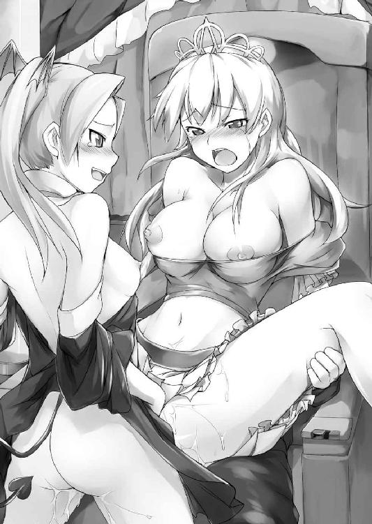
溜めに溜め込んだ精液はその濃度も量も勢いまでもが段違い。射精の間中、さながら尿道から固形物を吐き出しているかのような感覚だった。
「ひああっだめっ、なかっあかちゃ...んひぃぃっいっイクッイクうぅぅぅっっっ!!」
妊娠の恐怖に怯えながらも、濃厚精液に子宮口をぶち抜かれたシルヴィアもまた否応なく絶頂を迎えさせられる。
「お尻も一段と凄い締め付けだ......ほぉらこっちにも、たっぷり射精してあげるよ!!」
ドビュブッ！ ビュクッビュクビュリュビュビュゥゥッッ!!
続けざまにアナルへも、こちらはもう何度目かわからぬ子種汁がぶちまけられる。
「んんひいいぃぃ......いやぁぅっ今イッてるっイッてるのにぃぃ......まっまたっイクぅぅぅぅぅ!!」
膣内射精で果てているところに尻でも更に絶頂させられて。聖女は度重なる快感に眼を見開き舌を突き出して、ビクビクビクッとその豊満な肉体を激しく痙攣させ続けた。
すべてを終えた後、息を整えた魔少女がまずシルヴィアの下を離れ、続いて魔王が美肛から剛直を抜いた。そして抱え込んでいた聖女の身体をどさりとその場へと転がせる。
「ふぁっ......う、うう.........」
未だ連続絶頂の余韻に囚われながらも、聖女がゆっくりと碧眼を開く。そこにはちょうどこちらを見下ろすようにして立つ魔少女がおり、その紅い瞳と眼が合った。一度射精したためか淫魔の呪いは消え、少女の股間は元のつるりとした恥丘に戻っていた。
「リリス......どうして......？」
欲望のためだけに汚された聖女は腰が抜けてしまったのか、生まれたての仔鹿みたいに体液にまみれ立ち上がることもできない様子だ。赤絨毯の上で仰向けに倒れながら、それでも追いすがるようにリリスへ向けて手を伸ばす。
しかし魔少女はそれには応えず、転がるシルヴィアを冷たい瞳で見下ろし続けていた。
「さよなら、聖女様」
──やがて感情のない声で一言そう言い残した黒衣の魔姫は、ツインテールを揺らし踵を返して、その先で待つ魔王の腕の中へと融けるようにして消え去った。
第八章 蘇る聖女 -The Right from the Darkness-
「はぁうっ...いや...ぁ......もうっおっぱいぃ...搾らないでぇぇ......!!」
シルヴィアの悲痛な喘ぎが地下牢に響く。
魔少女の手ひどい裏切りによって破瓜を迎えたその後で。魔城の牢獄へと繋がれたシルヴィアは、彼女の処理を任されたタバルサから一昼夜にかけて辱めを受け続けていた。その姿は魔王に乱暴されたそのままで、無残に引き千切られた衣服は既に用を成していない。
「あらあら、まだ始めたばかりじゃないの。まだまだこれからよ。これからアナタが干からびるまで、たぁぁっぷりお乳を搾り取ってあげるんだから」
アーマーの胸当てを砕かれ胸元をはだけられた美姫は、両腕を縛り上げられ腰をくの字に曲げさせられた恥ずかしい格好で、その豊満な双球へ触手を巻きつけられていた。
乳房はパンパンに張り詰め、引き伸ばされた乳輪は薄紅色に色を淡くし、普段は陥没気味の両乳首も痛いぐらいビンビンに勃起させられている。
そんな乳房でとぐろを巻く、まるで綱のような太さと長さを持つ触手は、そのどれもが女淫魔の指が変化したものだ。
「んふふ、素敵でしょ？ お前が殺したデボラ様の亡骸から、大魔王様がアタシに移植してくださったの。こうすればデボラ様へのせめてもの弔いにもなるし、一石二鳥よね」
誇らしげに言いながら、女淫魔がグッと指先に力を込める。
ぎゅうっぎゅうっ......柔乳に巻きついた触手が食い入るようにめり込み、乳房が根元から先端にかけて搾り上げられぷっくり丸く膨れ上がる。
ぷしゅっぷしゅうぅっ！
「ひゃいぅんっ...やぁっ、お乳がまた...ひんっひぃんっ!!」
その途端、信じられないことにシルヴィアの勃起乳首の先端から、乳白色の母乳が勢いよくしぶいた。
リリスに孕まされた、わけではない。目の前の女淫魔の呪術によって、乳腺を活性化させられているのだ。
魔力を浴びせられた乳腺はジリジリと焼けるように疼き続け、搾乳に乳汁が迸るたび乳肉は蜂蜜漬けにでもされたように甘く蕩けた。
母乳を噴き出すその胸元の下方には、乳牛から搾った乳を溜めるような木桶が一つ置かれている。桶は既に半分までが乳液で満たされており、甘ったるい母乳の匂いを地下牢いっぱいに立ち込めさせている。それは彼女が一昼夜、淫魔に搾乳され続けた証だ。
「ほんとはあんたもリリス姫みたくおチンポ生やして、腰砕けになるまでザーメン搾り取ってやろうかと思ってたけど。やっぱりおっぱいにして正解ねぇ...ほぉら搾れば搾るほど、上等な精気がミルクになって出てくるじゃない」
ぎゅむっぎゅむっぎゅっぎゅっぎゅぎゅぎゅぅぅ......!!
乳裾から先端へ。とぐろを巻いた肉綱は凶悪な圧力で左右の乳房を交互にぎゅうぎゅう押し潰し、そのたび紅色の突起からは面白いほど大量の乳汁がビシュビシュと噴き出した。
「ううっ、いや...もうおっぱい......ひっ、吸盤きらいぃぃっ!!」
長きにわたる乳辱に、滑らかな白磁を思わせる美姫の乳房は熟れ頃の果実みたいに赤く色づいていた。そんな乳肌にも触手にびっしり生えた吸盤が絶えずキュポキュポと吸い付いており、不規則な責めで一時も気を休めることを許さない。
奥歯をギリギリ歯軋りさせて湧き上がる乳悦に耐え忍ぶものの、つい先ほどまで生娘だったシルヴィアが、邪淫を司る魔物の責めに抗しきれるはずもない。
元々林檎色のほっぺたは熱に浮かされたように真っ赤に染まり、全力疾走したばかりのように異常なまでの荒々しさで呼吸を繰り返す。
快感のあまり膝はがくがくと震えだし、全身自分のかいた汗でびしょ濡れだ。
それでもなんとか瀬戸際で堪えきろうとする聖女。そんな少女のいじらしい抵抗をタバルサはしばしニヤニヤしながら観賞していたが、やがて一気に責め手を強めた。
「ほぉらほらほら...そろそろまたイきそうなんでしょ？ いいのよ、好きなだけイって。その方がおっぱいの出もよくなるし......ほぉらこれで、お果てなさいな♥」
むにゅぎゅうっ、ぐにっぐにっ、ぎゅむぅぅぅっ!!
うねうね蠢く触手が、乳果実をもぎ取らんばかりに激しく食い込み、そこに生え揃う吸盤が牝肌目掛け一斉に吸い付く。
「ひああっだっいくっまたっまたおっぱい搾られてイクッ、イクうぅぅぅっっっ!!」
びゅーっ！ びゅしゅっ！ ぷしゅっ！ びゅしぃぃぃっっ!!
二つの乳房で桃色の閃光が瞬き、快楽が全身を突き抜ける。下穿きの中では触れられてもいない陰部までもがぷしっとはしたなく潮を噴き、魔王に仕込まれた桃孔が、飲まされた灼熱を反芻するようにヒュクヒュク卑猥に収縮した。
「うふふ、これまたいっぱい出したわねぇ。念願かなってアナタの精気をたっぷり味わえるわ......んふふ、練乳みたいに甘くっておいし♥」
乳首の先から滴り落ちた乳白色の水滴を、ぺろりと舐めて淫魔が笑う。
「はぁっ、あっ...んっはぁぁ.........ひんっ、いや...またおっぱいぃぃ......!?」
絶頂の余韻に荒い息をついている最中、休む間もなく触手はリズミカルな収縮を再開させ、柔乳はぶるんぶるんと波打ちながら更なる母乳を増産させられる。
（ううっ、もういやあ......わたくし...いったいどうしたらいいのぉっ......!?）
聖剣を失った今、シルヴィアは淫魔にいいように玩弄されるほかない。
シェリーは今もまだ、封印儀式の材料を集めるため大陸中を飛び回っている最中だろう。
リリスもその心を魔王に囚われてしまった。彼女を助け出せなかった無念さが、聖女の胸を内側からもキリキリと締め付けていた。
ドゴォォォンッッ!!
少女が後悔の念に苛まれていた最中、突如凄まじい地震が轟音と共に地下牢を襲った。
「ひっ、なに......？」
激しい揺れに晒されて、シルヴィアが不安げに呟く。その地鳴りはいつかお城の地下室で体験した、魔王復活を思い起こさせた。
「始まったわね......天界の門を開く儀式が」
天井を見上げ、淫魔が薄ら笑いを浮かべて言う。
「ひぅぅんんっ......てんかいの...ぅ...もん......？」
なおも継続する搾乳の喜悦に眉を寄せながら、タバルサの漏らした言葉が気になって聖女は喘ぎ混じりに聞き返した。
「アナタも一応当事者なのだし、知る権利ぐらいはあるかしら......ねえ、アナタたち人間は、アタシたち魔族が何を求めているのか知っている？ 知らないでしょうねえ......アタシたちの悲願、それは大魔王様を追放した天界への凱旋とその制圧よ。三百年前、聖女イヴを手籠めにしリリス姫を産ませたのも、聖邪の力を併せ持つ超越的な存在を生み出すためなのだから」
元より話好きの女淫魔であったが、今日の彼女は更に饒舌だった。
「聖女イヴ......リリスが、その娘......!?」
唐突に明かされた魔少女の出生の秘密に、シルヴィアは一瞬搾乳の刺激さえ忘れ驚愕の呻きを漏らす。
「そんなことも知らなかったのぉ？ ま、アタシもデボラ様の身体の一部を移植されて、その知識から最近知ったんだけども......リリス姫も、その身体にあなたと同じ聖女の血を流しているのよ。まあ見ての通り大魔王様の血の方が完全に勝っているみたいだけど」
ケラケラと笑いながら、淫魔は言葉を続けた。
「ともあれ神の血を引く聖女と大魔王様の血を同時に受け継いだリリス姫は、邪悪な魂を持ちながら天界の門を潜れる我ら魔族の救世主となるべき存在だったわけ。まあもっとも三百年前は結局聖女に邪魔されて、リリス姫はただの夜伽にしかならなかったけどね」
フフン、と鼻で笑った淫魔の言葉に、シルヴィアは凍りつく。
「よとぎ、って...それって......」
「あーら、アナタってホントなぁんにも知らないのねぇ。封印の中に閉じ込められた三百年の間ずっと、リリス姫は大魔王様のお相手をしていたのよぉ。あの仔はそれがよほどイヤだったらしいけど......正直理解できないわァ。アタシだったら三百年といわず千年でも二千年でも、大魔王様の逞しいお肉にめいっぱいご奉仕させていただくのにィッ」
言葉を紡ぐうちに主君の味を反芻したのか、じゅるりっ、と涎を啜るタバルサ。
「そんな、ひどい......ああ、だから...だからリリスは.........!!」
（自由になりたいって、そういうことだったの......!!）
リリスが魔王を執拗に憎み続けていた理由。魔少女の過酷な境遇を知らされて、ようやくシルヴィアはリリスの望みの真意を知る。
「あら、今更同情？ んふふ......シルヴィア、アタシがなんでわざわざこんなハナシをしてあげてるのかわかる？ リリス姫を絶望させ、純然たる魔族に昇華させたのは。聖女様、他ならぬアナタだからよ」
この上なく邪悪な笑みを満面に湛えて、女淫魔がここぞとばかりに言い放つ。
「え、わたくし...が......？」
覚えなき突然の非難に理由を問い返そうとした聖女だが、それよりも早く淫魔は言葉を続けた。
「あの仔は生まれて間もなく封印に閉ざされ、ほとんど外の世界を知らなかったの。物知りの振りをしていたけど、それも大魔王様と共有していた知識から得たかりそめの体験。本来のあの仔は生まれたての赤ん坊みたいなものだったのよ。そんな彼女にとって、大魔王様以外に初めてまともに口を利いたのがアナタだったってわけ」
淫魔の明かす真実に、聖女は驚きを隠せない。王宮育ちの自分だけが外の世界を知らないと思っていたのに、リリスもまた自分と同じだったのだ。
「だからこそ、アナタはきっと大切な存在だったんでしょうねぇ......自分の母親の血を強く継いでいたことも、その理由だったんでしょうけど。大魔王様はあの仔に、母親に捨てられたと思い込ませることで心を奪おうとしていたから、母親の面影を持つアナタへの依存も強かったようね」
そこまで話してから、タバルサはニィィッ、と底意地悪い笑みを作る。
「だけどアナタはあの仔を拒絶した。あの仔なぜだかアナタだけは自分を受け入れてくれると思い込んでたみたいだけど。ともあれそうしてアナタがあの仔に徹底的な絶望を与えてくれたおかげで、我々魔族の悲願はもうすぐ目の前に迫っているのよ」
淫魔の言葉を浴びた途端、それまで火を吹かんばかりに紅潮していた聖女の頬がみるみる青ざめてゆく。
「そんな...わたくしが...リリスを......？」
「そうよぉ、大魔王様の封印を解き、呪いをかけられた人々を救えず、最後の希望も自分で握り潰した......アッハッハ！ シルヴィア、それがア・ナ・タ♪」
追い討ちをかけるように、タバルサはねっとりとした口調で少女に止めを刺す。
（あのときリリスは何か言おうとしてたのに......わたくし、聞いてあげなかった）
純潔を奪われた時の記憶を呼び起こし、胸にチクリと痛みが刺した。
自分はリリスに犯された。それは紛れもない事実だ。
（だけどリリス、あのとき泣いてた......なんだかとっても悲しそうだった......）
それに元々リリスは自分のため、ここに来てくれたのだ──それもたった独りで。
とっても、怖かったはずなのに。
（そうよ、そこまでしてくれたリリスが自分からあんなことするわけないじゃない......!!）
リリスに陵辱された時、裏切られた、と自分は思った。でも拒絶されたリリスも自分と同じくらい、いやそれ以上に裏切られた気持ちだったのかもしれない。本当なら何があっても、彼女の言うことを信じ続けてあげるべきだったのかもしれない。
（なのにわたくし、何も聞かずにリリスにあんな酷いこと言っちゃった......）
シルヴィアは恐らく生まれて初めて、後悔という感情を呼び起こされていた。
どうにかしてもう一度リリスと話をしたかった。彼女に一言謝りたかった。
そしてできることならば、どうにかして魔王の手から助け出してあげたかった。
そのためには、なんとかこの地獄を抜け出さなくてはならないが、今の彼女にできることはあまりにも少ない。
（......もしもわたくしの血に聖女の力が宿っているのなら。お願い、力を貸して......あなたの子供を助けたいの）
うつむいて、かつての聖女へと深い祈りを捧げるシルヴィア。今の彼女にできること、それは奇跡が起こることを待つ以外になかった。
「あ〜ら、お顔を伏せちゃって。悲しくなってきちゃったのかしら？ それでいいのよぉ、絶望に震える精気はアタシの大好物なの。んふふ、絶望なさいシルヴィア。どのみちアナタは搾乳奴隷になって、ここで一生おっぱいを搾られ続ける運命なのだから」
淫猥な笑みを湛えたタバルサが、聖女の豊乳へと顔を寄せる。そしてそのまま乳汁と汗にまみれた甘酸っぱい肉果実を、大口ではむっと頬張った。
「ふぅぁっ...もっ、もおおっぱいすわな...あぁっ...ん、ひぃぃ......」
なんとかこの場を抜け出したいのに、こんなことをしている場合じゃないのに。身体は快楽にすっかり順応してしまっている。
壊れたように牝鳴きを繰り返すシルヴィアの哀願を無視して、女淫魔は乳房を食み、乳頭をチュウチュウといやらしく吸いたてて溢れる母乳を直飲みする。
「甘ぁっ♥ やっぱり搾りたては濃さが違うわぁ......ほら、こっちも味見させなさいよ」
ぎゅむっ。タバルサはもう一方の乳房も強引に引き寄せると、二つの乳先をぎゅっと中央に手繰り寄せ、二つ並んだ桃色勃起を一思いに舐めしゃぶる。その最中、
「あら......なにこれ」
淫魔の言葉と共に、首に細い何かが食い込む感触。タバルサが首飾りを引っ張ったのだ。胸元をはだけられた際、衣服に絡んで脇に追いやられていたのだろう。シルヴィア自身、そんなものを掛けていたことすら忘れていた。
「へえ、こんなのしてたんだ。それも二つも......こっちのは高級そうだけど、もういっこのはお姫様にしちゃ随分貧相ねぇ......なんにせよ、おしゃぶりの邪魔だわ」
ぶちッ。
淫魔は何の気なしに聖女の首に下げられていた二つの首飾りを引き千切った。
「ぎゃあっ!?」
しかし次の瞬間、タバルサは悲痛な絶叫をあげていた。途端にシルヴィアを縛めていた触手が拘束力を失い、少女は乳桶目掛けて盛大に突っ伏す。
「んくっ、いたぁぁっ......ああっ!?」
掌を打った痛みに呻きながら、顔を上げたシルヴィアが見たものは、片腕を押さえて苦悶する女淫魔の姿であった。抱え込んだその腕からはシュウシュウと黒い煙をあげている。
「ぐあああっ、なによっなんなのよいったいぃっ!?」
訳がわからず喚き散らす女淫魔の指先はぐずぐずと泡を噴いて崩れだし、やがて肘の辺りからぼとりと地面に落下した。
問われた聖女もまったく事態を飲み込めない。しかし溶け落ちた魔肉の方へと眼をやると、そのすぐ傍に今しがたタバルサのもぎ取った首飾りが落ちているのを発見した。
小さな飾りのその中央はまるで内側に火を孕んだように力強い灼光を放っている。それは初対面の時、シェリーに半ば強制的にかけさせられた首飾りだった。
（そういえばこれ...魔除けだって言ってたっけ!!）
エルフの言葉を思い出し、藁にもすがる思いで首飾りを拾い上げる。触れたその本体は仄かに温かい。やっぱりただの御守りなんかじゃない。シェリーが言うところの、妖精族の英知を集めた対魔族の魔法道具に違いなかった。
見上げればタバルサは既に全身が水風船のようにいびつに膨れ上がり、人の形を成していなかった。
「くそっ、聖女め、せいじょめええええっっ!!」
ぶしゃあっ!!
怒号と共に、女淫魔は破裂した。肉は四方へと飛び散り、骨の一片すら残らない。
「死んだ......のよね.........早くリリスのところに行かなくちゃ」
突然のことに呆然としていたシルヴィアだったが、我に返るや首飾りを握り牢獄の出口へと駆け出す。女淫魔の慢心のおかげで、幸い牢に鍵はかけられていない。
転がるようにして脱獄した聖女は曝け出された胸元もそのままに、上へと続く石階段目掛け全速力で駆けだした。
だがそのとき、背後で何か水っぽい音が響いた。
ふと不安になって軽く後ろを振り返る。碧い瞳が映したものは......。
「きゃあっ、ば、化け物ォッ!!」
おぞましい光景に、今更ながらそんな言葉が口を突いて出た。遠方の獄中に散乱していた肉片が、蛭のように蠢いていたのだ。ビクビクと痙攣するようにもんどり打ちながら、肉は聖女を追いかけるようにざわざわ地面を這いずり回り、やがて一つの巨大な肉塊へと変化しつつシルヴィアへと迫っていた。
「や、やだ来ないで......」
どうにかして逃げきろうと階段へと脚をかけたものの、時を同じくして肉団子の表皮を突き破り触手がブシュリと飛び出した。
肉紐は一直線にシルヴィアの首へと巻きつき、その細首をぎゅうぅっと絞め上げる。
「ぐぅっ......!!」
容赦のない首括りに、苦悶の呻きが喉を迸る。幸い触手には一撃で首をへし折るほどの力はないようだったが、こちらもか弱い乙女の細首、そうそう長くもちはしない。
「見たわね...この醜い姿を...アタシの、本当の姿を.........この姿を見た者は、何人たりとも生かしておくわけにはいかないわ......今この場で、喰い殺してアゲル」
かつてタバルサだったモノが、それとは思えない喉の潰れただみ声で吠え立てると、
バクンッ!!
ずりずりとにじり寄る肉団子が、その真ん中からぱっくりと左右に割れた。巨大な女陰にも似た形状の切れ込みがグパアッ、と大口を開く。中では内臓のような濡れ肉がビクビクと脈動し、切れ込みに沿って無数の牙がびっしりと生え揃っていた。
「ひっ......!?」
食べられる！
人間が滅多に味わうことのない捕食の恐怖に、少女の全身が萎縮した。
ギチギチ......同時に首へと食い込む弾力性の肉紐が、軋むような音を立てる。
（うぐぅっ......や、だ...わたくし、本当に...ここ、で......し...ぬ.........？）
薄れ行く視界に死を予感し、肉紐を外そうとしていた手がゆっくりと力を失う。血の巡りが悪くなり、身体の末端から急速に体温が失われていった。
しかしその刹那。右の掌の中にある首飾りだけは急速に熱を孕みだす。
（お願い、もう一度だけ、わたくしを助けて）
胸の中で祈りを捧げ、シルヴィアは決死の思いで手の中の首飾りを、目の前の肉塊に開いたバケモノじみた大口目掛け放り込む。
「...んぐっ......一体何の悪あがき......」
シルヴィアの行動をせせら笑おうとしたタバルサの動きが止まった。
「あ......あああっ!? ぐあぁっあつっ熱いっあついいぃぃいっっ!?」
肉塊の大口が苦しげに、獣じみた咆哮をあげる。表面が火に炙られたように泡立ち、ぐずぐずと紫煙を立ち上らせて崩れ始めた。首にかけられた触手も一気に緊張を失い、シルヴィアはすぐさまそれを引き千切り払い捨てる。
「いやああっ、なんでぇっ......なんでアタシとけてんのよおおぉぉおっぉっっっ!!」
内側から溶解してゆく肉団子は、どろどろに崩れ落ちながらもまだ自我を失わない。既に蠢く肉泥と成り果てた女淫魔はのたうつように石畳を徘徊し続けた。
その声はもう言葉にもならずあうあうというケダモノの呻き声しか発さないが、しぶとく生き長らえようともがいている。
しかしそれも長くは続かなかった。やがて床に開いた排水溝へ触れると、
「うごあああぁぁぁっっ!?」
自重を支えられずにそのままドボドボと、穴の奥深くへ首飾りもろとも雪崩れ落ちていった。断末魔の残響音だけを残して、タバルサは首飾りごと跡形もなく消え去った。
「はあっ、はぁっ......こっ、今度こそ死んだ、かしら.........？」
今の今まで絞められていた首を押さえてけほけほと咳き込みながら、背後を見やる。
「とにかく、先を急がないと......待っててね、リリス」
首飾りを失うのは痛かったが、どのみち魔王相手に効くとも思えない。シルヴィアは胸元を整えながら立ち上がり、改めて階段を登り始めた。
※
淫魔を討ったシルヴィアは、ひたすら階段を上へと登る。目指すは魔王ヴァランディア。どうやってヤツに対抗できるかとか、そんなことはまったく考えていなかった。
タバルサは魔王が儀式を始めたと言った。シェリーの到着を待っているような時間の余裕は既にないのだ。
その代わり、聖女には恐怖の感情もなかった。
彼女を突き動かしていたのはたった一つの感情だけだ。
（リリス待っていて。すぐに、すぐに行くから──）
リリスは自分を助けようとしてくれた──たとえそれがうまくいかなかったとしても。
だから今度は自分が、彼女を助けなくてはいけない。
絶対に。
息を切らせ辿り着いた最上階、再び聖女は地獄の扉を押し開く。今度は勝手に開いてくれず、美姫は体重を預けて渾身の力でそれを動かした。
ぎぎぎぃぃっっ......重たい音と共にようやっと扉は動きだし、わずかに開いた隙間からシルヴィアは玉座の間へと転がり込む。
果たして、そこには魔王ヴァランディアが独り立っていた。玉座には着かず、部屋の中央で彼は両手を広げ空を仰ぎ見ている。
魔王は天を見上げたまま、入り口で倒れ込む聖女にその瞳だけをギロリと向けた。
「おや、これは新しい聖女殿。タバルサの命の炎が消えたから何かあったと思っていたが。どういう手を使ったか知らないが、せっかく逃げおおせたのにどうして再びここへ来た？」
魔王は聖女の再訪を驚きをもって迎えたらしく、心底意外そうにそう尋ねてくる。
「そんなの決まってるわ！ 今度こそ、リリスを助けに来たのよ!!」
言って聖女は黒衣の少女の姿を探す。しかし部屋には魔王以外の人影は見当たらない。
「リリスを？ キミの純潔を奪った魔族の仔を、かい？」
魔王はますます意外だと言わんばかりに肩を竦めた。
「うるさいっ！ 全部お前がさせたことじゃない!! リリスをどこへやったのよ!?」
ダンッ！ 苛立つように赤絨毯を踏み鳴らし、眉を逆立てて魔王相手に詰問する。
「どこへもやってやしないさ。ボクの可愛い娘なら......ほら、あそこだ」
言ってヴァランディアは天を指差す。すぐさま天井を仰ぎ見ればそこには。
「リリス......」
シルヴィアが一言呟き言葉を失う。天井は既になく、曇天が空を覆いつくしていた。先ほど感じた衝撃は、ここの屋根を吹き飛ばした時のものだったのだろう。
屋根なき天井から覗く灰色の空の中に、魔少女はいた。彼女は部屋の壁伝いに生い茂った樹木の蔦に搦め捕られ、両手を広げた格好で天高く吊り下げられている。
その瞳は硬く閉ざされ、表情はない。胸元では眩い赤光を放つ巨大な球状の何かが滞留しており、その波動を受けてプラチナブロンドのツインテールがばさりばさりと激しく宙空を掻き毟っている。
よくよく眼を凝らしてみれば、光の球の中心には破魔の聖剣が取り込まれている。
「リリスに......お前ッ、リリスにいったいなにをしたのよッ!?」
しばしあっけにとられていたものの、聖女は魔王に激しく詰め寄る。
「なあに、三百年前の続きをね......あのおしゃべりのタバルサと一晩いたんだ、キミだって少しは聞いているだろう？」
ヴァランディアは三日月のように瞳を細め、天井で血色の光を抱く娘をいとおしげに眺めつつ言葉を続ける。
「間もなく聖剣は消滅し、天を穿つ鍵が生まれる。エネルギーも充分さ......ほら、見てごらん。世界中から人間どもの命の灯が集まってきているだろう？」
人間どもの命。魔王が漏らしたその言葉に、聖女はごくりと唾を飲む。
「まさか...あの赤いのって......」
「ようやく気づいたかい？ そう、あれこそボクが木に変えてやった人間どもから吸い上げた、生命そのものさ！ ボクが単なるお遊びで、人間どもを木に変えたとでも？ まさか。すべてはこの時のため──神器たる聖剣と神が最後に造った生き物・人間の命、それらが聖邪双方の魂を持つリリスの手を経て交わり、鍵は完成する」
言いながら恍惚の表情で魔王はスッと両手を広げ、天空に吊るされた魔少女を仰いだ。
「リリスッ！ お願い眼を開けて！ わたくしの話を聞いて!!」
精一杯の大声で、美姫が悲痛な叫びをあげる。それを耳にした魔少女が、ゆっくりと紅い瞳を開いた。
「シルヴィア......？」
眼下の聖女を認めたツインテールの少女がぽつりと呟く。しかしその眼は冷ややかだ。
「......あんたいったいなにしに来たの？」
声色からも拒絶の意志がありありと見て取れたが、シルヴィアはぐっと堪えて紅い瞳から視線を逸らさない。もう逃げないと決めたのだ。
「リリス、ごめんね。わたくしが絶対に、助けてあげるから」
聖女の言葉に、しかし魔少女は無表情のままかぶりを振る。
「無駄よ。すべてが遅すぎる......見ての通り聖剣はお父様の物になりつつあるわ。だいたい丸腰のアンタに、今更なにができるというの？」
「その通り。理解に苦しむな......キミはいったい何をしにやって来たんだい？ もう一度抱いて欲しいというのなら、喜んでリクエストにお応えするけどねぇ？」
バッ。背後から魔王に抱きすくめられる。嫌悪感に総毛立つが、震える膝を叱り付け、ぐっと顎を反り背後の悪魔を睨みつけてやる。
「わたくしを抱きたいのなら、好きにすればいいわ！ どうせわたくしにはもう、お前をどうにかする力なんてないんですもの......だけど無駄じゃないわ！ だってわたくしがこうされている間は少なくとも......リリスは酷いことされずに済むもの!!」
「!!」
シルヴィアの打ち明けた再来の真意に、魔少女は愕然としたように紅眼を見開き薄い唇を震わせた。
「ば、ばっかじゃないのアンタ......そんなの、そんなのほんの少しの間じゃん！ アンタもあたしも、最後はお父様の所有物になるのよ!?」
「それでも、いいの。リリス...わたくし聞いたの、あなたのこと......ごめんね、なんにも知らなくって。だからもう絶対、あなたを独りになんてしないから」
真剣な眼で言い放つ美姫に魔姫は戸惑いを隠せない。
そのとき背後から抱きついていた魔王が、肩を震わせ笑いだした。
「くっくっくっ......ブラボー!! まったく素晴らしいじゃあないか。友情、愛、利他的精神に基づく自己犠牲。うん、反吐が出るよそれ......単なる玩具のくせに、生意気だぞ」
そう語る魔王の表情はしかし、まったく笑ってなどいない。むしろ幾重にも憎しみを塗り重ねたような憎悪の相がそこにあった。
「まあそんなに抱いて欲しいなら、今度はしっかりと種付けして確実に孕ませてやるよ」
バリィィッ!!
魔手がシルヴィアの胸元を引き千切り、再び乳房がぷるんと露出する。その反動を浴びただけで、淫魔に一晩開発された乳峰は深い疼きを呼び起こされた。
「おやおや、こりゃあ随分と乳臭いな......どぉれ」
ヴァランディアはひらりと身を翻すと聖女の前へと躍り出る。そのままひょいと身を屈め乳房に顔を埋めると、伸ばした舌で陥没乳首をほじくり始めた。
「ひゃっくぅっ......んっ...ぁぁ.........」
乳肉に埋没しているため目視できないが、魔王の舌はまるで蛇のように細く、柔乳の奥で縮こまっていた乳突起へと絡みつき、強引に外へと向けて引っ張り出されてしまう。
「んひゃぅっ!?」
ぴゅっぴゅぅっ！
乳首が外気に触れた瞬間、引っ張り上げられた反動で乳先からミルクの雫が零れ落ちる。乳腺を内側から刺激され、はしたない牝鳴き声が聖女の口から漏れ出した。
「へえ、タバルサが死んで呪術は解けたろうに、まだ母乳が出るのか......こりゃ面白い」
母乳の甘ったるい匂いを楽しみながら、魔王はもう一方の乳房にも同様の愛撫を施す。
「くぅぅっ......んっ...んひっ.........ひゃっおっぱい......ああっ、だめでちゃうぅぅっ!!」
ぷしゅうぅぅっっ！
同じくぴょこんと突き出た乳勃起は、先ほど以上の激しい放乳で悪魔の相貌を強か打った。
「ふふ、美味しいじゃないか......これを飲んで育つんだからこれから造るボクたちの仔は幸せ者だ」
魔王は頬に垂れたミルクをぺろりと舌で舐め取ると、再び巨乳へ顔を寄せ、餓えた赤子のように激しく乳房を吸いたてた。
ずちゅぅっ、ぢゅっちゅうっぢゅちゅぅぅぅっっっ!!
「ふひぁっ...んぁっ、むねっあっ...はぁぁっんっ......」
本来は愛する赤子に与えるべき母乳、それを最も憎むべき魔族の王に略奪されているというのに。吸い付かれるたび乳腺が焼け焦げたように熱を持ち、息が止まるほどの快感に目の前が白く霞んだ。
悪魔は一通り聖女のミルクを味わうと、そのまま乳房から臍にかけてゆっくりと舌を這わせてゆく。途中臍孔まで下ってくると、戯れに形よい窪みへと舌を捻じ込み、くりくりと弧を描くように舐った。
舌は更に南下を続け、下腹部に幾度となく口付けを繰り返す。
「はんっ...だめ、そんな......やりかたぁぁ.........」
まるで肉越しに子宮を愛撫されているようで、屈辱ながら腹中に熱い何かを感じてしまう。粘膜よりは鈍感で、他の部位より敏感な場所への愛撫はなんともいえないもどかしさで少女を苛んだ。
「ここはまた一段と、恥ずかしい匂いをさせているね......下着越しでもよくわかる」
長い時間をかけようやく股間まで到着した魔王は、股布に顔を寄せいやらしく目を細めた。
「そ、そんなこと......」
匂う、と侮辱され思わず反論しようとしたシルヴィアだったが、それを遮るようにして悪魔はつるり、と少女の下穿きを引きずり下ろした。
汗と愛液でぐしょ濡れだった下穿きは、秘唇との間に粘つく白い愛蜜の糸を引いた。股座が外気に触れた途端、むわっ、とむせ返りそうなほど生々しい女の匂いと、それに混じってわずかなアンモニア臭が辺り一面に立ち込める。
（や、やだ......わたくし本当に、臭う.........）
丸一晩、シャワーも浴びていないのだから当然といえば当然なのだろうが、自分の体臭を意識して、美姫はどうしようもなく恥ずかしい気持ちにさせられた。
ずり下ろされた下穿きの中から顔を出したのは、ぷっくりとした丸みを帯びた肉土手とそれを保護するブロンドの恥毛。肉はうっすらと赤みが差し、薄い陰毛は既に愛液の雫にまみれ恥丘にぴったりと張りついていた。
「くふぅぅんっっ...やっしたっ、そんなとこ...舐めちゃやっあはぁぁんっっ!!」
はぁむっ......ずじゅっずるるっ...じゅるっじゅるっじゅるるぅぅっっ!!
わざと大きな音を響かせ、魔王は貪るようにして聖女の女陰を啜り始めた。予期せぬ場所への肉責めに、聖女はブロンド髪を掻き乱し、おとがいを仰け反らせ恥声を迸らせる。撒き散らされる汗の雫が、甘酸っぱい牝臭を大広間中に振り撒いた。
「あひっんっああっやぁっ、おまめえっ、んぁっ、スリスリするのっだ...めぇぇ......！」
腰を突き上げ喉を仰け反らせるブリッジのような姿勢で、美姫はひたすら股座を貪られ続けた。舐り責めの最中、魔王の掌が内股や下腹部をさわさわと愛撫し、そのたび身体中を喜悦の電気が突き抜けて、より大量の蜜液で魔王の喉を潤した。
「ぷはぁっ......ちょっとほぐしてやっただけでもうこんなにドロドロにして。やっぱりスキモノだった聖女の血がそうさせるのかな？」
ようやく秘唇から口を離した魔王は蔑むように言いながら、自らの股間に手をやって既に充分勃起している赤黒い怒張を取り出した。
「うあ...あ......」
ビクッビクッとしゃくりあげる怒張を前に、シルヴィアが恐怖におののく。愛しい人のモノならいざ知らず、自分を犯そうという牡器官など何度見ても慣れるものではない。
「さあ、挿入れてあげるよ......」
グイッ。張り出した亀頭が姫割れを掻き分け、膣首を捕らえた。そしてそのまま一思いに刺し貫かれる。
ズブズブズチュプニュプゥッッッ!!
「ふあ...あっ、あぁぁうぅぅぅんっぅぅぅ.........!!」
グッと膣壁が圧迫され、下腹部全体が押し広げられる感触。胎内で脈打つ確かな他者の異物感。ただただ痛いのとそこから顔を覗かせる快楽に訳もわからず翻弄された処女喪失の時とは違い、良くも悪しくも侵入した牡の感触が粘膜越しにしっかりと感じられた。
（ああ...挿入れられちゃった......わたくし魔王に、汚されてる......!!）
神聖な場所を最も悪しき存在に蹂躙されて、ブロンドの美姫は碧眼を潤ませ下唇をギュッと噛み締めて汚辱に耐え忍ぶ。しかし同時におぞましい肉棒が股座で脈打つたび堪えきれないほどの喜悦が瞬き、姫君の可愛らしい小鼻はひくひくと動いてしまうのだった。
「へえ、二度目にしては......入り口はきついくせに、膣内は熱くてどろどろしてて随分と具合がいいねえ。ほら、こうしてやると中の肉がギュッギュッて締め付けてくる」
魔王が軽く腰を揺さぶるとエラに掻き乱された肉襞が蠢き、子宮の底の辺りから途方もない快感が湯水のように湧き上がった。
「ほら、もう頬が緩んできた」
魔王の掌がシルヴィアの相貌を撫でる。
「ふぇぁっ......ひっ、ちがっ......」
指摘され、自分が淫らな呆け面を晒しているのに気づかされ、慌てて顔を背ける聖女。しかしヴァランディアはそれを許さず細い顎を持ってぐっと正面を向き直させると、食らいつくようにして少女のぷるんとした唇を奪う。
「はむっ...ふぁっんぐっ......んふぃゃっ...んちゅぐっ......んっふぅぅ.........」
魔王は情熱的な口付けでシルヴィアの唾液を啜り上げ、反対にその口腔へと魔性の体液を流し込む。ヌルヌル舌を絡められながら、美姫はそれを飲み下すしかない。交わりながらの接吻はシルヴィアに、身も心もすべてを奪われたような錯覚に陥らせた。
ぬぶっぬぷっぬちゅっずにゅるっ......覆いかぶさった魔王が深いストロークで腰を使い始める。淫魔による乳辱で煽られ、更に前戯で昂ぶらされたその結果、シルヴィアの肉孔は充分にほぐれきっており挿し込まれたペニスをスムーズに受け入れていた。
「ふぁあぅっ......だめ、だめぇぇ.........」
ペニスがもたらす甘美な突き上げに、ブロンド髪を振り乱し、聖女は必死に抗い続ける。
「ふふ、抵抗しても無駄だよ......キミの身体に流れる淫売の血は消せないんだから」
腰を激しく打ち込みながら、魔王は美姫の肢体をじっくりと愛撫しだした。勃起乳首をそれの漏らした母乳でもって、にゅるにゅるくりくり弄ばれる。ミルクをまぶした掌で乳房が力強く捏ねくられ、対照的な繊細さで首筋をさわさわと擽られた。
背筋は舐めるようになぞられ、弧を描くように尻たぶを撫で回される。縦横無尽に身体中を這い回る掌の感触は、まるで無数の男に嬲られているかのよう。とても一人の男のものとは思えない。そしてそのどれもが、憎らしいほどシルヴィアの感じやすいところを探り当て執拗に責め立ててきた。
「んはっ...あっあっああぁあぁぁ......だっ...めぇぇ...もう、腰うごかしちゃぁぁ......！」
（やだ...きもちっいいぃっ...魔王にっ乱暴されてるのにっ...いいっいいぃぃぃ.........!!）
全身を襲う愛撫に口からは甘い喘ぎが立て続けに溢れ、刺激を受けるたび肢体をぴくんと飛び跳ねさせる。シルヴィアはもはや、叩き込まれる快感を否定できなくなっていた。
「すぐにもイキそうって顔してる割にはなかなか強情だな......それもまた前の聖女譲りといったところなのかな......それじゃこういうのはどうだい？」
挑発的に言いながら、魔王は牝腰を抱えつつそのままごろんと仰向けに寝そべった。反動で、聖女はヴァランディアの腰に跨りその上に乗る格好にさせられる。
ズプリュィィッ!!
「ふはぁあぅっ...ぁっ、あう...うぅぅぅぅっっんっっ......!!」
（ふっ、ふかいぃぃっ......おなかの、奥まで...と、届いてるぅぅ.........!!）
自重で肉根がますます膣道深くへめり込み、亀頭先端が子宮口を圧迫する。胎内の最奥まで蹂躙される激感に、聖女は深い喘ぎを漏らした。
「腰を動かして欲しくないんだろ？ なら今度はキミが腰を振るがいい」
男の上へと跨らされて、シルヴィアはしばしどうすることもできずに魔王の胸板に両手を置いてじっとする。
股座を貫く肉の脈動だけがリアルに伝わってくる。腰骨はうずうずと疼き、膣道はヒクヒク痙攣し、亀頭の先端と触れ合う子宮口は気が触れそうなほどの飢餓感を孕んでいた。
（やだ...おなかの奥の方、うずうずしてる......いやなのに、どうして.........？）
魔王の言葉通り、腰を振りたい。そうすれば身体を蝕むそれらすべてから解放される。
（でも、そんなのできるわけないじゃない.........!!）
魔王に尻を預けたまま、肉欲と矜持との間で聖女は葛藤していた。気を抜けば勝手に動きだしそうな牝腰を、内股で男の腰を挟み込むことでどうにかやり過ごしていた。
とはいえそんなはかない抵抗を、黙って見過ごす相手ではない。
「ほら、なにボーっとしてるんだい？ 初めてだから、お手伝いして欲しいのかな？」
ずぬっ...桃孔に灼熱の異物感が瞬く。
「んきゃぁうっ、いやっおしりぃっ、ゆびっゆびはいって...ふひいぃぃぃっっ!!」
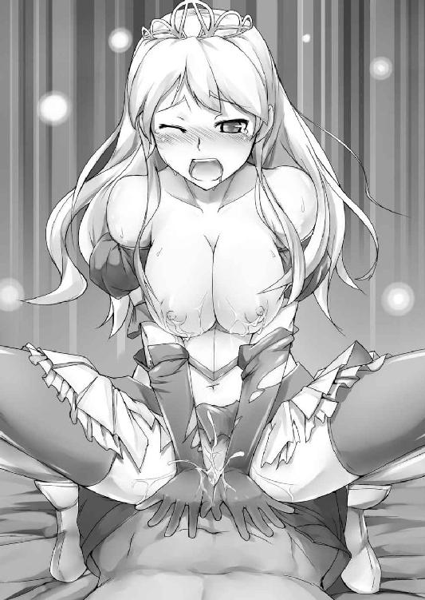
排泄孔をえぐられて、反動に桃尻がプリンと飛び跳ね、悲鳴が喉から搾り出される。
躾けられた肉菊は、人差し指と中指の二指を根元まで一気に飲み込んでしまう。ヒリつくような肛悦と、排泄を見守られているような錯覚のもたらす激しい恥悦が桃谷間から湧き上がり、美姫の肉穴がギュウゥッと激しく収縮した。
「そうそうその調子......後ろが締まると前もギュウギュウ咥え込んでくるよ」
ぬぽぬぽと肛門をほじくり返しながら、空いたもう一方の手は、結合部からぴょこんと飛び出す剥き身の肉真珠へと向けられた。脆弱な快楽中枢をその鋭い爪先で小突くと、そのまま容赦なくガリガリと引っ掻き始める。
「きゃああぁっっ！ ひぁぅっやっ、ひっかかないっでっあひっ、いぃぃ......!!」
神経の束へと施される容赦のない責めに、牝腰がビクンビクンと激しく飛び跳ね否応なく抜き差しを苛烈なものへと変えてゆく。
「ひああ...や、だ......こしぃっとまっとまらな、ひぃぃぃ......あっ、んはぁぁぁ......」
一旦火のついた腰振りは陰核への刺激が失われた後も止まらない。薄紅色に色づいた巨桃をぐりんぐりんと躍らせて、美姫はひたすらヌチヌチと卑猥な挿抜を繰り返した。
「ほぉらとうとう自分から腰を振り始めたね......やっぱり淫売の子だ」
上半身を起こした魔王はぶるんぶるんと跳ね踊る乳果実へとかぶりつく。そしてそのまま彼自身も、下から激しく腰の突き上げを再開させた。
「んひいぃぃいっ、ちがっわ...たくしぃぅっそんなんんじゃっにゃひぃぃっっ♥」
骨まで揺さぶる激しい抽迭に、子宮の奥では水風船が割れたみたいに一気に快感の波紋が広がった。喜悦は相手への嫌悪感を飲み込み、絶頂を望む肉欲だけが肥大化してゆく。
「声も可愛らしくなってきたな......ほらほら、ここがいいんだろう？」
言って魔王は尿道裏、陰核の根元が息づく女の快楽中枢を一気呵成に責め立てた。
「はぁああっ♥ なっなにぃっ、ひゃあんっ、ひんっ♥ ひぃいんっっ♥」
目ざとい魔王に勘所を探り当てられ、亀頭のカリで集中的に擦りたてられて。声は発情の音色を深くし、潤んだ瞳にははっきりと情欲の炎が揺らめいた。
（ずるいっこんな気持ちよすぎるのなんて......が、がまんなんてむりよぉぉぉっ!!）
強引に理性のタガを捻じ曲げられて、一挿しで意識が飛びそうなくらいの激悦に訳がわからなくなる。盛りのついた牝猫みたいに、美姫はひたすら激しく喘ぎ続けた。
「よほどここがお気に入りみたいだね、擦りあげるたびに膣内がうねってるよ......さあ、このまま一番奥で射精してやろう。一度で間違いなく孕むことのできるようにね」
ずくぅぅっ、ずくぅぅっ......急所を摩擦する責めはそのままに、魔王が深い突き込みを再開させる。
「うぅあぅぅ...う、あっあかちゃんっ...だめ、それは......だめぇぇ.........!!」
快感で呆けていた聖女も、妊娠の恐怖を煽られ喚きだす。それでも刺激に餓えた子宮を打たれるとジィンッと快感で下腹部が痺れ、牝腰もまたくいくいとはしたなく踊り始めた。
（だめ、あかちゃんはだめ......リリスみたいに、かわいそうな目に遭う......そんなのダメ、ぜったいに、絶対にダメェェェッッ!!）
しかしその悲痛な思いとは裏腹に、聖女の身体は牡が引き抜かれる瞬間腰を引き、突き込まれるのと同時に股座を迫り出して抜き差しをより深く味わおうとしてしまう。発情した牝の肢体は理由や相手などお構いなしに、新鮮な子種を欲しがって淫らに悶えていた。
「フン、口ではなんと言おうとやっぱり淫乱だ...ほらっ、これで......孕んじゃえ!!」
ズニュルブプグググゥゥゥッッッッ!!
怒張が聖女を深く貫き、先端の鈴口が子宮口へと力強く押し付けられる。
そして、そのまま。
びゅるっびゅっびゅくっびゅぷびゅぷびゅびゅびゅぅぅっぅっっっ!!
宣言の通り、悪魔はシルヴィアの胎内目掛け大量の魔精をぶちまけた。
「ひぃんぁあああっイクッ♥ いやぁっ...イクのっイっちゃううっぅぅうっっっっっ!!」
灼熱のマグマを身体の一番深いところへと届けられ、背骨が折れそうなくらい反り返りながらシルヴィアは絶頂させられた。
子宮に射精を受けるたびビクッビクッと激しくその身を悶えさせ、弾けるようにたわんだ乳房からは、またもはしたないミルクが滲んで汗と混じって四散した。
その碧眼は既に現世を見てはおらず、ブロンドのほつれ毛を頬に張り付かせ娼婦さえも敵わぬほどに淫猥な表情で、大陸随一の美姫は受精の時を迎えさせられた。
（射精された......わたくし、妊娠させられた...赤ちゃん、できちゃった.........）
憎い相手に孕まされながら絶頂の極みに達する。女としてこれ以上ない屈辱を味わいながら、シルヴィアは下腹部の疼きに恍惚としたまま打ち震えるしかない。
ずにゅっ......ぬぽぉぉっ。
しばし射精の余韻に浸っていた魔王が、ようやくペニスを引き抜いた。怒張が抜き去られた途端、ぱっくりと口を開いた陰唇からこぽこぽと白濁液が逆流し尻谷間を汚す。
どさり。
魔王はまるで物でも扱うように、陵辱し終えたシルヴィアを床の上へと投げ捨てた。
「んっくぅぅ......」
背中を打った痛みに呻きながらも、その刺激で今までモヤがかかったようだった意識と視界が少し開ける。魔王は既に一物をしまい、また元の悠然さでもって穢れた聖女を見下ろしていた。
「ふふ、いい味だったよ......さあ、キミもそこでゆっくりと観覧してゆくがいい。今まさに天界の扉が開き──」
謳うように語りだした魔王だったが、言葉はなぜかそこで途切れた。
絶頂の余韻に晒される美姫はそれを気にする余裕もなかったが、しばらくして彼女の頬を何か温かなものが濡らした。同時に鼻腔を擽る鉄の臭い......いや、それは血の匂い。
「な、に......」
この段になってシルヴィアも、ようやくゆっくりと顔を上げた。
そして、見た。
目を見開き口を大きく裂いて驚愕の表情を浮かべる魔王の姿を。
その胸板を刺し貫き絶え間なく青い血を滴らせる、聖剣の姿を。
※
「リリ......ス.........!?」
驚愕の呻きと共に、青い血がゴポリと魔王の口から溢れ出た。そしてその背後には。
「フン、どう？ 飼い犬に手を噛まれる気分は」
挑発的な紅い瞳をしたツインテールの魔少女が、聖剣を魔王の背へと突き立てていた。
「忘れてたでしょ、あたしも聖女の血を引いてるってことは......その気になればあたしにだって、聖剣を使えるってこと」
「ばかな...どうして...どうしてボクを裏切った.........命が惜しくないの......か？」
信じられない、そんな表情で背後を振り向こうとする。しかしそれより早く聖剣が更に深く心臓をえぐり、ヴァランディアの動きは制止された。
「やっとわかったのよ。お前に依存して生きていたって、あたしの望んだ未来は来ない。それならあたしはあたしの信じたように生きる......たとえここで死んでもね」
どさりっ、娘による決別の言葉を聞いた途端、魔王は力尽きシルヴィアの上に倒れ込む。
「ふふ...ざまあ、みなさいよ──」
がくんっ、魔王の最期を見届けた魔少女もまた膝を突き、そのまま力なく横になった。
「リリス!!」
覆いかぶさるヴァランディアの亡骸をどうにか引き剥がし、聖女はすぐさま魔少女の下へと駆け寄る。
ありがとう、ごめんなさい......言いたい言葉は数えきれないほどあった。
なのに、近寄ってみたリリスの表情に生気はなく、指先から二の腕にかけては陶器のように細かいヒビがびっしりと刻まれていた。しかもヒビはパキパキと乾いた音を立てながら、急速に腕を駆け上り肉体を侵食している。
「そ、そんな......」
（聖剣に触れた魔族は......消滅する......!!）
魔少女自身幾度となく避けていた聖剣との接触。その意味するところを目の当たりにして、シルヴィアの碧眼が一気に潤んだ。
「なんで、なんでこんな馬鹿なことしたのっ!!」
リリスをその腕に抱き上げて、涙ながらにシルヴィアが叫ぶ。その身体はびっくりするぐらい軽かった。
「だって、あたしみたいな目に遭う子はもう...あたしだけで充分だもの」
その言葉にシルヴィアは、彼女が自分のために命を投げだしたことを知らされる。
「うあ...わ、わたくしの...わたくしのせいで......うわあああああっっっ!!」
大粒の涙がいくつもいくつも零れ落ち、魔少女の蒼白い頬を濡らした。それでも美姫は堪えきれず、リリスの胸に顔を埋め声をあげて泣きじゃくる。嗚咽する聖女をリリスはしばし見上げていたが、やがてその紅い猫目が優しく笑った。
「だいたいあたし、このままじゃ囚われのお姫様みたいでカッコつかないじゃないのよ......あはっ、でもちょっとカッコつけすぎたみたい。おかげでごらんの有様よ」
ガシャンッ。甲高い音が鳴り響き、重みが更になくなった。恐る恐る魔少女の身体に視線を落とせば、既にその腰から下は赤絨毯の上で粉々になっていた。
しかし当のリリスは、痛みさえ感じていないように空を見上げる。
「見て......人々から吸い上げられた命の光が、大地へと還ってゆく。いずれ元の人々へと戻ってゆくはずだわ...よかったわね、もうすぐ魔王の呪いも消えるわ。アンタもさっさとシェリーと落ち合って、穢れを浄化してもらうのよ......今ならまだ間に合うわ」
美姫を元気づけるように呟くその口元にも、うっすらとヒビが入り始めていた。
「でも、リリスが、リリスは......」
どうにかして侵食を止めようとヒビに触れるも、却って亀裂を増やしてしまう。シルヴィアにさえ感じ取れる明確な死期の訪れを前に、碧眼がまた涙で曇る。
「あたしは、別に......なあにシルヴィア、アンタもしかしてあたしが死にそーで悲しんじゃってるワケ？」
腕の中の魔少女はいつもの軽い口調でそう言ってクスリと笑った。しかしその反動でふわりと揺れたツインテールも、末端からゆっくりと灰に変わり始めてゆく。
「か、悲しくなんかない、悲しんでなんてやんないわよォッ!! だから、だから......!!」
生きて、そう言おうとしたのに。
「そっか...よかったァ。悲しくないなら、辛くならないなら......たまには思い出してよね、あたしのこと」
シルヴィアの返答に安堵したのか、滲むような微笑がリリスの顔に広がった。
しかし次の瞬間、ピシリ、と冷たい音を立て、その微笑に決定的な亀裂が入る。
そして。
パリィィィンッッ。
薄手のガラス細工が割れた時のような甲高い音と共に、リリスは粉々に砕け散った。
まるで一握りの砂がごとく。魔姫の姿は幾千の破片となってシルヴィアの腕の中から零れ落ち、サラサラと乾いた音を立てて地面へと降り注ぐ。
「あ......あ、ああ.........!!」
リリスが無に帰した後も、彼女を抱いていた格好のままシルヴィアはしばし動くことができなかった。今の今まで確かにあった温もりは消え、聖少女の腕の中にはたった一つ──リリスのしていた髪飾りだけがぽつんと取り残されていた。
「リ、リリスのばか......なんでよ...どうして勝手に死んじゃうのよぉっ......さよならも言えなかったじゃないの......ばかぁっ、ばかばかばかあぁぁっっ!!」
やるせない思いに駆られて喚きたてるも、無論返事はなく自分の声が反響するばかり。灰が微風に流されるさらさらという音だけが耳に届き、もう魔少女が還ってこないということを改めて思い知らされる。
あれほどとめどなく溢れていた涙が、今はもう一滴も流れなかった。
そしてシルヴィアは初めて知った。本当に悲しい時は、悲痛という名の刃に胸を串刺しにされた時は、ヒトは涙さえ流すことが許されないのだということを。
「あれえ、リリスは死んじゃったのかい？ なぁんだ、つまんないなぁ」
びくっ!!
深く沈み込んでいたシルヴィアは信じがたい言葉を耳にして、冷水を浴びたようにその身を震わせた。
慌ててバッ、と背後を振り向く。するとそこには我が眼を疑う光景が広がっていた。
「どうしてお前......リリスに聖剣で、心臓を貫かれたはずじゃ!?」
碧眼を零れ落ちそうなほど見開いて、聖女は驚愕した。そこには絶命したはずの魔王・ヴァランディアが立ちはだかっていたのだ。胸元を押さえながら、その表情は致命傷を受けたとは到底思えぬほど飄々としている。
「貫かれたよ、そりゃあもうぐっさりとね。だけどおあいにく様。ボクはキミたちヒトや動物、エルフなんかと違ってね、そもそも死ぬという概念自体がないんだ......なんせボクは元々天界の生まれなものでね、地上の生き物たちとは成り立ちが違う」
そう言いながら、魔王はなおも自分の胸に空いた剣の跡を擦り続ける。すると傷口はみるみるうちに塞がって、最後には何事もなかったかのように元通りになってしまった。
「まあ確かにイタイことはイタイから、やたらめったら刺されるのは勘弁して欲しいわけだけど」
あはははは、と魔王は事もなげに笑ってみせる。
「ふざけないでよ......それじゃリリスのしたことは.........!!」
わなわなと震える聖女を前に、魔王は更に笑みを深くした。
「ま、正直犬死にだったよね。とはいえアレは惜しいことをしたなあ......聖女との混血であるあの仔だからこそ、聖剣を、天界への扉を打ち破る鍵へと変えることもできたのに。これで故郷の天界にお礼参りする計画もおじゃんだ」
娘が死んだことではなく、あくまでも自分の持ち駒が使えなくなったことを悲しむ魔王。しかし自分を睨み続ける碧眼に、その表情がフッと和らいだ。
「いや、そうでもないかな......幸いここにはキミがいる。聖女の血を強く引いたキミとなら、あのできそこないよりずっと優秀な仔を造ることもできるかもしれない」
「なんですって......リリスの悪口はわたくしが許さないわよ!!」
噛み付こうとした聖女の肩を、しかし魔王はいともたやすく押さえ込んだ。胸が壊れるほどの悲しみと理不尽な世界への怒りにまみれながら、しかしシルヴィアには目の前の悪魔に抗う術もない。
「さあ、そうと決まれば今一度、じっくりと種付けをしてやろう──今ので孕んでるとは思うけど、念には念を入れて──ね」
ねろおぉぉ......魔王が真っ赤な化け舌を伸ばし、美姫の唇へと迫る。
身を竦ませ、退こうとするが肩を掴まれ逃げられない。
（また、汚されちゃう......）
おぞましさと悔しさに、聖女がその身を硬くする。
そんな彼女の鼻先を、フッ、と風が通った。天井から吹き付ける海風だろうか......しかしそうではなかった。
「がああっ!?」
眼前の魔王が吼えた。見ればその魔舌が、一本の矢によって刺し貫かれている。
「うぐぁぁっ...な、なにごとが......」
ぐらりとよろめいた魔王を追撃するように。
ザザザザザザザザザザザザザザザッッッ!!
数百の矢が豪雨のごとき勢いで、玉座の間へと一斉に降り注いだ。
「なんなの、いったい......!?」
魔王が、そしてシルヴィアが視線を空へと向ける、そこには。
「お久しぶりね、ヴァランディア。私の与えた三百年の午睡はいかがだったかしら？」
穴の開いたドーム状の屋根の上で、外周を取り囲むように立つ二十余名のエルフたち。そして朗々とした声で眼下の魔王へと問いかける、妖精族の長の姿があった。
「シェリー!!」
「ふふっ待たせたわね、シルヴィア。私が来たからには安心していいわよ」
聖女の呼びかけに、屋根を取り囲むエルフの一人、妖精族の長が優しく微笑した。
「シェリラザード、だとぉっ!? なぜおまえがここにいる、ここに来れるっ!?」
シェリーを認めたその瞬間から、魔王の声色が一変した。それまでのおどけ口調をかなぐり捨て、狂犬のように吠え立てる。
「びっくりした？ そりゃそうよねえ、この島は私を恐れるお前が張った、反妖精族の結界に覆われているんだものねぇ。だからこういう仕掛けも必要だったわけ」
言ってエルフは懐から一つの首飾りを取り出す。どこかで見たことのあるそれは......。
「わたくしにくれた魔除け......そっか！ その首飾りの宝石が、龍眼石なのね!!」
それに気づいた瞬間、シルヴィアもすべてを悟った。淫魔を討った首飾り。あの中で紅く光を放っていたものこそ、妖精の抜け道を紡ぐ魔力の結晶・龍眼石だったのだ。
「そういうこと。さあ、ヴァランディア。私たちが来たからには覚悟なさい」
バッ!! 玉座の間を取り囲む妖精族の娘たちが一斉に矢を構える。しかし二十の切っ先を向けられてなお、常闇の王は怯まない。
「なるほど......これはさすがに分が悪い。しかし......切り札は常に我にありだ」
言った瞬間、魔王は肩を抱いていた聖女を引き寄せ羽交い絞めにする。
「きゃあっ!?」
脇から腕を差し込まれ乳房を掴まれたシルヴィアは身動きがとれない。
「またこのボクを封印するつもりだったんだろうけど......剣の力を発動させる聖女がいなくなれば、それも叶うまい」
言いながらヴァランディアは手を翳した。空へと伸びた掌へ、紫色の光が宿る。
「殺すのには惜しいけれど、ボクも自分が可愛いものでね......さよならだ」
魔王の声が凄みを増し、魔力の熱気が頬を焼いた。
「う、くぅぅっ......!!」
（ごめんねリリス、わたくし世界を救えなかった......せめて今からあなたの元に）
打つ手無しのシルヴィアは先に逝った魔少女を想いつつ、ギュッと固く目を瞑る。
しかし、である。魔王はそれっきり、ぴくりとも動こうとはしなかった。いや、自らの意思で動こうとしなかったわけではない。そのことは凍りついた彼の表情からも明らかだ。
「あらあら、どうしたのかしら大魔王様？ さよならなんじゃないのぉ？ もしかするともしかして、おててが...動かないんじゃなくて？」
ヴァランディアのお株を奪うようなおどけ口調で、シェリラザードが言い放つ。
「どういうことだ......なぜ、ボクは動けない？」
呻くように言葉を紡ぐ魔王の手からは既に魔力の光も消え失せていた。
「足元をよぉくご覧なさいな」
哀れむようなエルフの言葉に、紅眼がぎょろりと下を睨む。途端に両の眼球が、零れ落ちんばかりにガッと大きく見開いた。
そこには先ほどエルフたちが一斉に放った矢が、彼を中心として円形を形成していたのだ。矢と矢の間はほんのりとした薄いブルーの光で結ばれ、床の上に複雑な文様を描いていた。
「こ、これは──終局の魔法陣!!」
「あら、よく覚えていたわね...まあ忘れるわけもないか。三百年前アナタを地底へと追い込んだ、妖精族最強の封印魔法ですものね......迂闊だったわねヴァランディア。私たちがこの場所に降り立った時から、既に儀式は始まっていたのよ」
勝ち誇るような笑みを湛えてそう言い放ったシェリラザードは、一転して厳しい口調で美姫へと吼えた。
「シルヴィア、魔法陣の効力は長くないわ！ 貴女は難しいことを考えなくていい、ただ祈りとともに聖剣を魔王の胸へと突き立てるのよ!!」
「わかったわっ!!」
エルフによって与えられた使命に、聖女は魔王の腕を振りほどき聖剣目指して駆けだした。
その距離わずか二十歩余り。しかし魔王もみすみすそれを許しはしない。
「させるかあっ!!」
叫んだヴァランディアの喉元から、白い大蛇が飛び出した。聖女の体躯ほどもある巨大毒蛇はガバッと牙の並んだ大口を開き、空を裂いて一直線にシルヴィア目掛けて飛び掛かる。
「ひっ」
避けきれない。聖女は迫り来るそれを退けようと、とっさに片手で払いのける。
それは彼女自身、無駄と知りつつとった防御策だったのだが。
ザクッ!!
振りかざした掌に触れた瞬間、白蛇はぶつりと鈍い音を立て真っ二つに寸断される。
「リリスが、護ってくれた......？」
翳した方の手の中には、唯一残ったリリスの形見、蝙蝠型の髪飾りが鋭利な先端を瞬かせていた。
（そっか......リリスも、一緒に戦ってくれてるんだ......!!）
そう思うと胸が熱くなり、身体の内側から力が溢れてくる。今は亡き少女の遺志を胸に抱いて、シルヴィアは転がるようにして聖剣を拾い上げた。
そしてそのままグッと踵を返し、ヴァランディアを睨む。
「許さない...お前だけは、絶対にぜったいに許さないんだから......!!」
剣の先で仇を捉え、シルヴィアが吼える。そして一気に駆けだした。少女に呼応するように、刀身が太陽のような光を孕む。陽光を携えた聖女は渾身の力でもってそれを振り上げ、叫ぶ。
「消えなさい──ッ!!」
「やめろ...くそっくそぉっ......このっ、カスどもがああああァァァァァ─────ッッ!!」
ザシュゥッッ!!
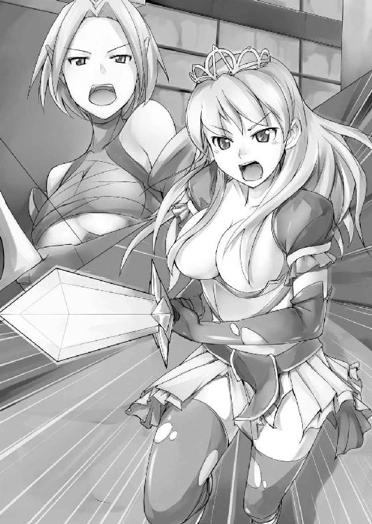
烈光は吼える魔性の胸を貫き、ドシュッと重い唸りと共に青い血しぶきが破裂した。
「うおおおおおおおぉぉっっっ!!」
シルヴィアはそのまま柄に全力を押し込め、魔王は力なくその場に倒れ込む。それでもシルヴィアはただひたすらに、柄へと力を込め続けた。
「今よ、呪文を!!」
シェリラザードの叫びを合図に、エルフたちが一斉に呪を紡ぎだす。
ボウッ!!
地面に描かれた光の魔法陣が更に眩く輝きを放ち、その上に倒れたヴァランディアの肉体が、泥沼のようにゆっくりと飲み込まれ始めた。
「う...ぐぅあああ......からだが...ここまで来たのに...ちくしょう、ちくしょうめがぁっ...シルヴィア、貴様っ、きさまだけでもおぉぉ.........!!」
もがく魔王の掌が、聖女を捕らえようと宙を泳ぐ。しかし聖女は臆することなく聖剣に力を込め、祈りを捧げ続けた。
魔手は結局シルヴィアを捕らえることなく、やがて光の中へと飲み込まれていった。そしてその指先までが、完全に地底へと堕ちた瞬間。
バシュンッ!!
魔法陣は一際眩い烈光を放ち、魔王もろとも消え失せた。魔法陣を形作った無数の矢も今は焼け落ち、聖剣を地面に突き立てる聖女のみがそこに残されていた。
「消えろっ...きえろっ、きえろぉぉぉっっっ.........!!」
魔王が完全に地の底へ堕ちた後も。聖女はしばしの間剣の柄を握り、それを大地へと突き立て搾り出すように祈りの言葉を紡ぎ続けていた。
「もういいわシルヴィア、もういいの.........よくやったわね」
いつの間にか下に降りていたシェリーに頭を撫でられ、ようやく美姫は我に返る。そしてその瞬間、少女は糸を切られたようにその場にぺたんと座り込む。
あるのは地面に突き立てられた聖剣だけ。その光景はシルヴィアに、かつて城の地下で目にした封印を思い起こさせた。
全部、終わったんだ......そう思った途端目頭が熱くなり、シルヴィアは思いきり嗚咽を漏らした。
「う...゛ううぁぁああぁっ......えぐっ、ありがとう...ごめん、ごめんねリリスぅっ......!!」
ようやく流れ始めた涙が頬を伝い、今も手の中に残る黒い髪飾りへぽつぽつと落ちる。それを掌でギュッと握り締めながら、聖女は蹲りそのまま深く慟哭した──。
終章 帰還 -Curtain Call-
「かんぱぁ〜〜いっっ♪」
超が付くほどの上機嫌でそう言い放ったのは、エルフ族の長シェリラザードであった。
既にほろ酔い気味のシェリーは今にも泡が溢れそうなビールジョッキを片手に掲げ、酒樽の上に腰掛けている。
「いやーめでたいわあ!! 魔王の脅威は去り、世界を覆った呪いは解かれた!! 島にも封印をかけておいたから、少なくとも私の目の青いうちはアイツと再会することもない──あーっ、こんなにお酒が美味しく感じられたのはいったい何百年ぶりかしら!? お姉さん、今日はもーとことん呑んじゃうんだからっ!!」
はしゃぎ倒すエルフのそんな言葉を、しかしシルヴィアは醒めた気持ちで聞き流していた。
魔王を封印したその後で。魔島に取り残されたシルヴィアとエルフたちを拾い上げたのは、どこから手に入れてきたのか真新しい海賊船にて馳せ参じた船長であった。
窓の外に視線をやれば、既にあらかた傷の治った船長が、一路北へと舵を取っている。失われた腕は戻らず鉤爪となっていたが、シルヴィアの「それとっても海賊っぽい♥」とのお言葉を賜り、すっかり大喜びの船長であった。
そしてそんな彼の周囲には。
「キャー、おじさまステキィ！」
「ねえねえ奥様はいるのォ？ えー、独身!? じゃあじゃあアタシ、本気で狙っちゃおーかなー♪」
魔王封印の円陣を築いた妖精族の娘たちが、ハーレムのようにまとわりついていた。
「お...お嬢さんがたバカ言っちゃいけねえよ......操船の邪魔だ、あっちに行ってな」
硬派を自認する船長は石のようにカチコチに固まりながら、冷静を装いぶっきらぼうにそう言い放つも、
「やだー赤くなってる！ 照れてるのー、かーわゆいっ!!」
見透かされたその挙句、チュッ♥ と頬にキスまでされて、茹で蛸みたいに湯気を出し、その眼を白黒させていた。
他の船員たちもまた、美しいエルフに囲まれてすっかり鼻の下を伸ばしきっている。
妖精族は男性も、細面で中性的な顔立ちが多い。その反動か、傍目にはむさ苦しいだけの屈強な海の男たちも、彼女たちからしてみれば逞しく魅力的と映るらしく大人気であった。
「ふふ、外の方も大盛り上がりじゃないのっ!! ......ってシルヴィア、さっきからなあに浮かない顔してんのよ？ 魔王の穢れは浄化の炎で焼き払ったし、お父様たちもみんな無事だってさっき占ってあげたでしょ？ あなた世界を救ったのよ、救世主様なのよ？ ちったあ嬉しそうな顔しなさいよっこのこの!!」
バンバンッと背中を叩かれそう言われてなお、シルヴィアは表情を暗くしたままだ。
彼女の頭にあったのはただ一つ──リリスのことであった。
「どうしてシェリーはそんなにも、嬉しそうな顔ができるの？」
ようやく開いたシルヴィアの口から零れ出たのは非難の声だ。碧い瞳を一目見て、すべてを察した妖精族の長はにわかに声のトーンを落とす。
「ああ、リリスのことね──済まないと思ってるわ。でも他に、手がなかった」
「そんなの言い訳だわ!!」
シェリラザードの謝罪にも、ブロンドの美姫は声を荒げる。
「こんなのってあんまりだわ!! どうしてよ、ねえ、どうして.........」
言いながらシルヴィアは船室の端を指差した。そこには──。
「どうして！ 死んだリリスがここにいるのよッ!?」
白銀色のツインテール。子猫のような釣り目にルビーを思わせる紅い瞳。そこにいたのは紛れもなく、聖剣の力を受けて消失したあの魔少女であった。
「うっさいわね......そんなのあたしが聞きたいぐらいよ」
指を指された紅眼の少女はいかにもバツが悪そうに、そっぽを向いてそう呟く。
「リリスは聖女と魔王の娘だもの。聖剣の持つ聖なる力を身体に浴びて、魔族の血が浄化されたら、あとは聖女の血だけを残したふつーの女の子に戻るに決まってるじゃない」
そんなの世界の常識ですよ、とばかりにシェリーは平然と言い放つ。
──魔王の封印が完成したその後。ひとしきり泣き終えたシルヴィアの目の前で、シェリーはおもむろに水がめを取り出し、それを魔少女の破片に注いだ。
するとそこからにわかに光が溢れ出し、中からリリスが一糸纏わぬ姿で復活したのである。そりゃあもう、あっさりと。
生まれ変わった銀髪少女のお尻には、あのやじり型の尻尾がない。自身の魔力で形成していた黒衣も今は失われ、代わりに純白のシーツでもってその愛らしい肢体を包み隠していた。エルフの言葉通り、リリスは〝普通の女の子〟になったのだ。
「だったらさっさとそー言ってよッ!! うわー〝リリスが、護ってくれた......？〟とかやってたわたくしが、なんだかすんごい間抜けじゃないのッ!!」
「アンタなんかまだいーわよっ、あたしなんか忌の際だと思ったからこそ〝悲しくないならたまには思い出してよね（微笑）〟みたいな柄にもないことやったのにっ!! あーもー死にたい。助かって嬉しいけど今すぐ死にたい、すぐさま海に身投げしたい......」
自分たちが口にした恥ずかしい言葉の数々を思い出し、二人の美姫は揃って頭を抱え込む。
「ヴァランディアを封印するまではそんなの説明してる暇も、リリスを蘇生してる余裕もなかったんだからしょーがないじゃないの。まあなんだかんだ言っててもリリスはシルヴィアを見捨てなかったし、シルヴィアもリリスのことを信じ続けた。その信頼の力が、最後は魔王をも退けたのよ.........なぁーんちゃって、ねえちょっと今のカックイクない？」
そう言って、ジョッキ片手に高笑いのシェリラザード。普段からどこまで本気でどこから冗談なのかわからない上に、この酔っ払いようではもう相手にしていられない。
「ううっ、まったくぅっ......それにしても。リリスはこれからどうするつもり？ どこにも行くあてないなら、わたくしの召使くらいにだったらしてあげたってよくってよ？」
相変わらずの上から目線で哀れみの言葉をかける美姫。とはいえそれは彼女一流の照れ隠しで、あてなどあるはずのないリリスと一緒に暮らしたいだけだったのだが。
しかしそれに対し、紅い瞳の少女はしばし思案した後にニヤリ、と意味ありげに笑った。
「召使ねえ......でも考えてみたら。アンタの国って元々は、聖女だったあたしのママが建てたものよね？」
「はっ、そういえば......」
リリスの指摘に今更ながら、彼女が自分の遥か祖先であることを思い出させられる。
「こーなったらいちかばちか、王位継承権を主張してアンタら親子と法廷闘争、ってのもそれはそれでなかなか楽しそーよねぇ？ 果たしてどっちが召使にな・る・の・や・ら♪」
からかうように言いながら、楽しげに奸計を巡らせるツインテールの少女。
「なっ!? あ、あなたみたいなロリババアの言うことなんて、誰も信じやしないわよ!!」
「キーッ、言ったわねこのホルスタインッ!! そっちこそっ、アンタみたいなスポンジ脳がまつりごとなんかに手を出したら、三日で国が滅ぶわよっ!!」
二人の美姫は取っ組み合って、船室狭しとコロコロ転がる。
「おーしやれやれー！ ふふっ、けんかするほど仲がいいってね♪」
ジョッキにおかわりを注ぎつつ、無責任にはやし立てる酔いどれエルフ。
「姫様がたぁ、前方に港が見えてきやし......んぶぅっ、たてすじぃっ!?」
そこに飛び込んできた船長が、取っ組み合いではだけたリリスの裸体を目にし、鼻血を噴いて倒れ込んだ。
「ちょっ、見たわねおっさん!? このエッチ馬鹿スケベ変態ッ!!」
「途中でハナシ逸らさないでよっ、リリスのばかーっ!!」
「あ〜らこの船長、息してないわ」
混乱する一行を乗せながら、船はゆっくりと日常へ還っていった。
あとがき
初見の方ははじめまして、ご存知の方にはおひさしぶりです、筆者の舞麗辞です。
このたびは拙著『プリンセスリバーシ!!』をお求めいただき、本当にありがとうございます。
あるいは本屋などで立ち読み中のアナタ。本作は聖女の末裔であるお姫様と悪魔っ娘がエルフの美女を交えつつ、キャッキャウフフしながら冒険を繰り広げるステキ小説です。ちょっとでも面白そうと感じたら、ぜひぜひレジまで連れて行ってやってください。
続いて謝辞を。今回は担当編集様に一方ならぬご苦労をおかけしてしまいました。色々無理を聞いていただき感謝の念に尽きません。
ステキなイラストで本作に華を添えてくださいました昼沖太先生にも、この場を借りてお礼申し上げます。
それでは、本書が少しでも永くアナタの本棚の一等地を占めることを願って。
舞麗辞 拝
舞麗辞
「見目麗しいお姫様が、件を手にとり魔王に挑む」まさにファンタジーの定石です。
しかしそのお姫様がどうしようもないくらいへっぽこだったら......？
戦うお姫様史上最弱（当社比）、シルヴィア姫の冒険の始まりです。
昼沖太
リリスのデザインは自分でも気に入ってます。
あとみっく文庫
プリンセスリバーシ!!
交錯する美姫と魔姫
著者 舞麗辞
装丁 キルタイムコミュニケーション制作部
発行 株式会社キルタイムコミュニケーション
〒１０４-００４１ 東京都中央区新富１-３-７ヨドコウビル１Ｆ
著作権 ©Myrage 2009-2014
当ファイルは、あとみっく文庫『プリンセスリバーシ!! 交錯する美姫と魔姫』（２００９年11月９日 初版発行）に基づいて作成しております。
※本作品の全部あるいは一部を無断で複製・転載・配信・送信したり、ホームページ上に転載することを禁止します。本作品の内容を無断で改変、改ざん等行うことも禁止します。また、有償・無償にかかわらず本作品を第三者に譲渡することはできません。